- KusonStack一站式可编程配置技术栈(Go): https://github.com/KusionStack/kusion
- KCL 配置编程语言(Rust): https://github.com/KusionStack/KCLVM
- 凹语言™: https://github.com/wa-lang/wa
Go语言圣经（中文版）
Go语言圣经 《The Go Programming Language》 中文版本，仅供学习交流之用。对于希望学习CGO、Go汇编语言等高级用法的同学，我们推荐《Go语言高级编程》开源图书。如果希望深入学习Go语言语法树结构，可以参考《Go语法树入门——开启自制编程语言和编译器之旅》。如果想从头实现一个玩具Go语言可以参考《从头实现µGo语言》。
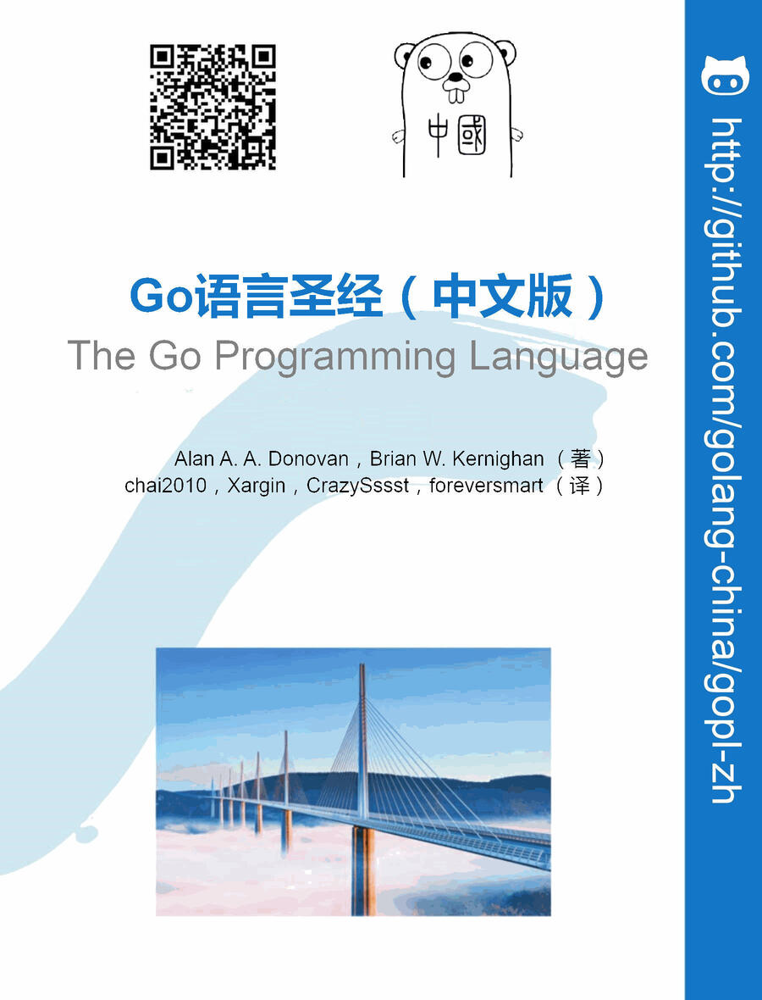
- 在线阅读：https://gopl-zh.github.io
- 在线阅读：https://golang-china.github.io/gopl-zh
- 项目主页：https://github.com/gopl-zh
- 项目主页(旧)：http://github.com/golang-china/gopl-zh
- 原版官网：http://gopl.io
译者信息：
- 译者：柴树杉，Github @chai2010，Twitter @chaishushan
- 译者：Xargin, https://github.com/cch123
- 译者：CrazySssst, https://github.com/CrazySssst
- 译者：foreversmart, https://github.com/foreversmart njutree@gmail.com
Go 语言中国：
- Go 语言中国：https://github.com/golang-china
- Go 语言中国论坛：https://github.com/golang-china/main.go/discussions
前言
Go语言起源
编程语言的演化跟生物物种的演化类似，一个成功的编程语言的后代一般都会继承它们祖先的优点；当然有时多种语言杂合也可能会产生令人惊讶的特性；还有一些激进的新特性可能并没有先例。通过观察这些影响，我们可以学到为什么一门语言是这样子的，它已经适应了怎样的环境。
下图展示了有哪些早期的编程语言对Go语言的设计产生了重要影响。

Go语言有时候被描述为“类C语言”，或者是“21世纪的C语言”。Go从C语言继承了相似的表达式语法、控制流结构、基础数据类型、调用参数传值、指针等很多思想，还有C语言一直所看中的编译后机器码的运行效率以及和现有操作系统的无缝适配。
但是在Go语言的家族树中还有其它的祖先。其中一个有影响力的分支来自Niklaus Wirth所设计的Pascal语言。然后Modula-2语言激发了包的概念。然后Oberon语言摒弃了模块接口文件和模块实现文件之间的区别。第二代的Oberon-2语言直接影响了包的导入和声明的语法，还有Oberon语言的面向对象特性所提供的方法的声明语法等。
Go语言的另一支祖先，带来了Go语言区别其他语言的重要特性，灵感来自于贝尔实验室的Tony Hoare于1978年发表的鲜为外界所知的关于并发研究的基础文献 顺序通信进程 （ communicating sequential processes ，缩写为CSP。在CSP中，程序是一组中间没有共享状态的平行运行的处理过程，它们之间使用管道进行通信和控制同步。不过Tony Hoare的CSP只是一个用于描述并发性基本概念的描述语言，并不是一个可以编写可执行程序的通用编程语言。
接下来，Rob Pike和其他人开始不断尝试将CSP引入实际的编程语言中。他们第一次尝试引入CSP特性的编程语言叫Squeak（老鼠间交流的语言），是一个提供鼠标和键盘事件处理的编程语言，它的管道是静态创建的。然后是改进版的Newsqueak语言，提供了类似C语言语句和表达式的语法和类似Pascal语言的推导语法。Newsqueak是一个带垃圾回收的纯函数式语言，它再次针对键盘、鼠标和窗口事件管理。但是在Newsqueak语言中管道是动态创建的，属于第一类值，可以保存到变量中。
在Plan9操作系统中，这些优秀的想法被吸收到了一个叫Alef的编程语言中。Alef试图将Newsqueak语言改造为系统编程语言，但是因为缺少垃圾回收机制而导致并发编程很痛苦。（译注：在Alef之后还有一个叫Limbo的编程语言，Go语言从其中借鉴了很多特性。 具体请参考Pike的讲稿：http://talks.golang.org/2012/concurrency.slide#9 ）
Go语言的其他的一些特性零散地来自于其他一些编程语言；比如iota语法是从APL语言借鉴，词法作用域与嵌套函数来自于Scheme语言（和其他很多语言）。当然，我们也可以从Go中发现很多创新的设计。比如Go语言的切片为动态数组提供了有效的随机存取的性能，这可能会让人联想到链表的底层的共享机制。还有Go语言新发明的defer语句。
Go语言项目
所有的编程语言都反映了语言设计者对编程哲学的反思，通常包括之前的语言所暴露的一些不足地方的改进。Go项目是在Google公司维护超级复杂的几个软件系统遇到的一些问题的反思（但是这类问题绝不是Google公司所特有的）。
正如Rob Pike所说，“软件的复杂性是乘法级相关的”，通过增加一个部分的复杂性来修复问题通常将慢慢地增加其他部分的复杂性。通过增加功能、选项和配置是修复问题的最快的途径，但是这很容易让人忘记简洁的内涵，即从长远来看，简洁依然是好软件的关键因素。
简洁的设计需要在工作开始的时候舍弃不必要的想法，并且在软件的生命周期内严格区别好的改变和坏的改变。通过足够的努力，一个好的改变可以在不破坏原有完整概念的前提下保持自适应，正如Fred Brooks所说的“概念完整性”；而一个坏的改变则不能达到这个效果，它们仅仅是通过肤浅的和简单的妥协来破坏原有设计的一致性。只有通过简洁的设计，才能让一个系统保持稳定、安全和持续的进化。
Go项目包括编程语言本身，附带了相关的工具和标准库，最后但并非代表不重要的是，关于简洁编程哲学的宣言。就事后诸葛的角度来看，Go语言的这些地方都做的还不错：拥有自动垃圾回收、一个包系统、函数作为一等公民、词法作用域、系统调用接口、只读的UTF8字符串等。但是Go语言本身只有很少的特性，也不太可能添加太多的特性。例如，它没有隐式的数值转换，没有构造函数和析构函数，没有运算符重载，没有默认参数，也没有继承，没有泛型，没有异常，没有宏，没有函数修饰，更没有线程局部存储。但是，语言本身是成熟和稳定的，而且承诺保证向后兼容：用之前的Go语言编写程序可以用新版本的Go语言编译器和标准库直接构建而不需要修改代码。
Go语言有足够的类型系统以避免动态语言中那些粗心的类型错误，但是，Go语言的类型系统相比传统的强类型语言又要简洁很多。虽然，有时候这会导致一个“无类型”的抽象类型概念，但是Go语言程序员并不需要像C++或Haskell程序员那样纠结于具体类型的安全属性。在实践中，Go语言简洁的类型系统给程序员带来了更多的安全性和更好的运行时性能。
Go语言鼓励当代计算机系统设计的原则，特别是局部的重要性。它的内置数据类型和大多数的准库数据结构都经过精心设计而避免显式的初始化或隐式的构造函数，因为很少的内存分配和内存初始化代码被隐藏在库代码中了。Go语言的聚合类型（结构体和数组）可以直接操作它们的元素，只需要更少的存储空间、更少的内存写操作，而且指针操作比其他间接操作的语言也更有效率。由于现代计算机是一个并行的机器，Go语言提供了基于CSP的并发特性支持。Go语言的动态栈使得轻量级线程goroutine的初始栈可以很小，因此，创建一个goroutine的代价很小，创建百万级的goroutine完全是可行的。
Go语言的标准库（通常被称为语言自带的电池），提供了清晰的构建模块和公共接口，包含I/O操作、文本处理、图像、密码学、网络和分布式应用程序等，并支持许多标准化的文件格式和编解码协议。库和工具使用了大量的约定来减少额外的配置和解释，从而最终简化程序的逻辑，而且，每个Go程序结构都是如此的相似，因此，Go程序也很容易学习。使用Go语言自带工具构建Go语言项目只需要使用文件名和标识符名称，一个偶尔的特殊注释来确定所有的库、可执行文件、测试、基准测试、例子、以及特定于平台的变量、项目的文档等；Go语言源代码本身就包含了构建规范。
本书的组织
我们假设你已经有一种或多种其他编程语言的使用经历，不管是类似C、C++或Java的编译型语言，还是类似Python、Ruby、JavaScript的脚本语言，因此我们不会像对完全的编程语言初学者那样解释所有的细节。因为，Go语言的变量、常量、表达式、控制流和函数等基本语法也是类似的。
第一章包含了本教程的基本结构，通过十几个程序介绍了用Go语言如何实现类似读写文件、文本格式化、创建图像、网络客户端和服务器通讯等日常工作。
第二章描述了Go语言程序的基本元素结构、变量、新类型定义、包和文件、以及作用域等概念。第三章讨论了数字、布尔值、字符串和常量，并演示了如何显示和处理Unicode字符。第四章描述了复合类型，从简单的数组、字典、切片到动态列表。第五章涵盖了函数，并讨论了错误处理、panic和recover，还有defer语句。
第一章到第五章是基础部分，主流命令式编程语言这部分都类似。个别之处，Go语言有自己特色的语法和风格，但是大多数程序员能很快适应。其余章节是Go语言特有的：方法、接口、并发、包、测试和反射等语言特性。
Go语言的面向对象机制与一般语言不同。它没有类层次结构，甚至可以说没有类；仅仅通过组合（而不是继承）简单的对象来构建复杂的对象。方法不仅可以定义在结构体上，而且，可以定义在任何用户自定义的类型上；并且，具体类型和抽象类型（接口）之间的关系是隐式的，所以很多类型的设计者可能并不知道该类型到底实现了哪些接口。方法在第六章讨论，接口在第七章讨论。
第八章讨论了基于顺序通信进程（CSP）概念的并发编程，使用goroutines和channels处理并发编程。第九章则讨论了传统的基于共享变量的并发编程。
第十章描述了包机制和包的组织结构。这一章还展示了如何有效地利用Go自带的工具，使用单个命令完成编译、测试、基准测试、代码格式化、文档以及其他诸多任务。
第十一章讨论了单元测试，Go语言的工具和标准库中集成了轻量级的测试功能，避免了强大但复杂的测试框架。测试库提供了一些基本构件，必要时可以用来构建复杂的测试构件。
第十二章讨论了反射，一种程序在运行期间审视自己的能力。反射是一个强大的编程工具，不过要谨慎地使用；这一章利用反射机制实现一些重要的Go语言库函数，展示了反射的强大用法。第十三章解释了底层编程的细节，在必要时，可以使用unsafe包绕过Go语言安全的类型系统。
每一章都有一些练习题，你可以用来测试你对Go的理解，你也可以探讨书中这些例子的扩展和替代。
书中所有的代码都可以从 http://gopl.io 上的Git仓库下载。go get命令根据每个例子的导入路径智能地获取、构建并安装。只需要选择一个目录作为工作空间，然后将GOPATH环境变量设置为该路径。
必要时，Go语言工具会创建目录。例如：
$ export GOPATH=$HOME/gobook # 选择工作目录
$ go get gopl.io/ch1/helloworld # 获取/编译/安装
$ $GOPATH/bin/helloworld # 运行程序
Hello, 世界 # 这是中文
运行这些例子需要安装Go1.5以上的版本。
$ go version
go version go1.5 linux/amd64
如果使用其他的操作系统，请参考 https://golang.org/doc/install 提供的说明安装。
更多的信息
最佳的帮助信息来自Go语言的官方网站，https://golang.org ，它提供了完善的参考文档，包括编程语言规范和标准库等诸多权威的帮助信息。同时也包含了如何编写更地道的Go程序的基本教程，还有各种各样的在线文本资源和视频资源，它们是本书最有价值的补充。Go语言的官方博客 https://blog.golang.org 会不定期发布一些Go语言最好的实践文章，包括当前语言的发展状态、未来的计划、会议报告和Go语言相关的各种会议的主题等信息（译注： http://talks.golang.org/ 包含了官方收录的各种报告的讲稿）。
在线访问的一个有价值的地方是可以从web页面运行Go语言的程序（而纸质书则没有这么便利了）。这个功能由来自 https://play.golang.org 的 Go Playground 提供，并且可以方便地嵌入到其他页面中，例如 https://golang.org 的主页，或 godoc 提供的文档页面中。
Playground可以简单的通过执行一个小程序来测试对语法、语义和对程序库的理解，类似其他很多语言提供的REPL即时运行的工具。同时它可以生成对应的url，非常适合共享Go语言代码片段，汇报bug或提供反馈意见等。
基于 Playground 构建的 Go Tour，https://tour.golang.org ，是一个系列的Go语言入门教程，它包含了诸多基本概念和结构相关的并可在线运行的互动小程序。
当然，Playground 和 Tour 也有一些限制，它们只能导入标准库，而且因为安全的原因对一些网络库做了限制。如果要在编译和运行时需要访问互联网，对于一些更复杂的实验，你可能需要在自己的电脑上构建并运行程序。幸运的是下载Go语言的过程很简单，从 https://golang.org 下载安装包应该不超过几分钟（译注：感谢伟大的长城，让大陆的Gopher们都学会了自己打洞的基本生活技能，下载时间可能会因为洞的大小等因素从几分钟到几天或更久），然后就可以在自己电脑上编写和运行Go程序了。
Go语言是一个开源项目，你可以在 https://golang.org/pkg 阅读标准库中任意函数和类型的实现代码，和下载安装包的代码完全一致。这样，你可以知道很多函数是如何工作的， 通过挖掘找出一些答案的细节，或者仅仅是出于欣赏专业级Go代码。
致谢
Rob Pike和Russ Cox，以及很多其他Go团队的核心成员多次仔细阅读了本书的手稿，他们对本书的组织结构和表述用词等给出了很多宝贵的建议。在准备日文版翻译的时候，Yoshiki Shibata更是仔细地审阅了本书的每个部分，及时发现了诸多英文和代码的错误。我们非常感谢本书的每一位审阅者，并感谢对本书给出了重要的建议的Brian Goetz、Corey Kosak、Arnold Robbins、Josh Bleecher Snyder和Peter Weinberger等人。
我们还感谢Sameer Ajmani、Ittai Balaban、David Crawshaw、Billy Donohue、Jonathan Feinberg、Andrew Gerrand、Robert Griesemer、John Linderman、Minux Ma（译注：中国人，Go团队成员。）、Bryan Mills、Bala Natarajan、Cosmos Nicolaou、Paul Staniforth、Nigel Tao（译注：好像是陶哲轩的兄弟）以及Howard Trickey给出的许多有价值的建议。我们还要感谢David Brailsford和Raph Levien关于类型设置的建议。
我们从来自Addison-Wesley的编辑Greg Doench收到了很多帮助，从最开始就得到了越来越多的帮助。来自AW生产团队的John Fuller、Dayna Isley、Julie Nahil、Chuti Prasertsith到Barbara Wood，感谢你们的热心帮助。
Alan Donovan特别感谢：Sameer Ajmani、Chris Demetriou、Walt Drummond和Google公司的Reid Tatge允许他有充裕的时间去写本书；感谢Stephen Donovan的建议和始终如一的鼓励，以及他的妻子Leila Kazemi并没有让他为了家庭琐事而分心，并热情坚定地支持这个项目。
Brian Kernighan特别感谢：朋友和同事对他的耐心和宽容，让他慢慢地梳理本书的写作思路。同时感谢他的妻子Meg和其他很多朋友对他写作事业的支持。
2015年 10月 于 纽约
第1章 入门
本章介绍Go语言的基础组件。本章提供了足够的信息和示例程序，希望可以帮你尽快入门，写出有用的程序。本章和之后章节的示例程序都针对你可能遇到的现实案例。先了解几个Go程序，涉及的主题从简单的文件处理、图像处理到互联网客户端和服务端并发。当然，第一章不会解释细枝末节，但用这些程序来学习一门新语言还是很有效的。
学习一门新语言时，会有一种自然的倾向，按照自己熟悉的语言的套路写新语言程序。学习Go语言的过程中，请警惕这种想法，尽量别这么做。我们会演示怎么写好Go语言程序，所以，请使用本书的代码作为你自己写程序时的指南。
1.1. Hello, World
我们以现已成为传统的“hello world”案例来开始吧，这个例子首次出现于 1978 年出版的 C 语言圣经 《The C Programming Language》（译注：本书作者之一 Brian W. Kernighan 也是《The C Programming Language》一书的作者）。C 语言是直接影响 Go 语言设计的语言之一。这个例子体现了 Go 语言一些核心理念。
gopl.io/ch1/helloworld
package main
import "fmt"
func main() {
fmt.Println("Hello, 世界")
}
Go 是一门编译型语言，Go 语言的工具链将源代码及其依赖转换成计算机的机器指令（译注：静态编译）。Go 语言提供的工具都通过一个单独的命令 go 调用，go 命令有一系列子命令。最简单的一个子命令就是 run。这个命令编译一个或多个以。.go 结尾的源文件，链接库文件，并运行最终生成的可执行文件。（本书使用$表示命令行提示符。）
$ go run helloworld.go
毫无意外，这个命令会输出：
Hello, 世界
Go 语言原生支持 Unicode，它可以处理全世界任何语言的文本。
如果不只是一次性实验，你肯定希望能够编译这个程序，保存编译结果以备将来之用。可以用 build 子命令：
$ go build helloworld.go
这个命令生成一个名为 helloworld 的可执行的二进制文件（译注：Windows 系统下生成的可执行文件是 helloworld.exe，增加了 .exe 后缀名），之后你可以随时运行它（译注：在 Windows 系统下在命令行直接输入 helloworld.exe 命令运行），不需任何处理（译注：因为静态编译，所以不用担心在系统库更新的时候冲突，幸福感满满）。
$ ./helloworld
Hello, 世界
本书中所有示例代码上都有一行标记，利用这些标记可以从 gopl.io 网站上本书源码仓库里获取代码：
gopl.io/ch1/helloworld
执行 go get gopl.io/ch1/helloworld 命令，就会从网上获取代码，并放到对应目录中（需要先安装 Git 或 Hg 之类的版本管理工具，并将对应的命令添加到 PATH 环境变量中。序言已经提及，需要先设置好 GOPATH 环境变量，下载的代码会放在 $GOPATH/src/gopl.io/ch1/helloworld 目录）。2.6 和 10.7 节有这方面更详细的介绍。
来讨论下程序本身。Go 语言的代码通过包（package）组织，包类似于其它语言里的库（libraries）或者模块（modules）。一个包由位于单个目录下的一个或多个 .go 源代码文件组成，目录定义包的作用。每个源文件都以一条 package 声明语句开始，这个例子里就是 package main，表示该文件属于哪个包，紧跟着一系列导入（import）的包，之后是存储在这个文件里的程序语句。
Go 的标准库提供了 100 多个包，以支持常见功能，如输入、输出、排序以及文本处理。比如 fmt 包，就含有格式化输出、接收输入的函数。Println 是其中一个基础函数，可以打印以空格间隔的一个或多个值，并在最后添加一个换行符，从而输出一整行。
main 包比较特殊。它定义了一个独立可执行的程序，而不是一个库。在 main 里的 main 函数也很特殊，它是整个程序执行时的入口（译注：C 系语言差不多都这样）。main 函数所做的事情就是程序做的。当然了，main 函数一般调用其它包里的函数完成很多工作（如：fmt.Println）。
必须告诉编译器源文件需要哪些包，这就是跟随在 package 声明后面的 import 声明扮演的角色。hello world 例子只用到了一个包，大多数程序需要导入多个包。
必须恰当导入需要的包，缺少了必要的包或者导入了不需要的包，程序都无法编译通过。这项严格要求避免了程序开发过程中引入未使用的包（译注：Go 语言编译过程没有警告信息，争议特性之一）。
import 声明必须跟在文件的 package 声明之后。随后，则是组成程序的函数、变量、常量、类型的声明语句（分别由关键字 func、var、const、type 定义）。这些内容的声明顺序并不重要（译注：最好还是定一下规范）。这个例子的程序已经尽可能短了，只声明了一个函数，其中只调用了一个其他函数。为了节省篇幅，有些时候示例程序会省略 package 和 import 声明，但是，这些声明在源代码里有，并且必须得有才能编译。
一个函数的声明由 func 关键字、函数名、参数列表、返回值列表（这个例子里的 main 函数参数列表和返回值都是空的）以及包含在大括号里的函数体组成。第五章进一步考察函数。
Go 语言不需要在语句或者声明的末尾添加分号，除非一行上有多条语句。实际上，编译器会主动把特定符号后的换行符转换为分号，因此换行符添加的位置会影响 Go 代码的正确解析（译注：比如行末是标识符、整数、浮点数、虚数、字符或字符串文字、关键字 break、continue、fallthrough或 return 中的一个、运算符和分隔符 ++、--、)、] 或 } 中的一个）。举个例子，函数的左括号 { 必须和 func 函数声明在同一行上，且位于末尾，不能独占一行，而在表达式 x+y 中，可在 + 后换行，不能在 + 前换行（译注：以+结尾的话不会被插入分号分隔符，但是以 x 结尾的话则会被分号分隔符，从而导致编译错误）。
Go 语言在代码格式上采取了很强硬的态度。gofmt工具把代码格式化为标准格式（译注：这个格式化工具没有任何可以调整代码格式的参数，Go 语言就是这么任性），并且 go 工具中的 fmt 子命令会对指定包，否则默认为当前目录中所有。go 源文件应用 gofmt 命令。本书中的所有代码都被 gofmt 过。你也应该养成格式化自己的代码的习惯。以法令方式规定标准的代码格式可以避免无尽的无意义的琐碎争执（译注：也导致了 Go 语言的 TIOBE 排名较低，因为缺少撕逼的话题）。更重要的是，这样可以做多种自动源码转换，如果放任 Go 语言代码格式，这些转换就不大可能了。
很多文本编辑器都可以配置为保存文件时自动执行 gofmt，这样你的源代码总会被恰当地格式化。还有个相关的工具：goimports，可以根据代码需要，自动地添加或删除 import 声明。这个工具并没有包含在标准的分发包中，可以用下面的命令安装：
$ go get golang.org/x/tools/cmd/goimports
对于大多数用户来说，下载、编译包、运行测试用例、察看 Go 语言的文档等等常用功能都可以用 go 的工具完成。10.7 节详细介绍这些知识。
1.2. 命令行参数
大多数的程序都是处理输入，产生输出；这也正是“计算”的定义。但是，程序如何获取要处理的输入数据呢？一些程序生成自己的数据，但通常情况下，输入来自于程序外部：文件、网络连接、其它程序的输出、敲键盘的用户、命令行参数或其它类似输入源。下面几个例子会讨论其中几个输入源，首先是命令行参数。
os 包以跨平台的方式，提供了一些与操作系统交互的函数和变量。程序的命令行参数可从 os 包的 Args 变量获取；os 包外部使用 os.Args 访问该变量。
os.Args 变量是一个字符串（string）的 切片（slice）（译注：slice 和 Python 语言中的切片类似，是一个简版的动态数组），切片是 Go 语言的基础概念，稍后详细介绍。现在先把切片 s 当作数组元素序列，序列的长度动态变化，用 s[i] 访问单个元素，用 s[m:n] 获取子序列（译注：和 Python 里的语法差不多）。序列的元素数目为 len(s)。和大多数编程语言类似，区间索引时，Go 语言里也采用左闭右开形式，即，区间包括第一个索引元素，不包括最后一个，因为这样可以简化逻辑。（译注：比如 a=[1,2,3,4,5], a[0:3]=[1,2,3]，不包含最后一个元素）。比如 s[m:n] 这个切片，0≤m≤n≤len(s)，包含 n-m 个元素。
os.Args 的第一个元素：os.Args[0]，是命令本身的名字；其它的元素则是程序启动时传给它的参数。s[m:n] 形式的切片表达式，产生从第 m 个元素到第 n-1 个元素的切片，下个例子用到的元素包含在 os.Args[1:len(os.Args)] 切片中。如果省略切片表达式的 m 或 n，会默认传入 0 或 len(s)，因此前面的切片可以简写成 os.Args[1:]。
下面是 Unix 里 echo 命令的一份实现，echo 把它的命令行参数打印成一行。程序导入了两个包，用括号把它们括起来写成列表形式，而没有分开写成独立的 import 声明。两种形式都合法，列表形式习惯上用得多。包导入顺序并不重要；gofmt 工具格式化时按照字母顺序对包名排序。（示例有多个版本时，我们会对示例编号，这样可以明确当前正在讨论的是哪个。）
gopl.io/ch1/echo1
// Echo1 prints its command-line arguments.
package main
import (
"fmt"
"os"
)
func main() {
var s, sep string
for i := 1; i < len(os.Args); i++ {
s += sep + os.Args[i]
sep = " "
}
fmt.Println(s)
}
注释语句以 // 开头。对于程序员来说，// 之后到行末之间所有的内容都是注释，被编译器忽略。按照惯例，我们在每个包的包声明前添加注释；对于 main package，注释包含一句或几句话，从整体角度对程序做个描述。
var 声明定义了两个 string 类型的变量 s 和 sep。变量会在声明时直接初始化。如果变量没有显式初始化，则被隐式地赋予其类型的 零值（zero value），数值类型是 0，字符串类型是空字符串 ""。这个例子里，声明把 s 和 sep 隐式地初始化成空字符串。第 2 章再来详细地讲解变量和声明。
对数值类型，Go 语言提供了常规的数值和逻辑运算符。而对 string 类型，+ 运算符连接字符串（译注：和 C++ 或者 JavaScript 是一样的）。所以表达式：sep + os.Args[i] 表示连接字符串 sep 和 os.Args。程序中使用的语句：s+=sep+os.Args[i] 是一条 赋值语句，将 s 的旧值跟 sep 与 os.Args[i] 连接后赋值回 s，等价于：s=s+sep+os.Args[i]。
运算符 += 是赋值运算符（assignment operator），每种数值运算符或逻辑运算符，如 + 或 *，都有对应的赋值运算符。
echo 程序可以每循环一次输出一个参数，这个版本却是不断地把新文本追加到末尾来构造字符串。字符串 s 开始为空，即值为 ""，每次循环会添加一些文本；第一次迭代之后，还会再插入一个空格，因此循环结束时每个参数中间都有一个空格。这是一种二次加工（quadratic process），当参数数量庞大时，开销很大，但是对于 echo，这种情形不大可能出现。本章会介绍 echo 的若干改进版，下一章解决低效问题。
循环索引变量 i 在 for 循环的第一部分中定义。符号 := 是 短变量声明（short variable declaration）的一部分，这是定义一个或多个变量并根据它们的初始值为这些变量赋予适当类型的语句。下一章有这方面更多说明。
自增语句 i++ 给 i 加 1；这和 i+=1 以及 i=i+1 都是等价的。对应的还有 i-- 给 i 减 1。它们是语句，而不像 C 系的其它语言那样是表达式。所以 j=i++ 非法，而且 ++ 和 -- 都只能放在变量名后面，因此 --i 也非法。
Go 语言只有 for 循环这一种循环语句。for 循环有多种形式，其中一种如下所示：
for initialization; condition; post {
// zero or more statements
}
for 循环三个部分不需括号包围。大括号强制要求，左大括号必须和 post 语句在同一行。
initialization 语句是可选的，在循环开始前执行。initalization 如果存在，必须是一条 简单语句（simple statement），即，短变量声明、自增语句、赋值语句或函数调用。condition 是一个布尔表达式（boolean expression），其值在每次循环迭代开始时计算。如果为 true 则执行循环体语句。post 语句在循环体执行结束后执行，之后再次对 condition 求值。condition 值为 false 时，循环结束。
for 循环的这三个部分每个都可以省略，如果省略 initialization 和 post，分号也可以省略：
// a traditional "while" loop
for condition {
// ...
}
如果连 condition 也省略了，像下面这样：
// a traditional infinite loop
for {
// ...
}
这就变成一个无限循环，尽管如此，还可以用其他方式终止循环，如一条 break 或 return 语句。
for 循环的另一种形式，在某种数据类型的区间（range）上遍历，如字符串或切片。echo 的第二版本展示了这种形式：
gopl.io/ch1/echo2
// Echo2 prints its command-line arguments.
package main
import (
"fmt"
"os"
)
func main() {
s, sep := "", ""
for _, arg := range os.Args[1:] {
s += sep + arg
sep = " "
}
fmt.Println(s)
}
每次循环迭代，range 产生一对值；索引以及在该索引处的元素值。这个例子不需要索引，但 range 的语法要求，要处理元素，必须处理索引。一种思路是把索引赋值给一个临时变量（如 temp）然后忽略它的值，但 Go 语言不允许使用无用的局部变量（local variables），因为这会导致编译错误。
Go 语言中这种情况的解决方法是用 空标识符（blank identifier），即 _（也就是下划线）。空标识符可用于在任何语法需要变量名但程序逻辑不需要的时候（如：在循环里）丢弃不需要的循环索引，并保留元素值。大多数的 Go 程序员都会像上面这样使用 range 和 _ 写 echo 程序，因为隐式地而非显式地索引 os.Args，容易写对。
echo 的这个版本使用一条短变量声明来声明并初始化 s 和 seps，也可以将这两个变量分开声明，声明一个变量有好几种方式，下面这些都等价：
s := ""
var s string
var s = ""
var s string = ""
用哪种不用哪种，为什么呢？第一种形式，是一条短变量声明，最简洁，但只能用在函数内部，而不能用于包变量。第二种形式依赖于字符串的默认初始化零值机制，被初始化为 ""。第三种形式用得很少，除非同时声明多个变量。第四种形式显式地标明变量的类型，当变量类型与初值类型相同时，类型冗余，但如果两者类型不同，变量类型就必须了。实践中一般使用前两种形式中的某个，初始值重要的话就显式地指定变量的类型，否则使用隐式初始化。
如前文所述，每次循环迭代字符串 s 的内容都会更新。+= 连接原字符串、空格和下个参数，产生新字符串，并把它赋值给 s。s 原来的内容已经不再使用，将在适当时机对它进行垃圾回收。
如果连接涉及的数据量很大，这种方式代价高昂。一种简单且高效的解决方案是使用 strings 包的 Join 函数：
gopl.io/ch1/echo3
func main() {
fmt.Println(strings.Join(os.Args[1:], " "))
}
最后，如果不关心输出格式，只想看看输出值，或许只是为了调试，可以用 Println 为我们格式化输出。
fmt.Println(os.Args[1:])
这条语句的输出结果跟 strings.Join 得到的结果很像，只是被放到了一对方括号里。切片都会被打印成这种格式。
练习 1.1： 修改 echo 程序，使其能够打印 os.Args[0]，即被执行命令本身的名字。
练习 1.2： 修改 echo 程序，使其打印每个参数的索引和值，每个一行。
练习 1.3： 做实验测量潜在低效的版本和使用了 strings.Join 的版本的运行时间差异。（1.6 节讲解了部分 time 包，11.4 节展示了如何写标准测试程序，以得到系统性的性能评测。）
1.3. 查找重复的行
对文件做拷贝、打印、搜索、排序、统计或类似事情的程序都有一个差不多的程序结构：一个处理输入的循环，在每个元素上执行计算处理，在处理的同时或最后产生输出。我们会展示一个名为 dup 的程序的三个版本；灵感来自于 Unix 的 uniq 命令，其寻找相邻的重复行。该程序使用的结构和包是个参考范例，可以方便地修改。
dup 的第一个版本打印标准输入中多次出现的行，以重复次数开头。该程序将引入 if 语句，map 数据类型以及 bufio 包。
gopl.io/ch1/dup1
// Dup1 prints the text of each line that appears more than
// once in the standard input, preceded by its count.
package main
import (
"bufio"
"fmt"
"os"
)
func main() {
counts := make(map[string]int)
input := bufio.NewScanner(os.Stdin)
for input.Scan() {
counts[input.Text()]++
}
// NOTE: ignoring potential errors from input.Err()
for line, n := range counts {
if n > 1 {
fmt.Printf("%d\t%s\n", n, line)
}
}
}
正如 for 循环一样，if 语句条件两边也不加括号，但是主体部分需要加。if 语句的 else 部分是可选的，在 if 的条件为 false 时执行。
map 存储了键/值（key/value）的集合，对集合元素，提供常数时间的存、取或测试操作。键可以是任意类型，只要其值能用 == 运算符比较，最常见的例子是字符串；值则可以是任意类型。这个例子中的键是字符串，值是整数。内置函数 make 创建空 map，此外，它还有别的作用。4.3 节讨论 map。
（译注：从功能和实现上说，Go 的 map 类似于 Java 语言中的 HashMap，Python 语言中的 dict，Lua 语言中的 table，通常使用 hash 实现。遗憾的是，对于该词的翻译并不统一，数学界术语为映射，而计算机界众说纷纭莫衷一是。为了防止对读者造成误解，保留不译。）
每次 dup 读取一行输入，该行被当做键存入 map，其对应的值递增。counts[input.Text()]++ 语句等价下面两句：
line := input.Text()
counts[line] = counts[line] + 1
map 中不含某个键时不用担心，首次读到新行时，等号右边的表达式 counts[line] 的值将被计算为其类型的零值，对于 int 即 0。
为了打印结果，我们使用了基于 range 的循环，并在 counts 这个 map 上迭代。跟之前类似，每次迭代得到两个结果，键和其在 map 中对应的值。map 的迭代顺序并不确定，从实践来看，该顺序随机，每次运行都会变化。这种设计是有意为之的，因为能防止程序依赖特定遍历顺序，而这是无法保证的。（译注：具体可以参见这里https://stackoverflow.com/questions/11853396/google-go-lang-assignment-order）
继续来看 bufio 包，它使处理输入和输出方便又高效。Scanner 类型是该包最有用的特性之一，它读取输入并将其拆成行或单词；通常是处理行形式的输入最简单的方法。
程序使用短变量声明创建 bufio.Scanner 类型的变量 input。
input := bufio.NewScanner(os.Stdin)
该变量从程序的标准输入中读取内容。每次调用 input.Scan()，即读入下一行，并移除行末的换行符；读取的内容可以调用 input.Text() 得到。Scan 函数在读到一行时返回 true，不再有输入时返回 false。
类似于 C 或其它语言里的 printf 函数，fmt.Printf 函数对一些表达式产生格式化输出。该函数的首个参数是个格式字符串，指定后续参数被如何格式化。各个参数的格式取决于“转换字符”（conversion character），形式为百分号后跟一个字母。举个例子，%d 表示以十进制形式打印一个整型操作数，而 %s 则表示把字符串型操作数的值展开。
Printf 有一大堆这种转换，Go程序员称之为动词（verb）。下面的表格虽然远不是完整的规范，但展示了可用的很多特性：
%d 十进制整数
%x, %o, %b 十六进制，八进制，二进制整数。
%f, %g, %e 浮点数： 3.141593 3.141592653589793 3.141593e+00
%t 布尔：true或false
%c 字符（rune） (Unicode码点)
%s 字符串
%q 带双引号的字符串"abc"或带单引号的字符'c'
%v 变量的自然形式（natural format）
%T 变量的类型
%% 字面上的百分号标志（无操作数）
dup1 的格式字符串中还含有制表符\t和换行符\n。字符串字面上可能含有这些代表不可见字符的转义字符（escape sequences）。默认情况下，Printf 不会换行。按照惯例，以字母 f 结尾的格式化函数，如 log.Printf 和 fmt.Errorf，都采用 fmt.Printf 的格式化准则。而以 ln 结尾的格式化函数，则遵循 Println 的方式，以跟 %v 差不多的方式格式化参数，并在最后添加一个换行符。（译注：后缀 f 指 format，ln 指 line。）
很多程序要么从标准输入中读取数据，如上面的例子所示，要么从一系列具名文件中读取数据。dup 程序的下个版本读取标准输入或是使用 os.Open 打开各个具名文件，并操作它们。
gopl.io/ch1/dup2
// Dup2 prints the count and text of lines that appear more than once
// in the input. It reads from stdin or from a list of named files.
package main
import (
"bufio"
"fmt"
"os"
)
func main() {
counts := make(map[string]int)
files := os.Args[1:]
if len(files) == 0 {
countLines(os.Stdin, counts)
} else {
for _, arg := range files {
f, err := os.Open(arg)
if err != nil {
fmt.Fprintf(os.Stderr, "dup2: %v\n", err)
continue
}
countLines(f, counts)
f.Close()
}
}
for line, n := range counts {
if n > 1 {
fmt.Printf("%d\t%s\n", n, line)
}
}
}
func countLines(f *os.File, counts map[string]int) {
input := bufio.NewScanner(f)
for input.Scan() {
counts[input.Text()]++
}
// NOTE: ignoring potential errors from input.Err()
}
os.Open 函数返回两个值。第一个值是被打开的文件（*os.File），其后被 Scanner 读取。
os.Open 返回的第二个值是内置 error 类型的值。如果 err 等于内置值nil（译注：相当于其它语言里的 NULL），那么文件被成功打开。读取文件，直到文件结束，然后调用 Close 关闭该文件，并释放占用的所有资源。相反的话，如果 err 的值不是 nil，说明打开文件时出错了。这种情况下，错误值描述了所遇到的问题。我们的错误处理非常简单，只是使用 Fprintf 与表示任意类型默认格式值的动词 %v，向标准错误流打印一条信息，然后 dup 继续处理下一个文件；continue 语句直接跳到 for 循环的下个迭代开始执行。
为了使示例代码保持合理的大小，本书开始的一些示例有意简化了错误处理，显而易见的是，应该检查 os.Open 返回的错误值，然而，使用 input.Scan 读取文件过程中，不大可能出现错误，因此我们忽略了错误处理。我们会在跳过错误检查的地方做说明。5.4 节中深入介绍错误处理。
注意 countLines 函数在其声明前被调用。函数和包级别的变量（package-level entities）可以任意顺序声明，并不影响其被调用。（译注：最好还是遵循一定的规范）
map 是一个由 make 函数创建的数据结构的引用。map 作为参数传递给某函数时，该函数接收这个引用的一份拷贝（copy，或译为副本），被调用函数对 map 底层数据结构的任何修改，调用者函数都可以通过持有的 map 引用看到。在我们的例子中，countLines 函数向 counts 插入的值，也会被 main 函数看到。（译注：类似于 C++ 里的引用传递，实际上指针是另一个指针了，但内部存的值指向同一块内存）
dup 的前两个版本以"流”模式读取输入，并根据需要拆分成多个行。理论上，这些程序可以处理任意数量的输入数据。还有另一个方法，就是一口气把全部输入数据读到内存中，一次分割为多行，然后处理它们。下面这个版本，dup3，就是这么操作的。这个例子引入了 ReadFile 函数（来自于io/ioutil包），其读取指定文件的全部内容，strings.Split 函数把字符串分割成子串的切片。（Split 的作用与前文提到的 strings.Join 相反。）
我们略微简化了 dup3。首先，由于 ReadFile 函数需要文件名作为参数，因此只读指定文件，不读标准输入。其次，由于行计数代码只在一处用到，故将其移回 main 函数。
gopl.io/ch1/dup3
package main
import (
"fmt"
"io/ioutil"
"os"
"strings"
)
func main() {
counts := make(map[string]int)
for _, filename := range os.Args[1:] {
data, err := ioutil.ReadFile(filename)
if err != nil {
fmt.Fprintf(os.Stderr, "dup3: %v\n", err)
continue
}
for _, line := range strings.Split(string(data), "\n") {
counts[line]++
}
}
for line, n := range counts {
if n > 1 {
fmt.Printf("%d\t%s\n", n, line)
}
}
}
ReadFile 函数返回一个字节切片（byte slice），必须把它转换为 string，才能用 strings.Split 分割。我们会在3.5.4 节详细讲解字符串和字节切片。
实现上，bufio.Scanner、ioutil.ReadFile 和 ioutil.WriteFile 都使用 *os.File 的 Read 和 Write 方法，但是，大多数程序员很少需要直接调用那些低级（lower-level）函数。高级（higher-level）函数，像 bufio 和 io/ioutil 包中所提供的那些，用起来要容易点。
练习 1.4： 修改 dup2，出现重复的行时打印文件名称。
1.4. GIF动画
下面的程序会演示Go语言标准库里的image这个package的用法，我们会用这个包来生成一系列的bit-mapped图，然后将这些图片编码为一个GIF动画。我们生成的图形名字叫利萨如图形（Lissajous figures），这种效果是在1960年代的老电影里出现的一种视觉特效。它们是协振子在两个纬度上振动所产生的曲线，比如两个sin正弦波分别在x轴和y轴输入会产生的曲线。图1.1是这样的一个例子：
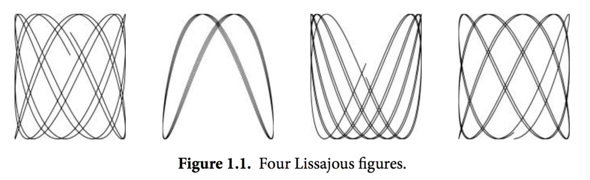
译注：要看这个程序的结果，需要将标准输出重定向到一个GIF图像文件（使用 ./lissajous > output.gif 命令）。下面是GIF图像动画效果：
这段代码里我们用了一些新的结构，包括const声明，struct结构体类型，复合声明。和我们举的其它的例子不太一样，这一个例子包含了浮点数运算。这些概念我们只在这里简单地说明一下，之后的章节会更详细地讲解。
gopl.io/ch1/lissajous
// Lissajous generates GIF animations of random Lissajous figures.
package main
import (
"image"
"image/color"
"image/gif"
"io"
"math"
"math/rand"
"os"
"time"
)
var palette = []color.Color{color.White, color.Black}
const (
whiteIndex = 0 // first color in palette
blackIndex = 1 // next color in palette
)
func main() {
// The sequence of images is deterministic unless we seed
// the pseudo-random number generator using the current time.
// Thanks to Randall McPherson for pointing out the omission.
rand.Seed(time.Now().UTC().UnixNano())
lissajous(os.Stdout)
}
func lissajous(out io.Writer) {
const (
cycles = 5 // number of complete x oscillator revolutions
res = 0.001 // angular resolution
size = 100 // image canvas covers [-size..+size]
nframes = 64 // number of animation frames
delay = 8 // delay between frames in 10ms units
)
freq := rand.Float64() * 3.0 // relative frequency of y oscillator
anim := gif.GIF{LoopCount: nframes}
phase := 0.0 // phase difference
for i := 0; i < nframes; i++ {
rect := image.Rect(0, 0, 2*size+1, 2*size+1)
img := image.NewPaletted(rect, palette)
for t := 0.0; t < cycles*2*math.Pi; t += res {
x := math.Sin(t)
y := math.Sin(t*freq + phase)
img.SetColorIndex(size+int(x*size+0.5), size+int(y*size+0.5),
blackIndex)
}
phase += 0.1
anim.Delay = append(anim.Delay, delay)
anim.Image = append(anim.Image, img)
}
gif.EncodeAll(out, &anim) // NOTE: ignoring encoding errors
}
当我们import了一个包路径包含有多个单词的package时，比如image/color（image和color两个单词），通常我们只需要用最后那个单词表示这个包就可以。所以当我们写color.White时，这个变量指向的是image/color包里的变量，同理gif.GIF是属于image/gif包里的变量。
这个程序里的常量声明给出了一系列的常量值，常量是指在程序编译后运行时始终都不会变化的值，比如圈数、帧数、延迟值。常量声明和变量声明一般都会出现在包级别，所以这些常量在整个包中都是可以共享的，或者你也可以把常量声明定义在函数体内部，那么这种常量就只能在函数体内用。目前常量声明的值必须是一个数字值、字符串或者一个固定的boolean值。
[]color.Color{...}和gif.GIF{...}这两个表达式就是我们说的复合声明（4.2和4.4.1节有说明）。这是实例化Go语言里的复合类型的一种写法。这里的前者生成的是一个slice切片，后者生成的是一个struct结构体。
gif.GIF是一个struct类型（参考4.4节）。struct是一组值或者叫字段的集合，不同的类型集合在一个struct可以让我们以一个统一的单元进行处理。anim是一个gif.GIF类型的struct变量。这种写法会生成一个struct变量，并且其内部变量LoopCount字段会被设置为nframes；而其它的字段会被设置为各自类型默认的零值。struct内部的变量可以以一个点（.）来进行访问，就像在最后两个赋值语句中显式地更新了anim这个struct的Delay和Image字段。
lissajous函数内部有两层嵌套的for循环。外层循环会循环64次，每一次都会生成一个单独的动画帧。它生成了一个包含两种颜色的201*201大小的图片，白色和黑色。所有像素点都会被默认设置为其零值（也就是调色板palette里的第0个值），这里我们设置的是白色。每次外层循环都会生成一张新图片，并将一些像素设置为黑色。其结果会append到之前结果之后。这里我们用到了append(参考4.2.1)内置函数，将结果append到anim中的帧列表末尾，并设置一个默认的80ms的延迟值。循环结束后所有的延迟值被编码进了GIF图片中，并将结果写入到输出流。out这个变量是io.Writer类型，这个类型支持把输出结果写到很多目标，很快我们就可以看到例子。
内层循环设置两个偏振值。x轴偏振使用sin函数。y轴偏振也是正弦波，但其相对x轴的偏振是一个0-3的随机值，初始偏振值是一个零值，随着动画的每一帧逐渐增加。循环会一直跑到x轴完成五次完整的循环。每一步它都会调用SetColorIndex来为(x,y)点来染黑色。
main函数调用lissajous函数，用它来向标准输出流打印信息，所以下面这个命令会像图1.1中产生一个GIF动画。
$ go build gopl.io/ch1/lissajous
$ ./lissajous >out.gif
练习 1.5： 修改前面的Lissajous程序里的调色板，由黑色改为绿色。我们可以用color.RGBA{0xRR, 0xGG, 0xBB, 0xff}来得到#RRGGBB这个色值，三个十六进制的字符串分别代表红、绿、蓝像素。
练习 1.6： 修改Lissajous程序，修改其调色板来生成更丰富的颜色，然后修改SetColorIndex的第三个参数，看看显示结果吧。
1.5. 获取URL
对于很多现代应用来说，访问互联网上的信息和访问本地文件系统一样重要。Go语言在net这个强大package的帮助下提供了一系列的package来做这件事情，使用这些包可以更简单地用网络收发信息，还可以建立更底层的网络连接，编写服务器程序。在这些情景下，Go语言原生的并发特性（在第八章中会介绍）显得尤其好用。
为了最简单地展示基于HTTP获取信息的方式，下面给出一个示例程序fetch，这个程序将获取对应的url，并将其源文本打印出来；这个例子的灵感来源于curl工具（译注：unix下的一个用来发http请求的工具，具体可以man curl）。当然，curl提供的功能更为复杂丰富，这里只编写最简单的样例。这个样例之后还会多次被用到。
gopl.io/ch1/fetch
// Fetch prints the content found at a URL.
package main
import (
"fmt"
"io/ioutil"
"net/http"
"os"
)
func main() {
for _, url := range os.Args[1:] {
resp, err := http.Get(url)
if err != nil {
fmt.Fprintf(os.Stderr, "fetch: %v\n", err)
os.Exit(1)
}
b, err := ioutil.ReadAll(resp.Body)
resp.Body.Close()
if err != nil {
fmt.Fprintf(os.Stderr, "fetch: reading %s: %v\n", url, err)
os.Exit(1)
}
fmt.Printf("%s", b)
}
}
这个程序从两个package中导入了函数，net/http和io/ioutil包，http.Get函数是创建HTTP请求的函数，如果获取过程没有出错，那么会在resp这个结构体中得到访问的请求结果。resp的Body字段包括一个可读的服务器响应流。ioutil.ReadAll函数从response中读取到全部内容；将其结果保存在变量b中。resp.Body.Close关闭resp的Body流，防止资源泄露，Printf函数会将结果b写出到标准输出流中。
$ go build gopl.io/ch1/fetch
$ ./fetch http://gopl.io
<html>
<head>
<title>The Go Programming Language</title>title>
...
HTTP请求如果失败了的话，会得到下面这样的结果：
$ ./fetch http://bad.gopl.io
fetch: Get http://bad.gopl.io: dial tcp: lookup bad.gopl.io: no such host
译注：在大天朝的网络环境下很容易重现这种错误，下面是Windows下运行得到的错误信息：
$ go run main.go http://gopl.io
fetch: Get http://gopl.io: dial tcp: lookup gopl.io: getaddrinfow: No such host is known.
无论哪种失败原因，我们的程序都用了os.Exit函数来终止进程，并且返回一个status错误码，其值为1。
练习 1.7： 函数调用io.Copy(dst, src)会从src中读取内容，并将读到的结果写入到dst中，使用这个函数替代掉例子中的ioutil.ReadAll来拷贝响应结构体到os.Stdout，避免申请一个缓冲区（例子中的b）来存储。记得处理io.Copy返回结果中的错误。
练习 1.8： 修改fetch这个范例，如果输入的url参数没有 http:// 前缀的话，为这个url加上该前缀。你可能会用到strings.HasPrefix这个函数。
练习 1.9： 修改fetch打印出HTTP协议的状态码，可以从resp.Status变量得到该状态码。
1.6. 并发获取多个URL
Go语言最有意思并且最新奇的特性就是对并发编程的支持。并发编程是一个大话题，在第八章和第九章中会专门讲到。这里我们只浅尝辄止地来体验一下Go语言里的goroutine和channel。
下面的例子fetchall，和前面小节的fetch程序所要做的工作基本一致，fetchall的特别之处在于它会同时去获取所有的URL，所以这个程序的总执行时间不会超过执行时间最长的那一个任务，前面的fetch程序执行时间则是所有任务执行时间之和。fetchall程序只会打印获取的内容大小和经过的时间，不会像之前那样打印获取的内容。
gopl.io/ch1/fetchall
// Fetchall fetches URLs in parallel and reports their times and sizes.
package main
import (
"fmt"
"io"
"io/ioutil"
"net/http"
"os"
"time"
)
func main() {
start := time.Now()
ch := make(chan string)
for _, url := range os.Args[1:] {
go fetch(url, ch) // start a goroutine
}
for range os.Args[1:] {
fmt.Println(<-ch) // receive from channel ch
}
fmt.Printf("%.2fs elapsed\n", time.Since(start).Seconds())
}
func fetch(url string, ch chan<- string) {
start := time.Now()
resp, err := http.Get(url)
if err != nil {
ch <- fmt.Sprint(err) // send to channel ch
return
}
nbytes, err := io.Copy(ioutil.Discard, resp.Body)
resp.Body.Close() // don't leak resources
if err != nil {
ch <- fmt.Sprintf("while reading %s: %v", url, err)
return
}
secs := time.Since(start).Seconds()
ch <- fmt.Sprintf("%.2fs %7d %s", secs, nbytes, url)
}
下面使用fetchall来请求几个地址：
$ go build gopl.io/ch1/fetchall
$ ./fetchall https://golang.org http://gopl.io https://godoc.org
0.14s 6852 https://godoc.org
0.16s 7261 https://golang.org
0.48s 2475 http://gopl.io
0.48s elapsed
goroutine是一种函数的并发执行方式，而channel是用来在goroutine之间进行参数传递。main函数本身也运行在一个goroutine中，而go function则表示创建一个新的goroutine，并在这个新的goroutine中执行这个函数。
main函数中用make函数创建了一个传递string类型参数的channel，对每一个命令行参数，我们都用go这个关键字来创建一个goroutine，并且让函数在这个goroutine异步执行http.Get方法。这个程序里的io.Copy会把响应的Body内容拷贝到ioutil.Discard输出流中（译注：可以把这个变量看作一个垃圾桶，可以向里面写一些不需要的数据），因为我们需要这个方法返回的字节数，但是又不想要其内容。每当请求返回内容时，fetch函数都会往ch这个channel里写入一个字符串，由main函数里的第二个for循环来处理并打印channel里的这个字符串。
当一个goroutine尝试在一个channel上做send或者receive操作时，这个goroutine会阻塞在调用处，直到另一个goroutine从这个channel里接收或者写入值，这样两个goroutine才会继续执行channel操作之后的逻辑。在这个例子中，每一个fetch函数在执行时都会往channel里发送一个值（ch <- expression），主函数负责接收这些值（<-ch）。这个程序中我们用main函数来完整地处理/接收所有fetch函数传回的字符串，可以避免因为有两个goroutine同时完成而使得其输出交错在一起的危险。
练习 1.10： 找一个数据量比较大的网站，用本小节中的程序调研网站的缓存策略，对每个URL执行两遍请求，查看两次时间是否有较大的差别，并且每次获取到的响应内容是否一致，修改本节中的程序，将响应结果输出到文件，以便于进行对比。
练习 1.11： 在fetchall中尝试使用长一些的参数列表，比如使用在alexa.com的上百万网站里排名靠前的。如果一个网站没有回应，程序将采取怎样的行为？（Section8.9 描述了在这种情况下的应对机制）。
1.7. Web服务
Go语言的内置库使得写一个类似fetch的web服务器变得异常地简单。在本节中，我们会展示一个微型服务器，这个服务器的功能是返回当前用户正在访问的URL。比如用户访问的是 http://localhost:8000/hello ，那么响应是URL.Path = "hello"。
gopl.io/ch1/server1
// Server1 is a minimal "echo" server.
package main
import (
"fmt"
"log"
"net/http"
)
func main() {
http.HandleFunc("/", handler) // each request calls handler
log.Fatal(http.ListenAndServe("localhost:8000", nil))
}
// handler echoes the Path component of the request URL r.
func handler(w http.ResponseWriter, r *http.Request) {
fmt.Fprintf(w, "URL.Path = %q\n", r.URL.Path)
}
我们只用了八九行代码就实现了一个Web服务程序，这都是多亏了标准库里的方法已经帮我们完成了大量工作。main函数将所有发送到/路径下的请求和handler函数关联起来，/开头的请求其实就是所有发送到当前站点上的请求，服务监听8000端口。发送到这个服务的“请求”是一个http.Request类型的对象，这个对象中包含了请求中的一系列相关字段，其中就包括我们需要的URL。当请求到达服务器时，这个请求会被传给handler函数来处理，这个函数会将/hello这个路径从请求的URL中解析出来，然后把其发送到响应中，这里我们用的是标准输出流的fmt.Fprintf。Web服务会在第7.7节中做更详细的阐述。
让我们在后台运行这个服务程序。如果你的操作系统是Mac OS X或者Linux，那么在运行命令的末尾加上一个&符号，即可让程序简单地跑在后台，windows下可以在另外一个命令行窗口去运行这个程序。
$ go run src/gopl.io/ch1/server1/main.go &
现在可以通过命令行来发送客户端请求了：
$ go build gopl.io/ch1/fetch
$ ./fetch http://localhost:8000
URL.Path = "/"
$ ./fetch http://localhost:8000/help
URL.Path = "/help"
还可以直接在浏览器里访问这个URL，然后得到返回结果，如图1.2：

在这个服务的基础上叠加特性是很容易的。一种比较实用的修改是为访问的url添加某种状态。比如，下面这个版本输出了同样的内容，但是会对请求的次数进行计算；对URL的请求结果会包含各种URL被访问的总次数，直接对/count这个URL的访问要除外。
gopl.io/ch1/server2
// Server2 is a minimal "echo" and counter server.
package main
import (
"fmt"
"log"
"net/http"
"sync"
)
var mu sync.Mutex
var count int
func main() {
http.HandleFunc("/", handler)
http.HandleFunc("/count", counter)
log.Fatal(http.ListenAndServe("localhost:8000", nil))
}
// handler echoes the Path component of the requested URL.
func handler(w http.ResponseWriter, r *http.Request) {
mu.Lock()
count++
mu.Unlock()
fmt.Fprintf(w, "URL.Path = %q\n", r.URL.Path)
}
// counter echoes the number of calls so far.
func counter(w http.ResponseWriter, r *http.Request) {
mu.Lock()
fmt.Fprintf(w, "Count %d\n", count)
mu.Unlock()
}
这个服务器有两个请求处理函数，根据请求的url不同会调用不同的函数：对/count这个url的请求会调用到counter这个函数，其它的url都会调用默认的处理函数。如果你的请求pattern是以/结尾，那么所有以该url为前缀的url都会被这条规则匹配。在这些代码的背后，服务器每一次接收请求处理时都会另起一个goroutine，这样服务器就可以同一时间处理多个请求。然而在并发情况下，假如真的有两个请求同一时刻去更新count，那么这个值可能并不会被正确地增加；这个程序可能会引发一个严重的bug：竞态条件（参见9.1）。为了避免这个问题，我们必须保证每次修改变量的最多只能有一个goroutine，这也就是代码里的mu.Lock()和mu.Unlock()调用将修改count的所有行为包在中间的目的。第九章中我们会进一步讲解共享变量。
下面是一个更为丰富的例子，handler函数会把请求的http头和请求的form数据都打印出来，这样可以使检查和调试这个服务更为方便：
gopl.io/ch1/server3
// handler echoes the HTTP request.
func handler(w http.ResponseWriter, r *http.Request) {
fmt.Fprintf(w, "%s %s %s\n", r.Method, r.URL, r.Proto)
for k, v := range r.Header {
fmt.Fprintf(w, "Header[%q] = %q\n", k, v)
}
fmt.Fprintf(w, "Host = %q\n", r.Host)
fmt.Fprintf(w, "RemoteAddr = %q\n", r.RemoteAddr)
if err := r.ParseForm(); err != nil {
log.Print(err)
}
for k, v := range r.Form {
fmt.Fprintf(w, "Form[%q] = %q\n", k, v)
}
}
我们用http.Request这个struct里的字段来输出下面这样的内容：
GET /?q=query HTTP/1.1
Header["Accept-Encoding"] = ["gzip, deflate, sdch"]
Header["Accept-Language"] = ["en-US,en;q=0.8"]
Header["Connection"] = ["keep-alive"]
Header["Accept"] = ["text/html,application/xhtml+xml,application/xml;..."]
Header["User-Agent"] = ["Mozilla/5.0 (Macintosh; Intel Mac OS X 10_7_5)..."]
Host = "localhost:8000"
RemoteAddr = "127.0.0.1:59911"
Form["q"] = ["query"]
可以看到这里的ParseForm被嵌套在了if语句中。Go语言允许这样的一个简单的语句结果作为局部的变量声明出现在if语句的最前面，这一点对错误处理很有用处。我们还可以像下面这样写（当然看起来就长了一些）：
err := r.ParseForm()
if err != nil {
log.Print(err)
}
用if和ParseForm结合可以让代码更加简单，并且可以限制err这个变量的作用域，这么做是很不错的。我们会在2.7节中讲解作用域。
在这些程序中，我们看到了很多不同的类型被输出到标准输出流中。比如前面的fetch程序，把HTTP的响应数据拷贝到了os.Stdout，lissajous程序里我们输出的是一个文件。fetchall程序则完全忽略到了HTTP的响应Body，只是计算了一下响应Body的大小，这个程序中把响应Body拷贝到了ioutil.Discard。在本节的web服务器程序中则是用fmt.Fprintf直接写到了http.ResponseWriter中。
尽管三种具体的实现流程并不太一样，他们都实现一个共同的接口，即当它们被调用需要一个标准流输出时都可以满足。这个接口叫作io.Writer，在7.1节中会详细讨论。
Go语言的接口机制会在第7章中讲解，为了在这里简单说明接口能做什么，让我们简单地将这里的web服务器和之前写的lissajous函数结合起来，这样GIF动画可以被写到HTTP的客户端，而不是之前的标准输出流。只要在web服务器的代码里加入下面这几行。
handler := func(w http.ResponseWriter, r *http.Request) {
lissajous(w)
}
http.HandleFunc("/", handler)
或者另一种等价形式：
http.HandleFunc("/", func(w http.ResponseWriter, r *http.Request) {
lissajous(w)
})
HandleFunc函数的第二个参数是一个函数的字面值，也就是一个在使用时定义的匿名函数。这些内容我们会在5.6节中讲解。
做完这些修改之后，在浏览器里访问 http://localhost:8000 。每次你载入这个页面都可以看到一个像图1.3那样的动画。

练习 1.12： 修改Lissajour服务，从URL读取变量，比如你可以访问 http://localhost:8000/?cycles=20 这个URL，这样访问可以将程序里的cycles默认的5修改为20。字符串转换为数字可以调用strconv.Atoi函数。你可以在godoc里查看strconv.Atoi的详细说明。
1.8. 本章要点
本章对Go语言做了一些介绍，Go语言很多方面在有限的篇幅中无法覆盖到。本节会把没有讲到的内容也做一些简单的介绍，这样读者在读到完整的内容之前，可以有个简单的印象。
控制流： 在本章我们只介绍了if控制和for，但是没有提到switch多路选择。这里是一个简单的switch的例子：
switch coinflip() {
case "heads":
heads++
case "tails":
tails++
default:
fmt.Println("landed on edge!")
}
在翻转硬币的时候，例子里的coinflip函数返回几种不同的结果，每一个case都会对应一个返回结果，这里需要注意，Go语言并不需要显式地在每一个case后写break，语言默认执行完case后的逻辑语句会自动退出。当然了，如果你想要相邻的几个case都执行同一逻辑的话，需要自己显式地写上一个fallthrough语句来覆盖这种默认行为。不过fallthrough语句在一般的程序中很少用到。
Go语言里的switch还可以不带操作对象（译注：switch不带操作对象时默认用true值代替，然后将每个case的表达式和true值进行比较）；可以直接罗列多种条件，像其它语言里面的多个if else一样，下面是一个例子：
func Signum(x int) int {
switch {
case x > 0:
return +1
default:
return 0
case x < 0:
return -1
}
}
这种形式叫做无tag switch(tagless switch)；这和switch true是等价的。
像for和if控制语句一样，switch也可以紧跟一个简短的变量声明，一个自增表达式、赋值语句，或者一个函数调用（译注：比其它语言丰富）。
break和continue语句会改变控制流。和其它语言中的break和continue一样，break会中断当前的循环，并开始执行循环之后的内容，而continue会跳过当前循环，并开始执行下一次循环。这两个语句除了可以控制for循环，还可以用来控制switch和select语句（之后会讲到），在1.3节中我们看到，continue会跳过内层的循环，如果我们想跳过的是更外层的循环的话，我们可以在相应的位置加上label，这样break和continue就可以根据我们的想法来continue和break任意循环。这看起来甚至有点像goto语句的作用了。当然，一般程序员也不会用到这种操作。这两种行为更多地被用到机器生成的代码中。
命名类型： 类型声明使得我们可以很方便地给一个特殊类型一个名字。因为struct类型声明通常非常地长，所以我们总要给这种struct取一个名字。本章中就有这样一个例子，二维点类型：
type Point struct {
X, Y int
}
var p Point
类型声明和命名类型会在第二章中介绍。
指针： Go语言提供了指针。指针是一种直接存储了变量的内存地址的数据类型。在其它语言中，比如C语言，指针操作是完全不受约束的。在另外一些语言中，指针一般被处理为“引用”，除了到处传递这些指针之外，并不能对这些指针做太多事情。Go语言在这两种范围中取了一种平衡。指针是可见的内存地址，&操作符可以返回一个变量的内存地址，并且*操作符可以获取指针指向的变量内容，但是在Go语言里没有指针运算，也就是不能像c语言里可以对指针进行加或减操作。我们会在2.3.2中进行详细介绍。
方法和接口： 方法是和命名类型关联的一类函数。Go语言里比较特殊的是方法可以被关联到任意一种命名类型。在第六章我们会详细地讲方法。接口是一种抽象类型，这种类型可以让我们以同样的方式来处理不同的固有类型，不用关心它们的具体实现，而只需要关注它们提供的方法。第七章中会详细说明这些内容。
包（packages）： Go语言提供了一些很好用的package，并且这些package是可以扩展的。Go语言社区已经创造并且分享了很多很多。所以Go语言编程大多数情况下就是用已有的package来写我们自己的代码。通过这本书，我们会讲解一些重要的标准库内的package，但是还是有很多限于篇幅没有去说明，因为我们没法在这样的厚度的书里去做一部代码大全。
在你开始写一个新程序之前，最好先去检查一下是不是已经有了现成的库可以帮助你更高效地完成这件事情。你可以在 https://golang.org/pkg 和 https://godoc.org 中找到标准库和社区写的package。godoc这个工具可以让你直接在本地命令行阅读标准库的文档。比如下面这个例子。
$ go doc http.ListenAndServe
package http // import "net/http"
func ListenAndServe(addr string, handler Handler) error
ListenAndServe listens on the TCP network address addr and then
calls Serve with handler to handle requests on incoming connections.
...
注释： 我们之前已经提到过了在源文件的开头写的注释是这个源文件的文档。在每一个函数之前写一个说明函数行为的注释也是一个好习惯。这些惯例很重要，因为这些内容会被像godoc这样的工具检测到，并且在执行命令时显示这些注释。具体可以参考10.7.4。
多行注释可以用 /* ... */ 来包裹，和其它大多数语言一样。在文件一开头的注释一般都是这种形式，或者一大段的解释性的注释文字也会被这符号包住，来避免每一行都需要加//。在注释中//和/*是没什么意义的，所以不要在注释中再嵌入注释。
第2章 程序结构
Go语言和其他编程语言一样，一个大的程序是由很多小的基础构件组成的。变量保存值，简单的加法和减法运算被组合成较复杂的表达式。基础类型被聚合为数组或结构体等更复杂的数据结构。然后使用if和for之类的控制语句来组织和控制表达式的执行流程。然后多个语句被组织到一个个函数中，以便代码的隔离和复用。函数以源文件和包的方式被组织。
我们已经在前面章节的例子中看到了很多例子。在本章中，我们将深入讨论Go程序基础结构方面的一些细节。每个示例程序都是刻意写的简单，这样我们可以减少复杂的算法或数据结构等不相关的问题带来的干扰，从而可以专注于Go语言本身的学习。
2.1. 命名
Go语言中的函数名、变量名、常量名、类型名、语句标号和包名等所有的命名，都遵循一个简单的命名规则：一个名字必须以一个字母（Unicode字母）或下划线开头，后面可以跟任意数量的字母、数字或下划线。大写字母和小写字母是不同的：heapSort和Heapsort是两个不同的名字。
Go语言中类似if和switch的关键字有25个；关键字不能用于自定义名字，只能在特定语法结构中使用。
break default func interface select
case defer go map struct
chan else goto package switch
const fallthrough if range type
continue for import return var
此外，还有大约30多个预定义的名字，比如int和true等，主要对应内建的常量、类型和函数。
内建常量: true false iota nil
内建类型: int int8 int16 int32 int64
uint uint8 uint16 uint32 uint64 uintptr
float32 float64 complex128 complex64
bool byte rune string error
内建函数: make len cap new append copy close delete
complex real imag
panic recover
这些内部预先定义的名字并不是关键字，你可以在定义中重新使用它们。在一些特殊的场景中重新定义它们也是有意义的，但是也要注意避免过度而引起语义混乱。
如果一个名字是在函数内部定义，那么它就只在函数内部有效。如果是在函数外部定义，那么将在当前包的所有文件中都可以访问。名字的开头字母的大小写决定了名字在包外的可见性。如果一个名字是大写字母开头的（译注：必须是在函数外部定义的包级名字；包级函数名本身也是包级名字），那么它将是导出的，也就是说可以被外部的包访问，例如fmt包的Printf函数就是导出的，可以在fmt包外部访问。包本身的名字一般总是用小写字母。
名字的长度没有逻辑限制，但是Go语言的风格是尽量使用短小的名字，对于局部变量尤其是这样；你会经常看到i之类的短名字，而不是冗长的theLoopIndex命名。通常来说，如果一个名字的作用域比较大，生命周期也比较长，那么用长的名字将会更有意义。
在习惯上，Go语言程序员推荐使用 驼峰式 命名，当名字由几个单词组成时优先使用大小写分隔，而不是优先用下划线分隔。因此，在标准库有QuoteRuneToASCII和parseRequestLine这样的函数命名，但是一般不会用quote_rune_to_ASCII和parse_request_line这样的命名。而像ASCII和HTML这样的缩略词则避免使用大小写混合的写法，它们可能被称为htmlEscape、HTMLEscape或escapeHTML，但不会是escapeHtml。
2.2. 声明
声明语句定义了程序的各种实体对象以及部分或全部的属性。Go语言主要有四种类型的声明语句：var、const、type和func，分别对应变量、常量、类型和函数实体对象的声明。这一章我们重点讨论变量和类型的声明，第三章将讨论常量的声明，第五章将讨论函数的声明。
一个Go语言编写的程序对应一个或多个以.go为文件后缀名的源文件。每个源文件中以包的声明语句开始，说明该源文件是属于哪个包。包声明语句之后是import语句导入依赖的其它包，然后是包一级的类型、变量、常量、函数的声明语句，包一级的各种类型的声明语句的顺序无关紧要（译注：函数内部的名字则必须先声明之后才能使用）。例如，下面的例子中声明了一个常量、一个函数和两个变量：
gopl.io/ch2/boiling
// Boiling prints the boiling point of water.
package main
import "fmt"
const boilingF = 212.0
func main() {
var f = boilingF
var c = (f - 32) * 5 / 9
fmt.Printf("boiling point = %g°F or %g°C\n", f, c)
// Output:
// boiling point = 212°F or 100°C
}
其中常量boilingF是在包一级范围声明语句声明的，然后f和c两个变量是在main函数内部声明的声明语句声明的。在包一级声明语句声明的名字可在整个包对应的每个源文件中访问，而不是仅仅在其声明语句所在的源文件中访问。相比之下，局部声明的名字就只能在函数内部很小的范围被访问。
一个函数的声明由一个函数名字、参数列表（由函数的调用者提供参数变量的具体值）、一个可选的返回值列表和包含函数定义的函数体组成。如果函数没有返回值，那么返回值列表是省略的。执行函数从函数的第一个语句开始，依次顺序执行直到遇到return返回语句，如果没有返回语句则是执行到函数末尾，然后返回到函数调用者。
我们已经看到过很多函数声明和函数调用的例子了，在第五章将深入讨论函数的相关细节，这里只简单解释下。下面的fToC函数封装了温度转换的处理逻辑，这样它只需要被定义一次，就可以在多个地方多次被使用。在这个例子中，main函数就调用了两次fToC函数，分别使用在局部定义的两个常量作为调用函数的参数。
gopl.io/ch2/ftoc
// Ftoc prints two Fahrenheit-to-Celsius conversions.
package main
import "fmt"
func main() {
const freezingF, boilingF = 32.0, 212.0
fmt.Printf("%g°F = %g°C\n", freezingF, fToC(freezingF)) // "32°F = 0°C"
fmt.Printf("%g°F = %g°C\n", boilingF, fToC(boilingF)) // "212°F = 100°C"
}
func fToC(f float64) float64 {
return (f - 32) * 5 / 9
}
2.3. 变量
var声明语句可以创建一个特定类型的变量，然后给变量附加一个名字，并且设置变量的初始值。变量声明的一般语法如下：
var 变量名字 类型 = 表达式
其中“类型”或“= 表达式”两个部分可以省略其中的一个。如果省略的是类型信息，那么将根据初始化表达式来推导变量的类型信息。如果初始化表达式被省略，那么将用零值初始化该变量。 数值类型变量对应的零值是0，布尔类型变量对应的零值是false，字符串类型对应的零值是空字符串，接口或引用类型（包括slice、指针、map、chan和函数）变量对应的零值是nil。数组或结构体等聚合类型对应的零值是每个元素或字段都是对应该类型的零值。
零值初始化机制可以确保每个声明的变量总是有一个良好定义的值，因此在Go语言中不存在未初始化的变量。这个特性可以简化很多代码，而且可以在没有增加额外工作的前提下确保边界条件下的合理行为。例如：
var s string
fmt.Println(s) // ""
这段代码将打印一个空字符串，而不是导致错误或产生不可预知的行为。Go语言程序员应该让一些聚合类型的零值也具有意义，这样可以保证不管任何类型的变量总是有一个合理有效的零值状态。
也可以在一个声明语句中同时声明一组变量，或用一组初始化表达式声明并初始化一组变量。如果省略每个变量的类型，将可以声明多个类型不同的变量（类型由初始化表达式推导）：
var i, j, k int // int, int, int
var b, f, s = true, 2.3, "four" // bool, float64, string
初始化表达式可以是字面量或任意的表达式。在包级别声明的变量会在main入口函数执行前完成初始化（§2.6.2），局部变量将在声明语句被执行到的时候完成初始化。
一组变量也可以通过调用一个函数，由函数返回的多个返回值初始化：
var f, err = os.Open(name) // os.Open returns a file and an error
2.3.1. 简短变量声明
在函数内部，有一种称为简短变量声明语句的形式可用于声明和初始化局部变量。它以“名字 := 表达式”形式声明变量，变量的类型根据表达式来自动推导。下面是lissajous函数中的三个简短变量声明语句（§1.4）：
anim := gif.GIF{LoopCount: nframes}
freq := rand.Float64() * 3.0
t := 0.0
因为简洁和灵活的特点，简短变量声明被广泛用于大部分的局部变量的声明和初始化。var形式的声明语句往往是用于需要显式指定变量类型的地方，或者因为变量稍后会被重新赋值而初始值无关紧要的地方。
i := 100 // an int
var boiling float64 = 100 // a float64
var names []string
var err error
var p Point
和var形式声明语句一样，简短变量声明语句也可以用来声明和初始化一组变量：
i, j := 0, 1
但是这种同时声明多个变量的方式应该限制只在可以提高代码可读性的地方使用，比如for语句的循环的初始化语句部分。
请记住“:=”是一个变量声明语句，而“=”是一个变量赋值操作。也不要混淆多个变量的声明和元组的多重赋值（§2.4.1），后者是将右边各个表达式的值赋值给左边对应位置的各个变量：
i, j = j, i // 交换 i 和 j 的值
和普通var形式的变量声明语句一样，简短变量声明语句也可以用函数的返回值来声明和初始化变量，像下面的os.Open函数调用将返回两个值：
f, err := os.Open(name)
if err != nil {
return err
}
// ...use f...
f.Close()
这里有一个比较微妙的地方：简短变量声明左边的变量可能并不是全部都是刚刚声明的。如果有一些已经在相同的词法域声明过了（§2.7），那么简短变量声明语句对这些已经声明过的变量就只有赋值行为了。
在下面的代码中，第一个语句声明了in和err两个变量。在第二个语句只声明了out一个变量，然后对已经声明的err进行了赋值操作。
in, err := os.Open(infile)
// ...
out, err := os.Create(outfile)
简短变量声明语句中必须至少要声明一个新的变量，下面的代码将不能编译通过：
f, err := os.Open(infile)
// ...
f, err := os.Create(outfile) // compile error: no new variables
解决的方法是第二个简短变量声明语句改用普通的多重赋值语句。
简短变量声明语句只有对已经在同级词法域声明过的变量才和赋值操作语句等价，如果变量是在外部词法域声明的，那么简短变量声明语句将会在当前词法域重新声明一个新的变量。我们在本章后面将会看到类似的例子。
2.3.2. 指针
一个变量对应一个保存了变量对应类型值的内存空间。普通变量在声明语句创建时被绑定到一个变量名，比如叫x的变量，但是还有很多变量始终以表达式方式引入，例如x[i]或x.f变量。所有这些表达式一般都是读取一个变量的值，除非它们是出现在赋值语句的左边，这种时候是给对应变量赋予一个新的值。
一个指针的值是另一个变量的地址。一个指针对应变量在内存中的存储位置。并不是每一个值都会有一个内存地址，但是对于每一个变量必然有对应的内存地址。通过指针，我们可以直接读或更新对应变量的值，而不需要知道该变量的名字（如果变量有名字的话）。
如果用“var x int”声明语句声明一个x变量，那么&x表达式（取x变量的内存地址）将产生一个指向该整数变量的指针，指针对应的数据类型是*int，指针被称之为“指向int类型的指针”。如果指针名字为p，那么可以说“p指针指向变量x”，或者说“p指针保存了x变量的内存地址”。同时*p表达式对应p指针指向的变量的值。一般*p表达式读取指针指向的变量的值，这里为int类型的值，同时因为*p对应一个变量，所以该表达式也可以出现在赋值语句的左边，表示更新指针所指向的变量的值。
x := 1
p := &x // p, of type *int, points to x
fmt.Println(*p) // "1"
*p = 2 // equivalent to x = 2
fmt.Println(x) // "2"
对于聚合类型每个成员——比如结构体的每个字段、或者是数组的每个元素——也都是对应一个变量，因此可以被取地址。
变量有时候被称为可寻址的值。即使变量由表达式临时生成，那么表达式也必须能接受&取地址操作。
任何类型的指针的零值都是nil。如果p指向某个有效变量，那么p != nil测试为真。指针之间也是可以进行相等测试的，只有当它们指向同一个变量或全部是nil时才相等。
var x, y int
fmt.Println(&x == &x, &x == &y, &x == nil) // "true false false"
在Go语言中，返回函数中局部变量的地址也是安全的。例如下面的代码，调用f函数时创建局部变量v，在局部变量地址被返回之后依然有效，因为指针p依然引用这个变量。
var p = f()
func f() *int {
v := 1
return &v
}
每次调用f函数都将返回不同的结果：
fmt.Println(f() == f()) // "false"
因为指针包含了一个变量的地址，因此如果将指针作为参数调用函数，那将可以在函数中通过该指针来更新变量的值。例如下面这个例子就是通过指针来更新变量的值，然后返回更新后的值，可用在一个表达式中（译注：这是对C语言中++v操作的模拟，这里只是为了说明指针的用法，incr函数模拟的做法并不推荐）：
func incr(p *int) int {
*p++ // 非常重要：只是增加p指向的变量的值，并不改变p指针！！！
return *p
}
v := 1
incr(&v) // side effect: v is now 2
fmt.Println(incr(&v)) // "3" (and v is 3)
每次我们对一个变量取地址，或者复制指针，我们都是为原变量创建了新的别名。例如，*p就是变量v的别名。指针特别有价值的地方在于我们可以不用名字而访问一个变量，但是这是一把双刃剑：要找到一个变量的所有访问者并不容易，我们必须知道变量全部的别名（译注：这是Go语言的垃圾回收器所做的工作）。不仅仅是指针会创建别名，很多其他引用类型也会创建别名，例如slice、map和chan，甚至结构体、数组和接口都会创建所引用变量的别名。
指针是实现标准库中flag包的关键技术，它使用命令行参数来设置对应变量的值，而这些对应命令行标志参数的变量可能会零散分布在整个程序中。为了说明这一点，在早些的echo版本中，就包含了两个可选的命令行参数：-n用于忽略行尾的换行符，-s sep用于指定分隔字符（默认是空格）。下面这是第四个版本，对应包路径为gopl.io/ch2/echo4。
gopl.io/ch2/echo4
// Echo4 prints its command-line arguments.
package main
import (
"flag"
"fmt"
"strings"
)
var n = flag.Bool("n", false, "omit trailing newline")
var sep = flag.String("s", " ", "separator")
func main() {
flag.Parse()
fmt.Print(strings.Join(flag.Args(), *sep))
if !*n {
fmt.Println()
}
}
调用flag.Bool函数会创建一个新的对应布尔型标志参数的变量。它有三个属性：第一个是命令行标志参数的名字“n”，然后是该标志参数的默认值（这里是false），最后是该标志参数对应的描述信息。如果用户在命令行输入了一个无效的标志参数，或者输入-h或-help参数，那么将打印所有标志参数的名字、默认值和描述信息。类似的，调用flag.String函数将创建一个对应字符串类型的标志参数变量，同样包含命令行标志参数对应的参数名、默认值、和描述信息。程序中的sep和n变量分别是指向对应命令行标志参数变量的指针，因此必须用*sep和*n形式的指针语法间接引用它们。
当程序运行时，必须在使用标志参数对应的变量之前先调用flag.Parse函数，用于更新每个标志参数对应变量的值（之前是默认值）。对于非标志参数的普通命令行参数可以通过调用flag.Args()函数来访问，返回值对应一个字符串类型的slice。如果在flag.Parse函数解析命令行参数时遇到错误，默认将打印相关的提示信息，然后调用os.Exit(2)终止程序。
让我们运行一些echo测试用例：
$ go build gopl.io/ch2/echo4
$ ./echo4 a bc def
a bc def
$ ./echo4 -s / a bc def
a/bc/def
$ ./echo4 -n a bc def
a bc def$
$ ./echo4 -help
Usage of ./echo4:
-n omit trailing newline
-s string
separator (default " ")
2.3.3. new函数
另一个创建变量的方法是调用内建的new函数。表达式new(T)将创建一个T类型的匿名变量，初始化为T类型的零值，然后返回变量地址，返回的指针类型为*T。
p := new(int) // p, *int 类型, 指向匿名的 int 变量
fmt.Println(*p) // "0"
*p = 2 // 设置 int 匿名变量的值为 2
fmt.Println(*p) // "2"
用new创建变量和普通变量声明语句方式创建变量没有什么区别，除了不需要声明一个临时变量的名字外，我们还可以在表达式中使用new(T)。换言之，new函数类似是一种语法糖，而不是一个新的基础概念。
下面的两个newInt函数有着相同的行为：
func newInt() *int {
return new(int)
}
func newInt() *int {
var dummy int
return &dummy
}
每次调用new函数都是返回一个新的变量的地址，因此下面两个地址是不同的：
p := new(int)
q := new(int)
fmt.Println(p == q) // "false"
当然也可能有特殊情况：如果两个类型都是空的，也就是说类型的大小是0，例如struct{}和[0]int，有可能有相同的地址（依赖具体的语言实现）（译注：请谨慎使用大小为0的类型，因为如果类型的大小为0的话，可能导致Go语言的自动垃圾回收器有不同的行为，具体请查看runtime.SetFinalizer函数相关文档）。
new函数使用通常相对比较少，因为对于结构体来说，直接用字面量语法创建新变量的方法会更灵活（§4.4.1）。
由于new只是一个预定义的函数，它并不是一个关键字，因此我们可以将new名字重新定义为别的类型。例如下面的例子：
func delta(old, new int) int { return new - old }
由于new被定义为int类型的变量名，因此在delta函数内部是无法使用内置的new函数的。
2.3.4. 变量的生命周期
变量的生命周期指的是在程序运行期间变量有效存在的时间段。对于在包一级声明的变量来说，它们的生命周期和整个程序的运行周期是一致的。而相比之下，局部变量的生命周期则是动态的：每次从创建一个新变量的声明语句开始，直到该变量不再被引用为止，然后变量的存储空间可能被回收。函数的参数变量和返回值变量都是局部变量。它们在函数每次被调用的时候创建。
例如，下面是从1.4节的Lissajous程序摘录的代码片段：
for t := 0.0; t < cycles*2*math.Pi; t += res {
x := math.Sin(t)
y := math.Sin(t*freq + phase)
img.SetColorIndex(size+int(x*size+0.5), size+int(y*size+0.5),
blackIndex)
}
译注：函数的右小括弧也可以另起一行缩进，同时为了防止编译器在行尾自动插入分号而导致的编译错误，可以在末尾的参数变量后面显式插入逗号。像下面这样：
for t := 0.0; t < cycles*2*math.Pi; t += res {
x := math.Sin(t)
y := math.Sin(t*freq + phase)
img.SetColorIndex(
size+int(x*size+0.5), size+int(y*size+0.5),
blackIndex, // 最后插入的逗号不会导致编译错误，这是Go编译器的一个特性
) // 小括弧另起一行缩进，和大括弧的风格保存一致
}
在每次循环的开始会创建临时变量t，然后在每次循环迭代中创建临时变量x和y。
那么Go语言的自动垃圾收集器是如何知道一个变量是何时可以被回收的呢？这里我们可以避开完整的技术细节，基本的实现思路是，从每个包级的变量和每个当前运行函数的每一个局部变量开始，通过指针或引用的访问路径遍历，是否可以找到该变量。如果不存在这样的访问路径，那么说明该变量是不可达的，也就是说它是否存在并不会影响程序后续的计算结果。
因为一个变量的有效周期只取决于是否可达，因此一个循环迭代内部的局部变量的生命周期可能超出其局部作用域。同时，局部变量可能在函数返回之后依然存在。
编译器会自动选择在栈上还是在堆上分配局部变量的存储空间，但可能令人惊讶的是，这个选择并不是由用var还是new声明变量的方式决定的。
var global *int
func f() {
var x int
x = 1
global = &x
}
func g() {
y := new(int)
*y = 1
}
f函数里的x变量必须在堆上分配，因为它在函数退出后依然可以通过包一级的global变量找到，虽然它是在函数内部定义的；用Go语言的术语说，这个x局部变量从函数f中逃逸了。相反，当g函数返回时，变量*y将是不可达的，也就是说可以马上被回收的。因此，*y并没有从函数g中逃逸，编译器可以选择在栈上分配*y的存储空间（译注：也可以选择在堆上分配，然后由Go语言的GC回收这个变量的内存空间），虽然这里用的是new方式。其实在任何时候，你并不需为了编写正确的代码而要考虑变量的逃逸行为，要记住的是，逃逸的变量需要额外分配内存，同时对性能的优化可能会产生细微的影响。
Go语言的自动垃圾收集器对编写正确的代码是一个巨大的帮助，但也并不是说你完全不用考虑内存了。你虽然不需要显式地分配和释放内存，但是要编写高效的程序你依然需要了解变量的生命周期。例如，如果将指向短生命周期对象的指针保存到具有长生命周期的对象中，特别是保存到全局变量时，会阻止对短生命周期对象的垃圾回收（从而可能影响程序的性能）。
2.4. 赋值
使用赋值语句可以更新一个变量的值，最简单的赋值语句是将要被赋值的变量放在=的左边，新值的表达式放在=的右边。
x = 1 // 命名变量的赋值
*p = true // 通过指针间接赋值
person.name = "bob" // 结构体字段赋值
count[x] = count[x] * scale // 数组、slice或map的元素赋值
特定的二元算术运算符和赋值语句的复合操作有一个简洁形式，例如上面最后的语句可以重写为：
count[x] *= scale
这样可以省去对变量表达式的重复计算。
数值变量也可以支持++递增和--递减语句（译注：自增和自减是语句，而不是表达式，因此x = i++之类的表达式是错误的）：
v := 1
v++ // 等价方式 v = v + 1；v 变成 2
v-- // 等价方式 v = v - 1；v 变成 1
2.4.1. 元组赋值
元组赋值是另一种形式的赋值语句，它允许同时更新多个变量的值。在赋值之前，赋值语句右边的所有表达式将会先进行求值，然后再统一更新左边对应变量的值。这对于处理有些同时出现在元组赋值语句左右两边的变量很有帮助，例如我们可以这样交换两个变量的值：
x, y = y, x
a[i], a[j] = a[j], a[i]
或者是计算两个整数值的的最大公约数（GCD）（译注：GCD不是那个敏感字，而是greatest common divisor的缩写，欧几里德的GCD是最早的非平凡算法）：
func gcd(x, y int) int {
for y != 0 {
x, y = y, x%y
}
return x
}
或者是计算斐波纳契数列（Fibonacci）的第N个数：
func fib(n int) int {
x, y := 0, 1
for i := 0; i < n; i++ {
x, y = y, x+y
}
return x
}
元组赋值也可以使一系列琐碎赋值更加紧凑（译注: 特别是在for循环的初始化部分），
i, j, k = 2, 3, 5
但如果表达式太复杂的话，应该尽量避免过度使用元组赋值；因为每个变量单独赋值语句的写法可读性会更好。
有些表达式会产生多个值，比如调用一个有多个返回值的函数。当这样一个函数调用出现在元组赋值右边的表达式中时（译注：右边不能再有其它表达式），左边变量的数目必须和右边一致。
f, err = os.Open("foo.txt") // function call returns two values
通常，这类函数会用额外的返回值来表达某种错误类型，例如os.Open是用额外的返回值返回一个error类型的错误，还有一些是用来返回布尔值，通常被称为ok。在稍后我们将看到的三个操作都是类似的用法。如果map查找（§4.3）、类型断言（§7.10）或通道接收（§8.4.2）出现在赋值语句的右边，它们都可能会产生两个结果，有一个额外的布尔结果表示操作是否成功：
v, ok = m[key] // map lookup
v, ok = x.(T) // type assertion
v, ok = <-ch // channel receive
译注：map查找（§4.3）、类型断言（§7.10）或通道接收（§8.4.2）出现在赋值语句的右边时，并不一定是产生两个结果，也可能只产生一个结果。对于只产生一个结果的情形，map查找失败时会返回零值，类型断言失败时会发生运行时panic异常，通道接收失败时会返回零值（阻塞不算是失败）。例如下面的例子：
v = m[key] // map查找，失败时返回零值
v = x.(T) // type断言，失败时panic异常
v = <-ch // 管道接收，失败时返回零值（阻塞不算是失败）
_, ok = m[key] // map返回2个值
_, ok = mm[""], false // map返回1个值
_ = mm[""] // map返回1个值
和变量声明一样，我们可以用下划线空白标识符_来丢弃不需要的值。
_, err = io.Copy(dst, src) // 丢弃字节数
_, ok = x.(T) // 只检测类型，忽略具体值
2.4.2. 可赋值性
赋值语句是显式的赋值形式，但是程序中还有很多地方会发生隐式的赋值行为：函数调用会隐式地将调用参数的值赋值给函数的参数变量，一个返回语句会隐式地将返回操作的值赋值给结果变量，一个复合类型的字面量（§4.2）也会产生赋值行为。例如下面的语句：
medals := []string{"gold", "silver", "bronze"}
隐式地对slice的每个元素进行赋值操作，类似这样写的行为：
medals[0] = "gold"
medals[1] = "silver"
medals[2] = "bronze"
map和chan的元素，虽然不是普通的变量，但是也有类似的隐式赋值行为。
不管是隐式还是显式地赋值，在赋值语句左边的变量和右边最终的求到的值必须有相同的数据类型。更直白地说，只有右边的值对于左边的变量是可赋值的，赋值语句才是允许的。
可赋值性的规则对于不同类型有着不同要求，对每个新类型特殊的地方我们会专门解释。对于目前我们已经讨论过的类型，它的规则是简单的：类型必须完全匹配，nil可以赋值给任何指针或引用类型的变量。常量（§3.6）则有更灵活的赋值规则，因为这样可以避免不必要的显式的类型转换。
对于两个值是否可以用==或!=进行相等比较的能力也和可赋值能力有关系：对于任何类型的值的相等比较，第二个值必须是对第一个值类型对应的变量是可赋值的，反之亦然。和前面一样，我们会对每个新类型比较特殊的地方做专门的解释。
2.5. 类型
变量或表达式的类型定义了对应存储值的属性特征，例如数值在内存的存储大小（或者是元素的bit个数），它们在内部是如何表达的，是否支持一些操作符，以及它们自己关联的方法集等。
在任何程序中都会存在一些变量有着相同的内部结构，但是却表示完全不同的概念。例如，一个int类型的变量可以用来表示一个循环的迭代索引、或者一个时间戳、或者一个文件描述符、或者一个月份；一个float64类型的变量可以用来表示每秒移动几米的速度、或者是不同温度单位下的温度；一个字符串可以用来表示一个密码或者一个颜色的名称。
一个类型声明语句创建了一个新的类型名称，和现有类型具有相同的底层结构。新命名的类型提供了一个方法，用来分隔不同概念的类型，这样即使它们底层类型相同也是不兼容的。
type 类型名字 底层类型
类型声明语句一般出现在包一级，因此如果新创建的类型名字的首字符大写，则在包外部也可以使用。
译注：对于中文汉字，Unicode标志都作为小写字母处理，因此中文的命名默认不能导出；不过国内的用户针对该问题提出了不同的看法，根据RobPike的回复，在Go2中有可能会将中日韩等字符当作大写字母处理。下面是RobPik在 Issue763 的回复：
A solution that's been kicking around for a while:
For Go 2 (can't do it before then): Change the definition to “lower case letters and _ are package-local; all else is exported”. Then with non-cased languages, such as Japanese, we can write 日本语 for an exported name and _日本语 for a local name. This rule has no effect, relative to the Go 1 rule, with cased languages. They behave exactly the same.
为了说明类型声明，我们将不同温度单位分别定义为不同的类型：
gopl.io/ch2/tempconv0
// Package tempconv performs Celsius and Fahrenheit temperature computations.
package tempconv
import "fmt"
type Celsius float64 // 摄氏温度
type Fahrenheit float64 // 华氏温度
const (
AbsoluteZeroC Celsius = -273.15 // 绝对零度
FreezingC Celsius = 0 // 结冰点温度
BoilingC Celsius = 100 // 沸水温度
)
func CToF(c Celsius) Fahrenheit { return Fahrenheit(c*9/5 + 32) }
func FToC(f Fahrenheit) Celsius { return Celsius((f - 32) * 5 / 9) }
我们在这个包声明了两种类型：Celsius和Fahrenheit分别对应不同的温度单位。它们虽然有着相同的底层类型float64，但是它们是不同的数据类型，因此它们不可以被相互比较或混在一个表达式运算。刻意区分类型，可以避免一些像无意中使用不同单位的温度混合计算导致的错误；因此需要一个类似Celsius(t)或Fahrenheit(t)形式的显式转型操作才能将float64转为对应的类型。Celsius(t)和Fahrenheit(t)是类型转换操作，它们并不是函数调用。类型转换不会改变值本身，但是会使它们的语义发生变化。另一方面，CToF和FToC两个函数则是对不同温度单位下的温度进行换算，它们会返回不同的值。
对于每一个类型T，都有一个对应的类型转换操作T(x)，用于将x转为T类型（译注：如果T是指针类型，可能会需要用小括弧包装T，比如(*int)(0)）。只有当两个类型的底层基础类型相同时，才允许这种转型操作，或者是两者都是指向相同底层结构的指针类型，这些转换只改变类型而不会影响值本身。如果x是可以赋值给T类型的值，那么x必然也可以被转为T类型，但是一般没有这个必要。
数值类型之间的转型也是允许的，并且在字符串和一些特定类型的slice之间也是可以转换的，在下一章我们会看到这样的例子。这类转换可能改变值的表现。例如，将一个浮点数转为整数将丢弃小数部分，将一个字符串转为[]byte类型的slice将拷贝一个字符串数据的副本。在任何情况下，运行时不会发生转换失败的错误（译注: 错误只会发生在编译阶段）。
底层数据类型决定了内部结构和表达方式，也决定是否可以像底层类型一样对内置运算符的支持。这意味着，Celsius和Fahrenheit类型的算术运算行为和底层的float64类型是一样的，正如我们所期望的那样。
fmt.Printf("%g\n", BoilingC-FreezingC) // "100" °C
boilingF := CToF(BoilingC)
fmt.Printf("%g\n", boilingF-CToF(FreezingC)) // "180" °F
fmt.Printf("%g\n", boilingF-FreezingC) // compile error: type mismatch
比较运算符==和<也可以用来比较一个命名类型的变量和另一个有相同类型的变量，或有着相同底层类型的未命名类型的值之间做比较。但是如果两个值有着不同的类型，则不能直接进行比较：
var c Celsius
var f Fahrenheit
fmt.Println(c == 0) // "true"
fmt.Println(f >= 0) // "true"
fmt.Println(c == f) // compile error: type mismatch
fmt.Println(c == Celsius(f)) // "true"!
注意最后那个语句。尽管看起来像函数调用，但是Celsius(f)是类型转换操作，它并不会改变值，仅仅是改变值的类型而已。测试为真的原因是因为c和f都是零值。
一个命名的类型可以提供书写方便，特别是可以避免一遍又一遍地书写复杂类型（译注：例如用匿名的结构体定义变量）。虽然对于像float64这种简单的底层类型没有简洁很多，但是如果是复杂的类型将会简洁很多，特别是我们即将讨论的结构体类型。
命名类型还可以为该类型的值定义新的行为。这些行为表示为一组关联到该类型的函数集合，我们称为类型的方法集。我们将在第六章中讨论方法的细节，这里只说些简单用法。
下面的声明语句，Celsius类型的参数c出现在了函数名的前面，表示声明的是Celsius类型的一个名叫String的方法，该方法返回该类型对象c带着°C温度单位的字符串：
func (c Celsius) String() string { return fmt.Sprintf("%g°C", c) }
许多类型都会定义一个String方法，因为当使用fmt包的打印方法时，将会优先使用该类型对应的String方法返回的结果打印，我们将在7.1节讲述。
c := FToC(212.0)
fmt.Println(c.String()) // "100°C"
fmt.Printf("%v\n", c) // "100°C"; no need to call String explicitly
fmt.Printf("%s\n", c) // "100°C"
fmt.Println(c) // "100°C"
fmt.Printf("%g\n", c) // "100"; does not call String
fmt.Println(float64(c)) // "100"; does not call String
2.6. 包和文件
Go语言中的包和其他语言的库或模块的概念类似，目的都是为了支持模块化、封装、单独编译和代码重用。一个包的源代码保存在一个或多个以.go为文件后缀名的源文件中，通常一个包所在目录路径的后缀是包的导入路径；例如包gopl.io/ch1/helloworld对应的目录路径是$GOPATH/src/gopl.io/ch1/helloworld。
每个包都对应一个独立的名字空间。例如，在image包中的Decode函数和在unicode/utf16包中的 Decode函数是不同的。要在外部引用该函数，必须显式使用image.Decode或utf16.Decode形式访问。
包还可以让我们通过控制哪些名字是外部可见的来隐藏内部实现信息。在Go语言中，一个简单的规则是：如果一个名字是大写字母开头的，那么该名字是导出的（译注：因为汉字不区分大小写，因此汉字开头的名字是没有导出的）。
为了演示包基本的用法，先假设我们的温度转换软件已经很流行，我们希望到Go语言社区也能使用这个包。我们该如何做呢？
让我们创建一个名为gopl.io/ch2/tempconv的包，这是前面例子的一个改进版本。（这里我们没有按照惯例按顺序对例子进行编号，因此包路径看起来更像一个真实的包）包代码存储在两个源文件中，用来演示如何在一个源文件声明然后在其他的源文件访问；虽然在现实中，这样小的包一般只需要一个文件。
我们把变量的声明、对应的常量，还有方法都放到tempconv.go源文件中：
gopl.io/ch2/tempconv
// Package tempconv performs Celsius and Fahrenheit conversions.
package tempconv
import "fmt"
type Celsius float64
type Fahrenheit float64
const (
AbsoluteZeroC Celsius = -273.15
FreezingC Celsius = 0
BoilingC Celsius = 100
)
func (c Celsius) String() string { return fmt.Sprintf("%g°C", c) }
func (f Fahrenheit) String() string { return fmt.Sprintf("%g°F", f) }
转换函数则放在另一个conv.go源文件中：
package tempconv
// CToF converts a Celsius temperature to Fahrenheit.
func CToF(c Celsius) Fahrenheit { return Fahrenheit(c*9/5 + 32) }
// FToC converts a Fahrenheit temperature to Celsius.
func FToC(f Fahrenheit) Celsius { return Celsius((f - 32) * 5 / 9) }
每个源文件都是以包的声明语句开始，用来指明包的名字。当包被导入的时候，包内的成员将通过类似tempconv.CToF的形式访问。而包级别的名字，例如在一个文件声明的类型和常量，在同一个包的其他源文件也是可以直接访问的，就好像所有代码都在一个文件一样。要注意的是tempconv.go源文件导入了fmt包，但是conv.go源文件并没有，因为这个源文件中的代码并没有用到fmt包。
因为包级别的常量名都是以大写字母开头，它们可以像tempconv.AbsoluteZeroC这样被外部代码访问：
fmt.Printf("Brrrr! %v\n", tempconv.AbsoluteZeroC) // "Brrrr! -273.15°C"
要将摄氏温度转换为华氏温度，需要先用import语句导入gopl.io/ch2/tempconv包，然后就可以使用下面的代码进行转换了：
fmt.Println(tempconv.CToF(tempconv.BoilingC)) // "212°F"
在每个源文件的包声明前紧跟着的注释是包注释（§10.7.4）。通常，包注释的第一句应该先是包的功能概要说明。一个包通常只有一个源文件有包注释（译注：如果有多个包注释，目前的文档工具会根据源文件名的先后顺序将它们链接为一个包注释）。如果包注释很大，通常会放到一个独立的doc.go文件中。
练习 2.1： 向tempconv包添加类型、常量和函数用来处理Kelvin绝对温度的转换，Kelvin 绝对零度是−273.15°C，Kelvin绝对温度1K和摄氏度1°C的单位间隔是一样的。
2.6.1. 导入包
在Go语言程序中，每个包都有一个全局唯一的导入路径。导入语句中类似"gopl.io/ch2/tempconv"的字符串对应包的导入路径。Go语言的规范并没有定义这些字符串的具体含义或包来自哪里，它们是由构建工具来解释的。当使用Go语言自带的go工具箱时（第十章），一个导入路径代表一个目录中的一个或多个Go源文件。
除了包的导入路径，每个包还有一个包名，包名一般是短小的名字（并不要求包名是唯一的），包名在包的声明处指定。按照惯例，一个包的名字和包的导入路径的最后一个字段相同，例如gopl.io/ch2/tempconv包的名字一般是tempconv。
要使用gopl.io/ch2/tempconv包，需要先导入：
gopl.io/ch2/cf
// Cf converts its numeric argument to Celsius and Fahrenheit.
package main
import (
"fmt"
"os"
"strconv"
"gopl.io/ch2/tempconv"
)
func main() {
for _, arg := range os.Args[1:] {
t, err := strconv.ParseFloat(arg, 64)
if err != nil {
fmt.Fprintf(os.Stderr, "cf: %v\n", err)
os.Exit(1)
}
f := tempconv.Fahrenheit(t)
c := tempconv.Celsius(t)
fmt.Printf("%s = %s, %s = %s\n",
f, tempconv.FToC(f), c, tempconv.CToF(c))
}
}
导入语句将导入的包绑定到一个短小的名字，然后通过该短小的名字就可以引用包中导出的全部内容。上面的导入声明将允许我们以tempconv.CToF的形式来访问gopl.io/ch2/tempconv包中的内容。在默认情况下，导入的包绑定到tempconv名字（译注：指包声明语句指定的名字），但是我们也可以绑定到另一个名称，以避免名字冲突（§10.4）。
cf程序将命令行输入的一个温度在Celsius和Fahrenheit温度单位之间转换：
$ go build gopl.io/ch2/cf
$ ./cf 32
32°F = 0°C, 32°C = 89.6°F
$ ./cf 212
212°F = 100°C, 212°C = 413.6°F
$ ./cf -40
-40°F = -40°C, -40°C = -40°F
如果导入了一个包，但是又没有使用该包将被当作一个编译错误处理。这种强制规则可以有效减少不必要的依赖，虽然在调试期间可能会让人讨厌，因为删除一个类似log.Print("got here!")的打印语句可能导致需要同时删除log包导入声明，否则，编译器将会发出一个错误。在这种情况下，我们需要将不必要的导入删除或注释掉。
不过有更好的解决方案，我们可以使用golang.org/x/tools/cmd/goimports导入工具，它可以根据需要自动添加或删除导入的包；许多编辑器都可以集成goimports工具，然后在保存文件的时候自动运行。类似的还有gofmt工具，可以用来格式化Go源文件。
练习 2.2： 写一个通用的单位转换程序，用类似cf程序的方式从命令行读取参数，如果缺省的话则是从标准输入读取参数，然后做类似Celsius和Fahrenheit的单位转换，长度单位可以对应英尺和米，重量单位可以对应磅和公斤等。
2.6.2. 包的初始化
包的初始化首先是解决包级变量的依赖顺序，然后按照包级变量声明出现的顺序依次初始化：
var a = b + c // a 第三个初始化, 为 3
var b = f() // b 第二个初始化, 为 2, 通过调用 f (依赖c)
var c = 1 // c 第一个初始化, 为 1
func f() int { return c + 1 }
如果包中含有多个.go源文件，它们将按照发给编译器的顺序进行初始化，Go语言的构建工具首先会将.go文件根据文件名排序，然后依次调用编译器编译。
对于在包级别声明的变量，如果有初始化表达式则用表达式初始化，还有一些没有初始化表达式的，例如某些表格数据初始化并不是一个简单的赋值过程。在这种情况下，我们可以用一个特殊的init初始化函数来简化初始化工作。每个文件都可以包含多个init初始化函数
func init() { /* ... */ }
这样的init初始化函数除了不能被调用或引用外，其他行为和普通函数类似。在每个文件中的init初始化函数，在程序开始执行时按照它们声明的顺序被自动调用。
每个包在解决依赖的前提下，以导入声明的顺序初始化，每个包只会被初始化一次。因此，如果一个p包导入了q包，那么在p包初始化的时候可以认为q包必然已经初始化过了。初始化工作是自下而上进行的，main包最后被初始化。以这种方式，可以确保在main函数执行之前，所有依赖的包都已经完成初始化工作了。
下面的代码定义了一个PopCount函数，用于返回一个数字中含二进制1bit的个数。它使用init初始化函数来生成辅助表格pc，pc表格用于处理每个8bit宽度的数字含二进制的1bit的bit个数，这样的话在处理64bit宽度的数字时就没有必要循环64次，只需要8次查表就可以了。（这并不是最快的统计1bit数目的算法，但是它可以方便演示init函数的用法，并且演示了如何预生成辅助表格，这是编程中常用的技术）。
gopl.io/ch2/popcount
package popcount
// pc[i] is the population count of i.
var pc [256]byte
func init() {
for i := range pc {
pc[i] = pc[i/2] + byte(i&1)
}
}
// PopCount returns the population count (number of set bits) of x.
func PopCount(x uint64) int {
return int(pc[byte(x>>(0*8))] +
pc[byte(x>>(1*8))] +
pc[byte(x>>(2*8))] +
pc[byte(x>>(3*8))] +
pc[byte(x>>(4*8))] +
pc[byte(x>>(5*8))] +
pc[byte(x>>(6*8))] +
pc[byte(x>>(7*8))])
}
译注：对于pc这类需要复杂处理的初始化，可以通过将初始化逻辑包装为一个匿名函数处理，像下面这样：
// pc[i] is the population count of i.
var pc [256]byte = func() (pc [256]byte) {
for i := range pc {
pc[i] = pc[i/2] + byte(i&1)
}
return
}()
要注意的是在init函数中，range循环只使用了索引，省略了没有用到的值部分。循环也可以这样写：
for i, _ := range pc {
我们在下一节和10.5节还将看到其它使用init函数的地方。
练习 2.3： 重写PopCount函数，用一个循环代替单一的表达式。比较两个版本的性能。（11.4节将展示如何系统地比较两个不同实现的性能。）
练习 2.4： 用移位算法重写PopCount函数，每次测试最右边的1bit，然后统计总数。比较和查表算法的性能差异。
练习 2.5： 表达式x&(x-1)用于将x的最低的一个非零的bit位清零。使用这个算法重写PopCount函数，然后比较性能。
2.7. 作用域
一个声明语句将程序中的实体和一个名字关联，比如一个函数或一个变量。声明语句的作用域是指源代码中可以有效使用这个名字的范围。
不要将作用域和生命周期混为一谈。声明语句的作用域对应的是一个源代码的文本区域；它是一个编译时的属性。一个变量的生命周期是指程序运行时变量存在的有效时间段，在此时间区域内它可以被程序的其他部分引用；是一个运行时的概念。
句法块是由花括弧所包含的一系列语句，就像函数体或循环体花括弧包裹的内容一样。句法块内部声明的名字是无法被外部块访问的。这个块决定了内部声明的名字的作用域范围。我们可以把块（block）的概念推广到包括其他声明的群组，这些声明在代码中并未显式地使用花括号包裹起来，我们称之为词法块。对全局的源代码来说，存在一个整体的词法块，称为全局词法块；对于每个包；每个for、if和switch语句，也都有对应词法块；每个switch或select的分支也有独立的词法块；当然也包括显式书写的词法块（花括弧包含的语句）。
声明语句对应的词法域决定了作用域范围的大小。对于内置的类型、函数和常量，比如int、len和true等是在全局作用域的，因此可以在整个程序中直接使用。任何在函数外部（也就是包级语法域）声明的名字可以在同一个包的任何源文件中访问的。对于导入的包，例如tempconv导入的fmt包，则是对应源文件级的作用域，因此只能在当前的文件中访问导入的fmt包，当前包的其它源文件无法访问在当前源文件导入的包。还有许多声明语句，比如tempconv.CToF函数中的变量c，则是局部作用域的，它只能在函数内部（甚至只能是局部的某些部分）访问。
控制流标号，就是break、continue或goto语句后面跟着的那种标号，则是函数级的作用域。
一个程序可能包含多个同名的声明，只要它们在不同的词法域就没有关系。例如，你可以声明一个局部变量，和包级的变量同名。或者是像2.3.3节的例子那样，你可以将一个函数参数的名字声明为new，虽然内置的new是全局作用域的。但是物极必反，如果滥用不同词法域可重名的特性的话，可能导致程序很难阅读。
当编译器遇到一个名字引用时，它会对其定义进行查找，查找过程从最内层的词法域向全局的作用域进行。如果查找失败，则报告“未声明的名字”这样的错误。如果该名字在内部和外部的块分别声明过，则内部块的声明首先被找到。在这种情况下，内部声明屏蔽了外部同名的声明，让外部的声明的名字无法被访问：
func f() {}
var g = "g"
func main() {
f := "f"
fmt.Println(f) // "f"; local var f shadows package-level func f
fmt.Println(g) // "g"; package-level var
fmt.Println(h) // compile error: undefined: h
}
在函数中词法域可以深度嵌套，因此内部的一个声明可能屏蔽外部的声明。还有许多语法块是if或for等控制流语句构造的。下面的代码有三个不同的变量x，因为它们是定义在不同的词法域（这个例子只是为了演示作用域规则，但不是好的编程风格）。
func main() {
x := "hello!"
for i := 0; i < len(x); i++ {
x := x[i]
if x != '!' {
x := x + 'A' - 'a'
fmt.Printf("%c", x) // "HELLO" (one letter per iteration)
}
}
}
在x[i]和x + 'A' - 'a'声明语句的初始化的表达式中都引用了外部作用域声明的x变量，稍后我们会解释这个。（注意，后面的表达式与unicode.ToUpper并不等价。）
正如上面例子所示，并不是所有的词法域都显式地对应到由花括弧包含的语句；还有一些隐含的规则。上面的for语句创建了两个词法域：花括弧包含的是显式的部分，是for的循环体部分词法域，另外一个隐式的部分则是循环的初始化部分，比如用于迭代变量i的初始化。隐式的词法域部分的作用域还包含条件测试部分和循环后的迭代部分（i++），当然也包含循环体词法域。
下面的例子同样有三个不同的x变量，每个声明在不同的词法域，一个在函数体词法域，一个在for隐式的初始化词法域，一个在for循环体词法域；只有两个块是显式创建的：
func main() {
x := "hello"
for _, x := range x {
x := x + 'A' - 'a'
fmt.Printf("%c", x) // "HELLO" (one letter per iteration)
}
}
和for循环类似，if和switch语句也会在条件部分创建隐式词法域，还有它们对应的执行体词法域。下面的if-else测试链演示了x和y的有效作用域范围：
if x := f(); x == 0 {
fmt.Println(x)
} else if y := g(x); x == y {
fmt.Println(x, y)
} else {
fmt.Println(x, y)
}
fmt.Println(x, y) // compile error: x and y are not visible here
第二个if语句嵌套在第一个内部，因此第一个if语句条件初始化词法域声明的变量在第二个if中也可以访问。switch语句的每个分支也有类似的词法域规则：条件部分为一个隐式词法域，然后是每个分支的词法域。
在包级别，声明的顺序并不会影响作用域范围，因此一个先声明的可以引用它自身或者是引用后面的一个声明，这可以让我们定义一些相互嵌套或递归的类型或函数。但是如果一个变量或常量递归引用了自身，则会产生编译错误。
在这个程序中：
if f, err := os.Open(fname); err != nil { // compile error: unused: f
return err
}
f.ReadByte() // compile error: undefined f
f.Close() // compile error: undefined f
变量f的作用域只在if语句内，因此后面的语句将无法引入它，这将导致编译错误。你可能会收到一个局部变量f没有声明的错误提示，具体错误信息依赖编译器的实现。
通常需要在if之前声明变量，这样可以确保后面的语句依然可以访问变量：
f, err := os.Open(fname)
if err != nil {
return err
}
f.ReadByte()
f.Close()
你可能会考虑通过将ReadByte和Close移动到if的else块来解决这个问题：
if f, err := os.Open(fname); err != nil {
return err
} else {
// f and err are visible here too
f.ReadByte()
f.Close()
}
但这不是Go语言推荐的做法，Go语言的习惯是在if中处理错误然后直接返回，这样可以确保正常执行的语句不需要代码缩进。
要特别注意短变量声明语句的作用域范围，考虑下面的程序，它的目的是获取当前的工作目录然后保存到一个包级的变量中。这本来可以通过直接调用os.Getwd完成，但是将这个从主逻辑中分离出来可能会更好，特别是在需要处理错误的时候。函数log.Fatalf用于打印日志信息，然后调用os.Exit(1)终止程序。
var cwd string
func init() {
cwd, err := os.Getwd() // compile error: unused: cwd
if err != nil {
log.Fatalf("os.Getwd failed: %v", err)
}
}
虽然cwd在外部已经声明过，但是:=语句还是将cwd和err重新声明为新的局部变量。因为内部声明的cwd将屏蔽外部的声明，因此上面的代码并不会正确更新包级声明的cwd变量。
由于当前的编译器会检测到局部声明的cwd并没有使用，然后报告这可能是一个错误，但是这种检测并不可靠。因为一些小的代码变更，例如增加一个局部cwd的打印语句，就可能导致这种检测失效。
var cwd string
func init() {
cwd, err := os.Getwd() // NOTE: wrong!
if err != nil {
log.Fatalf("os.Getwd failed: %v", err)
}
log.Printf("Working directory = %s", cwd)
}
全局的cwd变量依然是没有被正确初始化的，而且看似正常的日志输出更是让这个BUG更加隐晦。
有许多方式可以避免出现类似潜在的问题。最直接的方法是通过单独声明err变量，来避免使用:=的简短声明方式：
var cwd string
func init() {
var err error
cwd, err = os.Getwd()
if err != nil {
log.Fatalf("os.Getwd failed: %v", err)
}
}
我们已经看到包、文件、声明和语句如何来表达一个程序结构。在下面的两个章节，我们将探讨数据的结构。
第3章 基础数据类型
虽然从底层而言，所有的数据都是由比特组成，但计算机一般操作的是固定大小的数，如整数、浮点数、比特数组、内存地址等。进一步将这些数组织在一起，就可表达更多的对象，例如数据包、像素点、诗歌，甚至其他任何对象。Go语言提供了丰富的数据组织形式，这依赖于Go语言内置的数据类型。这些内置的数据类型，兼顾了硬件的特性和表达复杂数据结构的便捷性。
Go语言将数据类型分为四类：基础类型、复合类型、引用类型和接口类型。本章介绍基础类型，包括：数字、字符串和布尔型。复合数据类型——数组（§4.1）和结构体（§4.2）——是通过组合简单类型，来表达更加复杂的数据结构。引用类型包括指针（§2.3.2）、切片（§4.2)）、字典（§4.3）、函数（§5）、通道（§8），虽然数据种类很多，但它们都是对程序中一个变量或状态的间接引用。这意味着对任一引用类型数据的修改都会影响所有该引用的拷贝。我们将在第7章介绍接口类型。
3.1. 整型
Go语言的数值类型包括几种不同大小的整数、浮点数和复数。每种数值类型都决定了对应的大小范围和是否支持正负符号。让我们先从整数类型开始介绍。
Go语言同时提供了有符号和无符号类型的整数运算。这里有int8、int16、int32和int64四种截然不同大小的有符号整数类型，分别对应8、16、32、64bit大小的有符号整数，与此对应的是uint8、uint16、uint32和uint64四种无符号整数类型。
这里还有两种一般对应特定CPU平台机器字大小的有符号和无符号整数int和uint；其中int是应用最广泛的数值类型。这两种类型都有同样的大小，32或64bit，但是我们不能对此做任何的假设；因为不同的编译器即使在相同的硬件平台上可能产生不同的大小。
Unicode字符rune类型是和int32等价的类型，通常用于表示一个Unicode码点。这两个名称可以互换使用。同样byte也是uint8类型的等价类型，byte类型一般用于强调数值是一个原始的数据而不是一个小的整数。
最后，还有一种无符号的整数类型uintptr，没有指定具体的bit大小但是足以容纳指针。uintptr类型只有在底层编程时才需要，特别是Go语言和C语言函数库或操作系统接口相交互的地方。我们将在第十三章的unsafe包相关部分看到类似的例子。
不管它们的具体大小，int、uint和uintptr是不同类型的兄弟类型。其中int和int32也是不同的类型，即使int的大小也是32bit，在需要将int当作int32类型的地方需要一个显式的类型转换操作，反之亦然。
其中有符号整数采用2的补码形式表示，也就是最高bit位用来表示符号位，一个n-bit的有符号数的值域是从-2n-1到2n-1-1。无符号整数的所有bit位都用于表示非负数，值域是0到2n-1。例如，int8类型整数的值域是从-128到127，而uint8类型整数的值域是从0到255。
下面是Go语言中关于算术运算、逻辑运算和比较运算的二元运算符，它们按照优先级递减的顺序排列：
* / % << >> & &^
+ - | ^
== != < <= > >=
&&
||
二元运算符有五种优先级。在同一个优先级，使用左优先结合规则，但是使用括号可以明确优先顺序，使用括号也可以用于提升优先级，例如mask & (1 << 28)。
对于上表中前两行的运算符，例如+运算符还有一个与赋值相结合的对应运算符+=，可以用于简化赋值语句。
算术运算符+、-、*和/可以适用于整数、浮点数和复数，但是取模运算符%仅用于整数间的运算。对于不同编程语言，%取模运算的行为可能并不相同。在Go语言中，%取模运算符的符号和被取模数的符号总是一致的，因此-5%3和-5%-3结果都是-2。除法运算符/的行为则依赖于操作数是否全为整数，比如5.0/4.0的结果是1.25，但是5/4的结果是1，因为整数除法会向着0方向截断余数。
一个算术运算的结果，不管是有符号或者是无符号的，如果需要更多的bit位才能正确表示的话，就说明计算结果是溢出了。超出的高位的bit位部分将被丢弃。如果原始的数值是有符号类型，而且最左边的bit位是1的话，那么最终结果可能是负的，例如int8的例子：
var u uint8 = 255
fmt.Println(u, u+1, u*u) // "255 0 1"
var i int8 = 127
fmt.Println(i, i+1, i*i) // "127 -128 1"
两个相同的整数类型可以使用下面的二元比较运算符进行比较；比较表达式的结果是布尔类型。
== 等于
!= 不等于
< 小于
<= 小于等于
> 大于
>= 大于等于
事实上，布尔型、数字类型和字符串等基本类型都是可比较的，也就是说两个相同类型的值可以用==和!=进行比较。此外，整数、浮点数和字符串可以根据比较结果排序。许多其它类型的值可能是不可比较的，因此也就可能是不可排序的。对于我们遇到的每种类型，我们需要保证规则的一致性。
这里是一元的加法和减法运算符：
+ 一元加法（无效果）
- 负数
对于整数，+x是0+x的简写，-x则是0-x的简写；对于浮点数和复数，+x就是x，-x则是x 的负数。
Go语言还提供了以下的bit位操作运算符，前面4个操作运算符并不区分是有符号还是无符号数：
& 位运算 AND
| 位运算 OR
^ 位运算 XOR
&^ 位清空（AND NOT）
<< 左移
>> 右移
位操作运算符^作为二元运算符时是按位异或（XOR），当用作一元运算符时表示按位取反；也就是说，它返回一个每个bit位都取反的数。位操作运算符&^用于按位置零（AND NOT）：如果对应y中bit位为1的话，表达式z = x &^ y结果z的对应的bit位为0，否则z对应的bit位等于x相应的bit位的值。
下面的代码演示了如何使用位操作解释uint8类型值的8个独立的bit位。它使用了Printf函数的%b参数打印二进制格式的数字；其中%08b中08表示打印至少8个字符宽度，不足的前缀部分用0填充。
var x uint8 = 1<<1 | 1<<5
var y uint8 = 1<<1 | 1<<2
fmt.Printf("%08b\n", x) // "00100010", the set {1, 5}
fmt.Printf("%08b\n", y) // "00000110", the set {1, 2}
fmt.Printf("%08b\n", x&y) // "00000010", the intersection {1}
fmt.Printf("%08b\n", x|y) // "00100110", the union {1, 2, 5}
fmt.Printf("%08b\n", x^y) // "00100100", the symmetric difference {2, 5}
fmt.Printf("%08b\n", x&^y) // "00100000", the difference {5}
for i := uint(0); i < 8; i++ {
if x&(1<<i) != 0 { // membership test
fmt.Println(i) // "1", "5"
}
}
fmt.Printf("%08b\n", x<<1) // "01000100", the set {2, 6}
fmt.Printf("%08b\n", x>>1) // "00010001", the set {0, 4}
（6.5节给出了一个可以远大于一个字节的整数集的实现。）
在x<<n和x>>n移位运算中，决定了移位操作的bit数部分必须是无符号数；被操作的x可以是有符号数或无符号数。算术上，一个x<<n左移运算等价于乘以$2^n$，一个x>>n右移运算等价于除以$2^n$。
左移运算用零填充右边空缺的bit位，无符号数的右移运算也是用0填充左边空缺的bit位，但是有符号数的右移运算会用符号位的值填充左边空缺的bit位。因为这个原因，最好用无符号运算，这样你可以将整数完全当作一个bit位模式处理。
尽管Go语言提供了无符号数的运算，但即使数值本身不可能出现负数，我们还是倾向于使用有符号的int类型，就像数组的长度那样，虽然使用uint无符号类型似乎是一个更合理的选择。事实上，内置的len函数返回一个有符号的int，我们可以像下面例子那样处理逆序循环。
medals := []string{"gold", "silver", "bronze"}
for i := len(medals) - 1; i >= 0; i-- {
fmt.Println(medals[i]) // "bronze", "silver", "gold"
}
另一个选择对于上面的例子来说将是灾难性的。如果len函数返回一个无符号数，那么i也将是无符号的uint类型，然后条件i >= 0则永远为真。在三次迭代之后，也就是i == 0时，i--语句将不会产生-1，而是变成一个uint类型的最大值（可能是$2^64-1$），然后medals[i]表达式运行时将发生panic异常（§5.9），也就是试图访问一个slice范围以外的元素。
出于这个原因，无符号数往往只有在位运算或其它特殊的运算场景才会使用，就像bit集合、分析二进制文件格式或者是哈希和加密操作等。它们通常并不用于仅仅是表达非负数量的场合。
一般来说，需要一个显式的转换将一个值从一种类型转化为另一种类型，并且算术和逻辑运算的二元操作中必须是相同的类型。虽然这偶尔会导致需要很长的表达式，但是它消除了所有和类型相关的问题，而且也使得程序容易理解。
在很多场景，会遇到类似下面代码的常见的错误：
var apples int32 = 1
var oranges int16 = 2
var compote int = apples + oranges // compile error
当尝试编译这三个语句时，将产生一个错误信息：
invalid operation: apples + oranges (mismatched types int32 and int16)
这种类型不匹配的问题可以有几种不同的方法修复，最常见方法是将它们都显式转型为一个常见类型：
var compote = int(apples) + int(oranges)
如2.5节所述，对于每种类型T，如果转换允许的话，类型转换操作T(x)将x转换为T类型。许多整数之间的相互转换并不会改变数值；它们只是告诉编译器如何解释这个值。但是对于将一个大尺寸的整数类型转为一个小尺寸的整数类型，或者是将一个浮点数转为整数，可能会改变数值或丢失精度：
f := 3.141 // a float64
i := int(f)
fmt.Println(f, i) // "3.141 3"
f = 1.99
fmt.Println(int(f)) // "1"
浮点数到整数的转换将丢失任何小数部分，然后向数轴零方向截断。你应该避免对可能会超出目标类型表示范围的数值做类型转换，因为截断的行为可能依赖于具体的实现：
f := 1e100 // a float64
i := int(f) // 结果依赖于具体实现
任何大小的整数字面值都可以用以0开始的八进制格式书写，例如0666；或用以0x或0X开头的十六进制格式书写，例如0xdeadbeef。十六进制数字可以用大写或小写字母。如今八进制数据通常用于POSIX操作系统上的文件访问权限标志，十六进制数字则更强调数字值的bit位模式。
当使用fmt包打印一个数值时，我们可以用%d、%o或%x参数控制输出的进制格式，就像下面的例子：
o := 0666
fmt.Printf("%d %[1]o %#[1]o\n", o) // "438 666 0666"
x := int64(0xdeadbeef)
fmt.Printf("%d %[1]x %#[1]x %#[1]X\n", x)
// Output:
// 3735928559 deadbeef 0xdeadbeef 0XDEADBEEF
请注意fmt的两个使用技巧。通常Printf格式化字符串包含多个%参数时将会包含对应相同数量的额外操作数，但是%之后的[1]副词告诉Printf函数再次使用第一个操作数。第二，%后的#副词告诉Printf在用%o、%x或%X输出时生成0、0x或0X前缀。
字符面值通过一对单引号直接包含对应字符。最简单的例子是ASCII中类似'a'写法的字符面值，但是我们也可以通过转义的数值来表示任意的Unicode码点对应的字符，马上将会看到这样的例子。
字符使用%c参数打印，或者是用%q参数打印带单引号的字符：
ascii := 'a'
unicode := '国'
newline := '\n'
fmt.Printf("%d %[1]c %[1]q\n", ascii) // "97 a 'a'"
fmt.Printf("%d %[1]c %[1]q\n", unicode) // "22269 国 '国'"
fmt.Printf("%d %[1]q\n", newline) // "10 '\n'"
3.2. 浮点数
Go语言提供了两种精度的浮点数，float32和float64。它们的算术规范由IEEE754浮点数国际标准定义，该浮点数规范被所有现代的CPU支持。
这些浮点数类型的取值范围可以从很微小到很巨大。浮点数的范围极限值可以在math包找到。常量math.MaxFloat32表示float32能表示的最大数值，大约是 3.4e38；对应的math.MaxFloat64常量大约是1.8e308。它们分别能表示的最小值近似为1.4e-45和4.9e-324。
一个float32类型的浮点数可以提供大约6个十进制数的精度，而float64则可以提供约15个十进制数的精度；通常应该优先使用float64类型，因为float32类型的累计计算误差很容易扩散，并且float32能精确表示的正整数并不是很大（译注：因为float32的有效bit位只有23个，其它的bit位用于指数和符号；当整数大于23bit能表达的范围时，float32的表示将出现误差）：
var f float32 = 16777216 // 1 << 24
fmt.Println(f == f+1) // "true"!
浮点数的字面值可以直接写小数部分，像这样：
const e = 2.71828 // (approximately)
小数点前面或后面的数字都可能被省略（例如.707或1.）。很小或很大的数最好用科学计数法书写，通过e或E来指定指数部分：
const Avogadro = 6.02214129e23 // 阿伏伽德罗常数
const Planck = 6.62606957e-34 // 普朗克常数
用Printf函数的%g参数打印浮点数，将采用更紧凑的表示形式打印，并提供足够的精度，但是对应表格的数据，使用%e（带指数）或%f的形式打印可能更合适。所有的这三个打印形式都可以指定打印的宽度和控制打印精度。
for x := 0; x < 8; x++ {
fmt.Printf("x = %d e^x = %8.3f\n", x, math.Exp(float64(x)))
}
上面代码打印e的幂，打印精度是小数点后三个小数精度和8个字符宽度：
x = 0 e^x = 1.000
x = 1 e^x = 2.718
x = 2 e^x = 7.389
x = 3 e^x = 20.086
x = 4 e^x = 54.598
x = 5 e^x = 148.413
x = 6 e^x = 403.429
x = 7 e^x = 1096.633
math包中除了提供大量常用的数学函数外，还提供了IEEE754浮点数标准中定义的特殊值的创建和测试：正无穷大和负无穷大，分别用于表示太大溢出的数字和除零的结果；还有NaN非数，一般用于表示无效的除法操作结果0/0或Sqrt(-1).
var z float64
fmt.Println(z, -z, 1/z, -1/z, z/z) // "0 -0 +Inf -Inf NaN"
函数math.IsNaN用于测试一个数是否是非数NaN，math.NaN则返回非数对应的值。虽然可以用math.NaN来表示一个非法的结果，但是测试一个结果是否是非数NaN则是充满风险的，因为NaN和任何数都是不相等的（译注：在浮点数中，NaN、正无穷大和负无穷大都不是唯一的，每个都有非常多种的bit模式表示）：
nan := math.NaN()
fmt.Println(nan == nan, nan < nan, nan > nan) // "false false false"
如果一个函数返回的浮点数结果可能失败，最好的做法是用单独的标志报告失败，像这样：
func compute() (value float64, ok bool) {
// ...
if failed {
return 0, false
}
return result, true
}
接下来的程序演示了通过浮点计算生成的图形。它是带有两个参数的z = f(x, y)函数的三维形式，使用了可缩放矢量图形（SVG）格式输出，SVG是一个用于矢量线绘制的XML标准。图3.1显示了sin(r)/r函数的输出图形，其中r是sqrt(x*x+y*y)。
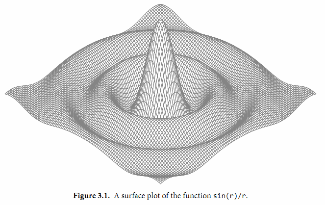
gopl.io/ch3/surface
// Surface computes an SVG rendering of a 3-D surface function.
package main
import (
"fmt"
"math"
)
const (
width, height = 600, 320 // canvas size in pixels
cells = 100 // number of grid cells
xyrange = 30.0 // axis ranges (-xyrange..+xyrange)
xyscale = width / 2 / xyrange // pixels per x or y unit
zscale = height * 0.4 // pixels per z unit
angle = math.Pi / 6 // angle of x, y axes (=30°)
)
var sin30, cos30 = math.Sin(angle), math.Cos(angle) // sin(30°), cos(30°)
func main() {
fmt.Printf("<svg xmlns='http://www.w3.org/2000/svg' "+
"style='stroke: grey; fill: white; stroke-width: 0.7' "+
"width='%d' height='%d'>", width, height)
for i := 0; i < cells; i++ {
for j := 0; j < cells; j++ {
ax, ay := corner(i+1, j)
bx, by := corner(i, j)
cx, cy := corner(i, j+1)
dx, dy := corner(i+1, j+1)
fmt.Printf("<polygon points='%g,%g %g,%g %g,%g %g,%g'/>\n",
ax, ay, bx, by, cx, cy, dx, dy)
}
}
fmt.Println("</svg>")
}
func corner(i, j int) (float64, float64) {
// Find point (x,y) at corner of cell (i,j).
x := xyrange * (float64(i)/cells - 0.5)
y := xyrange * (float64(j)/cells - 0.5)
// Compute surface height z.
z := f(x, y)
// Project (x,y,z) isometrically onto 2-D SVG canvas (sx,sy).
sx := width/2 + (x-y)*cos30*xyscale
sy := height/2 + (x+y)*sin30*xyscale - z*zscale
return sx, sy
}
func f(x, y float64) float64 {
r := math.Hypot(x, y) // distance from (0,0)
return math.Sin(r) / r
}
要注意的是corner函数返回了两个结果，分别对应每个网格顶点的坐标参数。
要解释这个程序是如何工作的需要一些基本的几何学知识，但是我们可以跳过几何学原理，因为程序的重点是演示浮点数运算。程序的本质是三个不同的坐标系中映射关系，如图3.2所示。第一个是100x100的二维网格，对应整数坐标(i,j)，从远处的(0,0)位置开始。我们从远处向前面绘制，因此远处先绘制的多边形有可能被前面后绘制的多边形覆盖。
第二个坐标系是一个三维的网格浮点坐标(x,y,z)，其中x和y是i和j的线性函数，通过平移转换为网格单元的中心，然后用xyrange系数缩放。高度z是函数f(x,y)的值。
第三个坐标系是一个二维的画布，起点(0,0)在左上角。画布中点的坐标用(sx,sy)表示。我们使用等角投影将三维点(x,y,z)投影到二维的画布中。
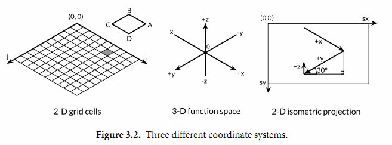
画布中从远处到右边的点对应较大的x值和较大的y值。并且画布中x和y值越大，则对应的z值越小。x和y的垂直和水平缩放系数来自30度角的正弦和余弦值。z的缩放系数0.4，是一个任意选择的参数。
对于二维网格中的每一个网格单元，main函数计算单元的四个顶点在画布中对应多边形ABCD的顶点，其中B对应(i,j)顶点位置，A、C和D是其它相邻的顶点，然后输出SVG的绘制指令。
练习 3.1： 如果f函数返回的是无限制的float64值，那么SVG文件可能输出无效的
练习 3.2： 试验math包中其他函数的渲染图形。你是否能输出一个egg box、moguls或a saddle图案?
练习 3.3： 根据高度给每个多边形上色，那样峰值部将是红色（#ff0000），谷部将是蓝色（#0000ff）。
练习 3.4： 参考1.7节Lissajous例子的函数，构造一个web服务器，用于计算函数曲面然后返回SVG数据给客户端。服务器必须设置Content-Type头部：
w.Header().Set("Content-Type", "image/svg+xml")
（这一步在Lissajous例子中不是必须的，因为服务器使用标准的PNG图像格式，可以根据前面的512个字节自动输出对应的头部。）允许客户端通过HTTP请求参数设置高度、宽度和颜色等参数。
3.3. 复数
Go语言提供了两种精度的复数类型：complex64和complex128，分别对应float32和float64两种浮点数精度。内置的complex函数用于构建复数，内建的real和imag函数分别返回复数的实部和虚部：
var x complex128 = complex(1, 2) // 1+2i
var y complex128 = complex(3, 4) // 3+4i
fmt.Println(x*y) // "(-5+10i)"
fmt.Println(real(x*y)) // "-5"
fmt.Println(imag(x*y)) // "10"
如果一个浮点数面值或一个十进制整数面值后面跟着一个i，例如3.141592i或2i，它将构成一个复数的虚部，复数的实部是0：
fmt.Println(1i * 1i) // "(-1+0i)", i^2 = -1
在常量算术规则下，一个复数常量可以加到另一个普通数值常量（整数或浮点数、实部或虚部），我们可以用自然的方式书写复数，就像1+2i或与之等价的写法2i+1。上面x和y的声明语句还可以简化：
x := 1 + 2i
y := 3 + 4i
复数也可以用==和!=进行相等比较。只有两个复数的实部和虚部都相等的时候它们才是相等的（译注：浮点数的相等比较是危险的，需要特别小心处理精度问题）。
math/cmplx包提供了复数处理的许多函数，例如求复数的平方根函数和求幂函数。
fmt.Println(cmplx.Sqrt(-1)) // "(0+1i)"
下面的程序使用complex128复数算法来生成一个Mandelbrot图像。
gopl.io/ch3/mandelbrot
// Mandelbrot emits a PNG image of the Mandelbrot fractal.
package main
import (
"image"
"image/color"
"image/png"
"math/cmplx"
"os"
)
func main() {
const (
xmin, ymin, xmax, ymax = -2, -2, +2, +2
width, height = 1024, 1024
)
img := image.NewRGBA(image.Rect(0, 0, width, height))
for py := 0; py < height; py++ {
y := float64(py)/height*(ymax-ymin) + ymin
for px := 0; px < width; px++ {
x := float64(px)/width*(xmax-xmin) + xmin
z := complex(x, y)
// Image point (px, py) represents complex value z.
img.Set(px, py, mandelbrot(z))
}
}
png.Encode(os.Stdout, img) // NOTE: ignoring errors
}
func mandelbrot(z complex128) color.Color {
const iterations = 200
const contrast = 15
var v complex128
for n := uint8(0); n < iterations; n++ {
v = v*v + z
if cmplx.Abs(v) > 2 {
return color.Gray{255 - contrast*n}
}
}
return color.Black
}
用于遍历1024x1024图像每个点的两个嵌套的循环对应-2到+2区间的复数平面。程序反复测试每个点对应复数值平方值加一个增量值对应的点是否超出半径为2的圆。如果超过了，通过根据预设置的逃逸迭代次数对应的灰度颜色来代替。如果不是，那么该点属于Mandelbrot集合，使用黑色颜色标记。最终程序将生成的PNG格式分形图像输出到标准输出，如图3.3所示。
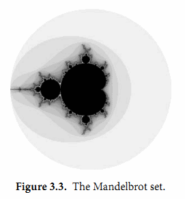
练习 3.5： 实现一个彩色的Mandelbrot图像，使用image.NewRGBA创建图像，使用color.RGBA或color.YCbCr生成颜色。
练习 3.6： 升采样技术可以降低每个像素对计算颜色值和平均值的影响。简单的方法是将每个像素分成四个子像素，实现它。
练习 3.7： 另一个生成分形图像的方式是使用牛顿法来求解一个复数方程，例如$z^4-1=0$。每个起点到四个根的迭代次数对应阴影的灰度。方程根对应的点用颜色表示。
练习 3.8： 通过提高精度来生成更多级别的分形。使用四种不同精度类型的数字实现相同的分形：complex64、complex128、big.Float和big.Rat。（后面两种类型在math/big包声明。Float是有指定限精度的浮点数；Rat是无限精度的有理数。）它们间的性能和内存使用对比如何？当渲染图可见时缩放的级别是多少？
练习 3.9： 编写一个web服务器，用于给客户端生成分形的图像。运行客户端通过HTTP参数指定x、y和zoom参数。
3.4. 布尔型
一个布尔类型的值只有两种：true和false。if和for语句的条件部分都是布尔类型的值，并且==和<等比较操作也会产生布尔型的值。一元操作符!对应逻辑非操作，因此!true的值为false，更罗嗦的说法是(!true==false)==true，虽然表达方式不一样，不过我们一般会采用简洁的布尔表达式，就像用x来表示x==true。
布尔值可以和&&（AND）和||（OR）操作符结合，并且有短路行为：如果运算符左边值已经可以确定整个布尔表达式的值，那么运算符右边的值将不再被求值，因此下面的表达式总是安全的：
s != "" && s[0] == 'x'
其中s[0]操作如果应用于空字符串将会导致panic异常。
因为&&的优先级比||高（助记：&&对应逻辑乘法，||对应逻辑加法，乘法比加法优先级要高），下面形式的布尔表达式是不需要加小括弧的：
if 'a' <= c && c <= 'z' ||
'A' <= c && c <= 'Z' ||
'0' <= c && c <= '9' {
// ...ASCII letter or digit...
}
布尔值并不会隐式转换为数字值0或1，反之亦然。必须使用一个显式的if语句辅助转换：
i := 0
if b {
i = 1
}
如果需要经常做类似的转换，包装成一个函数会更方便：
// btoi returns 1 if b is true and 0 if false.
func btoi(b bool) int {
if b {
return 1
}
return 0
}
数字到布尔型的逆转换则非常简单，不过为了保持对称，我们也可以包装一个函数：
// itob reports whether i is non-zero.
func itob(i int) bool { return i != 0 }
3.5. 字符串
一个字符串是一个不可改变的字节序列。字符串可以包含任意的数据，包括byte值0，但是通常是用来包含人类可读的文本。文本字符串通常被解释为采用UTF8编码的Unicode码点（rune）序列，我们稍后会详细讨论这个问题。
内置的len函数可以返回一个字符串中的字节数目（不是rune字符数目），索引操作s[i]返回第i个字节的字节值，i必须满足0 ≤ i< len(s)条件约束。
s := "hello, world"
fmt.Println(len(s)) // "12"
fmt.Println(s[0], s[7]) // "104 119" ('h' and 'w')
如果试图访问超出字符串索引范围的字节将会导致panic异常：
c := s[len(s)] // panic: index out of range
第i个字节并不一定是字符串的第i个字符，因为对于非ASCII字符的UTF8编码会要两个或多个字节。我们先简单说下字符的工作方式。
子字符串操作s[i:j]基于原始的s字符串的第i个字节开始到第j个字节（并不包含j本身）生成一个新字符串。生成的新字符串将包含j-i个字节。
fmt.Println(s[0:5]) // "hello"
同样，如果索引超出字符串范围或者j小于i的话将导致panic异常。
不管i还是j都可能被忽略，当它们被忽略时将采用0作为开始位置，采用len(s)作为结束的位置。
fmt.Println(s[:5]) // "hello"
fmt.Println(s[7:]) // "world"
fmt.Println(s[:]) // "hello, world"
其中+操作符将两个字符串连接构造一个新字符串：
fmt.Println("goodbye" + s[5:]) // "goodbye, world"
字符串可以用==和<进行比较；比较通过逐个字节比较完成的，因此比较的结果是字符串自然编码的顺序。
字符串的值是不可变的：一个字符串包含的字节序列永远不会被改变，当然我们也可以给一个字符串变量分配一个新字符串值。可以像下面这样将一个字符串追加到另一个字符串：
s := "left foot"
t := s
s += ", right foot"
这并不会导致原始的字符串值被改变，但是变量s将因为+=语句持有一个新的字符串值，但是t依然是包含原先的字符串值。
fmt.Println(s) // "left foot, right foot"
fmt.Println(t) // "left foot"
因为字符串是不可修改的，因此尝试修改字符串内部数据的操作也是被禁止的：
s[0] = 'L' // compile error: cannot assign to s[0]
不变性意味着如果两个字符串共享相同的底层数据的话也是安全的，这使得复制任何长度的字符串代价是低廉的。同样，一个字符串s和对应的子字符串切片s[7:]的操作也可以安全地共享相同的内存，因此字符串切片操作代价也是低廉的。在这两种情况下都没有必要分配新的内存。 图3.4演示了一个字符串和两个子串共享相同的底层数据。
3.5.1. 字符串面值
字符串值也可以用字符串面值方式编写，只要将一系列字节序列包含在双引号内即可：
"Hello, 世界"

因为Go语言源文件总是用UTF8编码，并且Go语言的文本字符串也以UTF8编码的方式处理，因此我们可以将Unicode码点也写到字符串面值中。
在一个双引号包含的字符串面值中，可以用以反斜杠\开头的转义序列插入任意的数据。下面的换行、回车和制表符等是常见的ASCII控制代码的转义方式：
\a 响铃
\b 退格
\f 换页
\n 换行
\r 回车
\t 制表符
\v 垂直制表符
\' 单引号（只用在 '\'' 形式的rune符号面值中）
\" 双引号（只用在 "..." 形式的字符串面值中）
\\ 反斜杠
可以通过十六进制或八进制转义在字符串面值中包含任意的字节。一个十六进制的转义形式是\xhh，其中两个h表示十六进制数字（大写或小写都可以）。一个八进制转义形式是\ooo，包含三个八进制的o数字（0到7），但是不能超过\377（译注：对应一个字节的范围，十进制为255）。每一个单一的字节表达一个特定的值。稍后我们将看到如何将一个Unicode码点写到字符串面值中。
一个原生的字符串面值形式是`...`，使用反引号代替双引号。在原生的字符串面值中，没有转义操作；全部的内容都是字面的意思，包含退格和换行，因此一个程序中的原生字符串面值可能跨越多行（译注：在原生字符串面值内部是无法直接写`字符的，可以用八进制或十六进制转义或+"`"连接字符串常量完成）。唯一的特殊处理是会删除回车以保证在所有平台上的值都是一样的，包括那些把回车也放入文本文件的系统（译注：Windows系统会把回车和换行一起放入文本文件中）。
原生字符串面值用于编写正则表达式会很方便，因为正则表达式往往会包含很多反斜杠。原生字符串面值同时被广泛应用于HTML模板、JSON面值、命令行提示信息以及那些需要扩展到多行的场景。
const GoUsage = `Go is a tool for managing Go source code.
Usage:
go command [arguments]
...`
3.5.2. Unicode
在很久以前，世界还是比较简单的，起码计算机世界就只有一个ASCII字符集：美国信息交换标准代码。ASCII，更准确地说是美国的ASCII，使用7bit来表示128个字符：包含英文字母的大小写、数字、各种标点符号和设备控制符。对于早期的计算机程序来说，这些就足够了，但是这也导致了世界上很多其他地区的用户无法直接使用自己的符号系统。随着互联网的发展，混合多种语言的数据变得很常见（译注：比如本身的英文原文或中文翻译都包含了ASCII、中文、日文等多种语言字符）。如何有效处理这些包含了各种语言的丰富多样的文本数据呢？
答案就是使用Unicode（ http://unicode.org ），它收集了这个世界上所有的符号系统，包括重音符号和其它变音符号，制表符和回车符，还有很多神秘的符号，每个符号都分配一个唯一的Unicode码点，Unicode码点对应Go语言中的rune整数类型（译注：rune是int32等价类型）。
在第八版本的Unicode标准里收集了超过120,000个字符，涵盖超过100多种语言。这些在计算机程序和数据中是如何体现的呢？通用的表示一个Unicode码点的数据类型是int32，也就是Go语言中rune对应的类型；它的同义词rune符文正是这个意思。
我们可以将一个符文序列表示为一个int32序列。这种编码方式叫UTF-32或UCS-4，每个Unicode码点都使用同样大小的32bit来表示。这种方式比较简单统一，但是它会浪费很多存储空间，因为大多数计算机可读的文本是ASCII字符，本来每个ASCII字符只需要8bit或1字节就能表示。而且即使是常用的字符也远少于65,536个，也就是说用16bit编码方式就能表达常用字符。但是，还有其它更好的编码方法吗？
3.5.3. UTF-8
UTF8是一个将Unicode码点编码为字节序列的变长编码。UTF8编码是由Go语言之父Ken Thompson和Rob Pike共同发明的，现在已经是Unicode的标准。UTF8编码使用1到4个字节来表示每个Unicode码点，ASCII部分字符只使用1个字节，常用字符部分使用2或3个字节表示。每个符号编码后第一个字节的高端bit位用于表示编码总共有多少个字节。如果第一个字节的高端bit为0，则表示对应7bit的ASCII字符，ASCII字符每个字符依然是一个字节，和传统的ASCII编码兼容。如果第一个字节的高端bit是110，则说明需要2个字节；后续的每个高端bit都以10开头。更大的Unicode码点也是采用类似的策略处理。
0xxxxxxx runes 0-127 (ASCII)
110xxxxx 10xxxxxx 128-2047 (values <128 unused)
1110xxxx 10xxxxxx 10xxxxxx 2048-65535 (values <2048 unused)
11110xxx 10xxxxxx 10xxxxxx 10xxxxxx 65536-0x10ffff (other values unused)
变长的编码无法直接通过索引来访问第n个字符，但是UTF8编码获得了很多额外的优点。首先UTF8编码比较紧凑，完全兼容ASCII码，并且可以自动同步：它可以通过向前回朔最多3个字节就能确定当前字符编码的开始字节的位置。它也是一个前缀编码，所以当从左向右解码时不会有任何歧义也并不需要向前查看（译注：像GBK之类的编码，如果不知道起点位置则可能会出现歧义）。没有任何字符的编码是其它字符编码的子串，或是其它编码序列的字串，因此搜索一个字符时只要搜索它的字节编码序列即可，不用担心前后的上下文会对搜索结果产生干扰。同时UTF8编码的顺序和Unicode码点的顺序一致，因此可以直接排序UTF8编码序列。同时因为没有嵌入的NUL(0)字节，可以很好地兼容那些使用NUL作为字符串结尾的编程语言。
Go语言的源文件采用UTF8编码，并且Go语言处理UTF8编码的文本也很出色。unicode包提供了诸多处理rune字符相关功能的函数（比如区分字母和数字，或者是字母的大写和小写转换等），unicode/utf8包则提供了用于rune字符序列的UTF8编码和解码的功能。
有很多Unicode字符很难直接从键盘输入，并且还有很多字符有着相似的结构；有一些甚至是不可见的字符（译注：中文和日文就有很多相似但不同的字）。Go语言字符串面值中的Unicode转义字符让我们可以通过Unicode码点输入特殊的字符。有两种形式：\uhhhh对应16bit的码点值，\Uhhhhhhhh对应32bit的码点值，其中h是一个十六进制数字；一般很少需要使用32bit的形式。每一个对应码点的UTF8编码。例如：下面的字母串面值都表示相同的值：
"世界"
"\xe4\xb8\x96\xe7\x95\x8c"
"\u4e16\u754c"
"\U00004e16\U0000754c"
上面三个转义序列都为第一个字符串提供替代写法，但是它们的值都是相同的。
Unicode转义也可以使用在rune字符中。下面三个字符是等价的：
'世' '\u4e16' '\U00004e16'
对于小于256的码点值可以写在一个十六进制转义字节中，例如\x41对应字符'A'，但是对于更大的码点则必须使用\u或\U转义形式。因此，\xe4\xb8\x96并不是一个合法的rune字符，虽然这三个字节对应一个有效的UTF8编码的码点。
得益于UTF8编码优良的设计，诸多字符串操作都不需要解码操作。我们可以不用解码直接测试一个字符串是否是另一个字符串的前缀：
func HasPrefix(s, prefix string) bool {
return len(s) >= len(prefix) && s[:len(prefix)] == prefix
}
或者是后缀测试：
func HasSuffix(s, suffix string) bool {
return len(s) >= len(suffix) && s[len(s)-len(suffix):] == suffix
}
或者是包含子串测试：
func Contains(s, substr string) bool {
for i := 0; i < len(s); i++ {
if HasPrefix(s[i:], substr) {
return true
}
}
return false
}
对于UTF8编码后文本的处理和原始的字节处理逻辑是一样的。但是对应很多其它编码则并不是这样的。（上面的函数都来自strings字符串处理包，真实的代码包含了一个用哈希技术优化的Contains 实现。）
另一方面，如果我们真的关心每个Unicode字符，我们可以使用其它处理方式。考虑前面的第一个例子中的字符串，它混合了中西两种字符。图3.5展示了它的内存表示形式。字符串包含13个字节，以UTF8形式编码，但是只对应9个Unicode字符：
import "unicode/utf8"
s := "Hello, 世界"
fmt.Println(len(s)) // "13"
fmt.Println(utf8.RuneCountInString(s)) // "9"
为了处理这些真实的字符，我们需要一个UTF8解码器。unicode/utf8包提供了该功能，我们可以这样使用：
for i := 0; i < len(s); {
r, size := utf8.DecodeRuneInString(s[i:])
fmt.Printf("%d\t%c\n", i, r)
i += size
}
每一次调用DecodeRuneInString函数都返回一个r和长度，r对应字符本身，长度对应r采用UTF8编码后的编码字节数目。长度可以用于更新第i个字符在字符串中的字节索引位置。但是这种编码方式是笨拙的，我们需要更简洁的语法。幸运的是，Go语言的range循环在处理字符串的时候，会自动隐式解码UTF8字符串。下面的循环运行如图3.5所示；需要注意的是对于非ASCII，索引更新的步长将超过1个字节。
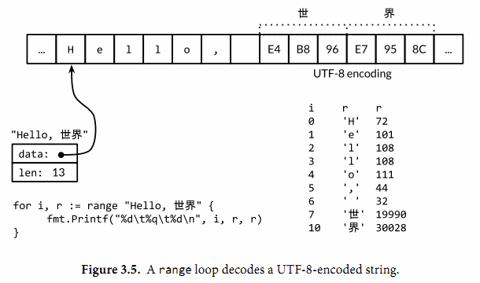
for i, r := range "Hello, 世界" {
fmt.Printf("%d\t%q\t%d\n", i, r, r)
}
我们可以使用一个简单的循环来统计字符串中字符的数目，像这样：
n := 0
for _, _ = range s {
n++
}
像其它形式的循环那样，我们也可以忽略不需要的变量：
n := 0
for range s {
n++
}
或者我们可以直接调用utf8.RuneCountInString(s)函数。
正如我们前面提到的，文本字符串采用UTF8编码只是一种惯例，但是对于循环的真正字符串并不是一个惯例，这是正确的。如果用于循环的字符串只是一个普通的二进制数据，或者是含有错误编码的UTF8数据，将会发生什么呢？
每一个UTF8字符解码，不管是显式地调用utf8.DecodeRuneInString解码或是在range循环中隐式地解码，如果遇到一个错误的UTF8编码输入，将生成一个特别的Unicode字符\uFFFD，在印刷中这个符号通常是一个黑色六角或钻石形状，里面包含一个白色的问号"?"。当程序遇到这样的一个字符，通常是一个危险信号，说明输入并不是一个完美没有错误的UTF8字符串。
UTF8字符串作为交换格式是非常方便的，但是在程序内部采用rune序列可能更方便，因为rune大小一致，支持数组索引和方便切割。
将[]rune类型转换应用到UTF8编码的字符串，将返回字符串编码的Unicode码点序列：
// "program" in Japanese katakana
s := "プログラム"
fmt.Printf("% x\n", s) // "e3 83 97 e3 83 ad e3 82 b0 e3 83 a9 e3 83 a0"
r := []rune(s)
fmt.Printf("%x\n", r) // "[30d7 30ed 30b0 30e9 30e0]"
（在第一个Printf中的% x参数用于在每个十六进制数字前插入一个空格。）
如果是将一个[]rune类型的Unicode字符slice或数组转为string，则对它们进行UTF8编码：
fmt.Println(string(r)) // "プログラム"
将一个整数转型为字符串意思是生成以只包含对应Unicode码点字符的UTF8字符串：
fmt.Println(string(65)) // "A", not "65"
fmt.Println(string(0x4eac)) // "京"
如果对应码点的字符是无效的，则用\uFFFD无效字符作为替换：
fmt.Println(string(1234567)) // "?"
3.5.4. 字符串和Byte切片
标准库中有四个包对字符串处理尤为重要：bytes、strings、strconv和unicode包。strings包提供了许多如字符串的查询、替换、比较、截断、拆分和合并等功能。
bytes包也提供了很多类似功能的函数，但是针对和字符串有着相同结构的[]byte类型。因为字符串是只读的，因此逐步构建字符串会导致很多分配和复制。在这种情况下，使用bytes.Buffer类型将会更有效，稍后我们将展示。
strconv包提供了布尔型、整型数、浮点数和对应字符串的相互转换，还提供了双引号转义相关的转换。
unicode包提供了IsDigit、IsLetter、IsUpper和IsLower等类似功能，它们用于给字符分类。每个函数有一个单一的rune类型的参数，然后返回一个布尔值。而像ToUpper和ToLower之类的转换函数将用于rune字符的大小写转换。所有的这些函数都是遵循Unicode标准定义的字母、数字等分类规范。strings包也有类似的函数，它们是ToUpper和ToLower，将原始字符串的每个字符都做相应的转换，然后返回新的字符串。
下面例子的basename函数灵感源于Unix shell的同名工具。在我们实现的版本中，basename(s)将看起来像是系统路径的前缀删除，同时将看似文件类型的后缀名部分删除：
fmt.Println(basename("a/b/c.go")) // "c"
fmt.Println(basename("c.d.go")) // "c.d"
fmt.Println(basename("abc")) // "abc"
第一个版本并没有使用任何库，全部手工硬编码实现：
gopl.io/ch3/basename1
// basename removes directory components and a .suffix.
// e.g., a => a, a.go => a, a/b/c.go => c, a/b.c.go => b.c
func basename(s string) string {
// Discard last '/' and everything before.
for i := len(s) - 1; i >= 0; i-- {
if s[i] == '/' {
s = s[i+1:]
break
}
}
// Preserve everything before last '.'.
for i := len(s) - 1; i >= 0; i-- {
if s[i] == '.' {
s = s[:i]
break
}
}
return s
}
这个简化版本使用了strings.LastIndex库函数：
gopl.io/ch3/basename2
func basename(s string) string {
slash := strings.LastIndex(s, "/") // -1 if "/" not found
s = s[slash+1:]
if dot := strings.LastIndex(s, "."); dot >= 0 {
s = s[:dot]
}
return s
}
path和path/filepath包提供了关于文件路径名更一般的函数操作。使用斜杠分隔路径可以在任何操作系统上工作。斜杠本身不应该用于文件名，但是在其他一些领域可能会用于文件名，例如URL路径组件。相比之下，path/filepath包则使用操作系统本身的路径规则，例如POSIX系统使用/foo/bar，而Microsoft Windows使用c:\foo\bar等。
让我们继续另一个字符串的例子。函数的功能是将一个表示整数值的字符串，每隔三个字符插入一个逗号分隔符，例如“12345”处理后成为“12,345”。这个版本只适用于整数类型；支持浮点数类型的留作练习。
gopl.io/ch3/comma
// comma inserts commas in a non-negative decimal integer string.
func comma(s string) string {
n := len(s)
if n <= 3 {
return s
}
return comma(s[:n-3]) + "," + s[n-3:]
}
输入comma函数的参数是一个字符串。如果输入字符串的长度小于或等于3的话，则不需要插入逗号分隔符。否则，comma函数将在最后三个字符前的位置将字符串切割为两个子串并插入逗号分隔符，然后通过递归调用自身来得出前面的子串。
一个字符串是包含只读字节的数组，一旦创建，是不可变的。相比之下，一个字节slice的元素则可以自由地修改。
字符串和字节slice之间可以相互转换：
s := "abc"
b := []byte(s)
s2 := string(b)
从概念上讲，一个[]byte(s)转换是分配了一个新的字节数组用于保存字符串数据的拷贝，然后引用这个底层的字节数组。编译器的优化可以避免在一些场景下分配和复制字符串数据，但总的来说需要确保在变量b被修改的情况下，原始的s字符串也不会改变。将一个字节slice转换到字符串的string(b)操作则是构造一个字符串拷贝，以确保s2字符串是只读的。
为了避免转换中不必要的内存分配，bytes包和strings同时提供了许多实用函数。下面是strings包中的六个函数：
func Contains(s, substr string) bool
func Count(s, sep string) int
func Fields(s string) []string
func HasPrefix(s, prefix string) bool
func Index(s, sep string) int
func Join(a []string, sep string) string
bytes包中也对应的六个函数：
func Contains(b, subslice []byte) bool
func Count(s, sep []byte) int
func Fields(s []byte) [][]byte
func HasPrefix(s, prefix []byte) bool
func Index(s, sep []byte) int
func Join(s [][]byte, sep []byte) []byte
它们之间唯一的区别是字符串类型参数被替换成了字节slice类型的参数。
bytes包还提供了Buffer类型用于字节slice的缓存。一个Buffer开始是空的，但是随着string、byte或[]byte等类型数据的写入可以动态增长，一个bytes.Buffer变量并不需要初始化，因为零值也是有效的：
gopl.io/ch3/printints
// intsToString is like fmt.Sprint(values) but adds commas.
func intsToString(values []int) string {
var buf bytes.Buffer
buf.WriteByte('[')
for i, v := range values {
if i > 0 {
buf.WriteString(", ")
}
fmt.Fprintf(&buf, "%d", v)
}
buf.WriteByte(']')
return buf.String()
}
func main() {
fmt.Println(intsToString([]int{1, 2, 3})) // "[1, 2, 3]"
}
当向bytes.Buffer添加任意字符的UTF8编码时，最好使用bytes.Buffer的WriteRune方法，但是WriteByte方法对于写入类似'['和']'等ASCII字符则会更加有效。
bytes.Buffer类型有着很多实用的功能，我们在第七章讨论接口时将会涉及到，我们将看看如何将它用作一个I/O的输入和输出对象，例如当做Fprintf的io.Writer输出对象，或者当作io.Reader类型的输入源对象。
练习 3.10： 编写一个非递归版本的comma函数，使用bytes.Buffer代替字符串链接操作。
练习 3.11： 完善comma函数，以支持浮点数处理和一个可选的正负号的处理。
练习 3.12： 编写一个函数，判断两个字符串是否是相互打乱的，也就是说它们有着相同的字符，但是对应不同的顺序。
3.5.5. 字符串和数字的转换
除了字符串、字符、字节之间的转换，字符串和数值之间的转换也比较常见。由strconv包提供这类转换功能。
将一个整数转为字符串，一种方法是用fmt.Sprintf返回一个格式化的字符串；另一个方法是用strconv.Itoa(“整数到ASCII”)：
x := 123
y := fmt.Sprintf("%d", x)
fmt.Println(y, strconv.Itoa(x)) // "123 123"
FormatInt和FormatUint函数可以用不同的进制来格式化数字：
fmt.Println(strconv.FormatInt(int64(x), 2)) // "1111011"
fmt.Printf函数的%b、%d、%o和%x等参数提供功能往往比strconv包的Format函数方便很多，特别是在需要包含有附加额外信息的时候：
s := fmt.Sprintf("x=%b", x) // "x=1111011"
如果要将一个字符串解析为整数，可以使用strconv包的Atoi或ParseInt函数，还有用于解析无符号整数的ParseUint函数：
x, err := strconv.Atoi("123") // x is an int
y, err := strconv.ParseInt("123", 10, 64) // base 10, up to 64 bits
ParseInt函数的第三个参数是用于指定整型数的大小；例如16表示int16，0则表示int。在任何情况下，返回的结果y总是int64类型，你可以通过强制类型转换将它转为更小的整数类型。
有时候也会使用fmt.Scanf来解析输入的字符串和数字，特别是当字符串和数字混合在一行的时候，它可以灵活处理不完整或不规则的输入。
3.6. 常量
常量表达式的值在编译期计算，而不是在运行期。每种常量的潜在类型都是基础类型：boolean、string或数字。
一个常量的声明语句定义了常量的名字，和变量的声明语法类似，常量的值不可修改，这样可以防止在运行期被意外或恶意的修改。例如，常量比变量更适合用于表达像π之类的数学常数，因为它们的值不会发生变化：
const pi = 3.14159 // approximately; math.Pi is a better approximation
和变量声明一样，可以批量声明多个常量；这比较适合声明一组相关的常量：
const (
e = 2.71828182845904523536028747135266249775724709369995957496696763
pi = 3.14159265358979323846264338327950288419716939937510582097494459
)
所有常量的运算都可以在编译期完成，这样可以减少运行时的工作，也方便其他编译优化。当操作数是常量时，一些运行时的错误也可以在编译时被发现，例如整数除零、字符串索引越界、任何导致无效浮点数的操作等。
常量间的所有算术运算、逻辑运算和比较运算的结果也是常量，对常量的类型转换操作或以下函数调用都是返回常量结果：len、cap、real、imag、complex和unsafe.Sizeof（§13.1）。
因为它们的值是在编译期就确定的，因此常量可以是构成类型的一部分，例如用于指定数组类型的长度：
const IPv4Len = 4
// parseIPv4 parses an IPv4 address (d.d.d.d).
func parseIPv4(s string) IP {
var p [IPv4Len]byte
// ...
}
一个常量的声明也可以包含一个类型和一个值，但是如果没有显式指明类型，那么将从右边的表达式推断类型。在下面的代码中，time.Duration是一个命名类型，底层类型是int64，time.Minute是对应类型的常量。下面声明的两个常量都是time.Duration类型，可以通过%T参数打印类型信息：
const noDelay time.Duration = 0
const timeout = 5 * time.Minute
fmt.Printf("%T %[1]v\n", noDelay) // "time.Duration 0"
fmt.Printf("%T %[1]v\n", timeout) // "time.Duration 5m0s"
fmt.Printf("%T %[1]v\n", time.Minute) // "time.Duration 1m0s"
如果是批量声明的常量，除了第一个外其它的常量右边的初始化表达式都可以省略，如果省略初始化表达式则表示使用前面常量的初始化表达式写法，对应的常量类型也一样的。例如：
const (
a = 1
b
c = 2
d
)
fmt.Println(a, b, c, d) // "1 1 2 2"
如果只是简单地复制右边的常量表达式，其实并没有太实用的价值。但是它可以带来其它的特性，那就是iota常量生成器语法。
3.6.1. iota 常量生成器
常量声明可以使用iota常量生成器初始化，它用于生成一组以相似规则初始化的常量，但是不用每行都写一遍初始化表达式。在一个const声明语句中，在第一个声明的常量所在的行，iota将会被置为0，然后在每一个有常量声明的行加一。
下面是来自time包的例子，它首先定义了一个Weekday命名类型，然后为一周的每天定义了一个常量，从周日0开始。在其它编程语言中，这种类型一般被称为枚举类型。
type Weekday int
const (
Sunday Weekday = iota
Monday
Tuesday
Wednesday
Thursday
Friday
Saturday
)
周日将对应0，周一为1，如此等等。
我们也可以在复杂的常量表达式中使用iota，下面是来自net包的例子，用于给一个无符号整数的最低5bit的每个bit指定一个名字：
type Flags uint
const (
FlagUp Flags = 1 << iota // is up
FlagBroadcast // supports broadcast access capability
FlagLoopback // is a loopback interface
FlagPointToPoint // belongs to a point-to-point link
FlagMulticast // supports multicast access capability
)
随着iota的递增，每个常量对应表达式1 << iota，是连续的2的幂，分别对应一个bit位置。使用这些常量可以用于测试、设置或清除对应的bit位的值：
gopl.io/ch3/netflag
func IsUp(v Flags) bool { return v&FlagUp == FlagUp }
func TurnDown(v *Flags) { *v &^= FlagUp }
func SetBroadcast(v *Flags) { *v |= FlagBroadcast }
func IsCast(v Flags) bool { return v&(FlagBroadcast|FlagMulticast) != 0 }
func main() {
var v Flags = FlagMulticast | FlagUp
fmt.Printf("%b %t\n", v, IsUp(v)) // "10001 true"
TurnDown(&v)
fmt.Printf("%b %t\n", v, IsUp(v)) // "10000 false"
SetBroadcast(&v)
fmt.Printf("%b %t\n", v, IsUp(v)) // "10010 false"
fmt.Printf("%b %t\n", v, IsCast(v)) // "10010 true"
}
下面是一个更复杂的例子，每个常量都是1024的幂：
const (
_ = 1 << (10 * iota)
KiB // 1024
MiB // 1048576
GiB // 1073741824
TiB // 1099511627776 (exceeds 1 << 32)
PiB // 1125899906842624
EiB // 1152921504606846976
ZiB // 1180591620717411303424 (exceeds 1 << 64)
YiB // 1208925819614629174706176
)
不过iota常量生成规则也有其局限性。例如，它并不能用于产生1000的幂（KB、MB等），因为Go语言并没有计算幂的运算符。
练习 3.13： 编写KB、MB的常量声明，然后扩展到YB。
3.6.2. 无类型常量
Go语言的常量有个不同寻常之处。虽然一个常量可以有任意一个确定的基础类型，例如int或float64，或者是类似time.Duration这样命名的基础类型，但是许多常量并没有一个明确的基础类型。编译器为这些没有明确基础类型的数字常量提供比基础类型更高精度的算术运算；你可以认为至少有256bit的运算精度。这里有六种未明确类型的常量类型，分别是无类型的布尔型、无类型的整数、无类型的字符、无类型的浮点数、无类型的复数、无类型的字符串。
通过延迟明确常量的具体类型，无类型的常量不仅可以提供更高的运算精度，而且可以直接用于更多的表达式而不需要显式的类型转换。例如，例子中的ZiB和YiB的值已经超出任何Go语言中整数类型能表达的范围，但是它们依然是合法的常量，而且像下面的常量表达式依然有效（译注：YiB/ZiB是在编译期计算出来的，并且结果常量是1024，是Go语言int变量能有效表示的）：
fmt.Println(YiB/ZiB) // "1024"
另一个例子，math.Pi无类型的浮点数常量，可以直接用于任意需要浮点数或复数的地方：
var x float32 = math.Pi
var y float64 = math.Pi
var z complex128 = math.Pi
如果math.Pi被确定为特定类型，比如float64，那么结果精度可能会不一样，同时对于需要float32或complex128类型值的地方则会强制需要一个明确的类型转换：
const Pi64 float64 = math.Pi
var x float32 = float32(Pi64)
var y float64 = Pi64
var z complex128 = complex128(Pi64)
对于常量面值，不同的写法可能会对应不同的类型。例如0、0.0、0i和\u0000虽然有着相同的常量值，但是它们分别对应无类型的整数、无类型的浮点数、无类型的复数和无类型的字符等不同的常量类型。同样，true和false也是无类型的布尔类型，字符串面值常量是无类型的字符串类型。
前面说过除法运算符/会根据操作数的类型生成对应类型的结果。因此，不同写法的常量除法表达式可能对应不同的结果：
var f float64 = 212
fmt.Println((f - 32) * 5 / 9) // "100"; (f - 32) * 5 is a float64
fmt.Println(5 / 9 * (f - 32)) // "0"; 5/9 is an untyped integer, 0
fmt.Println(5.0 / 9.0 * (f - 32)) // "100"; 5.0/9.0 is an untyped float
只有常量可以是无类型的。当一个无类型的常量被赋值给一个变量的时候，就像下面的第一行语句，或者出现在有明确类型的变量声明的右边，如下面的其余三行语句，无类型的常量将会被隐式转换为对应的类型，如果转换合法的话。
var f float64 = 3 + 0i // untyped complex -> float64
f = 2 // untyped integer -> float64
f = 1e123 // untyped floating-point -> float64
f = 'a' // untyped rune -> float64
上面的语句相当于:
var f float64 = float64(3 + 0i)
f = float64(2)
f = float64(1e123)
f = float64('a')
无论是隐式或显式转换，将一种类型转换为另一种类型都要求目标可以表示原始值。对于浮点数和复数，可能会有舍入处理：
const (
deadbeef = 0xdeadbeef // untyped int with value 3735928559
a = uint32(deadbeef) // uint32 with value 3735928559
b = float32(deadbeef) // float32 with value 3735928576 (rounded up)
c = float64(deadbeef) // float64 with value 3735928559 (exact)
d = int32(deadbeef) // compile error: constant overflows int32
e = float64(1e309) // compile error: constant overflows float64
f = uint(-1) // compile error: constant underflows uint
)
对于一个没有显式类型的变量声明（包括简短变量声明），常量的形式将隐式决定变量的默认类型，就像下面的例子：
i := 0 // untyped integer; implicit int(0)
r := '\000' // untyped rune; implicit rune('\000')
f := 0.0 // untyped floating-point; implicit float64(0.0)
c := 0i // untyped complex; implicit complex128(0i)
注意有一点不同：无类型整数常量转换为int，它的内存大小是不确定的，但是无类型浮点数和复数常量则转换为内存大小明确的float64和complex128。 如果不知道浮点数类型的内存大小是很难写出正确的数值算法的，因此Go语言不存在整型类似的不确定内存大小的浮点数和复数类型。
如果要给变量一个不同的类型，我们必须显式地将无类型的常量转化为所需的类型，或给声明的变量指定明确的类型，像下面例子这样：
var i = int8(0)
var i int8 = 0
当尝试将这些无类型的常量转为一个接口值时（见第7章），这些默认类型将显得尤为重要，因为要靠它们明确接口对应的动态类型。
fmt.Printf("%T\n", 0) // "int"
fmt.Printf("%T\n", 0.0) // "float64"
fmt.Printf("%T\n", 0i) // "complex128"
fmt.Printf("%T\n", '\000') // "int32" (rune)
现在我们已经讲述了Go语言中全部的基础数据类型。下一步将演示如何用基础数据类型组合成数组或结构体等复杂数据类型，然后构建用于解决实际编程问题的数据结构，这将是第四章的讨论主题。
第4章 复合数据类型
在第三章我们讨论了基本数据类型，它们可以用于构建程序中数据的结构，是Go语言世界的原子。在本章，我们将讨论复合数据类型，它是以不同的方式组合基本类型而构造出来的复合数据类型。我们主要讨论四种类型——数组、slice、map和结构体——同时在本章的最后，我们将演示如何使用结构体来解码和编码到对应JSON格式的数据，并且通过结合使用模板来生成HTML页面。
数组和结构体是聚合类型；它们的值由许多元素或成员字段的值组成。数组是由同构的元素组成——每个数组元素都是完全相同的类型——结构体则是由异构的元素组成的。数组和结构体都是有固定内存大小的数据结构。相比之下，slice和map则是动态的数据结构，它们将根据需要动态增长。
4.1. 数组
数组是一个由固定长度的特定类型元素组成的序列，一个数组可以由零个或多个元素组成。因为数组的长度是固定的，因此在Go语言中很少直接使用数组。和数组对应的类型是Slice（切片），它是可以增长和收缩的动态序列，slice功能也更灵活，但是要理解slice工作原理的话需要先理解数组。
数组的每个元素可以通过索引下标来访问，索引下标的范围是从0开始到数组长度减1的位置。内置的len函数将返回数组中元素的个数。
var a [3]int // array of 3 integers
fmt.Println(a[0]) // print the first element
fmt.Println(a[len(a)-1]) // print the last element, a[2]
// Print the indices and elements.
for i, v := range a {
fmt.Printf("%d %d\n", i, v)
}
// Print the elements only.
for _, v := range a {
fmt.Printf("%d\n", v)
}
默认情况下，数组的每个元素都被初始化为元素类型对应的零值，对于数字类型来说就是0。我们也可以使用数组字面值语法用一组值来初始化数组：
var q [3]int = [3]int{1, 2, 3}
var r [3]int = [3]int{1, 2}
fmt.Println(r[2]) // "0"
在数组字面值中，如果在数组的长度位置出现的是“...”省略号，则表示数组的长度是根据初始化值的个数来计算。因此，上面q数组的定义可以简化为
q := [...]int{1, 2, 3}
fmt.Printf("%T\n", q) // "[3]int"
数组的长度是数组类型的一个组成部分，因此[3]int和[4]int是两种不同的数组类型。数组的长度必须是常量表达式，因为数组的长度需要在编译阶段确定。
q := [3]int{1, 2, 3}
q = [4]int{1, 2, 3, 4} // compile error: cannot assign [4]int to [3]int
我们将会发现，数组、slice、map和结构体字面值的写法都很相似。上面的形式是直接提供顺序初始化值序列，但是也可以指定一个索引和对应值列表的方式初始化，就像下面这样：
type Currency int
const (
USD Currency = iota // 美元
EUR // 欧元
GBP // 英镑
RMB // 人民币
)
symbol := [...]string{USD: "$", EUR: "€", GBP: "￡", RMB: "￥"}
fmt.Println(RMB, symbol[RMB]) // "3 ￥"
在这种形式的数组字面值形式中，初始化索引的顺序是无关紧要的，而且没用到的索引可以省略，和前面提到的规则一样，未指定初始值的元素将用零值初始化。例如，
r := [...]int{99: -1}
定义了一个含有100个元素的数组r，最后一个元素被初始化为-1，其它元素都是用0初始化。
如果一个数组的元素类型是可以相互比较的，那么数组类型也是可以相互比较的，这时候我们可以直接通过==比较运算符来比较两个数组，只有当两个数组的所有元素都是相等的时候数组才是相等的。不相等比较运算符!=遵循同样的规则。
a := [2]int{1, 2}
b := [...]int{1, 2}
c := [2]int{1, 3}
fmt.Println(a == b, a == c, b == c) // "true false false"
d := [3]int{1, 2}
fmt.Println(a == d) // compile error: cannot compare [2]int == [3]int
作为一个真实的例子，crypto/sha256包的Sum256函数对一个任意的字节slice类型的数据生成一个对应的消息摘要。消息摘要有256bit大小，因此对应[32]byte数组类型。如果两个消息摘要是相同的，那么可以认为两个消息本身也是相同（译注：理论上有HASH码碰撞的情况，但是实际应用可以基本忽略）；如果消息摘要不同，那么消息本身必然也是不同的。下面的例子用SHA256算法分别生成“x”和“X”两个信息的摘要：
gopl.io/ch4/sha256
import "crypto/sha256"
func main() {
c1 := sha256.Sum256([]byte("x"))
c2 := sha256.Sum256([]byte("X"))
fmt.Printf("%x\n%x\n%t\n%T\n", c1, c2, c1 == c2, c1)
// Output:
// 2d711642b726b04401627ca9fbac32f5c8530fb1903cc4db02258717921a4881
// 4b68ab3847feda7d6c62c1fbcbeebfa35eab7351ed5e78f4ddadea5df64b8015
// false
// [32]uint8
}
上面例子中，两个消息虽然只有一个字符的差异，但是生成的消息摘要则几乎有一半的bit位是不相同的。需要注意Printf函数的%x副词参数，它用于指定以十六进制的格式打印数组或slice全部的元素，%t副词参数是用于打印布尔型数据，%T副词参数是用于显示一个值对应的数据类型。
当调用一个函数的时候，函数的每个调用参数将会被赋值给函数内部的参数变量，所以函数参数变量接收的是一个复制的副本，并不是原始调用的变量。因为函数参数传递的机制导致传递大的数组类型将是低效的，并且对数组参数的任何的修改都是发生在复制的数组上，并不能直接修改调用时原始的数组变量。在这个方面，Go语言对待数组的方式和其它很多编程语言不同，其它编程语言可能会隐式地将数组作为引用或指针对象传入被调用的函数。
当然，我们可以显式地传入一个数组指针，那样的话函数通过指针对数组的任何修改都可以直接反馈到调用者。下面的函数用于给[32]byte类型的数组清零：
func zero(ptr *[32]byte) {
for i := range ptr {
ptr[i] = 0
}
}
其实数组字面值[32]byte{}就可以生成一个32字节的数组。而且每个数组的元素都是零值初始化，也就是0。因此，我们可以将上面的zero函数写的更简洁一点：
func zero(ptr *[32]byte) {
*ptr = [32]byte{}
}
虽然通过指针来传递数组参数是高效的，而且也允许在函数内部修改数组的值，但是数组依然是僵化的类型，因为数组的类型包含了僵化的长度信息。上面的zero函数并不能接收指向[16]byte类型数组的指针，而且也没有任何添加或删除数组元素的方法。由于这些原因，除了像SHA256这类需要处理特定大小数组的特例外，数组依然很少用作函数参数；相反，我们一般使用slice来替代数组。
练习 4.1： 编写一个函数，计算两个SHA256哈希码中不同bit的数目。（参考2.6.2节的PopCount函数。)
练习 4.2： 编写一个程序，默认情况下打印标准输入的SHA256编码，并支持通过命令行flag定制，输出SHA384或SHA512哈希算法。
4.2. Slice
Slice（切片）代表变长的序列，序列中每个元素都有相同的类型。一个slice类型一般写作[]T，其中T代表slice中元素的类型；slice的语法和数组很像，只是没有固定长度而已。
数组和slice之间有着紧密的联系。一个slice是一个轻量级的数据结构，提供了访问数组子序列（或者全部）元素的功能，而且slice的底层确实引用一个数组对象。一个slice由三个部分构成：指针、长度和容量。指针指向第一个slice元素对应的底层数组元素的地址，要注意的是slice的第一个元素并不一定就是数组的第一个元素。长度对应slice中元素的数目；长度不能超过容量，容量一般是从slice的开始位置到底层数据的结尾位置。内置的len和cap函数分别返回slice的长度和容量。
多个slice之间可以共享底层的数据，并且引用的数组部分区间可能重叠。图4.1显示了表示一年中每个月份名字的字符串数组，还有重叠引用了该数组的两个slice。数组这样定义
months := [...]string{1: "January", /* ... */, 12: "December"}
因此一月份是months[1]，十二月份是months[12]。通常，数组的第一个元素从索引0开始，但是月份一般是从1开始的，因此我们声明数组时直接跳过第0个元素，第0个元素会被自动初始化为空字符串。
slice的切片操作s[i:j]，其中0 ≤ i≤ j≤ cap(s)，用于创建一个新的slice，引用s的从第i个元素开始到第j-1个元素的子序列。新的slice将只有j-i个元素。如果i位置的索引被省略的话将使用0代替，如果j位置的索引被省略的话将使用len(s)代替。因此，months[1:13]切片操作将引用全部有效的月份，和months[1:]操作等价；months[:]切片操作则是引用整个数组。让我们分别定义表示第二季度和北方夏天月份的slice，它们有重叠部分：

Q2 := months[4:7]
summer := months[6:9]
fmt.Println(Q2) // ["April" "May" "June"]
fmt.Println(summer) // ["June" "July" "August"]
两个slice都包含了六月份，下面的代码是一个包含相同月份的测试（性能较低）：
for _, s := range summer {
for _, q := range Q2 {
if s == q {
fmt.Printf("%s appears in both\n", s)
}
}
}
如果切片操作超出cap(s)的上限将导致一个panic异常，但是超出len(s)则是意味着扩展了slice，因为新slice的长度会变大：
fmt.Println(summer[:20]) // panic: out of range
endlessSummer := summer[:5] // extend a slice (within capacity)
fmt.Println(endlessSummer) // "[June July August September October]"
另外，字符串的切片操作和[]byte字节类型切片的切片操作是类似的。都写作x[m:n]，并且都是返回一个原始字节序列的子序列，底层都是共享之前的底层数组，因此这种操作都是常量时间复杂度。x[m:n]切片操作对于字符串则生成一个新字符串，如果x是[]byte的话则生成一个新的[]byte。
因为slice值包含指向第一个slice元素的指针，因此向函数传递slice将允许在函数内部修改底层数组的元素。换句话说，复制一个slice只是对底层的数组创建了一个新的slice别名（§2.3.2）。下面的reverse函数在原内存空间将[]int类型的slice反转，而且它可以用于任意长度的slice。
gopl.io/ch4/rev
// reverse reverses a slice of ints in place.
func reverse(s []int) {
for i, j := 0, len(s)-1; i < j; i, j = i+1, j-1 {
s[i], s[j] = s[j], s[i]
}
}
这里我们反转数组的应用：
a := [...]int{0, 1, 2, 3, 4, 5}
reverse(a[:])
fmt.Println(a) // "[5 4 3 2 1 0]"
一种将slice元素循环向左旋转n个元素的方法是三次调用reverse反转函数，第一次是反转开头的n个元素，然后是反转剩下的元素，最后是反转整个slice的元素。（如果是向右循环旋转，则将第三个函数调用移到第一个调用位置就可以了。）
s := []int{0, 1, 2, 3, 4, 5}
// Rotate s left by two positions.
reverse(s[:2])
reverse(s[2:])
reverse(s)
fmt.Println(s) // "[2 3 4 5 0 1]"
要注意的是slice类型的变量s和数组类型的变量a的初始化语法的差异。slice和数组的字面值语法很类似，它们都是用花括弧包含一系列的初始化元素，但是对于slice并没有指明序列的长度。这会隐式地创建一个合适大小的数组，然后slice的指针指向底层的数组。就像数组字面值一样，slice的字面值也可以按顺序指定初始化值序列，或者是通过索引和元素值指定，或者用两种风格的混合语法初始化。
和数组不同的是，slice之间不能比较，因此我们不能使用==操作符来判断两个slice是否含有全部相等元素。不过标准库提供了高度优化的bytes.Equal函数来判断两个字节型slice是否相等（[]byte），但是对于其他类型的slice，我们必须自己展开每个元素进行比较：
func equal(x, y []string) bool {
if len(x) != len(y) {
return false
}
for i := range x {
if x[i] != y[i] {
return false
}
}
return true
}
上面关于两个slice的深度相等测试，运行的时间并不比支持==操作的数组或字符串更多，但是为何slice不直接支持比较运算符呢？这方面有两个原因。第一个原因，一个slice的元素是间接引用的，一个slice甚至可以包含自身（译注：当slice声明为[]interface{}时，slice的元素可以是自身）。虽然有很多办法处理这种情形，但是没有一个是简单有效的。
第二个原因，因为slice的元素是间接引用的，一个固定的slice值（译注：指slice本身的值，不是元素的值）在不同的时刻可能包含不同的元素，因为底层数组的元素可能会被修改。而例如Go语言中map的key只做简单的浅拷贝，它要求key在整个生命周期内保持不变性（译注：例如slice扩容，就会导致其本身的值/地址变化）。而用深度相等判断的话，显然在map的key这种场合不合适。对于像指针或chan之类的引用类型，==相等测试可以判断两个是否是引用相同的对象。一个针对slice的浅相等测试的==操作符可能是有一定用处的，也能临时解决map类型的key问题，但是slice和数组不同的相等测试行为会让人困惑。因此，安全的做法是直接禁止slice之间的比较操作。
slice唯一合法的比较操作是和nil比较，例如：
if summer == nil { /* ... */ }
一个零值的slice等于nil。一个nil值的slice并没有底层数组。一个nil值的slice的长度和容量都是0，但是也有非nil值的slice的长度和容量也是0的，例如[]int{}或make([]int, 3)[3:]。与任意类型的nil值一样，我们可以用[]int(nil)类型转换表达式来生成一个对应类型slice的nil值。
var s []int // len(s) == 0, s == nil
s = nil // len(s) == 0, s == nil
s = []int(nil) // len(s) == 0, s == nil
s = []int{} // len(s) == 0, s != nil
如果你需要测试一个slice是否是空的，使用len(s) == 0来判断，而不应该用s == nil来判断。除了和nil相等比较外，一个nil值的slice的行为和其它任意0长度的slice一样；例如reverse(nil)也是安全的。除了文档已经明确说明的地方，所有的Go语言函数应该以相同的方式对待nil值的slice和0长度的slice。
内置的make函数创建一个指定元素类型、长度和容量的slice。容量部分可以省略，在这种情况下，容量将等于长度。
make([]T, len)
make([]T, len, cap) // same as make([]T, cap)[:len]
在底层，make创建了一个匿名的数组变量，然后返回一个slice；只有通过返回的slice才能引用底层匿名的数组变量。在第一种语句中，slice是整个数组的view。在第二个语句中，slice只引用了底层数组的前len个元素，但是容量将包含整个的数组。额外的元素是留给未来的增长用的。
4.2.1. append函数
内置的append函数用于向slice追加元素：
var runes []rune
for _, r := range "Hello, 世界" {
runes = append(runes, r)
}
fmt.Printf("%q\n", runes) // "['H' 'e' 'l' 'l' 'o' ',' ' ' '世' '界']"
在循环中使用append函数构建一个由九个rune字符构成的slice，当然对应这个特殊的问题我们可以通过Go语言内置的[]rune("Hello, 世界")转换操作完成。
append函数对于理解slice底层是如何工作的非常重要，所以让我们仔细查看究竟是发生了什么。下面是第一个版本的appendInt函数，专门用于处理[]int类型的slice：
gopl.io/ch4/append
func appendInt(x []int, y int) []int {
var z []int
zlen := len(x) + 1
if zlen <= cap(x) {
// There is room to grow. Extend the slice.
z = x[:zlen]
} else {
// There is insufficient space. Allocate a new array.
// Grow by doubling, for amortized linear complexity.
zcap := zlen
if zcap < 2*len(x) {
zcap = 2 * len(x)
}
z = make([]int, zlen, zcap)
copy(z, x) // a built-in function; see text
}
z[len(x)] = y
return z
}
每次调用appendInt函数，必须先检测slice底层数组是否有足够的容量来保存新添加的元素。如果有足够空间的话，直接扩展slice（依然在原有的底层数组之上），将新添加的y元素复制到新扩展的空间，并返回slice。因此，输入的x和输出的z共享相同的底层数组。
如果没有足够的增长空间的话，appendInt函数则会先分配一个足够大的slice用于保存新的结果，先将输入的x复制到新的空间，然后添加y元素。结果z和输入的x引用的将是不同的底层数组。
虽然通过循环复制元素更直接，不过内置的copy函数可以方便地将一个slice复制另一个相同类型的slice。copy函数的第一个参数是要复制的目标slice，第二个参数是源slice，目标和源的位置顺序和dst = src赋值语句是一致的。两个slice可以共享同一个底层数组，甚至有重叠也没有问题。copy函数将返回成功复制的元素的个数（我们这里没有用到），等于两个slice中较小的长度，所以我们不用担心覆盖会超出目标slice的范围。
为了提高内存使用效率，新分配的数组一般略大于保存x和y所需要的最低大小。通过在每次扩展数组时直接将长度翻倍从而避免了多次内存分配，也确保了添加单个元素操作的平均时间是一个常数时间。这个程序演示了效果：
func main() {
var x, y []int
for i := 0; i < 10; i++ {
y = appendInt(x, i)
fmt.Printf("%d cap=%d\t%v\n", i, cap(y), y)
x = y
}
}
每一次容量的变化都会导致重新分配内存和copy操作：
0 cap=1 [0]
1 cap=2 [0 1]
2 cap=4 [0 1 2]
3 cap=4 [0 1 2 3]
4 cap=8 [0 1 2 3 4]
5 cap=8 [0 1 2 3 4 5]
6 cap=8 [0 1 2 3 4 5 6]
7 cap=8 [0 1 2 3 4 5 6 7]
8 cap=16 [0 1 2 3 4 5 6 7 8]
9 cap=16 [0 1 2 3 4 5 6 7 8 9]
让我们仔细查看i=3次的迭代。当时x包含了[0 1 2]三个元素，但是容量是4，因此可以简单将新的元素添加到末尾，不需要新的内存分配。然后新的y的长度和容量都是4，并且和x引用着相同的底层数组，如图4.2所示。

在下一次迭代时i=4，现在没有新的空余的空间了，因此appendInt函数分配一个容量为8的底层数组，将x的4个元素[0 1 2 3]复制到新空间的开头，然后添加新的元素i，新元素的值是4。新的y的长度是5，容量是8；后面有3个空闲的位置，三次迭代都不需要分配新的空间。当前迭代中，y和x是对应不同底层数组的view。这次操作如图4.3所示。

内置的append函数可能使用比appendInt更复杂的内存扩展策略。因此，通常我们并不知道append调用是否导致了内存的重新分配，因此我们也不能确认新的slice和原始的slice是否引用的是相同的底层数组空间。同样，我们不能确认在原先的slice上的操作是否会影响到新的slice。因此，通常是将append返回的结果直接赋值给输入的slice变量：
runes = append(runes, r)
更新slice变量不仅对调用append函数是必要的，实际上对应任何可能导致长度、容量或底层数组变化的操作都是必要的。要正确地使用slice，需要记住尽管底层数组的元素是间接访问的，但是slice对应结构体本身的指针、长度和容量部分是直接访问的。要更新这些信息需要像上面例子那样一个显式的赋值操作。从这个角度看，slice并不是一个纯粹的引用类型，它实际上是一个类似下面结构体的聚合类型：
type IntSlice struct {
ptr *int
len, cap int
}
我们的appendInt函数每次只能向slice追加一个元素，但是内置的append函数则可以追加多个元素，甚至追加一个slice。
var x []int
x = append(x, 1)
x = append(x, 2, 3)
x = append(x, 4, 5, 6)
x = append(x, x...) // append the slice x
fmt.Println(x) // "[1 2 3 4 5 6 1 2 3 4 5 6]"
通过下面的小修改，我们可以达到append函数类似的功能。其中在appendInt函数参数中的最后的“...”省略号表示接收变长的参数为slice。我们将在5.7节详细解释这个特性。
func appendInt(x []int, y ...int) []int {
var z []int
zlen := len(x) + len(y)
// ...expand z to at least zlen...
copy(z[len(x):], y)
return z
}
为了避免重复，和前面相同的代码并没有显示。
4.2.2. Slice内存技巧
让我们看看更多的例子，比如旋转slice、反转slice或在slice原有内存空间修改元素。给定一个字符串列表，下面的nonempty函数将在原有slice内存空间之上返回不包含空字符串的列表：
gopl.io/ch4/nonempty
// Nonempty is an example of an in-place slice algorithm.
package main
import "fmt"
// nonempty returns a slice holding only the non-empty strings.
// The underlying array is modified during the call.
func nonempty(strings []string) []string {
i := 0
for _, s := range strings {
if s != "" {
strings[i] = s
i++
}
}
return strings[:i]
}
比较微妙的地方是，输入的slice和输出的slice共享一个底层数组。这可以避免分配另一个数组，不过原来的数据将可能会被覆盖，正如下面两个打印语句看到的那样：
data := []string{"one", "", "three"}
fmt.Printf("%q\n", nonempty(data)) // `["one" "three"]`
fmt.Printf("%q\n", data) // `["one" "three" "three"]`
因此我们通常会这样使用nonempty函数：data = nonempty(data)。
nonempty函数也可以使用append函数实现：
func nonempty2(strings []string) []string {
out := strings[:0] // zero-length slice of original
for _, s := range strings {
if s != "" {
out = append(out, s)
}
}
return out
}
无论如何实现，以这种方式重用一个slice一般都要求最多为每个输入值产生一个输出值，事实上很多这类算法都是用来过滤或合并序列中相邻的元素。这种slice用法是比较复杂的技巧，虽然使用到了slice的一些技巧，但是对于某些场合是比较清晰和有效的。
一个slice可以用来模拟一个stack。最初给定的空slice对应一个空的stack，然后可以使用append函数将新的值压入stack：
stack = append(stack, v) // push v
stack的顶部位置对应slice的最后一个元素：
top := stack[len(stack)-1] // top of stack
通过收缩stack可以弹出栈顶的元素
stack = stack[:len(stack)-1] // pop
要删除slice中间的某个元素并保存原有的元素顺序，可以通过内置的copy函数将后面的子slice向前依次移动一位完成：
func remove(slice []int, i int) []int {
copy(slice[i:], slice[i+1:])
return slice[:len(slice)-1]
}
func main() {
s := []int{5, 6, 7, 8, 9}
fmt.Println(remove(s, 2)) // "[5 6 8 9]"
}
如果删除元素后不用保持原来顺序的话，我们可以简单的用最后一个元素覆盖被删除的元素：
func remove(slice []int, i int) []int {
slice[i] = slice[len(slice)-1]
return slice[:len(slice)-1]
}
func main() {
s := []int{5, 6, 7, 8, 9}
fmt.Println(remove(s, 2)) // "[5 6 9 8]
}
练习 4.3： 重写reverse函数，使用数组指针代替slice。
练习 4.4： 编写一个rotate函数，通过一次循环完成旋转。
练习 4.5： 写一个函数在原地完成消除[]string中相邻重复的字符串的操作。
练习 4.6： 编写一个函数，原地将一个UTF-8编码的[]byte类型的slice中相邻的空格（参考unicode.IsSpace）替换成一个空格返回
练习 4.7： 修改reverse函数用于原地反转UTF-8编码的[]byte。是否可以不用分配额外的内存？
4.3. Map
哈希表是一种巧妙并且实用的数据结构。它是一个无序的key/value对的集合，其中所有的key都是不同的，然后通过给定的key可以在常数时间复杂度内检索、更新或删除对应的value。
在Go语言中，一个map就是一个哈希表的引用，map类型可以写为map[K]V，其中K和V分别对应key和value。map中所有的key都有相同的类型，所有的value也有着相同的类型，但是key和value之间可以是不同的数据类型。其中K对应的key必须是支持==比较运算符的数据类型，所以map可以通过测试key是否相等来判断是否已经存在。虽然浮点数类型也是支持相等运算符比较的，但是将浮点数用做key类型则是一个坏的想法，正如第三章提到的，最坏的情况是可能出现的NaN和任何浮点数都不相等。对于V对应的value数据类型则没有任何的限制。
内置的make函数可以创建一个map：
ages := make(map[string]int) // mapping from strings to ints
我们也可以用map字面值的语法创建map，同时还可以指定一些最初的key/value：
ages := map[string]int{
"alice": 31,
"charlie": 34,
}
这相当于
ages := make(map[string]int)
ages["alice"] = 31
ages["charlie"] = 34
因此，另一种创建空的map的表达式是map[string]int{}。
Map中的元素通过key对应的下标语法访问：
ages["alice"] = 32
fmt.Println(ages["alice"]) // "32"
使用内置的delete函数可以删除元素：
delete(ages, "alice") // remove element ages["alice"]
所有这些操作是安全的，即使这些元素不在map中也没有关系；如果一个查找失败将返回value类型对应的零值，例如，即使map中不存在“bob”下面的代码也可以正常工作，因为ages["bob"]失败时将返回0。
ages["bob"] = ages["bob"] + 1 // happy birthday!
而且x += y和x++等简短赋值语法也可以用在map上，所以上面的代码可以改写成
ages["bob"] += 1
更简单的写法
ages["bob"]++
但是map中的元素并不是一个变量，因此我们不能对map的元素进行取址操作：
_ = &ages["bob"] // compile error: cannot take address of map element
禁止对map元素取址的原因是map可能随着元素数量的增长而重新分配更大的内存空间，从而可能导致之前的地址无效。
要想遍历map中全部的key/value对的话，可以使用range风格的for循环实现，和之前的slice遍历语法类似。下面的迭代语句将在每次迭代时设置name和age变量，它们对应下一个键/值对：
for name, age := range ages {
fmt.Printf("%s\t%d\n", name, age)
}
Map的迭代顺序是不确定的，并且不同的哈希函数实现可能导致不同的遍历顺序。在实践中，遍历的顺序是随机的，每一次遍历的顺序都不相同。这是故意的，每次都使用随机的遍历顺序可以强制要求程序不会依赖具体的哈希函数实现。如果要按顺序遍历key/value对，我们必须显式地对key进行排序，可以使用sort包的Strings函数对字符串slice进行排序。下面是常见的处理方式：
import "sort"
var names []string
for name := range ages {
names = append(names, name)
}
sort.Strings(names)
for _, name := range names {
fmt.Printf("%s\t%d\n", name, ages[name])
}
因为我们一开始就知道names的最终大小，因此给slice分配一个合适的大小将会更有效。下面的代码创建了一个空的slice，但是slice的容量刚好可以放下map中全部的key：
names := make([]string, 0, len(ages))
在上面的第一个range循环中，我们只关心map中的key，所以我们忽略了第二个循环变量。在第二个循环中，我们只关心names中的名字，所以我们使用“_”空白标识符来忽略第一个循环变量，也就是迭代slice时的索引。
map类型的零值是nil，也就是没有引用任何哈希表。
var ages map[string]int
fmt.Println(ages == nil) // "true"
fmt.Println(len(ages) == 0) // "true"
map上的大部分操作，包括查找、删除、len和range循环都可以安全工作在nil值的map上，它们的行为和一个空的map类似。但是向一个nil值的map存入元素将导致一个panic异常：
ages["carol"] = 21 // panic: assignment to entry in nil map
在向map存数据前必须先创建map。
通过key作为索引下标来访问map将产生一个value。如果key在map中是存在的，那么将得到与key对应的value；如果key不存在，那么将得到value对应类型的零值，正如我们前面看到的ages["bob"]那样。这个规则很实用，但是有时候可能需要知道对应的元素是否真的是在map之中。例如，如果元素类型是一个数字，你可能需要区分一个已经存在的0，和不存在而返回零值的0，可以像下面这样测试：
age, ok := ages["bob"]
if !ok { /* "bob" is not a key in this map; age == 0. */ }
你会经常看到将这两个结合起来使用，像这样：
if age, ok := ages["bob"]; !ok { /* ... */ }
在这种场景下，map的下标语法将产生两个值；第二个是一个布尔值，用于报告元素是否真的存在。布尔变量一般命名为ok，特别适合马上用于if条件判断部分。
和slice一样，map之间也不能进行相等比较；唯一的例外是和nil进行比较。要判断两个map是否包含相同的key和value，我们必须通过一个循环实现：
func equal(x, y map[string]int) bool {
if len(x) != len(y) {
return false
}
for k, xv := range x {
if yv, ok := y[k]; !ok || yv != xv {
return false
}
}
return true
}
从例子中可以看到如何用!ok来区分元素不存在，与元素存在但为0的。我们不能简单地用xv != y[k]判断，那样会导致在判断下面两个map时产生错误的结果：
// True if equal is written incorrectly.
equal(map[string]int{"A": 0}, map[string]int{"B": 42})
Go语言中并没有提供一个set类型，但是map中的key也是不相同的，可以用map实现类似set的功能。为了说明这一点，下面的dedup程序读取多行输入，但是只打印第一次出现的行。（它是1.3节中出现的dup程序的变体。）dedup程序通过map来表示所有的输入行所对应的set集合，以确保已经在集合存在的行不会被重复打印。
gopl.io/ch4/dedup
func main() {
seen := make(map[string]bool) // a set of strings
input := bufio.NewScanner(os.Stdin)
for input.Scan() {
line := input.Text()
if !seen[line] {
seen[line] = true
fmt.Println(line)
}
}
if err := input.Err(); err != nil {
fmt.Fprintf(os.Stderr, "dedup: %v\n", err)
os.Exit(1)
}
}
Go程序员将这种忽略value的map当作一个字符串集合，并非所有map[string]bool类型value都是无关紧要的；有一些则可能会同时包含true和false的值。
有时候我们需要一个map或set的key是slice类型，但是map的key必须是可比较的类型，但是slice并不满足这个条件。不过，我们可以通过两个步骤绕过这个限制。第一步，定义一个辅助函数k，将slice转为map对应的string类型的key，确保只有x和y相等时k(x) == k(y)才成立。然后创建一个key为string类型的map，在每次对map操作时先用k辅助函数将slice转化为string类型。
下面的例子演示了如何使用map来记录提交相同的字符串列表的次数。它使用了fmt.Sprintf函数将字符串列表转换为一个字符串以用于map的key，通过%q参数忠实地记录每个字符串元素的信息：
var m = make(map[string]int)
func k(list []string) string { return fmt.Sprintf("%q", list) }
func Add(list []string) { m[k(list)]++ }
func Count(list []string) int { return m[k(list)] }
使用同样的技术可以处理任何不可比较的key类型，而不仅仅是slice类型。这种技术对于想使用自定义key比较函数的时候也很有用，例如在比较字符串的时候忽略大小写。同时，辅助函数k(x)也不一定是字符串类型，它可以返回任何可比较的类型，例如整数、数组或结构体等。
这是map的另一个例子，下面的程序用于统计输入中每个Unicode码点出现的次数。虽然Unicode全部码点的数量巨大，但是出现在特定文档中的字符种类并没有多少，使用map可以用比较自然的方式来跟踪那些出现过的字符的次数。
gopl.io/ch4/charcount
// Charcount computes counts of Unicode characters.
package main
import (
"bufio"
"fmt"
"io"
"os"
"unicode"
"unicode/utf8"
)
func main() {
counts := make(map[rune]int) // counts of Unicode characters
var utflen [utf8.UTFMax + 1]int // count of lengths of UTF-8 encodings
invalid := 0 // count of invalid UTF-8 characters
in := bufio.NewReader(os.Stdin)
for {
r, n, err := in.ReadRune() // returns rune, nbytes, error
if err == io.EOF {
break
}
if err != nil {
fmt.Fprintf(os.Stderr, "charcount: %v\n", err)
os.Exit(1)
}
if r == unicode.ReplacementChar && n == 1 {
invalid++
continue
}
counts[r]++
utflen[n]++
}
fmt.Printf("rune\tcount\n")
for c, n := range counts {
fmt.Printf("%q\t%d\n", c, n)
}
fmt.Print("\nlen\tcount\n")
for i, n := range utflen {
if i > 0 {
fmt.Printf("%d\t%d\n", i, n)
}
}
if invalid > 0 {
fmt.Printf("\n%d invalid UTF-8 characters\n", invalid)
}
}
ReadRune方法执行UTF-8解码并返回三个值：解码的rune字符的值，字符UTF-8编码后的长度，和一个错误值。我们可预期的错误值只有对应文件结尾的io.EOF。如果输入的是无效的UTF-8编码的字符，返回的将是unicode.ReplacementChar表示无效字符，并且编码长度是1。
charcount程序同时打印不同UTF-8编码长度的字符数目。对此，map并不是一个合适的数据结构；因为UTF-8编码的长度总是从1到utf8.UTFMax（最大是4个字节），使用数组将更有效。
作为一个实验，我们用charcount程序对英文版原稿的字符进行了统计。虽然大部分是英语，但是也有一些非ASCII字符。下面是排名前10的非ASCII字符：
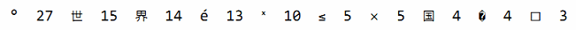
下面是不同UTF-8编码长度的字符的数目：
len count
1 765391
2 60
3 70
4 0
Map的value类型也可以是一个聚合类型，比如是一个map或slice。在下面的代码中，graph 这个 map 的key类型是一个字符串，value类型map[string]bool代表一个字符串集合。从概念上讲，graph将一个字符串类型的key映射到一组相关的字符串集合，它们指向新的graph的key。
gopl.io/ch4/graph
var graph = make(map[string]map[string]bool)
func addEdge(from, to string) {
edges := graph[from]
if edges == nil {
edges = make(map[string]bool)
graph[from] = edges
}
edges[to] = true
}
func hasEdge(from, to string) bool {
return graph[from][to]
}
其中addEdge函数惰性初始化map是一个惯用方式，也就是说在每个值首次作为key时才初始化。hasEdge函数显示了如何让map的零值也能正常工作；即使from到to的边不存在，graph[from][to]依然可以返回一个有意义的结果。
练习 4.8： 修改charcount程序，使用unicode.IsLetter等相关的函数，统计字母、数字等Unicode中不同的字符类别。
练习 4.9： 编写一个程序wordfreq程序，报告输入文本中每个单词出现的频率。在第一次调用Scan前先调用input.Split(bufio.ScanWords)函数，这样可以按单词而不是按行输入。
4.4. 结构体
结构体是一种聚合的数据类型，是由零个或多个任意类型的值聚合成的实体。每个值称为结构体的成员。用结构体的经典案例是处理公司的员工信息，每个员工信息包含一个唯一的员工编号、员工的名字、家庭住址、出生日期、工作岗位、薪资、上级领导等等。所有的这些信息都需要绑定到一个实体中，可以作为一个整体单元被复制，作为函数的参数或返回值，或者是被存储到数组中，等等。
下面两个语句声明了一个叫Employee的命名的结构体类型，并且声明了一个Employee类型的变量dilbert：
type Employee struct {
ID int
Name string
Address string
DoB time.Time
Position string
Salary int
ManagerID int
}
var dilbert Employee
dilbert结构体变量的成员可以通过点操作符访问，比如dilbert.Name和dilbert.DoB。因为dilbert是一个变量，它所有的成员也同样是变量，我们可以直接对每个成员赋值：
dilbert.Salary -= 5000 // demoted, for writing too few lines of code
或者是对成员取地址，然后通过指针访问：
position := &dilbert.Position
*position = "Senior " + *position // promoted, for outsourcing to Elbonia
点操作符也可以和指向结构体的指针一起工作：
var employeeOfTheMonth *Employee = &dilbert
employeeOfTheMonth.Position += " (proactive team player)"
相当于下面语句
(*employeeOfTheMonth).Position += " (proactive team player)"
下面的EmployeeByID函数将根据给定的员工ID返回对应的员工信息结构体的指针。我们可以使用点操作符来访问它里面的成员：
func EmployeeByID(id int) *Employee { /* ... */ }
fmt.Println(EmployeeByID(dilbert.ManagerID).Position) // "Pointy-haired boss"
id := dilbert.ID
EmployeeByID(id).Salary = 0 // fired for... no real reason
后面的语句通过EmployeeByID返回的结构体指针更新了Employee结构体的成员。如果将EmployeeByID函数的返回值从*Employee指针类型改为Employee值类型，那么更新语句将不能编译通过，因为在赋值语句的左边并不确定是一个变量（译注：调用函数返回的是值，并不是一个可取地址的变量）。
通常一行对应一个结构体成员，成员的名字在前类型在后，不过如果相邻的成员类型如果相同的话可以被合并到一行，就像下面的Name和Address成员那样：
type Employee struct {
ID int
Name, Address string
DoB time.Time
Position string
Salary int
ManagerID int
}
结构体成员的输入顺序也有重要的意义。我们也可以将Position成员合并（因为也是字符串类型），或者是交换Name和Address出现的先后顺序，那样的话就是定义了不同的结构体类型。通常，我们只是将相关的成员写到一起。
如果结构体成员名字是以大写字母开头的，那么该成员就是导出的；这是Go语言导出规则决定的。一个结构体可能同时包含导出和未导出的成员。
结构体类型往往是冗长的，因为它的每个成员可能都会占一行。虽然我们每次都可以重写整个结构体成员，但是重复会令人厌烦。因此，完整的结构体写法通常只在类型声明语句的地方出现，就像Employee类型声明语句那样。
一个命名为S的结构体类型将不能再包含S类型的成员：因为一个聚合的值不能包含它自身。（该限制同样适用于数组。）但是S类型的结构体可以包含*S指针类型的成员，这可以让我们创建递归的数据结构，比如链表和树结构等。在下面的代码中，我们使用一个二叉树来实现一个插入排序：
gopl.io/ch4/treesort
type tree struct {
value int
left, right *tree
}
// Sort sorts values in place.
func Sort(values []int) {
var root *tree
for _, v := range values {
root = add(root, v)
}
appendValues(values[:0], root)
}
// appendValues appends the elements of t to values in order
// and returns the resulting slice.
func appendValues(values []int, t *tree) []int {
if t != nil {
values = appendValues(values, t.left)
values = append(values, t.value)
values = appendValues(values, t.right)
}
return values
}
func add(t *tree, value int) *tree {
if t == nil {
// Equivalent to return &tree{value: value}.
t = new(tree)
t.value = value
return t
}
if value < t.value {
t.left = add(t.left, value)
} else {
t.right = add(t.right, value)
}
return t
}
结构体类型的零值是每个成员都是零值。通常会将零值作为最合理的默认值。例如，对于bytes.Buffer类型，结构体初始值就是一个随时可用的空缓存，还有在第9章将会讲到的sync.Mutex的零值也是有效的未锁定状态。有时候这种零值可用的特性是自然获得的，但是也有些类型需要一些额外的工作。
如果结构体没有任何成员的话就是空结构体，写作struct{}。它的大小为0，也不包含任何信息，但是有时候依然是有价值的。有些Go语言程序员用map来模拟set数据结构时，用它来代替map中布尔类型的value，只是强调key的重要性，但是因为节约的空间有限，而且语法比较复杂，所以我们通常会避免这样的用法。
seen := make(map[string]struct{}) // set of strings
// ...
if _, ok := seen[s]; !ok {
seen[s] = struct{}{}
// ...first time seeing s...
}
4.4.1. 结构体字面值
结构体值也可以用结构体字面值表示，结构体字面值可以指定每个成员的值。
type Point struct{ X, Y int }
p := Point{1, 2}
这里有两种形式的结构体字面值语法，上面的是第一种写法，要求以结构体成员定义的顺序为每个结构体成员指定一个字面值。它要求写代码和读代码的人要记住结构体的每个成员的类型和顺序，不过结构体成员有细微的调整就可能导致上述代码不能编译。因此，上述的语法一般只在定义结构体的包内部使用，或者是在较小的结构体中使用，这些结构体的成员排列比较规则，比如image.Point{x, y}或color.RGBA{red, green, blue, alpha}。
其实更常用的是第二种写法，以成员名字和相应的值来初始化，可以包含部分或全部的成员，如1.4节的Lissajous程序的写法：
anim := gif.GIF{LoopCount: nframes}
在这种形式的结构体字面值写法中，如果成员被忽略的话将默认用零值。因为提供了成员的名字，所以成员出现的顺序并不重要。
两种不同形式的写法不能混合使用。而且，你不能企图在外部包中用第一种顺序赋值的技巧来偷偷地初始化结构体中未导出的成员。
package p
type T struct{ a, b int } // a and b are not exported
package q
import "p"
var _ = p.T{a: 1, b: 2} // compile error: can't reference a, b
var _ = p.T{1, 2} // compile error: can't reference a, b
虽然上面最后一行代码的编译错误信息中并没有显式提到未导出的成员，但是这样企图隐式使用未导出成员的行为也是不允许的。
结构体可以作为函数的参数和返回值。例如，这个Scale函数将Point类型的值缩放后返回：
func Scale(p Point, factor int) Point {
return Point{p.X * factor, p.Y * factor}
}
fmt.Println(Scale(Point{1, 2}, 5)) // "{5 10}"
如果考虑效率的话，较大的结构体通常会用指针的方式传入和返回，
func Bonus(e *Employee, percent int) int {
return e.Salary * percent / 100
}
如果要在函数内部修改结构体成员的话，用指针传入是必须的；因为在Go语言中，所有的函数参数都是值拷贝传入的，函数参数将不再是函数调用时的原始变量。
func AwardAnnualRaise(e *Employee) {
e.Salary = e.Salary * 105 / 100
}
因为结构体通常通过指针处理，可以用下面的写法来创建并初始化一个结构体变量，并返回结构体的地址：
pp := &Point{1, 2}
它和下面的语句是等价的
pp := new(Point)
*pp = Point{1, 2}
不过&Point{1, 2}写法可以直接在表达式中使用，比如一个函数调用。
4.4.2. 结构体比较
如果结构体的全部成员都是可以比较的，那么结构体也是可以比较的，那样的话两个结构体将可以使用==或!=运算符进行比较。相等比较运算符==将比较两个结构体的每个成员，因此下面两个比较的表达式是等价的：
type Point struct{ X, Y int }
p := Point{1, 2}
q := Point{2, 1}
fmt.Println(p.X == q.X && p.Y == q.Y) // "false"
fmt.Println(p == q) // "false"
可比较的结构体类型和其他可比较的类型一样，可以用于map的key类型。
type address struct {
hostname string
port int
}
hits := make(map[address]int)
hits[address{"golang.org", 443}]++
4.4.3. 结构体嵌入和匿名成员
在本节中，我们将看到如何使用Go语言提供的不同寻常的结构体嵌入机制让一个命名的结构体包含另一个结构体类型的匿名成员，这样就可以通过简单的点运算符x.f来访问匿名成员链中嵌套的x.d.e.f成员。
考虑一个二维的绘图程序，提供了一个各种图形的库，例如矩形、椭圆形、星形和轮形等几何形状。这里是其中两个的定义：
type Circle struct {
X, Y, Radius int
}
type Wheel struct {
X, Y, Radius, Spokes int
}
一个Circle代表的圆形类型包含了标准圆心的X和Y坐标信息，和一个Radius表示的半径信息。一个Wheel轮形除了包含Circle类型所有的全部成员外，还增加了Spokes表示径向辐条的数量。我们可以这样创建一个wheel变量：
var w Wheel
w.X = 8
w.Y = 8
w.Radius = 5
w.Spokes = 20
随着库中几何形状数量的增多，我们一定会注意到它们之间的相似和重复之处，所以我们可能为了便于维护而将相同的属性独立出来：
type Point struct {
X, Y int
}
type Circle struct {
Center Point
Radius int
}
type Wheel struct {
Circle Circle
Spokes int
}
这样改动之后结构体类型变的清晰了，但是这种修改同时也导致了访问每个成员变得繁琐：
var w Wheel
w.Circle.Center.X = 8
w.Circle.Center.Y = 8
w.Circle.Radius = 5
w.Spokes = 20
Go语言有一个特性让我们只声明一个成员对应的数据类型而不指名成员的名字；这类成员就叫匿名成员。匿名成员的数据类型必须是命名的类型或指向一个命名的类型的指针。下面的代码中，Circle和Wheel各自都有一个匿名成员。我们可以说Point类型被嵌入到了Circle结构体，同时Circle类型被嵌入到了Wheel结构体。
type Circle struct {
Point
Radius int
}
type Wheel struct {
Circle
Spokes int
}
得益于匿名嵌入的特性，我们可以直接访问叶子属性而不需要给出完整的路径：
var w Wheel
w.X = 8 // equivalent to w.Circle.Point.X = 8
w.Y = 8 // equivalent to w.Circle.Point.Y = 8
w.Radius = 5 // equivalent to w.Circle.Radius = 5
w.Spokes = 20
在右边的注释中给出的显式形式访问这些叶子成员的语法依然有效，因此匿名成员并不是真的无法访问了。其中匿名成员Circle和Point都有自己的名字——就是命名的类型名字——但是这些名字在点操作符中是可选的。我们在访问子成员的时候可以忽略任何匿名成员部分。
不幸的是，结构体字面值并没有简短表示匿名成员的语法， 因此下面的语句都不能编译通过：
w = Wheel{8, 8, 5, 20} // compile error: unknown fields
w = Wheel{X: 8, Y: 8, Radius: 5, Spokes: 20} // compile error: unknown fields
结构体字面值必须遵循形状类型声明时的结构，所以我们只能用下面的两种语法，它们彼此是等价的：
gopl.io/ch4/embed
w = Wheel{Circle{Point{8, 8}, 5}, 20}
w = Wheel{
Circle: Circle{
Point: Point{X: 8, Y: 8},
Radius: 5,
},
Spokes: 20, // NOTE: trailing comma necessary here (and at Radius)
}
fmt.Printf("%#v\n", w)
// Output:
// Wheel{Circle:Circle{Point:Point{X:8, Y:8}, Radius:5}, Spokes:20}
w.X = 42
fmt.Printf("%#v\n", w)
// Output:
// Wheel{Circle:Circle{Point:Point{X:42, Y:8}, Radius:5}, Spokes:20}
需要注意的是Printf函数中%v参数包含的#副词，它表示用和Go语言类似的语法打印值。对于结构体类型来说，将包含每个成员的名字。
因为匿名成员也有一个隐式的名字，因此不能同时包含两个类型相同的匿名成员，这会导致名字冲突。同时，因为成员的名字是由其类型隐式地决定的，所以匿名成员也有可见性的规则约束。在上面的例子中，Point和Circle匿名成员都是导出的。即使它们不导出（比如改成小写字母开头的point和circle），我们依然可以用简短形式访问匿名成员嵌套的成员
w.X = 8 // equivalent to w.circle.point.X = 8
但是在包外部，因为circle和point没有导出，不能访问它们的成员，因此简短的匿名成员访问语法也是禁止的。
到目前为止，我们看到匿名成员特性只是对访问嵌套成员的点运算符提供了简短的语法糖。稍后，我们将会看到匿名成员并不要求是结构体类型；其实任何命名的类型都可以作为结构体的匿名成员。但是为什么要嵌入一个没有任何子成员类型的匿名成员类型呢？
答案是匿名类型的方法集。简短的点运算符语法可以用于选择匿名成员嵌套的成员，也可以用于访问它们的方法。实际上，外层的结构体不仅仅是获得了匿名成员类型的所有成员，而且也获得了该类型导出的全部的方法。这个机制可以用于将一些有简单行为的对象组合成有复杂行为的对象。组合是Go语言中面向对象编程的核心，我们将在6.3节中专门讨论。
4.5. JSON
JavaScript对象表示法（JSON）是一种用于发送和接收结构化信息的标准协议。在类似的协议中，JSON并不是唯一的一个标准协议。 XML（§7.14）、ASN.1和Google的Protocol Buffers都是类似的协议，并且有各自的特色，但是由于简洁性、可读性和流行程度等原因，JSON是应用最广泛的一个。
Go语言对于这些标准格式的编码和解码都有良好的支持，由标准库中的encoding/json、encoding/xml、encoding/asn1等包提供支持（译注：Protocol Buffers的支持由 github.com/golang/protobuf 包提供），并且这类包都有着相似的API接口。本节，我们将对重要的encoding/json包的用法做个概述。
JSON是对JavaScript中各种类型的值——字符串、数字、布尔值和对象——Unicode本文编码。它可以用有效可读的方式表示第三章的基础数据类型和本章的数组、slice、结构体和map等聚合数据类型。
基本的JSON类型有数字（十进制或科学记数法）、布尔值（true或false）、字符串，其中字符串是以双引号包含的Unicode字符序列，支持和Go语言类似的反斜杠转义特性，不过JSON使用的是\Uhhhh转义数字来表示一个UTF-16编码（译注：UTF-16和UTF-8一样是一种变长的编码，有些Unicode码点较大的字符需要用4个字节表示；而且UTF-16还有大端和小端的问题），而不是Go语言的rune类型。
这些基础类型可以通过JSON的数组和对象类型进行递归组合。一个JSON数组是一个有序的值序列，写在一个方括号中并以逗号分隔；一个JSON数组可以用于编码Go语言的数组和slice。一个JSON对象是一个字符串到值的映射，写成一系列的name:value对形式，用花括号包含并以逗号分隔；JSON的对象类型可以用于编码Go语言的map类型（key类型是字符串）和结构体。例如：
boolean true
number -273.15
string "She said \"Hello, BF\""
array ["gold", "silver", "bronze"]
object {"year": 1980,
"event": "archery",
"medals": ["gold", "silver", "bronze"]}
考虑一个应用程序，该程序负责收集各种电影评论并提供反馈功能。它的Movie数据类型和一个典型的表示电影的值列表如下所示。（在结构体声明中，Year和Color成员后面的字符串面值是结构体成员Tag；我们稍后会解释它的作用。）
gopl.io/ch4/movie
type Movie struct {
Title string
Year int `json:"released"`
Color bool `json:"color,omitempty"`
Actors []string
}
var movies = []Movie{
{Title: "Casablanca", Year: 1942, Color: false,
Actors: []string{"Humphrey Bogart", "Ingrid Bergman"}},
{Title: "Cool Hand Luke", Year: 1967, Color: true,
Actors: []string{"Paul Newman"}},
{Title: "Bullitt", Year: 1968, Color: true,
Actors: []string{"Steve McQueen", "Jacqueline Bisset"}},
// ...
}
这样的数据结构特别适合JSON格式，并且在两者之间相互转换也很容易。将一个Go语言中类似movies的结构体slice转为JSON的过程叫编组（marshaling）。编组通过调用json.Marshal函数完成：
data, err := json.Marshal(movies)
if err != nil {
log.Fatalf("JSON marshaling failed: %s", err)
}
fmt.Printf("%s\n", data)
Marshal函数返回一个编码后的字节slice，包含很长的字符串，并且没有空白缩进；我们将它折行以便于显示：
[{"Title":"Casablanca","released":1942,"Actors":["Humphrey Bogart","Ingr
id Bergman"]},{"Title":"Cool Hand Luke","released":1967,"color":true,"Ac
tors":["Paul Newman"]},{"Title":"Bullitt","released":1968,"color":true,"
Actors":["Steve McQueen","Jacqueline Bisset"]}]
这种紧凑的表示形式虽然包含了全部的信息，但是很难阅读。为了生成便于阅读的格式，另一个json.MarshalIndent函数将产生整齐缩进的输出。该函数有两个额外的字符串参数用于表示每一行输出的前缀和每一个层级的缩进：
data, err := json.MarshalIndent(movies, "", " ")
if err != nil {
log.Fatalf("JSON marshaling failed: %s", err)
}
fmt.Printf("%s\n", data)
上面的代码将产生这样的输出（译注：在最后一个成员或元素后面并没有逗号分隔符）：
[
{
"Title": "Casablanca",
"released": 1942,
"Actors": [
"Humphrey Bogart",
"Ingrid Bergman"
]
},
{
"Title": "Cool Hand Luke",
"released": 1967,
"color": true,
"Actors": [
"Paul Newman"
]
},
{
"Title": "Bullitt",
"released": 1968,
"color": true,
"Actors": [
"Steve McQueen",
"Jacqueline Bisset"
]
}
]
在编码时，默认使用Go语言结构体的成员名字作为JSON的对象（通过reflect反射技术，我们将在12.6节讨论）。只有导出的结构体成员才会被编码，这也就是我们为什么选择用大写字母开头的成员名称。
细心的读者可能已经注意到，其中Year名字的成员在编码后变成了released，还有Color成员编码后变成了小写字母开头的color。这是因为结构体成员Tag所导致的。一个结构体成员Tag是和在编译阶段关联到该成员的元信息字符串：
Year int `json:"released"`
Color bool `json:"color,omitempty"`
结构体的成员Tag可以是任意的字符串面值，但是通常是一系列用空格分隔的key:"value"键值对序列；因为值中含有双引号字符，因此成员Tag一般用原生字符串面值的形式书写。json开头键名对应的值用于控制encoding/json包的编码和解码的行为，并且encoding/...下面其它的包也遵循这个约定。成员Tag中json对应值的第一部分用于指定JSON对象的名字，比如将Go语言中的TotalCount成员对应到JSON中的total_count对象。Color成员的Tag还带了一个额外的omitempty选项，表示当Go语言结构体成员为空或零值时不生成该JSON对象（这里false为零值）。果然，Casablanca是一个黑白电影，并没有输出Color成员。
编码的逆操作是解码，对应将JSON数据解码为Go语言的数据结构，Go语言中一般叫unmarshaling，通过json.Unmarshal函数完成。下面的代码将JSON格式的电影数据解码为一个结构体slice，结构体中只有Title成员。通过定义合适的Go语言数据结构，我们可以选择性地解码JSON中感兴趣的成员。当Unmarshal函数调用返回，slice将被只含有Title信息的值填充，其它JSON成员将被忽略。
var titles []struct{ Title string }
if err := json.Unmarshal(data, &titles); err != nil {
log.Fatalf("JSON unmarshaling failed: %s", err)
}
fmt.Println(titles) // "[{Casablanca} {Cool Hand Luke} {Bullitt}]"
许多web服务都提供JSON接口，通过HTTP接口发送JSON格式请求并返回JSON格式的信息。为了说明这一点，我们通过Github的issue查询服务来演示类似的用法。首先，我们要定义合适的类型和常量：
gopl.io/ch4/github
// Package github provides a Go API for the GitHub issue tracker.
// See https://developer.github.com/v3/search/#search-issues.
package github
import "time"
const IssuesURL = "https://api.github.com/search/issues"
type IssuesSearchResult struct {
TotalCount int `json:"total_count"`
Items []*Issue
}
type Issue struct {
Number int
HTMLURL string `json:"html_url"`
Title string
State string
User *User
CreatedAt time.Time `json:"created_at"`
Body string // in Markdown format
}
type User struct {
Login string
HTMLURL string `json:"html_url"`
}
和前面一样，即使对应的JSON对象名是小写字母，每个结构体的成员名也是声明为大写字母开头的。因为有些JSON成员名字和Go结构体成员名字并不相同，因此需要Go语言结构体成员Tag来指定对应的JSON名字。同样，在解码的时候也需要做同样的处理，GitHub服务返回的信息比我们定义的要多很多。
SearchIssues函数发出一个HTTP请求，然后解码返回的JSON格式的结果。因为用户提供的查询条件可能包含类似?和&之类的特殊字符，为了避免对URL造成冲突，我们用url.QueryEscape来对查询中的特殊字符进行转义操作。
gopl.io/ch4/github
package github
import (
"encoding/json"
"fmt"
"net/http"
"net/url"
"strings"
)
// SearchIssues queries the GitHub issue tracker.
func SearchIssues(terms []string) (*IssuesSearchResult, error) {
q := url.QueryEscape(strings.Join(terms, " "))
resp, err := http.Get(IssuesURL + "?q=" + q)
if err != nil {
return nil, err
}
// We must close resp.Body on all execution paths.
// (Chapter 5 presents 'defer', which makes this simpler.)
if resp.StatusCode != http.StatusOK {
resp.Body.Close()
return nil, fmt.Errorf("search query failed: %s", resp.Status)
}
var result IssuesSearchResult
if err := json.NewDecoder(resp.Body).Decode(&result); err != nil {
resp.Body.Close()
return nil, err
}
resp.Body.Close()
return &result, nil
}
在早些的例子中，我们使用了json.Unmarshal函数来将JSON格式的字符串解码为字节slice。但是这个例子中，我们使用了基于流式的解码器json.Decoder，它可以从一个输入流解码JSON数据，尽管这不是必须的。如您所料，还有一个针对输出流的json.Encoder编码对象。
我们调用Decode方法来填充变量。这里有多种方法可以格式化结构。下面是最简单的一种，以一个固定宽度打印每个issue，但是在下一节我们将看到如何利用模板来输出复杂的格式。
gopl.io/ch4/issues
// Issues prints a table of GitHub issues matching the search terms.
package main
import (
"fmt"
"log"
"os"
"gopl.io/ch4/github"
)
func main() {
result, err := github.SearchIssues(os.Args[1:])
if err != nil {
log.Fatal(err)
}
fmt.Printf("%d issues:\n", result.TotalCount)
for _, item := range result.Items {
fmt.Printf("#%-5d %9.9s %.55s\n",
item.Number, item.User.Login, item.Title)
}
}
通过命令行参数指定检索条件。下面的命令是查询Go语言项目中和JSON解码相关的问题，还有查询返回的结果：
$ go build gopl.io/ch4/issues
$ ./issues repo:golang/go is:open json decoder
13 issues:
#5680 eaigner encoding/json: set key converter on en/decoder
#6050 gopherbot encoding/json: provide tokenizer
#8658 gopherbot encoding/json: use bufio
#8462 kortschak encoding/json: UnmarshalText confuses json.Unmarshal
#5901 rsc encoding/json: allow override type marshaling
#9812 klauspost encoding/json: string tag not symmetric
#7872 extempora encoding/json: Encoder internally buffers full output
#9650 cespare encoding/json: Decoding gives errPhase when unmarshalin
#6716 gopherbot encoding/json: include field name in unmarshal error me
#6901 lukescott encoding/json, encoding/xml: option to treat unknown fi
#6384 joeshaw encoding/json: encode precise floating point integers u
#6647 btracey x/tools/cmd/godoc: display type kind of each named type
#4237 gjemiller encoding/base64: URLEncoding padding is optional
GitHub的Web服务接口 https://developer.github.com/v3/ 包含了更多的特性。
练习 4.10： 修改issues程序，根据问题的时间进行分类，比如不到一个月的、不到一年的、超过一年。
练习 4.11： 编写一个工具，允许用户在命令行创建、读取、更新和关闭GitHub上的issue，当必要的时候自动打开用户默认的编辑器用于输入文本信息。
练习 4.12： 流行的web漫画服务xkcd也提供了JSON接口。例如，一个 https://xkcd.com/571/info.0.json 请求将返回一个很多人喜爱的571编号的详细描述。下载每个链接（只下载一次）然后创建一个离线索引。编写一个xkcd工具，使用这些离线索引，打印和命令行输入的检索词相匹配的漫画的URL。
练习 4.13： 使用开放电影数据库的JSON服务接口，允许你检索和下载 https://omdbapi.com/ 上电影的名字和对应的海报图像。编写一个poster工具，通过命令行输入的电影名字，下载对应的海报。
4.6. 文本和HTML模板
前面的例子，只是最简单的格式化，使用Printf是完全足够的。但是有时候会需要复杂的打印格式，这时候一般需要将格式化代码分离出来以便更安全地修改。这些功能是由text/template和html/template等模板包提供的，它们提供了一个将变量值填充到一个文本或HTML格式的模板的机制。
一个模板是一个字符串或一个文件，里面包含了一个或多个由双花括号包含的{{action}}对象。大部分的字符串只是按字面值打印，但是对于actions部分将触发其它的行为。每个actions都包含了一个用模板语言书写的表达式，一个action虽然简短但是可以输出复杂的打印值，模板语言包含通过选择结构体的成员、调用函数或方法、表达式控制流if-else语句和range循环语句，还有其它实例化模板等诸多特性。下面是一个简单的模板字符串：
gopl.io/ch4/issuesreport
const templ = `{{.TotalCount}} issues:
{{range .Items}}----------------------------------------
Number: {{.Number}}
User: {{.User.Login}}
Title: {{.Title | printf "%.64s"}}
Age: {{.CreatedAt | daysAgo}} days
{{end}}`
这个模板先打印匹配到的issue总数，然后打印每个issue的编号、创建用户、标题还有存在的时间。对于每一个action，都有一个当前值的概念，对应点操作符，写作“.”。当前值“.”最初被初始化为调用模板时的参数，在当前例子中对应github.IssuesSearchResult类型的变量。模板中{{.TotalCount}}对应action将展开为结构体中TotalCount成员以默认的方式打印的值。模板中{{range .Items}}和{{end}}对应一个循环action，因此它们之间的内容可能会被展开多次，循环每次迭代的当前值对应当前的Items元素的值。
在一个action中，|操作符表示将前一个表达式的结果作为后一个函数的输入，类似于UNIX中管道的概念。在Title这一行的action中，第二个操作是一个printf函数，是一个基于fmt.Sprintf实现的内置函数，所有模板都可以直接使用。对于Age部分，第二个动作是一个叫daysAgo的函数，通过time.Since函数将CreatedAt成员转换为过去的时间长度：
func daysAgo(t time.Time) int {
return int(time.Since(t).Hours() / 24)
}
需要注意的是CreatedAt的参数类型是time.Time，并不是字符串。以同样的方式，我们可以通过定义一些方法来控制字符串的格式化（§2.5），一个类型同样可以定制自己的JSON编码和解码行为。time.Time类型对应的JSON值是一个标准时间格式的字符串。
生成模板的输出需要两个处理步骤。第一步是要分析模板并转为内部表示，然后基于指定的输入执行模板。分析模板部分一般只需要执行一次。下面的代码创建并分析上面定义的模板templ。注意方法调用链的顺序：template.New先创建并返回一个模板；Funcs方法将daysAgo等自定义函数注册到模板中，并返回模板；最后调用Parse函数分析模板。
report, err := template.New("report").
Funcs(template.FuncMap{"daysAgo": daysAgo}).
Parse(templ)
if err != nil {
log.Fatal(err)
}
因为模板通常在编译时就测试好了，如果模板解析失败将是一个致命的错误。template.Must辅助函数可以简化这个致命错误的处理：它接受一个模板和一个error类型的参数，检测error是否为nil（如果不是nil则发出panic异常），然后返回传入的模板。我们将在5.9节再讨论这个话题。
一旦模板已经创建、注册了daysAgo函数、并通过分析和检测，我们就可以使用github.IssuesSearchResult作为输入源、os.Stdout作为输出源来执行模板：
var report = template.Must(template.New("issuelist").
Funcs(template.FuncMap{"daysAgo": daysAgo}).
Parse(templ))
func main() {
result, err := github.SearchIssues(os.Args[1:])
if err != nil {
log.Fatal(err)
}
if err := report.Execute(os.Stdout, result); err != nil {
log.Fatal(err)
}
}
程序输出一个纯文本报告：
$ go build gopl.io/ch4/issuesreport
$ ./issuesreport repo:golang/go is:open json decoder
13 issues:
----------------------------------------
Number: 5680
User: eaigner
Title: encoding/json: set key converter on en/decoder
Age: 750 days
----------------------------------------
Number: 6050
User: gopherbot
Title: encoding/json: provide tokenizer
Age: 695 days
----------------------------------------
...
现在让我们转到html/template模板包。它使用和text/template包相同的API和模板语言，但是增加了一个将字符串自动转义特性，这可以避免输入字符串和HTML、JavaScript、CSS或URL语法产生冲突的问题。这个特性还可以避免一些长期存在的安全问题，比如通过生成HTML注入攻击，通过构造一个含有恶意代码的问题标题，这些都可能让模板输出错误的输出，从而让他们控制页面。
下面的模板以HTML格式输出issue列表。注意import语句的不同：
gopl.io/ch4/issueshtml
import "html/template"
var issueList = template.Must(template.New("issuelist").Parse(`
<h1>{{.TotalCount}} issues</h1>
<table>
<tr style='text-align: left'>
<th>#</th>
<th>State</th>
<th>User</th>
<th>Title</th>
</tr>
{{range .Items}}
<tr>
<td><a href='{{.HTMLURL}}'>{{.Number}}</a></td>
<td>{{.State}}</td>
<td><a href='{{.User.HTMLURL}}'>{{.User.Login}}</a></td>
<td><a href='{{.HTMLURL}}'>{{.Title}}</a></td>
</tr>
{{end}}
</table>
`))
下面的命令将在新的模板上执行一个稍微不同的查询：
$ go build gopl.io/ch4/issueshtml
$ ./issueshtml repo:golang/go commenter:gopherbot json encoder >issues.html
图4.4显示了在web浏览器中的效果图。每个issue包含到Github对应页面的链接。
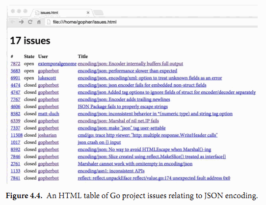
图4.4中issue没有包含会对HTML格式产生冲突的特殊字符，但是我们马上将看到标题中含有&和<字符的issue。下面的命令选择了两个这样的issue：
$ ./issueshtml repo:golang/go 3133 10535 >issues2.html
图4.5显示了该查询的结果。注意，html/template包已经自动将特殊字符转义，因此我们依然可以看到正确的字面值。如果我们使用text/template包的话，这2个issue将会产生错误，其中“<”四个字符将会被当作小于字符“<”处理，同时“<link>”字符串将会被当作一个链接元素处理，它们都会导致HTML文档结构的改变，从而导致有未知的风险。
我们也可以通过对信任的HTML字符串使用template.HTML类型来抑制这种自动转义的行为。还有很多采用类型命名的字符串类型分别对应信任的JavaScript、CSS和URL。下面的程序演示了两个使用不同类型的相同字符串产生的不同结果：A是一个普通字符串，B是一个信任的template.HTML字符串类型。
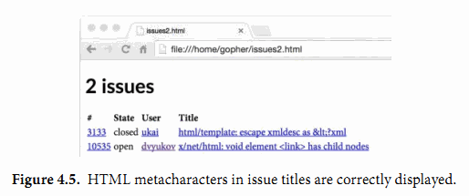
gopl.io/ch4/autoescape
func main() {
const templ = `<p>A: {{.A}}</p><p>B: {{.B}}</p>`
t := template.Must(template.New("escape").Parse(templ))
var data struct {
A string // untrusted plain text
B template.HTML // trusted HTML
}
data.A = "<b>Hello!</b>"
data.B = "<b>Hello!</b>"
if err := t.Execute(os.Stdout, data); err != nil {
log.Fatal(err)
}
}
图4.6显示了出现在浏览器中的模板输出。我们看到A的黑体标记被转义失效了，但是B没有。
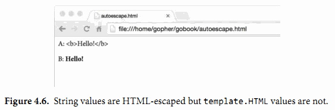
我们这里只讲述了模板系统中最基本的特性。一如既往，如果想了解更多的信息，请自己查看包文档：
$ go doc text/template
$ go doc html/template
练习 4.14： 创建一个web服务器，查询一次GitHub，然后生成BUG报告、里程碑和对应的用户信息。
第5章 函数
函数可以让我们将一个语句序列打包为一个单元，然后可以从程序中其它地方多次调用。函数的机制可以让我们将一个大的工作分解为小的任务，这样的小任务可以让不同程序员在不同时间、不同地方独立完成。一个函数同时对用户隐藏了其实现细节。由于这些因素，对于任何编程语言来说，函数都是一个至关重要的部分。
我们已经见过许多函数了。现在，让我们多花一点时间来彻底地讨论函数特性。本章的运行示例是一个网络蜘蛛，也就是web搜索引擎中负责抓取网页部分的组件，它们根据抓取网页中的链接继续抓取链接指向的页面。一个网络蜘蛛的例子给我们足够的机会去探索递归函数、匿名函数、错误处理和函数其它的很多特性。
5.1. 函数声明
函数声明包括函数名、形式参数列表、返回值列表（可省略）以及函数体。
func name(parameter-list) (result-list) {
body
}
形式参数列表描述了函数的参数名以及参数类型。这些参数作为局部变量，其值由参数调用者提供。返回值列表描述了函数返回值的变量名以及类型。如果函数返回一个无名变量或者没有返回值，返回值列表的括号是可以省略的。如果一个函数声明不包括返回值列表，那么函数体执行完毕后，不会返回任何值。在hypot函数中：
func hypot(x, y float64) float64 {
return math.Sqrt(x*x + y*y)
}
fmt.Println(hypot(3,4)) // "5"
x和y是形参名，3和4是调用时的传入的实参，函数返回了一个float64类型的值。 返回值也可以像形式参数一样被命名。在这种情况下，每个返回值被声明成一个局部变量，并根据该返回值的类型，将其初始化为该类型的零值。 如果一个函数在声明时，包含返回值列表，该函数必须以 return语句结尾，除非函数明显无法运行到结尾处。例如函数在结尾时调用了panic异常或函数中存在无限循环。
正如hypot一样，如果一组形参或返回值有相同的类型，我们不必为每个形参都写出参数类型。下面2个声明是等价的：
func f(i, j, k int, s, t string) { /* ... */ }
func f(i int, j int, k int, s string, t string) { /* ... */ }
下面，我们给出4种方法声明拥有2个int型参数和1个int型返回值的函数.blank identifier(译者注：即下文的_符号)可以强调某个参数未被使用。
func add(x int, y int) int {return x + y}
func sub(x, y int) (z int) { z = x - y; return}
func first(x int, _ int) int { return x }
func zero(int, int) int { return 0 }
fmt.Printf("%T\n", add) // "func(int, int) int"
fmt.Printf("%T\n", sub) // "func(int, int) int"
fmt.Printf("%T\n", first) // "func(int, int) int"
fmt.Printf("%T\n", zero) // "func(int, int) int"
函数的类型被称为函数的签名。如果两个函数形式参数列表和返回值列表中的变量类型一一对应，那么这两个函数被认为有相同的类型或签名。形参和返回值的变量名不影响函数签名，也不影响它们是否可以以省略参数类型的形式表示。
每一次函数调用都必须按照声明顺序为所有参数提供实参（参数值）。在函数调用时，Go语言没有默认参数值，也没有任何方法可以通过参数名指定形参，因此形参和返回值的变量名对于函数调用者而言没有意义。
在函数体中，函数的形参作为局部变量，被初始化为调用者提供的值。函数的形参和有名返回值作为函数最外层的局部变量，被存储在相同的词法块中。
实参通过值的方式传递，因此函数的形参是实参的拷贝。对形参进行修改不会影响实参。但是，如果实参包括引用类型，如指针，slice(切片)、map、function、channel等类型，实参可能会由于函数的间接引用被修改。
你可能会偶尔遇到没有函数体的函数声明，这表示该函数不是以Go实现的。这样的声明定义了函数签名。
package math
func Sin(x float64) float //implemented in assembly language
5.2. 递归
函数可以是递归的，这意味着函数可以直接或间接的调用自身。对许多问题而言，递归是一种强有力的技术，例如处理递归的数据结构。在4.4节，我们通过遍历二叉树来实现简单的插入排序，在本章节，我们再次使用它来处理HTML文件。
下文的示例代码使用了非标准包 golang.org/x/net/html ，解析HTML。golang.org/x/... 目录下存储了一些由Go团队设计、维护，对网络编程、国际化文件处理、移动平台、图像处理、加密解密、开发者工具提供支持的扩展包。未将这些扩展包加入到标准库原因有二，一是部分包仍在开发中，二是对大多数Go语言的开发者而言，扩展包提供的功能很少被使用。
例子中调用golang.org/x/net/html的部分api如下所示。html.Parse函数读入一组bytes解析后，返回html.Node类型的HTML页面树状结构根节点。HTML拥有很多类型的结点如text（文本）、commnets（注释）类型，在下面的例子中，我们 只关注< name key='value' >形式的结点。
golang.org/x/net/html
package html
type Node struct {
Type NodeType
Data string
Attr []Attribute
FirstChild, NextSibling *Node
}
type NodeType int32
const (
ErrorNode NodeType = iota
TextNode
DocumentNode
ElementNode
CommentNode
DoctypeNode
)
type Attribute struct {
Key, Val string
}
func Parse(r io.Reader) (*Node, error)
main函数解析HTML标准输入，通过递归函数visit获得links（链接），并打印出这些links：
gopl.io/ch5/findlinks1
// Findlinks1 prints the links in an HTML document read from standard input.
package main
import (
"fmt"
"os"
"golang.org/x/net/html"
)
func main() {
doc, err := html.Parse(os.Stdin)
if err != nil {
fmt.Fprintf(os.Stderr, "findlinks1: %v\n", err)
os.Exit(1)
}
for _, link := range visit(nil, doc) {
fmt.Println(link)
}
}
visit函数遍历HTML的节点树，从每一个anchor元素的href属性获得link,将这些links存入字符串数组中，并返回这个字符串数组。
// visit appends to links each link found in n and returns the result.
func visit(links []string, n *html.Node) []string {
if n.Type == html.ElementNode && n.Data == "a" {
for _, a := range n.Attr {
if a.Key == "href" {
links = append(links, a.Val)
}
}
}
for c := n.FirstChild; c != nil; c = c.NextSibling {
links = visit(links, c)
}
return links
}
为了遍历结点n的所有后代结点，每次遇到n的孩子结点时，visit递归的调用自身。这些孩子结点存放在FirstChild链表中。
让我们以Go的主页（golang.org）作为目标，运行findlinks。我们以fetch（1.5章）的输出作为findlinks的输入。下面的输出做了简化处理。
$ go build gopl.io/ch1/fetch
$ go build gopl.io/ch5/findlinks1
$ ./fetch https://golang.org | ./findlinks1
#
/doc/
/pkg/
/help/
/blog/
http://play.golang.org/
//tour.golang.org/
https://golang.org/dl/
//blog.golang.org/
/LICENSE
/doc/tos.html
http://www.google.com/intl/en/policies/privacy/
注意在页面中出现的链接格式，在之后我们会介绍如何将这些链接，根据根路径（ https://golang.org ）生成可以直接访问的url。
在函数outline中，我们通过递归的方式遍历整个HTML结点树，并输出树的结构。在outline内部，每遇到一个HTML元素标签，就将其入栈，并输出。
gopl.io/ch5/outline
func main() {
doc, err := html.Parse(os.Stdin)
if err != nil {
fmt.Fprintf(os.Stderr, "outline: %v\n", err)
os.Exit(1)
}
outline(nil, doc)
}
func outline(stack []string, n *html.Node) {
if n.Type == html.ElementNode {
stack = append(stack, n.Data) // push tag
fmt.Println(stack)
}
for c := n.FirstChild; c != nil; c = c.NextSibling {
outline(stack, c)
}
}
有一点值得注意：outline有入栈操作，但没有相对应的出栈操作。当outline调用自身时，被调用者接收的是stack的拷贝。被调用者对stack的元素追加操作，修改的是stack的拷贝，其可能会修改slice底层的数组甚至是申请一块新的内存空间进行扩容；但这个过程并不会修改调用方的stack。因此当函数返回时，调用方的stack与其调用自身之前完全一致。
下面是 https://golang.org 页面的简要结构:
$ go build gopl.io/ch5/outline
$ ./fetch https://golang.org | ./outline
[html]
[html head]
[html head meta]
[html head title]
[html head link]
[html body]
[html body div]
[html body div]
[html body div div]
[html body div div form]
[html body div div form div]
[html body div div form div a]
...
正如你在上面实验中所见，大部分HTML页面只需几层递归就能被处理，但仍然有些页面需要深层次的递归。
大部分编程语言使用固定大小的函数调用栈，常见的大小从64KB到2MB不等。固定大小栈会限制递归的深度，当你用递归处理大量数据时，需要避免栈溢出；除此之外，还会导致安全性问题。与此相反，Go语言使用可变栈，栈的大小按需增加（初始时很小）。这使得我们使用递归时不必考虑溢出和安全问题。
练习 5.1： 修改findlinks代码中遍历n.FirstChild链表的部分，将循环调用visit，改成递归调用。
练习 5.2： 编写函数，记录在HTML树中出现的同名元素的次数。
练习 5.3： 编写函数输出所有text结点的内容。注意不要访问<script>和<style>元素，因为这些元素对浏览者是不可见的。
练习 5.4： 扩展visit函数，使其能够处理其他类型的结点，如images、scripts和style sheets。
5.3. 多返回值
在Go中，一个函数可以返回多个值。我们已经在之前例子中看到，许多标准库中的函数返回2个值，一个是期望得到的返回值，另一个是函数出错时的错误信息。下面的例子会展示如何编写多返回值的函数。
下面的程序是findlinks的改进版本。修改后的findlinks可以自己发起HTTP请求，这样我们就不必再运行fetch。因为HTTP请求和解析操作可能会失败，因此findlinks声明了2个返回值：链接列表和错误信息。一般而言，HTML的解析器可以处理HTML页面的错误结点，构造出HTML页面结构，所以解析HTML很少失败。这意味着如果findlinks函数失败了，很可能是由于I/O的错误导致的。
gopl.io/ch5/findlinks2
func main() {
for _, url := range os.Args[1:] {
links, err := findLinks(url)
if err != nil {
fmt.Fprintf(os.Stderr, "findlinks2: %v\n", err)
continue
}
for _, link := range links {
fmt.Println(link)
}
}
}
// findLinks performs an HTTP GET request for url, parses the
// response as HTML, and extracts and returns the links.
func findLinks(url string) ([]string, error) {
resp, err := http.Get(url)
if err != nil {
return nil, err
}
if resp.StatusCode != http.StatusOK {
resp.Body.Close()
return nil, fmt.Errorf("getting %s: %s", url, resp.Status)
}
doc, err := html.Parse(resp.Body)
resp.Body.Close()
if err != nil {
return nil, fmt.Errorf("parsing %s as HTML: %v", url, err)
}
return visit(nil, doc), nil
}
在findlinks中，有4处return语句，每一处return都返回了一组值。前三处return，将http和html包中的错误信息传递给findlinks的调用者。第一处return直接返回错误信息，其他两处通过fmt.Errorf（§7.8）输出详细的错误信息。如果findlinks成功结束，最后的return语句将一组解析获得的连接返回给用户。
在findlinks中，我们必须确保resp.Body被关闭，释放网络资源。虽然Go的垃圾回收机制会回收不被使用的内存，但是这不包括操作系统层面的资源，比如打开的文件、网络连接。因此我们必须显式的释放这些资源。
调用多返回值函数时，返回给调用者的是一组值，调用者必须显式的将这些值分配给变量:
links, err := findLinks(url)
如果某个值不被使用，可以将其分配给blank identifier:
links, _ := findLinks(url) // errors ignored
一个函数内部可以将另一个有多返回值的函数调用作为返回值，下面的例子展示了与findLinks有相同功能的函数，两者的区别在于下面的例子先输出参数：
func findLinksLog(url string) ([]string, error) {
log.Printf("findLinks %s", url)
return findLinks(url)
}
当你调用接受多参数的函数时，可以将一个返回多参数的函数调用作为该函数的参数。虽然这很少出现在实际生产代码中，但这个特性在debug时很方便，我们只需要一条语句就可以输出所有的返回值。下面的代码是等价的：
log.Println(findLinks(url))
links, err := findLinks(url)
log.Println(links, err)
准确的变量名可以传达函数返回值的含义。尤其在返回值的类型都相同时，就像下面这样：
func Size(rect image.Rectangle) (width, height int)
func Split(path string) (dir, file string)
func HourMinSec(t time.Time) (hour, minute, second int)
虽然良好的命名很重要，但你也不必为每一个返回值都取一个适当的名字。比如，按照惯例，函数的最后一个bool类型的返回值表示函数是否运行成功，error类型的返回值代表函数的错误信息，对于这些类似的惯例，我们不必思考合适的命名，它们都无需解释。
如果一个函数所有的返回值都有显式的变量名，那么该函数的return语句可以省略操作数。这称之为bare return。
// CountWordsAndImages does an HTTP GET request for the HTML
// document url and returns the number of words and images in it.
func CountWordsAndImages(url string) (words, images int, err error) {
resp, err := http.Get(url)
if err != nil {
return
}
doc, err := html.Parse(resp.Body)
resp.Body.Close()
if err != nil {
err = fmt.Errorf("parsing HTML: %s", err)
return
}
words, images = countWordsAndImages(doc)
return
}
func countWordsAndImages(n *html.Node) (words, images int) { /* ... */ }
按照返回值列表的次序，返回所有的返回值，在上面的例子中，每一个return语句等价于：
return words, images, err
当一个函数有多处return语句以及许多返回值时，bare return 可以减少代码的重复，但是使得代码难以被理解。举个例子，如果你没有仔细的审查代码，很难发现前2处return等价于 return 0,0,err（Go会将返回值 words和images在函数体的开始处，根据它们的类型，将其初始化为0），最后一处return等价于 return words, image, nil。基于以上原因，不宜过度使用bare return。
练习 5.5： 实现countWordsAndImages。（参考练习4.9如何分词）
练习 5.6： 修改gopl.io/ch3/surface（§3.2）中的corner函数，将返回值命名，并使用bare return。
5.4. 错误
在Go中有一部分函数总是能成功的运行。比如strings.Contains和strconv.FormatBool函数，对各种可能的输入都做了良好的处理，使得运行时几乎不会失败，除非遇到灾难性的、不可预料的情况，比如运行时的内存溢出。导致这种错误的原因很复杂，难以处理，从错误中恢复的可能性也很低。
还有一部分函数只要输入的参数满足一定条件，也能保证运行成功。比如time.Date函数，该函数将年月日等参数构造成time.Time对象，除非最后一个参数（时区）是nil。这种情况下会引发panic异常。panic是来自被调用函数的信号，表示发生了某个已知的bug。一个良好的程序永远不应该发生panic异常。
对于大部分函数而言，永远无法确保能否成功运行。这是因为错误的原因超出了程序员的控制。举个例子，任何进行I/O操作的函数都会面临出现错误的可能，只有没有经验的程序员才会相信读写操作不会失败，即使是简单的读写。因此，当本该可信的操作出乎意料的失败后，我们必须弄清楚导致失败的原因。
在Go的错误处理中，错误是软件包API和应用程序用户界面的一个重要组成部分，程序运行失败仅被认为是几个预期的结果之一。
对于那些将运行失败看作是预期结果的函数，它们会返回一个额外的返回值，通常是最后一个，来传递错误信息。如果导致失败的原因只有一个，额外的返回值可以是一个布尔值，通常被命名为ok。比如，cache.Lookup失败的唯一原因是key不存在，那么代码可以按照下面的方式组织：
value, ok := cache.Lookup(key)
if !ok {
// ...cache[key] does not exist…
}
通常，导致失败的原因不止一种，尤其是对I/O操作而言，用户需要了解更多的错误信息。因此，额外的返回值不再是简单的布尔类型，而是error类型。
内置的error是接口类型。我们将在第七章了解接口类型的含义，以及它对错误处理的影响。现在我们只需要明白error类型可能是nil或者non-nil。nil意味着函数运行成功，non-nil表示失败。对于non-nil的error类型，我们可以通过调用error的Error函数或者输出函数获得字符串类型的错误信息。
fmt.Println(err)
fmt.Printf("%v", err)
通常，当函数返回non-nil的error时，其他的返回值是未定义的（undefined），这些未定义的返回值应该被忽略。然而，有少部分函数在发生错误时，仍然会返回一些有用的返回值。比如，当读取文件发生错误时，Read函数会返回可以读取的字节数以及错误信息。对于这种情况，正确的处理方式应该是先处理这些不完整的数据，再处理错误。因此对函数的返回值要有清晰的说明，以便于其他人使用。
在Go中，函数运行失败时会返回错误信息，这些错误信息被认为是一种预期的值而非异常（exception），这使得Go有别于那些将函数运行失败看作是异常的语言。虽然Go有各种异常机制，但这些机制仅被使用在处理那些未被预料到的错误，即bug，而不是那些在健壮程序中应该被避免的程序错误。对于Go的异常机制我们将在5.9介绍。
Go这样设计的原因是由于对于某个应该在控制流程中处理的错误而言，将这个错误以异常的形式抛出会混乱对错误的描述，这通常会导致一些糟糕的后果。当某个程序错误被当作异常处理后，这个错误会将堆栈跟踪信息返回给终端用户，这些信息复杂且无用，无法帮助定位错误。
正因此，Go使用控制流机制（如if和return）处理错误，这使得编码人员能更多的关注错误处理。
5.4.1. 错误处理策略
当一次函数调用返回错误时，调用者应该选择合适的方式处理错误。根据情况的不同，有很多处理方式，让我们来看看常用的五种方式。
首先，也是最常用的方式是传播错误。这意味着函数中某个子程序的失败，会变成该函数的失败。下面，我们以5.3节的findLinks函数作为例子。如果findLinks对http.Get的调用失败，findLinks会直接将这个HTTP错误返回给调用者：
resp, err := http.Get(url)
if err != nil{
return nil, err
}
当对html.Parse的调用失败时，findLinks不会直接返回html.Parse的错误，因为缺少两条重要信息：1、发生错误时的解析器（html parser）；2、发生错误的url。因此，findLinks构造了一个新的错误信息，既包含了这两项，也包括了底层的解析出错的信息。
doc, err := html.Parse(resp.Body)
resp.Body.Close()
if err != nil {
return nil, fmt.Errorf("parsing %s as HTML: %v", url,err)
}
fmt.Errorf函数使用fmt.Sprintf格式化错误信息并返回。我们使用该函数添加额外的前缀上下文信息到原始错误信息。当错误最终由main函数处理时，错误信息应提供清晰的从原因到后果的因果链，就像美国宇航局事故调查时做的那样：
genesis: crashed: no parachute: G-switch failed: bad relay orientation
由于错误信息经常是以链式组合在一起的，所以错误信息中应避免大写和换行符。最终的错误信息可能很长，我们可以通过类似grep的工具处理错误信息（译者注：grep是一种文本搜索工具）。
编写错误信息时，我们要确保错误信息对问题细节的描述是详尽的。尤其是要注意错误信息表达的一致性，即相同的函数或同包内的同一组函数返回的错误在构成和处理方式上是相似的。
以os包为例，os包确保文件操作（如os.Open、Read、Write、Close）返回的每个错误的描述不仅仅包含错误的原因（如无权限，文件目录不存在）也包含文件名，这样调用者在构造新的错误信息时无需再添加这些信息。
一般而言，被调用函数f(x)会将调用信息和参数信息作为发生错误时的上下文放在错误信息中并返回给调用者，调用者需要添加一些错误信息中不包含的信息，比如添加url到html.Parse返回的错误中。
让我们来看看处理错误的第二种策略。如果错误的发生是偶然性的，或由不可预知的问题导致的。一个明智的选择是重新尝试失败的操作。在重试时，我们需要限制重试的时间间隔或重试的次数，防止无限制的重试。
gopl.io/ch5/wait
// WaitForServer attempts to contact the server of a URL.
// It tries for one minute using exponential back-off.
// It reports an error if all attempts fail.
func WaitForServer(url string) error {
const timeout = 1 * time.Minute
deadline := time.Now().Add(timeout)
for tries := 0; time.Now().Before(deadline); tries++ {
_, err := http.Head(url)
if err == nil {
return nil // success
}
log.Printf("server not responding (%s);retrying…", err)
time.Sleep(time.Second << uint(tries)) // exponential back-off
}
return fmt.Errorf("server %s failed to respond after %s", url, timeout)
}
如果错误发生后，程序无法继续运行，我们就可以采用第三种策略：输出错误信息并结束程序。需要注意的是，这种策略只应在main中执行。对库函数而言，应仅向上传播错误，除非该错误意味着程序内部包含不一致性，即遇到了bug，才能在库函数中结束程序。
// (In function main.)
if err := WaitForServer(url); err != nil {
fmt.Fprintf(os.Stderr, "Site is down: %v\n", err)
os.Exit(1)
}
调用log.Fatalf可以更简洁的代码达到与上文相同的效果。log中的所有函数，都默认会在错误信息之前输出时间信息。
if err := WaitForServer(url); err != nil {
log.Fatalf("Site is down: %v\n", err)
}
长时间运行的服务器常采用默认的时间格式，而交互式工具很少采用包含如此多信息的格式。
2006/01/02 15:04:05 Site is down: no such domain:
bad.gopl.io
我们可以设置log的前缀信息屏蔽时间信息，一般而言，前缀信息会被设置成命令名。
log.SetPrefix("wait: ")
log.SetFlags(0)
第四种策略：有时，我们只需要输出错误信息就足够了，不需要中断程序的运行。我们可以通过log包提供函数
if err := Ping(); err != nil {
log.Printf("ping failed: %v; networking disabled",err)
}
或者标准错误流输出错误信息。
if err := Ping(); err != nil {
fmt.Fprintf(os.Stderr, "ping failed: %v; networking disabled\n", err)
}
log包中的所有函数会为没有换行符的字符串增加换行符。
第五种，也是最后一种策略：我们可以直接忽略掉错误。
dir, err := ioutil.TempDir("", "scratch")
if err != nil {
return fmt.Errorf("failed to create temp dir: %v",err)
}
// ...use temp dir…
os.RemoveAll(dir) // ignore errors; $TMPDIR is cleaned periodically
尽管os.RemoveAll会失败，但上面的例子并没有做错误处理。这是因为操作系统会定期的清理临时目录。正因如此，虽然程序没有处理错误，但程序的逻辑不会因此受到影响。我们应该在每次函数调用后，都养成考虑错误处理的习惯，当你决定忽略某个错误时，你应该清晰地写下你的意图。
在Go中，错误处理有一套独特的编码风格。检查某个子函数是否失败后，我们通常将处理失败的逻辑代码放在处理成功的代码之前。如果某个错误会导致函数返回，那么成功时的逻辑代码不应放在else语句块中，而应直接放在函数体中。Go中大部分函数的代码结构几乎相同，首先是一系列的初始检查，防止错误发生，之后是函数的实际逻辑。
5.4.2. 文件结尾错误（EOF）
函数经常会返回多种错误，这对终端用户来说可能会很有趣，但对程序而言，这使得情况变得复杂。很多时候，程序必须根据错误类型，作出不同的响应。让我们考虑这样一个例子：从文件中读取n个字节。如果n等于文件的长度，读取过程的任何错误都表示失败。如果n小于文件的长度，调用者会重复的读取固定大小的数据直到文件结束。这会导致调用者必须分别处理由文件结束引起的各种错误。基于这样的原因，io包保证任何由文件结束引起的读取失败都返回同一个错误——io.EOF，该错误在io包中定义：
package io
import "errors"
// EOF is the error returned by Read when no more input is available.
var EOF = errors.New("EOF")
调用者只需通过简单的比较，就可以检测出这个错误。下面的例子展示了如何从标准输入中读取字符，以及判断文件结束。（4.3的chartcount程序展示了更加复杂的代码）
in := bufio.NewReader(os.Stdin)
for {
r, _, err := in.ReadRune()
if err == io.EOF {
break // finished reading
}
if err != nil {
return fmt.Errorf("read failed:%v", err)
}
// ...use r…
}
因为文件结束这种错误不需要更多的描述，所以io.EOF有固定的错误信息——“EOF”。对于其他错误，我们可能需要在错误信息中描述错误的类型和数量，这使得我们不能像io.EOF一样采用固定的错误信息。在7.11节中，我们会提出更系统的方法区分某些固定的错误值。
5.5. 函数值
在Go中，函数被看作第一类值（first-class values）：函数像其他值一样，拥有类型，可以被赋值给其他变量，传递给函数，从函数返回。对函数值（function value）的调用类似函数调用。例子如下：
func square(n int) int { return n * n }
func negative(n int) int { return -n }
func product(m, n int) int { return m * n }
f := square
fmt.Println(f(3)) // "9"
f = negative
fmt.Println(f(3)) // "-3"
fmt.Printf("%T\n", f) // "func(int) int"
f = product // compile error: can't assign func(int, int) int to func(int) int
函数类型的零值是nil。调用值为nil的函数值会引起panic错误：
var f func(int) int
f(3) // 此处f的值为nil, 会引起panic错误
函数值可以与nil比较：
var f func(int) int
if f != nil {
f(3)
}
但是函数值之间是不可比较的，也不能用函数值作为map的key。
函数值使得我们不仅仅可以通过数据来参数化函数，亦可通过行为。标准库中包含许多这样的例子。下面的代码展示了如何使用这个技巧。strings.Map对字符串中的每个字符调用add1函数，并将每个add1函数的返回值组成一个新的字符串返回给调用者。
func add1(r rune) rune { return r + 1 }
fmt.Println(strings.Map(add1, "HAL-9000")) // "IBM.:111"
fmt.Println(strings.Map(add1, "VMS")) // "WNT"
fmt.Println(strings.Map(add1, "Admix")) // "Benjy"
5.2节的findLinks函数使用了辅助函数visit，遍历和操作了HTML页面的所有结点。使用函数值，我们可以将遍历结点的逻辑和操作结点的逻辑分离，使得我们可以复用遍历的逻辑，从而对结点进行不同的操作。
gopl.io/ch5/outline2
// forEachNode针对每个结点x，都会调用pre(x)和post(x)。
// pre和post都是可选的。
// 遍历孩子结点之前，pre被调用
// 遍历孩子结点之后，post被调用
func forEachNode(n *html.Node, pre, post func(n *html.Node)) {
if pre != nil {
pre(n)
}
for c := n.FirstChild; c != nil; c = c.NextSibling {
forEachNode(c, pre, post)
}
if post != nil {
post(n)
}
}
该函数接收2个函数作为参数，分别在结点的孩子被访问前和访问后调用。这样的设计给调用者更大的灵活性。举个例子，现在我们有startElement和endElement两个函数用于输出HTML元素的开始标签和结束标签<b>...</b>：
var depth int
func startElement(n *html.Node) {
if n.Type == html.ElementNode {
fmt.Printf("%*s<%s>\n", depth*2, "", n.Data)
depth++
}
}
func endElement(n *html.Node) {
if n.Type == html.ElementNode {
depth--
fmt.Printf("%*s</%s>\n", depth*2, "", n.Data)
}
}
上面的代码利用fmt.Printf的一个小技巧控制输出的缩进。%*s中的*会在字符串之前填充一些空格。在例子中，每次输出会先填充depth*2数量的空格，再输出""，最后再输出HTML标签。
如果我们像下面这样调用forEachNode：
forEachNode(doc, startElement, endElement)
与之前的outline程序相比，我们得到了更加详细的页面结构：
$ go build gopl.io/ch5/outline2
$ ./outline2 http://gopl.io
<html>
<head>
<meta>
</meta>
<title>
</title>
<style>
</style>
</head>
<body>
<table>
<tbody>
<tr>
<td>
<a>
<img>
</img>
...
练习 5.7： 完善startElement和endElement函数，使其成为通用的HTML输出器。要求：输出注释结点，文本结点以及每个元素的属性（< a href='...'>）。使用简略格式输出没有孩子结点的元素（即用<img/>代替<img></img>）。编写测试，验证程序输出的格式正确。（详见11章）
练习 5.8： 修改pre和post函数，使其返回布尔类型的返回值。返回false时，中止forEachNoded的遍历。使用修改后的代码编写ElementByID函数，根据用户输入的id查找第一个拥有该id元素的HTML元素，查找成功后，停止遍历。
func ElementByID(doc *html.Node, id string) *html.Node
练习 5.9： 编写函数expand，将s中的"foo"替换为f("foo")的返回值。
func expand(s string, f func(string) string) string
5.6. 匿名函数
拥有函数名的函数只能在包级语法块中被声明，通过函数字面量（function literal），我们可绕过这一限制，在任何表达式中表示一个函数值。函数字面量的语法和函数声明相似，区别在于func关键字后没有函数名。函数值字面量是一种表达式，它的值被称为匿名函数（anonymous function）。
函数字面量允许我们在使用函数时，再定义它。通过这种技巧，我们可以改写之前对strings.Map的调用：
strings.Map(func(r rune) rune { return r + 1 }, "HAL-9000")
更为重要的是，通过这种方式定义的函数可以访问完整的词法环境（lexical environment），这意味着在函数中定义的内部函数可以引用该函数的变量，如下例所示：
gopl.io/ch5/squares
// squares返回一个匿名函数。
// 该匿名函数每次被调用时都会返回下一个数的平方。
func squares() func() int {
var x int
return func() int {
x++
return x * x
}
}
func main() {
f := squares()
fmt.Println(f()) // "1"
fmt.Println(f()) // "4"
fmt.Println(f()) // "9"
fmt.Println(f()) // "16"
}
函数squares返回另一个类型为 func() int 的函数。对squares的一次调用会生成一个局部变量x并返回一个匿名函数。每次调用匿名函数时，该函数都会先使x的值加1，再返回x的平方。第二次调用squares时，会生成第二个x变量，并返回一个新的匿名函数。新匿名函数操作的是第二个x变量。
squares的例子证明，函数值不仅仅是一串代码，还记录了状态。在squares中定义的匿名内部函数可以访问和更新squares中的局部变量，这意味着匿名函数和squares中，存在变量引用。这就是函数值属于引用类型和函数值不可比较的原因。Go使用闭包（closures）技术实现函数值，Go程序员也把函数值叫做闭包。
通过这个例子，我们看到变量的生命周期不由它的作用域决定：squares返回后，变量x仍然隐式的存在于f中。
接下来，我们讨论一个有点学术性的例子，考虑这样一个问题：给定一些计算机课程，每个课程都有前置课程，只有完成了前置课程才可以开始当前课程的学习；我们的目标是选择出一组课程，这组课程必须确保按顺序学习时，能全部被完成。每个课程的前置课程如下：
gopl.io/ch5/toposort
// prereqs记录了每个课程的前置课程
var prereqs = map[string][]string{
"algorithms": {"data structures"},
"calculus": {"linear algebra"},
"compilers": {
"data structures",
"formal languages",
"computer organization",
},
"data structures": {"discrete math"},
"databases": {"data structures"},
"discrete math": {"intro to programming"},
"formal languages": {"discrete math"},
"networks": {"operating systems"},
"operating systems": {"data structures", "computer organization"},
"programming languages": {"data structures", "computer organization"},
}
这类问题被称作拓扑排序。从概念上说，前置条件可以构成有向图。图中的顶点表示课程，边表示课程间的依赖关系。显然，图中应该无环，这也就是说从某点出发的边，最终不会回到该点。下面的代码用深度优先搜索了整张图，获得了符合要求的课程序列。
func main() {
for i, course := range topoSort(prereqs) {
fmt.Printf("%d:\t%s\n", i+1, course)
}
}
func topoSort(m map[string][]string) []string {
var order []string
seen := make(map[string]bool)
var visitAll func(items []string)
visitAll = func(items []string) {
for _, item := range items {
if !seen[item] {
seen[item] = true
visitAll(m[item])
order = append(order, item)
}
}
}
var keys []string
for key := range m {
keys = append(keys, key)
}
sort.Strings(keys)
visitAll(keys)
return order
}
当匿名函数需要被递归调用时，我们必须首先声明一个变量（在上面的例子中，我们首先声明了 visitAll），再将匿名函数赋值给这个变量。如果不分成两步，函数字面量无法与visitAll绑定，我们也无法递归调用该匿名函数。
visitAll := func(items []string) {
// ...
visitAll(m[item]) // compile error: undefined: visitAll
// ...
}
在toposort程序的输出如下所示，它的输出顺序是大多人想看到的固定顺序输出，但是这需要我们多花点心思才能做到。哈希表prepreqs的value是遍历顺序固定的切片，而不再试遍历顺序随机的map，所以我们对prereqs的key值进行排序，保证每次运行toposort程序，都以相同的遍历顺序遍历prereqs。
1: intro to programming
2: discrete math
3: data structures
4: algorithms
5: linear algebra
6: calculus
7: formal languages
8: computer organization
9: compilers
10: databases
11: operating systems
12: networks
13: programming languages
让我们回到findLinks这个例子。我们将代码移动到了links包下，将函数重命名为Extract，在第八章我们会再次用到这个函数。新的匿名函数被引入，用于替换原来的visit函数。该匿名函数负责将新连接添加到切片中。在Extract中，使用forEachNode遍历HTML页面，由于Extract只需要在遍历结点前操作结点，所以forEachNode的post参数被传入nil。
gopl.io/ch5/links
// Package links provides a link-extraction function.
package links
import (
"fmt"
"net/http"
"golang.org/x/net/html"
)
// Extract makes an HTTP GET request to the specified URL, parses
// the response as HTML, and returns the links in the HTML document.
func Extract(url string) ([]string, error) {
resp, err := http.Get(url)
if err != nil {
return nil, err
}
if resp.StatusCode != http.StatusOK {
resp.Body.Close()
return nil, fmt.Errorf("getting %s: %s", url, resp.Status)
}
doc, err := html.Parse(resp.Body)
resp.Body.Close()
if err != nil {
return nil, fmt.Errorf("parsing %s as HTML: %v", url, err)
}
var links []string
visitNode := func(n *html.Node) {
if n.Type == html.ElementNode && n.Data == "a" {
for _, a := range n.Attr {
if a.Key != "href" {
continue
}
link, err := resp.Request.URL.Parse(a.Val)
if err != nil {
continue // ignore bad URLs
}
links = append(links, link.String())
}
}
}
forEachNode(doc, visitNode, nil)
return links, nil
}
上面的代码对之前的版本做了改进，现在links中存储的不是href属性的原始值，而是通过resp.Request.URL解析后的值。解析后，这些连接以绝对路径的形式存在，可以直接被http.Get访问。
网页抓取的核心问题就是如何遍历图。在topoSort的例子中，已经展示了深度优先遍历，在网页抓取中，我们会展示如何用广度优先遍历图。在第8章，我们会介绍如何将深度优先和广度优先结合使用。
下面的函数实现了广度优先算法。调用者需要输入一个初始的待访问列表和一个函数f。待访问列表中的每个元素被定义为string类型。广度优先算法会为每个元素调用一次f。每次f执行完毕后，会返回一组待访问元素。这些元素会被加入到待访问列表中。当待访问列表中的所有元素都被访问后，breadthFirst函数运行结束。为了避免同一个元素被访问两次，代码中维护了一个map。
gopl.io/ch5/findlinks3
// breadthFirst calls f for each item in the worklist.
// Any items returned by f are added to the worklist.
// f is called at most once for each item.
func breadthFirst(f func(item string) []string, worklist []string) {
seen := make(map[string]bool)
for len(worklist) > 0 {
items := worklist
worklist = nil
for _, item := range items {
if !seen[item] {
seen[item] = true
worklist = append(worklist, f(item)...)
}
}
}
}
就像我们在章节3解释的那样，append的参数“f(item)...”，会将f返回的一组元素一个个添加到worklist中。
在我们网页抓取器中，元素的类型是url。crawl函数会将URL输出，提取其中的新链接，并将这些新链接返回。我们会将crawl作为参数传递给breadthFirst。
func crawl(url string) []string {
fmt.Println(url)
list, err := links.Extract(url)
if err != nil {
log.Print(err)
}
return list
}
为了使抓取器开始运行，我们用命令行输入的参数作为初始的待访问url。
func main() {
// Crawl the web breadth-first,
// starting from the command-line arguments.
breadthFirst(crawl, os.Args[1:])
}
让我们从 https://golang.org 开始，下面是程序的输出结果：
$ go build gopl.io/ch5/findlinks3
$ ./findlinks3 https://golang.org
https://golang.org/
https://golang.org/doc/
https://golang.org/pkg/
https://golang.org/project/
https://code.google.com/p/go-tour/
https://golang.org/doc/code.html
https://www.youtube.com/watch?v=XCsL89YtqCs
http://research.swtch.com/gotour
当所有发现的链接都已经被访问或电脑的内存耗尽时，程序运行结束。
练习5.10： 重写topoSort函数，用map代替切片并移除对key的排序代码。验证结果的正确性（结果不唯一）。
练习5.11： 现在线性代数的老师把微积分设为了前置课程。完善topSort，使其能检测有向图中的环。
练习5.12： gopl.io/ch5/outline2（5.5节）的startElement和endElement共用了全局变量depth，将它们修改为匿名函数，使其共享outline中的局部变量。
练习5.13： 修改crawl，使其能保存发现的页面，必要时，可以创建目录来保存这些页面。只保存来自原始域名下的页面。假设初始页面在golang.org下，就不要保存vimeo.com下的页面。
练习5.14： 使用breadthFirst遍历其他数据结构。比如，topoSort例子中的课程依赖关系（有向图）、个人计算机的文件层次结构（树）；你所在城市的公交或地铁线路（无向图）。
5.6.1. 警告：捕获迭代变量
本节，将介绍Go词法作用域的一个陷阱。请务必仔细的阅读，弄清楚发生问题的原因。即使是经验丰富的程序员也会在这个问题上犯错误。
考虑这样一个问题：你被要求首先创建一些目录，再将目录删除。在下面的例子中我们用函数值来完成删除操作。下面的示例代码需要引入os包。为了使代码简单，我们忽略了所有的异常处理。
var rmdirs []func()
for _, d := range tempDirs() {
dir := d // NOTE: necessary!
os.MkdirAll(dir, 0755) // creates parent directories too
rmdirs = append(rmdirs, func() {
os.RemoveAll(dir)
})
}
// ...do some work…
for _, rmdir := range rmdirs {
rmdir() // clean up
}
你可能会感到困惑，为什么要在循环体中用循环变量d赋值一个新的局部变量，而不是像下面的代码一样直接使用循环变量dir。需要注意，下面的代码是错误的。
var rmdirs []func()
for _, dir := range tempDirs() {
os.MkdirAll(dir, 0755)
rmdirs = append(rmdirs, func() {
os.RemoveAll(dir) // NOTE: incorrect!
})
}
问题的原因在于循环变量的作用域。在上面的程序中，for循环语句引入了新的词法块，循环变量dir在这个词法块中被声明。在该循环中生成的所有函数值都共享相同的循环变量。需要注意，函数值中记录的是循环变量的内存地址，而不是循环变量某一时刻的值。以dir为例，后续的迭代会不断更新dir的值，当删除操作执行时，for循环已完成，dir中存储的值等于最后一次迭代的值。这意味着，每次对os.RemoveAll的调用删除的都是相同的目录。
通常，为了解决这个问题，我们会引入一个与循环变量同名的局部变量，作为循环变量的副本。比如下面的变量dir，虽然这看起来很奇怪，但却很有用。
for _, dir := range tempDirs() {
dir := dir // declares inner dir, initialized to outer dir
// ...
}
这个问题不仅存在基于range的循环，在下面的例子中，对循环变量i的使用也存在同样的问题：
var rmdirs []func()
dirs := tempDirs()
for i := 0; i < len(dirs); i++ {
os.MkdirAll(dirs[i], 0755) // OK
rmdirs = append(rmdirs, func() {
os.RemoveAll(dirs[i]) // NOTE: incorrect!
})
}
如果你使用go语句（第八章）或者defer语句（5.8节）会经常遇到此类问题。这不是go或defer本身导致的，而是因为它们都会等待循环结束后，再执行函数值。
5.7. 可变参数
参数数量可变的函数称为可变参数函数。典型的例子就是fmt.Printf和类似函数。Printf首先接收一个必备的参数，之后接收任意个数的后续参数。
在声明可变参数函数时，需要在参数列表的最后一个参数类型之前加上省略符号“...”，这表示该函数会接收任意数量的该类型参数。
gopl.io/ch5/sum
func sum(vals ...int) int {
total := 0
for _, val := range vals {
total += val
}
return total
}
sum函数返回任意个int型参数的和。在函数体中，vals被看作是类型为[] int的切片。sum可以接收任意数量的int型参数：
fmt.Println(sum()) // "0"
fmt.Println(sum(3)) // "3"
fmt.Println(sum(1, 2, 3, 4)) // "10"
在上面的代码中，调用者隐式的创建一个数组，并将原始参数复制到数组中，再把数组的一个切片作为参数传给被调用函数。如果原始参数已经是切片类型，我们该如何传递给sum？只需在最后一个参数后加上省略符。下面的代码功能与上个例子中最后一条语句相同。
values := []int{1, 2, 3, 4}
fmt.Println(sum(values...)) // "10"
虽然在可变参数函数内部，...int 型参数的行为看起来很像切片类型，但实际上，可变参数函数和以切片作为参数的函数是不同的。
func f(...int) {}
func g([]int) {}
fmt.Printf("%T\n", f) // "func(...int)"
fmt.Printf("%T\n", g) // "func([]int)"
可变参数函数经常被用于格式化字符串。下面的errorf函数构造了一个以行号开头的，经过格式化的错误信息。函数名的后缀f是一种通用的命名规范，代表该可变参数函数可以接收Printf风格的格式化字符串。
func errorf(linenum int, format string, args ...interface{}) {
fmt.Fprintf(os.Stderr, "Line %d: ", linenum)
fmt.Fprintf(os.Stderr, format, args...)
fmt.Fprintln(os.Stderr)
}
linenum, name := 12, "count"
errorf(linenum, "undefined: %s", name) // "Line 12: undefined: count"
interface{}表示函数的最后一个参数可以接收任意类型，我们会在第7章详细介绍。
练习5.15： 编写类似sum的可变参数函数max和min。考虑不传参时，max和min该如何处理，再编写至少接收1个参数的版本。
练习5.16： 编写多参数版本的strings.Join。
练习5.17： 编写多参数版本的ElementsByTagName，函数接收一个HTML结点树以及任意数量的标签名，返回与这些标签名匹配的所有元素。下面给出了2个例子：
func ElementsByTagName(doc *html.Node, name...string) []*html.Node
images := ElementsByTagName(doc, "img")
headings := ElementsByTagName(doc, "h1", "h2", "h3", "h4")
5.8. Deferred函数
在findLinks的例子中，我们用http.Get的输出作为html.Parse的输入。只有url的内容的确是HTML格式的，html.Parse才可以正常工作，但实际上，url指向的内容很丰富，可能是图片，纯文本或是其他。将这些格式的内容传递给html.parse，会产生不良后果。
下面的例子获取HTML页面并输出页面的标题。title函数会检查服务器返回的Content-Type字段，如果发现页面不是HTML，将终止函数运行，返回错误。
gopl.io/ch5/title1
func title(url string) error {
resp, err := http.Get(url)
if err != nil {
return err
}
// Check Content-Type is HTML (e.g., "text/html;charset=utf-8").
ct := resp.Header.Get("Content-Type")
if ct != "text/html" && !strings.HasPrefix(ct,"text/html;") {
resp.Body.Close()
return fmt.Errorf("%s has type %s, not text/html",url, ct)
}
doc, err := html.Parse(resp.Body)
resp.Body.Close()
if err != nil {
return fmt.Errorf("parsing %s as HTML: %v", url,err)
}
visitNode := func(n *html.Node) {
if n.Type == html.ElementNode && n.Data == "title"&&n.FirstChild != nil {
fmt.Println(n.FirstChild.Data)
}
}
forEachNode(doc, visitNode, nil)
return nil
}
下面展示了运行效果：
$ go build gopl.io/ch5/title1
$ ./title1 http://gopl.io
The Go Programming Language
$ ./title1 https://golang.org/doc/effective_go.html
Effective Go - The Go Programming Language
$ ./title1 https://golang.org/doc/gopher/frontpage.png
title1: https://golang.org/doc/gopher/frontpage.png has type image/png, not text/html
resp.Body.close调用了多次，这是为了确保title在所有执行路径下（即使函数运行失败）都关闭了网络连接。随着函数变得复杂，需要处理的错误也变多，维护清理逻辑变得越来越困难。而Go语言独有的defer机制可以让事情变得简单。
你只需要在调用普通函数或方法前加上关键字defer，就完成了defer所需要的语法。当执行到该条语句时，函数和参数表达式得到计算，但直到包含该defer语句的函数执行完毕时，defer后的函数才会被执行，不论包含defer语句的函数是通过return正常结束，还是由于panic导致的异常结束。你可以在一个函数中执行多条defer语句，它们的执行顺序与声明顺序相反。
defer语句经常被用于处理成对的操作，如打开、关闭、连接、断开连接、加锁、释放锁。通过defer机制，不论函数逻辑多复杂，都能保证在任何执行路径下，资源被释放。释放资源的defer应该直接跟在请求资源的语句后。在下面的代码中，一条defer语句替代了之前的所有resp.Body.Close
gopl.io/ch5/title2
func title(url string) error {
resp, err := http.Get(url)
if err != nil {
return err
}
defer resp.Body.Close()
ct := resp.Header.Get("Content-Type")
if ct != "text/html" && !strings.HasPrefix(ct,"text/html;") {
return fmt.Errorf("%s has type %s, not text/html",url, ct)
}
doc, err := html.Parse(resp.Body)
if err != nil {
return fmt.Errorf("parsing %s as HTML: %v", url,err)
}
// ...print doc's title element…
return nil
}
在处理其他资源时，也可以采用defer机制，比如对文件的操作：
io/ioutil
package ioutil
func ReadFile(filename string) ([]byte, error) {
f, err := os.Open(filename)
if err != nil {
return nil, err
}
defer f.Close()
return ReadAll(f)
}
或是处理互斥锁（9.2章）
var mu sync.Mutex
var m = make(map[string]int)
func lookup(key string) int {
mu.Lock()
defer mu.Unlock()
return m[key]
}
调试复杂程序时，defer机制也常被用于记录何时进入和退出函数。下例中的bigSlowOperation函数，直接调用trace记录函数的被调情况。bigSlowOperation被调时，trace会返回一个函数值，该函数值会在bigSlowOperation退出时被调用。通过这种方式， 我们可以只通过一条语句控制函数的入口和所有的出口，甚至可以记录函数的运行时间，如例子中的start。需要注意一点：不要忘记defer语句后的圆括号，否则本该在进入时执行的操作会在退出时执行，而本该在退出时执行的，永远不会被执行。
gopl.io/ch5/trace
func bigSlowOperation() {
defer trace("bigSlowOperation")() // don't forget the extra parentheses
// ...lots of work…
time.Sleep(10 * time.Second) // simulate slow operation by sleeping
}
func trace(msg string) func() {
start := time.Now()
log.Printf("enter %s", msg)
return func() {
log.Printf("exit %s (%s)", msg,time.Since(start))
}
}
每一次bigSlowOperation被调用，程序都会记录函数的进入，退出，持续时间。（我们用time.Sleep模拟一个耗时的操作）
$ go build gopl.io/ch5/trace
$ ./trace
2015/11/18 09:53:26 enter bigSlowOperation
2015/11/18 09:53:36 exit bigSlowOperation (10.000589217s)
我们知道，defer语句中的函数会在return语句更新返回值变量后再执行，又因为在函数中定义的匿名函数可以访问该函数包括返回值变量在内的所有变量，所以，对匿名函数采用defer机制，可以使其观察函数的返回值。
以double函数为例：
func double(x int) int {
return x + x
}
我们只需要首先命名double的返回值，再增加defer语句，我们就可以在double每次被调用时，输出参数以及返回值。
func double(x int) (result int) {
defer func() { fmt.Printf("double(%d) = %d\n", x,result) }()
return x + x
}
_ = double(4)
// Output:
// "double(4) = 8"
可能double函数过于简单，看不出这个小技巧的作用，但对于有许多return语句的函数而言，这个技巧很有用。
被延迟执行的匿名函数甚至可以修改函数返回给调用者的返回值：
func triple(x int) (result int) {
defer func() { result += x }()
return double(x)
}
fmt.Println(triple(4)) // "12"
在循环体中的defer语句需要特别注意，因为只有在函数执行完毕后，这些被延迟的函数才会执行。下面的代码会导致系统的文件描述符耗尽，因为在所有文件都被处理之前，没有文件会被关闭。
for _, filename := range filenames {
f, err := os.Open(filename)
if err != nil {
return err
}
defer f.Close() // NOTE: risky; could run out of file descriptors
// ...process f…
}
一种解决方法是将循环体中的defer语句移至另外一个函数。在每次循环时，调用这个函数。
for _, filename := range filenames {
if err := doFile(filename); err != nil {
return err
}
}
func doFile(filename string) error {
f, err := os.Open(filename)
if err != nil {
return err
}
defer f.Close()
// ...process f…
}
下面的代码是fetch（1.5节）的改进版，我们将http响应信息写入本地文件而不是从标准输出流输出。我们通过path.Base提出url路径的最后一段作为文件名。
gopl.io/ch5/fetch
// Fetch downloads the URL and returns the
// name and length of the local file.
func fetch(url string) (filename string, n int64, err error) {
resp, err := http.Get(url)
if err != nil {
return "", 0, err
}
defer resp.Body.Close()
local := path.Base(resp.Request.URL.Path)
if local == "/" {
local = "index.html"
}
f, err := os.Create(local)
if err != nil {
return "", 0, err
}
n, err = io.Copy(f, resp.Body)
// Close file, but prefer error from Copy, if any.
if closeErr := f.Close(); err == nil {
err = closeErr
}
return local, n, err
}
对resp.Body.Close延迟调用我们已经见过了，在此不做解释。上例中，通过os.Create打开文件进行写入，在关闭文件时，我们没有对f.close采用defer机制，因为这会产生一些微妙的错误。许多文件系统，尤其是NFS，写入文件时发生的错误会被延迟到文件关闭时反馈。如果没有检查文件关闭时的反馈信息，可能会导致数据丢失，而我们还误以为写入操作成功。如果io.Copy和f.close都失败了，我们倾向于将io.Copy的错误信息反馈给调用者，因为它先于f.close发生，更有可能接近问题的本质。
**练习5.18：**不修改fetch的行为，重写fetch函数，要求使用defer机制关闭文件。
5.9. Panic异常
Go的类型系统会在编译时捕获很多错误，但有些错误只能在运行时检查，如数组访问越界、空指针引用等。这些运行时错误会引起panic异常。
一般而言，当panic异常发生时，程序会中断运行，并立即执行在该goroutine（可以先理解成线程，在第8章会详细介绍）中被延迟的函数（defer 机制）。随后，程序崩溃并输出日志信息。日志信息包括panic value和函数调用的堆栈跟踪信息。panic value通常是某种错误信息。对于每个goroutine，日志信息中都会有与之相对的，发生panic时的函数调用堆栈跟踪信息。通常，我们不需要再次运行程序去定位问题，日志信息已经提供了足够的诊断依据。因此，在我们填写问题报告时，一般会将panic异常和日志信息一并记录。
不是所有的panic异常都来自运行时，直接调用内置的panic函数也会引发panic异常；panic函数接受任何值作为参数。当某些不应该发生的场景发生时，我们就应该调用panic。比如，当程序到达了某条逻辑上不可能到达的路径：
switch s := suit(drawCard()); s {
case "Spades": // ...
case "Hearts": // ...
case "Diamonds": // ...
case "Clubs": // ...
default:
panic(fmt.Sprintf("invalid suit %q", s)) // Joker?
}
断言函数必须满足的前置条件是明智的做法，但这很容易被滥用。除非你能提供更多的错误信息，或者能更快速的发现错误，否则不需要使用断言，编译器在运行时会帮你检查代码。
func Reset(x *Buffer) {
if x == nil {
panic("x is nil") // unnecessary!
}
x.elements = nil
}
虽然Go的panic机制类似于其他语言的异常，但panic的适用场景有一些不同。由于panic会引起程序的崩溃，因此panic一般用于严重错误，如程序内部的逻辑不一致。勤奋的程序员认为任何崩溃都表明代码中存在漏洞，所以对于大部分漏洞，我们应该使用Go提供的错误机制，而不是panic，尽量避免程序的崩溃。在健壮的程序中，任何可以预料到的错误，如不正确的输入、错误的配置或是失败的I/O操作都应该被优雅的处理，最好的处理方式，就是使用Go的错误机制。
考虑regexp.Compile函数，该函数将正则表达式编译成有效的可匹配格式。当输入的正则表达式不合法时，该函数会返回一个错误。当调用者明确的知道正确的输入不会引起函数错误时，要求调用者检查这个错误是不必要和累赘的。我们应该假设函数的输入一直合法，就如前面的断言一样：当调用者输入了不应该出现的输入时，触发panic异常。
在程序源码中，大多数正则表达式是字符串字面值（string literals），因此regexp包提供了包装函数regexp.MustCompile检查输入的合法性。
package regexp
func Compile(expr string) (*Regexp, error) { /* ... */ }
func MustCompile(expr string) *Regexp {
re, err := Compile(expr)
if err != nil {
panic(err)
}
return re
}
包装函数使得调用者可以便捷的用一个编译后的正则表达式为包级别的变量赋值：
var httpSchemeRE = regexp.MustCompile(`^https?:`) //"http:" or "https:"
显然，MustCompile不能接收不合法的输入。函数名中的Must前缀是一种针对此类函数的命名约定，比如template.Must（4.6节）
func main() {
f(3)
}
func f(x int) {
fmt.Printf("f(%d)\n", x+0/x) // panics if x == 0
defer fmt.Printf("defer %d\n", x)
f(x - 1)
}
上例中的运行输出如下：
f(3)
f(2)
f(1)
defer 1
defer 2
defer 3
当f(0)被调用时，发生panic异常，之前被延迟执行的3个fmt.Printf被调用。程序中断执行后，panic信息和堆栈信息会被输出（下面是简化的输出）：
panic: runtime error: integer divide by zero
main.f(0)
src/gopl.io/ch5/defer1/defer.go:14
main.f(1)
src/gopl.io/ch5/defer1/defer.go:16
main.f(2)
src/gopl.io/ch5/defer1/defer.go:16
main.f(3)
src/gopl.io/ch5/defer1/defer.go:16
main.main()
src/gopl.io/ch5/defer1/defer.go:10
我们在下一节将看到，如何使程序从panic异常中恢复，阻止程序的崩溃。
为了方便诊断问题，runtime包允许程序员输出堆栈信息。在下面的例子中，我们通过在main函数中延迟调用printStack输出堆栈信息。
gopl.io/ch5/defer2
func main() {
defer printStack()
f(3)
}
func printStack() {
var buf [4096]byte
n := runtime.Stack(buf[:], false)
os.Stdout.Write(buf[:n])
}
printStack的简化输出如下（下面只是printStack的输出，不包括panic的日志信息）：
goroutine 1 [running]:
main.printStack()
src/gopl.io/ch5/defer2/defer.go:20
main.f(0)
src/gopl.io/ch5/defer2/defer.go:27
main.f(1)
src/gopl.io/ch5/defer2/defer.go:29
main.f(2)
src/gopl.io/ch5/defer2/defer.go:29
main.f(3)
src/gopl.io/ch5/defer2/defer.go:29
main.main()
src/gopl.io/ch5/defer2/defer.go:15
将panic机制类比其他语言异常机制的读者可能会惊讶，runtime.Stack为何能输出已经被释放函数的信息？在Go的panic机制中，延迟函数的调用在释放堆栈信息之前。
5.10. Recover捕获异常
通常来说，不应该对panic异常做任何处理，但有时，也许我们可以从异常中恢复，至少我们可以在程序崩溃前，做一些操作。举个例子，当web服务器遇到不可预料的严重问题时，在崩溃前应该将所有的连接关闭；如果不做任何处理，会使得客户端一直处于等待状态。如果web服务器还在开发阶段，服务器甚至可以将异常信息反馈到客户端，帮助调试。
如果在deferred函数中调用了内置函数recover，并且定义该defer语句的函数发生了panic异常，recover会使程序从panic中恢复，并返回panic value。导致panic异常的函数不会继续运行，但能正常返回。在未发生panic时调用recover，recover会返回nil。
让我们以语言解析器为例，说明recover的使用场景。考虑到语言解析器的复杂性，即使某个语言解析器目前工作正常，也无法肯定它没有漏洞。因此，当某个异常出现时，我们不会选择让解析器崩溃，而是会将panic异常当作普通的解析错误，并附加额外信息提醒用户报告此错误。
func Parse(input string) (s *Syntax, err error) {
defer func() {
if p := recover(); p != nil {
err = fmt.Errorf("internal error: %v", p)
}
}()
// ...parser...
}
deferred函数帮助Parse从panic中恢复。在deferred函数内部，panic value被附加到错误信息中；并用err变量接收错误信息，返回给调用者。我们也可以通过调用runtime.Stack往错误信息中添加完整的堆栈调用信息。
不加区分的恢复所有的panic异常，不是可取的做法；因为在panic之后，无法保证包级变量的状态仍然和我们预期一致。比如，对数据结构的一次重要更新没有被完整完成、文件或者网络连接没有被关闭、获得的锁没有被释放。此外，如果写日志时产生的panic被不加区分的恢复，可能会导致漏洞被忽略。
虽然把对panic的处理都集中在一个包下，有助于简化对复杂和不可以预料问题的处理，但作为被广泛遵守的规范，你不应该试图去恢复其他包引起的panic。公有的API应该将函数的运行失败作为error返回，而不是panic。同样的，你也不应该恢复一个由他人开发的函数引起的panic，比如说调用者传入的回调函数，因为你无法确保这样做是安全的。
有时我们很难完全遵循规范，举个例子，net/http包中提供了一个web服务器，将收到的请求分发给用户提供的处理函数。很显然，我们不能因为某个处理函数引发的panic异常，杀掉整个进程；web服务器遇到处理函数导致的panic时会调用recover，输出堆栈信息，继续运行。这样的做法在实践中很便捷，但也会引起资源泄漏，或是因为recover操作，导致其他问题。
基于以上原因，安全的做法是有选择性的recover。换句话说，只恢复应该被恢复的panic异常，此外，这些异常所占的比例应该尽可能的低。为了标识某个panic是否应该被恢复，我们可以将panic value设置成特殊类型。在recover时对panic value进行检查，如果发现panic value是特殊类型，就将这个panic作为error处理，如果不是，则按照正常的panic进行处理（在下面的例子中，我们会看到这种方式）。
下面的例子是title函数的变形，如果HTML页面包含多个<title>，该函数会给调用者返回一个错误（error）。在soleTitle内部处理时，如果检测到有多个<title>，会调用panic，阻止函数继续递归，并将特殊类型bailout作为panic的参数。
// soleTitle returns the text of the first non-empty title element
// in doc, and an error if there was not exactly one.
func soleTitle(doc *html.Node) (title string, err error) {
type bailout struct{}
defer func() {
switch p := recover(); p {
case nil: // no panic
case bailout{}: // "expected" panic
err = fmt.Errorf("multiple title elements")
default:
panic(p) // unexpected panic; carry on panicking
}
}()
// Bail out of recursion if we find more than one nonempty title.
forEachNode(doc, func(n *html.Node) {
if n.Type == html.ElementNode && n.Data == "title" &&
n.FirstChild != nil {
if title != "" {
panic(bailout{}) // multiple titleelements
}
title = n.FirstChild.Data
}
}, nil)
if title == "" {
return "", fmt.Errorf("no title element")
}
return title, nil
}
在上例中，deferred函数调用recover，并检查panic value。当panic value是bailout{}类型时，deferred函数生成一个error返回给调用者。当panic value是其他non-nil值时，表示发生了未知的panic异常，deferred函数将调用panic函数并将当前的panic value作为参数传入；此时，等同于recover没有做任何操作。（请注意：在例子中，对可预期的错误采用了panic，这违反了之前的建议，我们在此只是想向读者演示这种机制。）
有些情况下，我们无法恢复。某些致命错误会导致Go在运行时终止程序，如内存不足。
练习5.19： 使用panic和recover编写一个不包含return语句但能返回一个非零值的函数。
第6章 方法
从90年代早期开始，面向对象编程（OOP）就成为了称霸工程界和教育界的编程范式，所以之后几乎所有大规模被应用的语言都包含了对OOP的支持，go语言也不例外。
尽管没有被大众所接受的明确的OOP的定义，从我们的理解来讲，一个对象其实也就是一个简单的值或者一个变量，在这个对象中会包含一些方法，而一个方法则是一个一个和特殊类型关联的函数。一个面向对象的程序会用方法来表达其属性和对应的操作，这样使用这个对象的用户就不需要直接去操作对象，而是借助方法来做这些事情。
在早些的章节中，我们已经使用了标准库提供的一些方法，比如time.Duration这个类型的Seconds方法：
const day = 24 * time.Hour
fmt.Println(day.Seconds()) // "86400"
并且在2.5节中，我们定义了一个自己的方法，Celsius类型的String方法:
func (c Celsius) String() string { return fmt.Sprintf("%g°C", c) }
在本章中，OOP编程的第一方面，我们会向你展示如何有效地定义和使用方法。我们会覆盖到OOP编程的两个关键点，封装和组合。
6.1. 方法声明
在函数声明时，在其名字之前放上一个变量，即是一个方法。这个附加的参数会将该函数附加到这种类型上，即相当于为这种类型定义了一个独占的方法。
下面来写我们第一个方法的例子，这个例子在package geometry下：
gopl.io/ch6/geometry
package geometry
import "math"
type Point struct{ X, Y float64 }
// traditional function
func Distance(p, q Point) float64 {
return math.Hypot(q.X-p.X, q.Y-p.Y)
}
// same thing, but as a method of the Point type
func (p Point) Distance(q Point) float64 {
return math.Hypot(q.X-p.X, q.Y-p.Y)
}
上面的代码里那个附加的参数p，叫做方法的接收器（receiver），早期的面向对象语言留下的遗产将调用一个方法称为“向一个对象发送消息”。
在Go语言中，我们并不会像其它语言那样用this或者self作为接收器；我们可以任意的选择接收器的名字。由于接收器的名字经常会被使用到，所以保持其在方法间传递时的一致性和简短性是不错的主意。这里的建议是可以使用其类型的第一个字母，比如这里使用了Point的首字母p。
在方法调用过程中，接收器参数一般会在方法名之前出现。这和方法声明是一样的，都是接收器参数在方法名字之前。下面是例子：
p := Point{1, 2}
q := Point{4, 6}
fmt.Println(Distance(p, q)) // "5", function call
fmt.Println(p.Distance(q)) // "5", method call
可以看到，上面的两个函数调用都是Distance，但是却没有发生冲突。第一个Distance的调用实际上用的是包级别的函数geometry.Distance，而第二个则是使用刚刚声明的Point，调用的是Point类下声明的Point.Distance方法。
这种p.Distance的表达式叫做选择器，因为他会选择合适的对应p这个对象的Distance方法来执行。选择器也会被用来选择一个struct类型的字段，比如p.X。由于方法和字段都是在同一命名空间，所以如果我们在这里声明一个X方法的话，编译器会报错，因为在调用p.X时会有歧义（译注：这里确实挺奇怪的）。
因为每种类型都有其方法的命名空间，我们在用Distance这个名字的时候，不同的Distance调用指向了不同类型里的Distance方法。让我们来定义一个Path类型，这个Path代表一个线段的集合，并且也给这个Path定义一个叫Distance的方法。
// A Path is a journey connecting the points with straight lines.
type Path []Point
// Distance returns the distance traveled along the path.
func (path Path) Distance() float64 {
sum := 0.0
for i := range path {
if i > 0 {
sum += path[i-1].Distance(path[i])
}
}
return sum
}
Path是一个命名的slice类型，而不是Point那样的struct类型，然而我们依然可以为它定义方法。在能够给任意类型定义方法这一点上，Go和很多其它的面向对象的语言不太一样。因此在Go语言里，我们为一些简单的数值、字符串、slice、map来定义一些附加行为很方便。我们可以给同一个包内的任意命名类型定义方法，只要这个命名类型的底层类型（译注：这个例子里，底层类型是指[]Point这个slice，Path就是命名类型）不是指针或者interface。
两个Distance方法有不同的类型。他们两个方法之间没有任何关系，尽管Path的Distance方法会在内部调用Point.Distance方法来计算每个连接邻接点的线段的长度。
让我们来调用一个新方法，计算三角形的周长：
perim := Path{
{1, 1},
{5, 1},
{5, 4},
{1, 1},
}
fmt.Println(perim.Distance()) // "12"
在上面两个对Distance名字的方法的调用中，编译器会根据方法的名字以及接收器来决定具体调用的是哪一个函数。第一个例子中path[i-1]数组中的类型是Point，因此Point.Distance这个方法被调用；在第二个例子中perim的类型是Path，因此Distance调用的是Path.Distance。
对于一个给定的类型，其内部的方法都必须有唯一的方法名，但是不同的类型却可以有同样的方法名，比如我们这里Point和Path就都有Distance这个名字的方法；所以我们没有必要非在方法名之前加类型名来消除歧义，比如PathDistance。这里我们已经看到了方法比之函数的一些好处：方法名可以简短。当我们在包外调用的时候这种好处就会被放大，因为我们可以使用这个短名字，而可以省略掉包的名字，下面是例子：
import "gopl.io/ch6/geometry"
perim := geometry.Path{{1, 1}, {5, 1}, {5, 4}, {1, 1}}
fmt.Println(geometry.PathDistance(perim)) // "12", standalone function
fmt.Println(perim.Distance()) // "12", method of geometry.Path
译注： 如果我们要用方法去计算perim的distance，还需要去写全geometry的包名，和其函数名，但是因为Path这个类型定义了一个可以直接用的Distance方法，所以我们可以直接写perim.Distance()。相当于可以少打很多字，作者应该是这个意思。因为在Go里包外调用函数需要带上包名，还是挺麻烦的。
6.2. 基于指针对象的方法
当调用一个函数时，会对其每一个参数值进行拷贝，如果一个函数需要更新一个变量，或者函数的其中一个参数实在太大我们希望能够避免进行这种默认的拷贝，这种情况下我们就需要用到指针了。对应到我们这里用来更新接收器的对象的方法，当这个接受者变量本身比较大时，我们就可以用其指针而不是对象来声明方法，如下：
func (p *Point) ScaleBy(factor float64) {
p.X *= factor
p.Y *= factor
}
这个方法的名字是(*Point).ScaleBy。这里的括号是必须的；没有括号的话这个表达式可能会被理解为*(Point.ScaleBy)。
在现实的程序里，一般会约定如果Point这个类有一个指针作为接收器的方法，那么所有Point的方法都必须有一个指针接收器，即使是那些并不需要这个指针接收器的函数。我们在这里打破了这个约定只是为了展示一下两种方法的异同而已。
只有类型（Point）和指向他们的指针(*Point)，才可能是出现在接收器声明里的两种接收器。此外，为了避免歧义，在声明方法时，如果一个类型名本身是一个指针的话，是不允许其出现在接收器中的，比如下面这个例子：
type P *int
func (P) f() { /* ... */ } // compile error: invalid receiver type
想要调用指针类型方法(*Point).ScaleBy，只要提供一个Point类型的指针即可，像下面这样。
r := &Point{1, 2}
r.ScaleBy(2)
fmt.Println(*r) // "{2, 4}"
或者这样：
p := Point{1, 2}
pptr := &p
pptr.ScaleBy(2)
fmt.Println(p) // "{2, 4}"
或者这样:
p := Point{1, 2}
(&p).ScaleBy(2)
fmt.Println(p) // "{2, 4}"
不过后面两种方法有些笨拙。幸运的是，go语言本身在这种地方会帮到我们。如果接收器p是一个Point类型的变量，并且其方法需要一个Point指针作为接收器，我们可以用下面这种简短的写法：
p.ScaleBy(2)
编译器会隐式地帮我们用&p去调用ScaleBy这个方法。这种简写方法只适用于“变量”，包括struct里的字段比如p.X，以及array和slice内的元素比如perim[0]。我们不能通过一个无法取到地址的接收器来调用指针方法，比如临时变量的内存地址就无法获取得到：
Point{1, 2}.ScaleBy(2) // compile error: can't take address of Point literal
但是我们可以用一个*Point这样的接收器来调用Point的方法，因为我们可以通过地址来找到这个变量，只要用解引用符号*来取到该变量即可。编译器在这里也会给我们隐式地插入*这个操作符，所以下面这两种写法等价的：
pptr.Distance(q)
(*pptr).Distance(q)
这里的几个例子可能让你有些困惑，所以我们总结一下：在每一个合法的方法调用表达式中，也就是下面三种情况里的任意一种情况都是可以的：
要么接收器的实际参数和其形式参数是相同的类型，比如两者都是类型T或者都是类型*T：
Point{1, 2}.Distance(q) // Point
pptr.ScaleBy(2) // *Point
或者接收器实参是类型T，但接收器形参是类型*T，这种情况下编译器会隐式地为我们取变量的地址：
p.ScaleBy(2) // implicit (&p)
或者接收器实参是类型*T，形参是类型T。编译器会隐式地为我们解引用，取到指针指向的实际变量：
pptr.Distance(q) // implicit (*pptr)
如果命名类型T（译注：用type xxx定义的类型）的所有方法都是用T类型自己来做接收器（而不是*T），那么拷贝这种类型的实例就是安全的；调用他的任何一个方法也就会产生一个值的拷贝。比如time.Duration的这个类型，在调用其方法时就会被全部拷贝一份，包括在作为参数传入函数的时候。但是如果一个方法使用指针作为接收器，你需要避免对其进行拷贝，因为这样可能会破坏掉该类型内部的不变性。比如你对bytes.Buffer对象进行了拷贝，那么可能会引起原始对象和拷贝对象只是别名而已，实际上它们指向的对象是一样的。紧接着对拷贝后的变量进行修改可能会有让你有意外的结果。
译注： 作者这里说的比较绕，其实有两点：
- 不管你的method的receiver是指针类型还是非指针类型，都是可以通过指针/非指针类型进行调用的，编译器会帮你做类型转换。
- 在声明一个method的receiver该是指针还是非指针类型时，你需要考虑两方面的因素，第一方面是这个对象本身是不是特别大，如果声明为非指针变量时，调用会产生一次拷贝；第二方面是如果你用指针类型作为receiver，那么你一定要注意，这种指针类型指向的始终是一块内存地址，就算你对其进行了拷贝。熟悉C或者C++的人这里应该很快能明白。
6.2.1. Nil也是一个合法的接收器类型
就像一些函数允许nil指针作为参数一样，方法理论上也可以用nil指针作为其接收器，尤其当nil对于对象来说是合法的零值时，比如map或者slice。在下面的简单int链表的例子里，nil代表的是空链表：
// An IntList is a linked list of integers.
// A nil *IntList represents the empty list.
type IntList struct {
Value int
Tail *IntList
}
// Sum returns the sum of the list elements.
func (list *IntList) Sum() int {
if list == nil {
return 0
}
return list.Value + list.Tail.Sum()
}
当你定义一个允许nil作为接收器值的方法的类型时，在类型前面的注释中指出nil变量代表的意义是很有必要的，就像我们上面例子里做的这样。
下面是net/url包里Values类型定义的一部分。
net/url
package url
// Values maps a string key to a list of values.
type Values map[string][]string
// Get returns the first value associated with the given key,
// or "" if there are none.
func (v Values) Get(key string) string {
if vs := v[key]; len(vs) > 0 {
return vs[0]
}
return ""
}
// Add adds the value to key.
// It appends to any existing values associated with key.
func (v Values) Add(key, value string) {
v[key] = append(v[key], value)
}
这个定义向外部暴露了一个map的命名类型，并且提供了一些能够简单操作这个map的方法。这个map的value字段是一个string的slice，所以这个Values是一个多维map。客户端使用这个变量的时候可以使用map固有的一些操作（make，切片，m[key]等等），也可以使用这里提供的操作方法，或者两者并用，都是可以的：
gopl.io/ch6/urlvalues
m := url.Values{"lang": {"en"}} // direct construction
m.Add("item", "1")
m.Add("item", "2")
fmt.Println(m.Get("lang")) // "en"
fmt.Println(m.Get("q")) // ""
fmt.Println(m.Get("item")) // "1" (first value)
fmt.Println(m["item"]) // "[1 2]" (direct map access)
m = nil
fmt.Println(m.Get("item")) // ""
m.Add("item", "3") // panic: assignment to entry in nil map
对Get的最后一次调用中，nil接收器的行为即是一个空map的行为。我们可以等价地将这个操作写成Value(nil).Get("item")，但是如果你直接写nil.Get("item")的话是无法通过编译的，因为nil的字面量编译器无法判断其准确类型。所以相比之下，最后的那行m.Add的调用就会产生一个panic，因为他尝试更新一个空map。
由于url.Values是一个map类型，并且间接引用了其key/value对，因此url.Values.Add对这个map里的元素做任何的更新、删除操作对调用方都是可见的。实际上，就像在普通函数中一样，虽然可以通过引用来操作内部值，但在方法想要修改引用本身时是不会影响原始值的，比如把他置换为nil，或者让这个引用指向了其它的对象，调用方都不会受影响。（译注：因为传入的是存储了内存地址的变量，你改变这个变量本身是影响不了原始的变量的，想想C语言，是差不多的）
6.3. 通过嵌入结构体来扩展类型
来看看ColoredPoint这个类型：
gopl.io/ch6/coloredpoint
import "image/color"
type Point struct{ X, Y float64 }
type ColoredPoint struct {
Point
Color color.RGBA
}
我们完全可以将ColoredPoint定义为一个有三个字段的struct，但是我们却将Point这个类型嵌入到ColoredPoint来提供X和Y这两个字段。像我们在4.4节中看到的那样，内嵌可以使我们在定义ColoredPoint时得到一种句法上的简写形式，并使其包含Point类型所具有的一切字段，然后再定义一些自己的。如果我们想要的话，我们可以直接认为通过嵌入的字段就是ColoredPoint自身的字段，而完全不需要在调用时指出Point，比如下面这样。
var cp ColoredPoint
cp.X = 1
fmt.Println(cp.Point.X) // "1"
cp.Point.Y = 2
fmt.Println(cp.Y) // "2"
对于Point中的方法我们也有类似的用法，我们可以把ColoredPoint类型当作接收器来调用Point里的方法，即使ColoredPoint里没有声明这些方法：
red := color.RGBA{255, 0, 0, 255}
blue := color.RGBA{0, 0, 255, 255}
var p = ColoredPoint{Point{1, 1}, red}
var q = ColoredPoint{Point{5, 4}, blue}
fmt.Println(p.Distance(q.Point)) // "5"
p.ScaleBy(2)
q.ScaleBy(2)
fmt.Println(p.Distance(q.Point)) // "10"
Point类的方法也被引入了ColoredPoint。用这种方式，内嵌可以使我们定义字段特别多的复杂类型，我们可以将字段先按小类型分组，然后定义小类型的方法，之后再把它们组合起来。
读者如果对基于类来实现面向对象的语言比较熟悉的话，可能会倾向于将Point看作一个基类，而ColoredPoint看作其子类或者继承类，或者将ColoredPoint看作"is a" Point类型。但这是错误的理解。请注意上面例子中对Distance方法的调用。Distance有一个参数是Point类型，但q并不是一个Point类，所以尽管q有着Point这个内嵌类型，我们也必须要显式地选择它。尝试直接传q的话你会看到下面这样的错误：
p.Distance(q) // compile error: cannot use q (ColoredPoint) as Point
一个ColoredPoint并不是一个Point，但他"has a"Point，并且它有从Point类里引入的Distance和ScaleBy方法。如果你喜欢从实现的角度来考虑问题，内嵌字段会指导编译器去生成额外的包装方法来委托已经声明好的方法，和下面的形式是等价的：
func (p ColoredPoint) Distance(q Point) float64 {
return p.Point.Distance(q)
}
func (p *ColoredPoint) ScaleBy(factor float64) {
p.Point.ScaleBy(factor)
}
当Point.Distance被第一个包装方法调用时，它的接收器值是p.Point，而不是p，当然了，在Point类的方法里，你是访问不到ColoredPoint的任何字段的。
在类型中内嵌的匿名字段也可能是一个命名类型的指针，这种情况下字段和方法会被间接地引入到当前的类型中（译注：访问需要通过该指针指向的对象去取）。添加这一层间接关系让我们可以共享通用的结构并动态地改变对象之间的关系。下面这个ColoredPoint的声明内嵌了一个*Point的指针。
type ColoredPoint struct {
*Point
Color color.RGBA
}
p := ColoredPoint{&Point{1, 1}, red}
q := ColoredPoint{&Point{5, 4}, blue}
fmt.Println(p.Distance(*q.Point)) // "5"
q.Point = p.Point // p and q now share the same Point
p.ScaleBy(2)
fmt.Println(*p.Point, *q.Point) // "{2 2} {2 2}"
一个struct类型也可能会有多个匿名字段。我们将ColoredPoint定义为下面这样：
type ColoredPoint struct {
Point
color.RGBA
}
然后这种类型的值便会拥有Point和RGBA类型的所有方法，以及直接定义在ColoredPoint中的方法。当编译器解析一个选择器到方法时，比如p.ScaleBy，它会首先去找直接定义在这个类型里的ScaleBy方法，然后找被ColoredPoint的内嵌字段们引入的方法，然后去找Point和RGBA的内嵌字段引入的方法，然后一直递归向下找。如果选择器有二义性的话编译器会报错，比如你在同一级里有两个同名的方法。
方法只能在命名类型（像Point）或者指向类型的指针上定义，但是多亏了内嵌，有些时候我们给匿名struct类型来定义方法也有了手段。
下面是一个小trick。这个例子展示了简单的cache，其使用两个包级别的变量来实现，一个mutex互斥量（§9.2）和它所操作的cache：
var (
mu sync.Mutex // guards mapping
mapping = make(map[string]string)
)
func Lookup(key string) string {
mu.Lock()
v := mapping[key]
mu.Unlock()
return v
}
下面这个版本在功能上是一致的，但将两个包级别的变量放在了cache这个struct一组内：
var cache = struct {
sync.Mutex
mapping map[string]string
}{
mapping: make(map[string]string),
}
func Lookup(key string) string {
cache.Lock()
v := cache.mapping[key]
cache.Unlock()
return v
}
我们给新的变量起了一个更具表达性的名字：cache。因为sync.Mutex字段也被嵌入到了这个struct里，其Lock和Unlock方法也就都被引入到了这个匿名结构中了，这让我们能够以一个简单明了的语法来对其进行加锁解锁操作。
6.4. 方法值和方法表达式
我们经常选择一个方法，并且在同一个表达式里执行，比如常见的p.Distance()形式，实际上将其分成两步来执行也是可能的。p.Distance叫作“选择器”，选择器会返回一个方法“值”->一个将方法（Point.Distance）绑定到特定接收器变量的函数。这个函数可以不通过指定其接收器即可被调用；即调用时不需要指定接收器（译注：因为已经在前文中指定过了），只要传入函数的参数即可：
p := Point{1, 2}
q := Point{4, 6}
distanceFromP := p.Distance // method value
fmt.Println(distanceFromP(q)) // "5"
var origin Point // {0, 0}
fmt.Println(distanceFromP(origin)) // "2.23606797749979", sqrt(5)
scaleP := p.ScaleBy // method value
scaleP(2) // p becomes (2, 4)
scaleP(3) // then (6, 12)
scaleP(10) // then (60, 120)
在一个包的API需要一个函数值、且调用方希望操作的是某一个绑定了对象的方法的话，方法“值”会非常实用（``=_=`真是绕）。举例来说，下面例子中的time.AfterFunc这个函数的功能是在指定的延迟时间之后来执行一个（译注：另外的）函数。且这个函数操作的是一个Rocket对象r
type Rocket struct { /* ... */ }
func (r *Rocket) Launch() { /* ... */ }
r := new(Rocket)
time.AfterFunc(10 * time.Second, func() { r.Launch() })
直接用方法“值”传入AfterFunc的话可以更为简短：
time.AfterFunc(10 * time.Second, r.Launch)
译注：省掉了上面那个例子里的匿名函数。
和方法“值”相关的还有方法表达式。当调用一个方法时，与调用一个普通的函数相比，我们必须要用选择器（p.Distance）语法来指定方法的接收器。
当T是一个类型时，方法表达式可能会写作T.f或者(*T).f，会返回一个函数“值”，这种函数会将其第一个参数用作接收器，所以可以用通常（译注：不写选择器）的方式来对其进行调用：
p := Point{1, 2}
q := Point{4, 6}
distance := Point.Distance // method expression
fmt.Println(distance(p, q)) // "5"
fmt.Printf("%T\n", distance) // "func(Point, Point) float64"
scale := (*Point).ScaleBy
scale(&p, 2)
fmt.Println(p) // "{2 4}"
fmt.Printf("%T\n", scale) // "func(*Point, float64)"
// 译注：这个Distance实际上是指定了Point对象为接收器的一个方法func (p Point) Distance()，
// 但通过Point.Distance得到的函数需要比实际的Distance方法多一个参数，
// 即其需要用第一个额外参数指定接收器，后面排列Distance方法的参数。
// 看起来本书中函数和方法的区别是指有没有接收器，而不像其他语言那样是指有没有返回值。
当你根据一个变量来决定调用同一个类型的哪个函数时，方法表达式就显得很有用了。你可以根据选择来调用接收器各不相同的方法。下面的例子，变量op代表Point类型的addition或者subtraction方法，Path.TranslateBy方法会为其Path数组中的每一个Point来调用对应的方法：
type Point struct{ X, Y float64 }
func (p Point) Add(q Point) Point { return Point{p.X + q.X, p.Y + q.Y} }
func (p Point) Sub(q Point) Point { return Point{p.X - q.X, p.Y - q.Y} }
type Path []Point
func (path Path) TranslateBy(offset Point, add bool) {
var op func(p, q Point) Point
if add {
op = Point.Add
} else {
op = Point.Sub
}
for i := range path {
// Call either path[i].Add(offset) or path[i].Sub(offset).
path[i] = op(path[i], offset)
}
}
6.5. 示例: Bit数组
Go语言里的集合一般会用map[T]bool这种形式来表示，T代表元素类型。集合用map类型来表示虽然非常灵活，但我们可以以一种更好的形式来表示它。例如在数据流分析领域，集合元素通常是一个非负整数，集合会包含很多元素，并且集合会经常进行并集、交集操作，这种情况下，bit数组会比map表现更加理想。（译注：这里再补充一个例子，比如我们执行一个http下载任务，把文件按照16kb一块划分为很多块，需要有一个全局变量来标识哪些块下载完成了，这种时候也需要用到bit数组。）
一个bit数组通常会用一个无符号数或者称之为“字”的slice来表示，每一个元素的每一位都表示集合里的一个值。当集合的第i位被设置时，我们才说这个集合包含元素i。下面的这个程序展示了一个简单的bit数组类型，并且实现了三个函数来对这个bit数组来进行操作：
gopl.io/ch6/intset
// An IntSet is a set of small non-negative integers.
// Its zero value represents the empty set.
type IntSet struct {
words []uint64
}
// Has reports whether the set contains the non-negative value x.
func (s *IntSet) Has(x int) bool {
word, bit := x/64, uint(x%64)
return word < len(s.words) && s.words[word]&(1<<bit) != 0
}
// Add adds the non-negative value x to the set.
func (s *IntSet) Add(x int) {
word, bit := x/64, uint(x%64)
for word >= len(s.words) {
s.words = append(s.words, 0)
}
s.words[word] |= 1 << bit
}
// UnionWith sets s to the union of s and t.
func (s *IntSet) UnionWith(t *IntSet) {
for i, tword := range t.words {
if i < len(s.words) {
s.words[i] |= tword
} else {
s.words = append(s.words, tword)
}
}
}
因为每一个字都有64个二进制位，所以为了定位x的bit位，我们用了x/64的商作为字的下标，并且用x%64得到的值作为这个字内的bit的所在位置。UnionWith这个方法里用到了bit位的“或”逻辑操作符号|来一次完成64个元素的或计算。（在练习6.5中我们还会有程序用到这个64位字的例子。）
当前这个实现还缺少了很多必要的特性，我们把其中一些作为练习题列在本小节之后。但是有一个方法如果缺失的话我们的bit数组可能会比较难混：将IntSet作为一个字符串来打印。这里我们来实现它，让我们来给上面的例子添加一个String方法，类似2.5节中做的那样：
// String returns the set as a string of the form "{1 2 3}".
func (s *IntSet) String() string {
var buf bytes.Buffer
buf.WriteByte('{')
for i, word := range s.words {
if word == 0 {
continue
}
for j := 0; j < 64; j++ {
if word&(1<<uint(j)) != 0 {
if buf.Len() > len("{") {
buf.WriteByte(' ')
}
fmt.Fprintf(&buf, "%d", 64*i+j)
}
}
}
buf.WriteByte('}')
return buf.String()
}
这里留意一下String方法，是不是和3.5.4节中的intsToString方法很相似；bytes.Buffer在String方法里经常这么用。当你为一个复杂的类型定义了一个String方法时，fmt包就会特殊对待这种类型的值，这样可以让这些类型在打印的时候看起来更加友好，而不是直接打印其原始的值。fmt会直接调用用户定义的String方法。这种机制依赖于接口和类型断言，在第7章中我们会详细介绍。
现在我们就可以在实战中直接用上面定义好的IntSet了：
var x, y IntSet
x.Add(1)
x.Add(144)
x.Add(9)
fmt.Println(x.String()) // "{1 9 144}"
y.Add(9)
y.Add(42)
fmt.Println(y.String()) // "{9 42}"
x.UnionWith(&y)
fmt.Println(x.String()) // "{1 9 42 144}"
fmt.Println(x.Has(9), x.Has(123)) // "true false"
这里要注意：我们声明的String和Has两个方法都是以指针类型*IntSet来作为接收器的，但实际上对于这两个类型来说，把接收器声明为指针类型也没什么必要。不过另外两个函数就不是这样了，因为另外两个函数操作的是s.words对象，如果你不把接收器声明为指针对象，那么实际操作的是拷贝对象，而不是原来的那个对象。因此，因为我们的String方法定义在IntSet指针上，所以当我们的变量是IntSet类型而不是IntSet指针时，可能会有下面这样让人意外的情况：
fmt.Println(&x) // "{1 9 42 144}"
fmt.Println(x.String()) // "{1 9 42 144}"
fmt.Println(x) // "{[4398046511618 0 65536]}"
在第一个Println中，我们打印一个*IntSet的指针，这个类型的指针确实有自定义的String方法。第二Println，我们直接调用了x变量的String()方法；这种情况下编译器会隐式地在x前插入&操作符，这样相当于我们还是调用的IntSet指针的String方法。在第三个Println中，因为IntSet类型没有String方法，所以Println方法会直接以原始的方式理解并打印。所以在这种情况下&符号是不能忘的。在我们这种场景下，你把String方法绑定到IntSet对象上，而不是IntSet指针上可能会更合适一些，不过这也需要具体问题具体分析。
练习6.1: 为bit数组实现下面这些方法
func (*IntSet) Len() int // return the number of elements
func (*IntSet) Remove(x int) // remove x from the set
func (*IntSet) Clear() // remove all elements from the set
func (*IntSet) Copy() *IntSet // return a copy of the set
练习 6.2： 定义一个变参方法(*IntSet).AddAll(...int)，这个方法可以添加一组IntSet，比如s.AddAll(1,2,3)。
练习 6.3： (*IntSet).UnionWith会用|操作符计算两个集合的并集，我们再为IntSet实现另外的几个函数IntersectWith（交集：元素在A集合B集合均出现），DifferenceWith（差集：元素出现在A集合，未出现在B集合），SymmetricDifference（并差集：元素出现在A但没有出现在B，或者出现在B没有出现在A）。
***练习6.4: ** 实现一个Elems方法，返回集合中的所有元素，用于做一些range之类的遍历操作。
练习 6.5： 我们这章定义的IntSet里的每个字都是用的uint64类型，但是64位的数值可能在32位的平台上不高效。修改程序，使其使用uint类型，这种类型对于32位平台来说更合适。当然了，这里我们可以不用简单粗暴地除64，可以定义一个常量来决定是用32还是64，这里你可能会用到平台的自动判断的一个智能表达式：32 << (^uint(0) >> 63)
6.6. 封装
一个对象的变量或者方法如果对调用方是不可见的话，一般就被定义为“封装”。封装有时候也被叫做信息隐藏，同时也是面向对象编程最关键的一个方面。
Go语言只有一种控制可见性的手段：大写首字母的标识符会从定义它们的包中被导出，小写字母的则不会。这种限制包内成员的方式同样适用于struct或者一个类型的方法。因而如果我们想要封装一个对象，我们必须将其定义为一个struct。
这也就是前面的小节中IntSet被定义为struct类型的原因，尽管它只有一个字段：
type IntSet struct {
words []uint64
}
当然，我们也可以把IntSet定义为一个slice类型，但这样我们就需要把代码中所有方法里用到的s.words用*s替换掉了：
type IntSet []uint64
尽管这个版本的IntSet在本质上是一样的，但它也允许其它包中可以直接读取并编辑这个slice。换句话说，相对于*s这个表达式会出现在所有的包中，s.words只需要在定义IntSet的包中出现（译注：所以还是推荐后者吧的意思）。
这种基于名字的手段使得在语言中最小的封装单元是package，而不是像其它语言一样的类型。一个struct类型的字段对同一个包的所有代码都有可见性，无论你的代码是写在一个函数还是一个方法里。
封装提供了三方面的优点。首先，因为调用方不能直接修改对象的变量值，其只需要关注少量的语句并且只要弄懂少量变量的可能的值即可。
第二，隐藏实现的细节，可以防止调用方依赖那些可能变化的具体实现，这样使设计包的程序员在不破坏对外的api情况下能得到更大的自由。
把bytes.Buffer这个类型作为例子来考虑。这个类型在做短字符串叠加的时候很常用，所以在设计的时候可以做一些预先的优化，比如提前预留一部分空间，来避免反复的内存分配。又因为Buffer是一个struct类型，这些额外的空间可以用附加的字节数组来保存，且放在一个小写字母开头的字段中。这样在外部的调用方只能看到性能的提升，但并不会得到这个附加变量。Buffer和其增长算法我们列在这里，为了简洁性稍微做了一些精简：
type Buffer struct {
buf []byte
initial [64]byte
/* ... */
}
// Grow expands the buffer's capacity, if necessary,
// to guarantee space for another n bytes. [...]
func (b *Buffer) Grow(n int) {
if b.buf == nil {
b.buf = b.initial[:0] // use preallocated space initially
}
if len(b.buf)+n > cap(b.buf) {
buf := make([]byte, b.Len(), 2*cap(b.buf) + n)
copy(buf, b.buf)
b.buf = buf
}
}
封装的第三个优点也是最重要的优点，是阻止了外部调用方对对象内部的值任意地进行修改。因为对象内部变量只可以被同一个包内的函数修改，所以包的作者可以让这些函数确保对象内部的一些值的不变性。比如下面的Counter类型允许调用方来增加counter变量的值，并且允许将这个值reset为0，但是不允许随便设置这个值（译注：因为压根就访问不到）：
type Counter struct { n int }
func (c *Counter) N() int { return c.n }
func (c *Counter) Increment() { c.n++ }
func (c *Counter) Reset() { c.n = 0 }
只用来访问或修改内部变量的函数被称为setter或者getter，例子如下，比如log包里的Logger类型对应的一些函数。在命名一个getter方法时，我们通常会省略掉前面的Get前缀。这种简洁上的偏好也可以推广到各种类型的前缀比如Fetch，Find或者Lookup。
package log
type Logger struct {
flags int
prefix string
// ...
}
func (l *Logger) Flags() int
func (l *Logger) SetFlags(flag int)
func (l *Logger) Prefix() string
func (l *Logger) SetPrefix(prefix string)
Go的编码风格不禁止直接导出字段。当然，一旦进行了导出，就没有办法在保证API兼容的情况下去除对其的导出，所以在一开始的选择一定要经过深思熟虑并且要考虑到包内部的一些不变量的保证，未来可能的变化，以及调用方的代码质量是否会因为包的一点修改而变差。
封装并不总是理想的。 虽然封装在有些情况是必要的，但有时候我们也需要暴露一些内部内容，比如：time.Duration将其表现暴露为一个int64数字的纳秒，使得我们可以用一般的数值操作来对时间进行对比，甚至可以定义这种类型的常量：
const day = 24 * time.Hour
fmt.Println(day.Seconds()) // "86400"
另一个例子，将IntSet和本章开头的geometry.Path进行对比。Path被定义为一个slice类型，这允许其调用slice的字面方法来对其内部的points用range进行迭代遍历；在这一点上，IntSet是没有办法让你这么做的。
这两种类型决定性的不同：geometry.Path的本质是一个坐标点的序列，不多也不少，我们可以预见到之后也并不会给他增加额外的字段，所以在geometry包中将Path暴露为一个slice。相比之下，IntSet仅仅是在这里用了一个[]uint64的slice。这个类型还可以用[]uint类型来表示，或者我们甚至可以用其它完全不同的占用更小内存空间的东西来表示这个集合，所以我们可能还会需要额外的字段来在这个类型中记录元素的个数。也正是因为这些原因，我们让IntSet对调用方不透明。
在这章中，我们学到了如何将方法与命名类型进行组合，并且知道了如何调用这些方法。尽管方法对于OOP编程来说至关重要，但他们只是OOP编程里的半边天。为了完成OOP，我们还需要接口。Go里的接口会在下一章中介绍。
第7章 接口
接口类型是对其它类型行为的抽象和概括；因为接口类型不会和特定的实现细节绑定在一起，通过这种抽象的方式我们可以让我们的函数更加灵活和更具有适应能力。
很多面向对象的语言都有相似的接口概念，但Go语言中接口类型的独特之处在于它是满足隐式实现的。也就是说，我们没有必要对于给定的具体类型定义所有满足的接口类型；简单地拥有一些必需的方法就足够了。这种设计可以让你创建一个新的接口类型满足已经存在的具体类型却不会去改变这些类型的定义；当我们使用的类型来自于不受我们控制的包时这种设计尤其有用。
在本章，我们会开始看到接口类型和值的一些基本技巧。顺着这种方式我们将学习几个来自标准库的重要接口。很多Go程序中都尽可能多的去使用标准库中的接口。最后，我们会在（§7.10）看到类型断言的知识，在（§7.13）看到类型开关的使用并且学到他们是怎样让不同的类型的概括成为可能。
7.1. 接口约定
目前为止，我们看到的类型都是具体的类型。一个具体的类型可以准确的描述它所代表的值，并且展示出对类型本身的一些操作方式：就像数字类型的算术操作，切片类型的取下标、添加元素和范围获取操作。具体的类型还可以通过它的内置方法提供额外的行为操作。总的来说，当你拿到一个具体的类型时你就知道它的本身是什么和你可以用它来做什么。
在Go语言中还存在着另外一种类型：接口类型。接口类型是一种抽象的类型。它不会暴露出它所代表的对象的内部值的结构和这个对象支持的基础操作的集合；它们只会表现出它们自己的方法。也就是说当你有看到一个接口类型的值时，你不知道它是什么，唯一知道的就是可以通过它的方法来做什么。
在本书中，我们一直使用两个相似的函数来进行字符串的格式化：fmt.Printf，它会把结果写到标准输出，和fmt.Sprintf，它会把结果以字符串的形式返回。得益于使用接口，我们不必可悲的因为返回结果在使用方式上的一些浅显不同就必需把格式化这个最困难的过程复制一份。实际上，这两个函数都使用了另一个函数fmt.Fprintf来进行封装。fmt.Fprintf这个函数对它的计算结果会被怎么使用是完全不知道的。
package fmt
func Fprintf(w io.Writer, format string, args ...interface{}) (int, error)
func Printf(format string, args ...interface{}) (int, error) {
return Fprintf(os.Stdout, format, args...)
}
func Sprintf(format string, args ...interface{}) string {
var buf bytes.Buffer
Fprintf(&buf, format, args...)
return buf.String()
}
Fprintf的前缀F表示文件（File）也表明格式化输出结果应该被写入第一个参数提供的文件中。在Printf函数中的第一个参数os.Stdout是*os.File类型；在Sprintf函数中的第一个参数&buf是一个指向可以写入字节的内存缓冲区，然而它
并不是一个文件类型尽管它在某种意义上和文件类型相似。
即使Fprintf函数中的第一个参数也不是一个文件类型。它是io.Writer类型，这是一个接口类型定义如下：
package io
// Writer is the interface that wraps the basic Write method.
type Writer interface {
// Write writes len(p) bytes from p to the underlying data stream.
// It returns the number of bytes written from p (0 <= n <= len(p))
// and any error encountered that caused the write to stop early.
// Write must return a non-nil error if it returns n < len(p).
// Write must not modify the slice data, even temporarily.
//
// Implementations must not retain p.
Write(p []byte) (n int, err error)
}
io.Writer类型定义了函数Fprintf和这个函数调用者之间的约定。一方面这个约定需要调用者提供具体类型的值就像*os.File和*bytes.Buffer，这些类型都有一个特定签名和行为的Write的函数。另一方面这个约定保证了Fprintf接受任何满足io.Writer接口的值都可以工作。Fprintf函数可能没有假定写入的是一个文件或是一段内存，而是写入一个可以调用Write函数的值。
因为fmt.Fprintf函数没有对具体操作的值做任何假设，而是仅仅通过io.Writer接口的约定来保证行为，所以第一个参数可以安全地传入一个只需要满足io.Writer接口的任意具体类型的值。一个类型可以自由地被另一个满足相同接口的类型替换，被称作可替换性（LSP里氏替换）。这是一个面向对象的特征。
让我们通过一个新的类型来进行校验，下面*ByteCounter类型里的Write方法，仅仅在丢弃写向它的字节前统计它们的长度。（在这个+=赋值语句中，让len(p)的类型和*c的类型匹配的转换是必须的。）
gopl.io/ch7/bytecounter
type ByteCounter int
func (c *ByteCounter) Write(p []byte) (int, error) {
*c += ByteCounter(len(p)) // convert int to ByteCounter
return len(p), nil
}
因为*ByteCounter满足io.Writer的约定，我们可以把它传入Fprintf函数中；Fprintf函数执行字符串格式化的过程不会去关注ByteCounter正确的累加结果的长度。
var c ByteCounter
c.Write([]byte("hello"))
fmt.Println(c) // "5", = len("hello")
c = 0 // reset the counter
var name = "Dolly"
fmt.Fprintf(&c, "hello, %s", name)
fmt.Println(c) // "12", = len("hello, Dolly")
除了io.Writer这个接口类型，还有另一个对fmt包很重要的接口类型。Fprintf和Fprintln函数向类型提供了一种控制它们值输出的途径。在2.5节中，我们为Celsius类型提供了一个String方法以便于可以打印成这样"100°C" ，在6.5节中我们给*IntSet添加一个String方法，这样集合可以用传统的符号来进行表示就像"{1 2 3}"。给一个类型定义String方法，可以让它满足最广泛使用之一的接口类型fmt.Stringer：
package fmt
// The String method is used to print values passed
// as an operand to any format that accepts a string
// or to an unformatted printer such as Print.
type Stringer interface {
String() string
}
我们会在7.10节解释fmt包怎么发现哪些值是满足这个接口类型的。
练习 7.1： 使用来自ByteCounter的思路，实现一个针对单词和行数的计数器。你会发现bufio.ScanWords非常的有用。
练习 7.2： 写一个带有如下函数签名的函数CountingWriter，传入一个io.Writer接口类型，返回一个把原来的Writer封装在里面的新的Writer类型和一个表示新的写入字节数的int64类型指针。
func CountingWriter(w io.Writer) (io.Writer, *int64)
练习 7.3： 为在gopl.io/ch4/treesort（§4.4）中的*tree类型实现一个String方法去展示tree类型的值序列。
7.2. 接口类型
接口类型具体描述了一系列方法的集合，一个实现了这些方法的具体类型是这个接口类型的实例。
io.Writer类型是用得最广泛的接口之一，因为它提供了所有类型的写入bytes的抽象，包括文件类型，内存缓冲区，网络链接，HTTP客户端，压缩工具，哈希等等。io包中定义了很多其它有用的接口类型。Reader可以代表任意可以读取bytes的类型，Closer可以是任意可以关闭的值，例如一个文件或是网络链接。（到现在你可能注意到了很多Go语言中单方法接口的命名习惯）
package io
type Reader interface {
Read(p []byte) (n int, err error)
}
type Closer interface {
Close() error
}
再往下看，我们发现有些新的接口类型通过组合已有的接口来定义。下面是两个例子：
type ReadWriter interface {
Reader
Writer
}
type ReadWriteCloser interface {
Reader
Writer
Closer
}
上面用到的语法和结构内嵌相似，我们可以用这种方式以一个简写命名一个接口，而不用声明它所有的方法。这种方式称为接口内嵌。尽管略失简洁，我们可以像下面这样，不使用内嵌来声明io.ReadWriter接口。
type ReadWriter interface {
Read(p []byte) (n int, err error)
Write(p []byte) (n int, err error)
}
或者甚至使用一种混合的风格：
type ReadWriter interface {
Read(p []byte) (n int, err error)
Writer
}
上面3种定义方式都是一样的效果。方法顺序的变化也没有影响，唯一重要的就是这个集合里面的方法。
练习 7.4： strings.NewReader函数通过读取一个string参数返回一个满足io.Reader接口类型的值（和其它值）。实现一个简单版本的NewReader，用它来构造一个接收字符串输入的HTML解析器（§5.2）
练习 7.5： io包里面的LimitReader函数接收一个io.Reader接口类型的r和字节数n，并且返回另一个从r中读取字节但是当读完n个字节后就表示读到文件结束的Reader。实现这个LimitReader函数：
func LimitReader(r io.Reader, n int64) io.Reader
7.3. 实现接口的条件
一个类型如果拥有一个接口需要的所有方法，那么这个类型就实现了这个接口。例如，*os.File类型实现了io.Reader，Writer，Closer，和ReadWriter接口。*bytes.Buffer实现了Reader，Writer，和ReadWriter这些接口，但是它没有实现Closer接口因为它不具有Close方法。Go的程序员经常会简要的把一个具体的类型描述成一个特定的接口类型。举个例子，*bytes.Buffer是io.Writer；*os.Files是io.ReadWriter。
接口指定的规则非常简单：表达一个类型属于某个接口只要这个类型实现这个接口。所以：
var w io.Writer
w = os.Stdout // OK: *os.File has Write method
w = new(bytes.Buffer) // OK: *bytes.Buffer has Write method
w = time.Second // compile error: time.Duration lacks Write method
var rwc io.ReadWriteCloser
rwc = os.Stdout // OK: *os.File has Read, Write, Close methods
rwc = new(bytes.Buffer) // compile error: *bytes.Buffer lacks Close method
这个规则甚至适用于等式右边本身也是一个接口类型
w = rwc // OK: io.ReadWriteCloser has Write method
rwc = w // compile error: io.Writer lacks Close method
因为ReadWriter和ReadWriteCloser包含有Writer的方法，所以任何实现了ReadWriter和ReadWriteCloser的类型必定也实现了Writer接口
在进一步学习前，必须先解释一个类型持有一个方法的表示当中的细节。回想在6.2章中，对于每一个命名过的具体类型T；它的一些方法的接收者是类型T本身然而另一些则是一个*T的指针。还记得在T类型的参数上调用一个*T的方法是合法的，只要这个参数是一个变量；编译器隐式的获取了它的地址。但这仅仅是一个语法糖：T类型的值不拥有所有*T指针的方法，这样它就可能只实现了更少的接口。
举个例子可能会更清晰一点。在第6.5章中，IntSet类型的String方法的接收者是一个指针类型，所以我们不能在一个不能寻址的IntSet值上调用这个方法：
type IntSet struct { /* ... */ }
func (*IntSet) String() string
var _ = IntSet{}.String() // compile error: String requires *IntSet receiver
但是我们可以在一个IntSet变量上调用这个方法：
var s IntSet
var _ = s.String() // OK: s is a variable and &s has a String method
然而，由于只有*IntSet类型有String方法，所以也只有*IntSet类型实现了fmt.Stringer接口：
var _ fmt.Stringer = &s // OK
var _ fmt.Stringer = s // compile error: IntSet lacks String method
12.8章包含了一个打印出任意值的所有方法的程序，然后可以使用godoc -analysis=type tool(§10.7.4)展示每个类型的方法和具体类型和接口之间的关系
就像信封封装和隐藏起信件来一样，接口类型封装和隐藏具体类型和它的值。即使具体类型有其它的方法，也只有接口类型暴露出来的方法会被调用到：
os.Stdout.Write([]byte("hello")) // OK: *os.File has Write method
os.Stdout.Close() // OK: *os.File has Close method
var w io.Writer
w = os.Stdout
w.Write([]byte("hello")) // OK: io.Writer has Write method
w.Close() // compile error: io.Writer lacks Close method
一个有更多方法的接口类型，比如io.ReadWriter，和少一些方法的接口类型例如io.Reader，进行对比；更多方法的接口类型会告诉我们更多关于它的值持有的信息，并且对实现它的类型要求更加严格。那么关于interface{}类型，它没有任何方法，请讲出哪些具体的类型实现了它？
这看上去好像没有用，但实际上interface{}被称为空接口类型是不可或缺的。因为空接口类型对实现它的类型没有要求，所以我们可以将任意一个值赋给空接口类型。
var any interface{}
any = true
any = 12.34
any = "hello"
any = map[string]int{"one": 1}
any = new(bytes.Buffer)
尽管不是很明显，从本书最早的例子中我们就已经在使用空接口类型。它允许像fmt.Println或者5.7章中的errorf函数接受任何类型的参数。
对于创建的一个interface{}值持有一个boolean，float，string，map，pointer，或者任意其它的类型；我们当然不能直接对它持有的值做操作，因为interface{}没有任何方法。我们会在7.10章中学到一种用类型断言来获取interface{}中值的方法。
因为接口与实现只依赖于判断两个类型的方法，所以没有必要定义一个具体类型和它实现的接口之间的关系。也就是说，有意地在文档里说明或者程序上断言这种关系偶尔是有用的，但程序上不强制这么做。下面的定义在编译期断言一个*bytes.Buffer的值实现了io.Writer接口类型:
// *bytes.Buffer must satisfy io.Writer
var w io.Writer = new(bytes.Buffer)
因为任意*bytes.Buffer的值，甚至包括nil通过(*bytes.Buffer)(nil)进行显示的转换都实现了这个接口，所以我们不必分配一个新的变量。并且因为我们绝不会引用变量w，我们可以使用空标识符来进行代替。总的看，这些变化可以让我们得到一个更朴素的版本：
// *bytes.Buffer must satisfy io.Writer
var _ io.Writer = (*bytes.Buffer)(nil)
非空的接口类型比如io.Writer经常被指针类型实现，尤其当一个或多个接口方法像Write方法那样隐式的给接收者带来变化的时候。一个结构体的指针是非常常见的承载方法的类型。
但是并不意味着只有指针类型满足接口类型，甚至连一些有设置方法的接口类型也可能会被Go语言中其它的引用类型实现。我们已经看过slice类型的方法（geometry.Path，§6.1）和map类型的方法（url.Values，§6.2.1），后面还会看到函数类型的方法的例子（http.HandlerFunc，§7.7）。甚至基本的类型也可能会实现一些接口；就如我们在7.4章中看到的time.Duration类型实现了fmt.Stringer接口。
一个具体的类型可能实现了很多不相关的接口。考虑在一个组织出售数字文化产品比如音乐，电影和书籍的程序中可能定义了下列的具体类型：
Album
Book
Movie
Magazine
Podcast
TVEpisode
Track
我们可以把每个抽象的特点用接口来表示。一些特性对于所有的这些文化产品都是共通的，例如标题，创作日期和作者列表。
type Artifact interface {
Title() string
Creators() []string
Created() time.Time
}
其它的一些特性只对特定类型的文化产品才有。和文字排版特性相关的只有books和magazines，还有只有movies和TV剧集和屏幕分辨率相关。
type Text interface {
Pages() int
Words() int
PageSize() int
}
type Audio interface {
Stream() (io.ReadCloser, error)
RunningTime() time.Duration
Format() string // e.g., "MP3", "WAV"
}
type Video interface {
Stream() (io.ReadCloser, error)
RunningTime() time.Duration
Format() string // e.g., "MP4", "WMV"
Resolution() (x, y int)
}
这些接口不止是一种有用的方式来分组相关的具体类型和表示他们之间的共同特点。我们后面可能会发现其它的分组。举例，如果我们发现我们需要以同样的方式处理Audio和Video，我们可以定义一个Streamer接口来代表它们之间相同的部分而不必对已经存在的类型做改变。
type Streamer interface {
Stream() (io.ReadCloser, error)
RunningTime() time.Duration
Format() string
}
每一个具体类型的组基于它们相同的行为可以表示成一个接口类型。不像基于类的语言，他们一个类实现的接口集合需要进行显式的定义，在Go语言中我们可以在需要的时候定义一个新的抽象或者特定特点的组，而不需要修改具体类型的定义。当具体的类型来自不同的作者时这种方式会特别有用。当然也确实没有必要在具体的类型中指出这些共性。
7.4. flag.Value接口
在本章，我们会学到另一个标准的接口类型flag.Value是怎么帮助命令行标记定义新的符号的。思考下面这个会休眠特定时间的程序：
gopl.io/ch7/sleep
var period = flag.Duration("period", 1*time.Second, "sleep period")
func main() {
flag.Parse()
fmt.Printf("Sleeping for %v...", *period)
time.Sleep(*period)
fmt.Println()
}
在它休眠前它会打印出休眠的时间周期。fmt包调用time.Duration的String方法打印这个时间周期是以用户友好的注解方式，而不是一个纳秒数字：
$ go build gopl.io/ch7/sleep
$ ./sleep
Sleeping for 1s...
默认情况下，休眠周期是一秒，但是可以通过 -period 这个命令行标记来控制。flag.Duration函数创建一个time.Duration类型的标记变量并且允许用户通过多种用户友好的方式来设置这个变量的大小，这种方式还包括和String方法相同的符号排版形式。这种对称设计使得用户交互良好。
$ ./sleep -period 50ms
Sleeping for 50ms...
$ ./sleep -period 2m30s
Sleeping for 2m30s...
$ ./sleep -period 1.5h
Sleeping for 1h30m0s...
$ ./sleep -period "1 day"
invalid value "1 day" for flag -period: time: invalid duration 1 day
因为时间周期标记值非常的有用，所以这个特性被构建到了flag包中；但是我们为我们自己的数据类型定义新的标记符号是简单容易的。我们只需要定义一个实现flag.Value接口的类型，如下：
package flag
// Value is the interface to the value stored in a flag.
type Value interface {
String() string
Set(string) error
}
String方法格式化标记的值用在命令行帮助消息中；这样每一个flag.Value也是一个fmt.Stringer。Set方法解析它的字符串参数并且更新标记变量的值。实际上，Set方法和String是两个相反的操作，所以最好的办法就是对他们使用相同的注解方式。
让我们定义一个允许通过摄氏度或者华氏温度变换的形式指定温度的celsiusFlag类型。注意celsiusFlag内嵌了一个Celsius类型（§2.5），因此不用实现本身就已经有String方法了。为了实现flag.Value，我们只需要定义Set方法：
gopl.io/ch7/tempconv
// *celsiusFlag satisfies the flag.Value interface.
type celsiusFlag struct{ Celsius }
func (f *celsiusFlag) Set(s string) error {
var unit string
var value float64
fmt.Sscanf(s, "%f%s", &value, &unit) // no error check needed
switch unit {
case "C", "°C":
f.Celsius = Celsius(value)
return nil
case "F", "°F":
f.Celsius = FToC(Fahrenheit(value))
return nil
}
return fmt.Errorf("invalid temperature %q", s)
}
调用fmt.Sscanf函数从输入s中解析一个浮点数（value）和一个字符串（unit）。虽然通常必须检查Sscanf的错误返回，但是在这个例子中我们不需要。因为如果有错误发生，就没有switch case会匹配到。
下面的CelsiusFlag函数将所有逻辑都封装在一起。它返回一个内嵌在celsiusFlag变量f中的Celsius指针给调用者。Celsius字段是一个会通过Set方法在标记处理的过程中更新的变量。调用Var方法将标记加入应用的命令行标记集合中，有异常复杂命令行接口的全局变量flag.CommandLine.Programs可能有几个这个类型的变量。调用Var方法将一个*celsiusFlag参数赋值给一个flag.Value参数，导致编译器去检查*celsiusFlag是否有必须的方法。
// CelsiusFlag defines a Celsius flag with the specified name,
// default value, and usage, and returns the address of the flag variable.
// The flag argument must have a quantity and a unit, e.g., "100C".
func CelsiusFlag(name string, value Celsius, usage string) *Celsius {
f := celsiusFlag{value}
flag.CommandLine.Var(&f, name, usage)
return &f.Celsius
}
现在我们可以开始在我们的程序中使用新的标记：
gopl.io/ch7/tempflag
var temp = tempconv.CelsiusFlag("temp", 20.0, "the temperature")
func main() {
flag.Parse()
fmt.Println(*temp)
}
下面是典型的场景：
$ go build gopl.io/ch7/tempflag
$ ./tempflag
20°C
$ ./tempflag -temp -18C
-18°C
$ ./tempflag -temp 212°F
100°C
$ ./tempflag -temp 273.15K
invalid value "273.15K" for flag -temp: invalid temperature "273.15K"
Usage of ./tempflag:
-temp value
the temperature (default 20°C)
$ ./tempflag -help
Usage of ./tempflag:
-temp value
the temperature (default 20°C)
练习 7.6： 对tempFlag加入支持开尔文温度。
练习 7.7： 解释为什么帮助信息在它的默认值是20.0没有包含°C的情况下输出了°C。
7.5. 接口值
概念上讲一个接口的值，接口值，由两个部分组成，一个具体的类型和那个类型的值。它们被称为接口的动态类型和动态值。对于像Go语言这种静态类型的语言，类型是编译期的概念；因此一个类型不是一个值。在我们的概念模型中，一些提供每个类型信息的值被称为类型描述符，比如类型的名称和方法。在一个接口值中，类型部分代表与之相关类型的描述符。
下面4个语句中，变量w得到了3个不同的值。（开始和最后的值是相同的）
var w io.Writer
w = os.Stdout
w = new(bytes.Buffer)
w = nil
让我们进一步观察在每一个语句后的w变量的值和动态行为。第一个语句定义了变量w:
var w io.Writer
在Go语言中，变量总是被一个定义明确的值初始化，即使接口类型也不例外。对于一个接口的零值就是它的类型和值的部分都是nil（图7.1）。
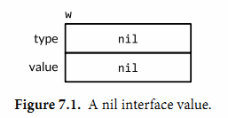
一个接口值基于它的动态类型被描述为空或非空，所以这是一个空的接口值。你可以通过使用w==nil或者w!=nil来判断接口值是否为空。调用一个空接口值上的任意方法都会产生panic:
w.Write([]byte("hello")) // panic: nil pointer dereference
第二个语句将一个*os.File类型的值赋给变量w:
w = os.Stdout
这个赋值过程调用了一个具体类型到接口类型的隐式转换，这和显式的使用io.Writer(os.Stdout)是等价的。这类转换不管是显式的还是隐式的，都会刻画出操作到的类型和值。这个接口值的动态类型被设为*os.File指针的类型描述符，它的动态值持有os.Stdout的拷贝；这是一个代表处理标准输出的os.File类型变量的指针（图7.2）。
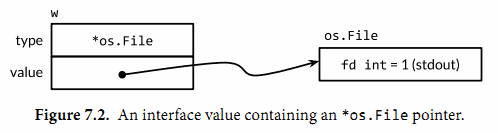
调用一个包含*os.File类型指针的接口值的Write方法，使得(*os.File).Write方法被调用。这个调用输出“hello”。
w.Write([]byte("hello")) // "hello"
通常在编译期，我们不知道接口值的动态类型是什么，所以一个接口上的调用必须使用动态分配。因为不是直接进行调用，所以编译器必须把代码生成在类型描述符的方法Write上，然后间接调用那个地址。这个调用的接收者是一个接口动态值的拷贝，os.Stdout。效果和下面这个直接调用一样：
os.Stdout.Write([]byte("hello")) // "hello"
第三个语句给接口值赋了一个*bytes.Buffer类型的值
w = new(bytes.Buffer)
现在动态类型是*bytes.Buffer并且动态值是一个指向新分配的缓冲区的指针（图7.3）。
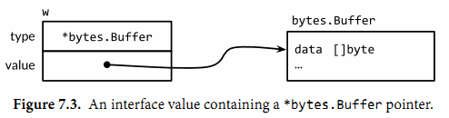
Write方法的调用也使用了和之前一样的机制：
w.Write([]byte("hello")) // writes "hello" to the bytes.Buffers
这次类型描述符是*bytes.Buffer，所以调用了(*bytes.Buffer).Write方法，并且接收者是该缓冲区的地址。这个调用把字符串“hello”添加到缓冲区中。
最后，第四个语句将nil赋给了接口值：
w = nil
这个重置将它所有的部分都设为nil值，把变量w恢复到和它之前定义时相同的状态，在图7.1中可以看到。
一个接口值可以持有任意大的动态值。例如，表示时间实例的time.Time类型，这个类型有几个对外不公开的字段。我们从它上面创建一个接口值：
var x interface{} = time.Now()
结果可能和图7.4相似。从概念上讲，不论接口值多大，动态值总是可以容下它。（这只是一个概念上的模型；具体的实现可能会非常不同）
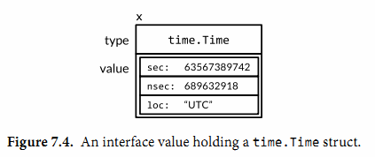
接口值可以使用==和!＝来进行比较。两个接口值相等仅当它们都是nil值，或者它们的动态类型相同并且动态值也根据这个动态类型的==操作相等。因为接口值是可比较的，所以它们可以用在map的键或者作为switch语句的操作数。
然而，如果两个接口值的动态类型相同，但是这个动态类型是不可比较的（比如切片），将它们进行比较就会失败并且panic:
var x interface{} = []int{1, 2, 3}
fmt.Println(x == x) // panic: comparing uncomparable type []int
考虑到这点，接口类型是非常与众不同的。其它类型要么是安全的可比较类型（如基本类型和指针）要么是完全不可比较的类型（如切片，映射类型，和函数），但是在比较接口值或者包含了接口值的聚合类型时，我们必须要意识到潜在的panic。同样的风险也存在于使用接口作为map的键或者switch的操作数。只能比较你非常确定它们的动态值是可比较类型的接口值。
当我们处理错误或者调试的过程中，得知接口值的动态类型是非常有帮助的。所以我们使用fmt包的%T动作:
var w io.Writer
fmt.Printf("%T\n", w) // "<nil>"
w = os.Stdout
fmt.Printf("%T\n", w) // "*os.File"
w = new(bytes.Buffer)
fmt.Printf("%T\n", w) // "*bytes.Buffer"
在fmt包内部，使用反射来获取接口动态类型的名称。我们会在第12章中学到反射相关的知识。
7.5.1. 警告：一个包含nil指针的接口不是nil接口
一个不包含任何值的nil接口值和一个刚好包含nil指针的接口值是不同的。这个细微区别产生了一个容易绊倒每个Go程序员的陷阱。
思考下面的程序。当debug变量设置为true时，main函数会将f函数的输出收集到一个bytes.Buffer类型中。
const debug = true
func main() {
var buf *bytes.Buffer
if debug {
buf = new(bytes.Buffer) // enable collection of output
}
f(buf) // NOTE: subtly incorrect!
if debug {
// ...use buf...
}
}
// If out is non-nil, output will be written to it.
func f(out io.Writer) {
// ...do something...
if out != nil {
out.Write([]byte("done!\n"))
}
}
我们可能会预计当把变量debug设置为false时可以禁止对输出的收集，但是实际上在out.Write方法调用时程序发生了panic：
if out != nil {
out.Write([]byte("done!\n")) // panic: nil pointer dereference
}
当main函数调用函数f时，它给f函数的out参数赋了一个*bytes.Buffer的空指针，所以out的动态值是nil。然而，它的动态类型是*bytes.Buffer，意思就是out变量是一个包含空指针值的非空接口（如图7.5），所以防御性检查out!=nil的结果依然是true。
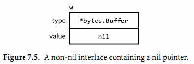
动态分配机制依然决定(*bytes.Buffer).Write的方法会被调用，但是这次的接收者的值是nil。对于一些如*os.File的类型，nil是一个有效的接收者（§6.2.1），但是*bytes.Buffer类型不在这些种类中。这个方法会被调用，但是当它尝试去获取缓冲区时会发生panic。
问题在于尽管一个nil的*bytes.Buffer指针有实现这个接口的方法，它也不满足这个接口具体的行为上的要求。特别是这个调用违反了(*bytes.Buffer).Write方法的接收者非空的隐含先觉条件，所以将nil指针赋给这个接口是错误的。解决方案就是将main函数中的变量buf的类型改为io.Writer，因此可以避免一开始就将一个不完整的值赋值给这个接口：
var buf io.Writer
if debug {
buf = new(bytes.Buffer) // enable collection of output
}
f(buf) // OK
现在我们已经把接口值的技巧都讲完了，让我们来看更多的一些在Go标准库中的重要接口类型。在下面的三章中，我们会看到接口类型是怎样用在排序，web服务，错误处理中的。
7.6. sort.Interface接口
排序操作和字符串格式化一样是很多程序经常使用的操作。尽管一个最短的快排程序只要15行就可以搞定，但是一个健壮的实现需要更多的代码，并且我们不希望每次我们需要的时候都重写或者拷贝这些代码。
幸运的是，sort包内置的提供了根据一些排序函数来对任何序列排序的功能。它的设计非常独到。在很多语言中，排序算法都是和序列数据类型关联，同时排序函数和具体类型元素关联。相比之下，Go语言的sort.Sort函数不会对具体的序列和它的元素做任何假设。相反，它使用了一个接口类型sort.Interface来指定通用的排序算法和可能被排序到的序列类型之间的约定。这个接口的实现由序列的具体表示和它希望排序的元素决定，序列的表示经常是一个切片。
一个内置的排序算法需要知道三个东西：序列的长度，表示两个元素比较的结果，一种交换两个元素的方式；这就是sort.Interface的三个方法：
package sort
type Interface interface {
Len() int
Less(i, j int) bool // i, j are indices of sequence elements
Swap(i, j int)
}
为了对序列进行排序，我们需要定义一个实现了这三个方法的类型，然后对这个类型的一个实例应用sort.Sort函数。思考对一个字符串切片进行排序，这可能是最简单的例子了。下面是这个新的类型StringSlice和它的Len，Less和Swap方法
type StringSlice []string
func (p StringSlice) Len() int { return len(p) }
func (p StringSlice) Less(i, j int) bool { return p[i] < p[j] }
func (p StringSlice) Swap(i, j int) { p[i], p[j] = p[j], p[i] }
现在我们可以通过像下面这样将一个切片转换为一个StringSlice类型来进行排序：
sort.Sort(StringSlice(names))
这个转换得到一个相同长度，容量，和基于names数组的切片值；并且这个切片值的类型有三个排序需要的方法。
对字符串切片的排序是很常用的需要，所以sort包提供了StringSlice类型，也提供了Strings函数能让上面这些调用简化成sort.Strings(names)。
这里用到的技术很容易适用到其它排序序列中，例如我们可以忽略大小写或者含有的特殊字符。（本书使用Go程序对索引词和页码进行排序也用到了这个技术，对罗马数字做了额外逻辑处理。）对于更复杂的排序，我们使用相同的方法，但是会用更复杂的数据结构和更复杂地实现sort.Interface的方法。
我们会运行上面的例子来对一个表格中的音乐播放列表进行排序。每个track都是单独的一行，每一列都是这个track的属性像艺术家，标题，和运行时间。想象一个图形用户界面来呈现这个表格，并且点击一个属性的顶部会使这个列表按照这个属性进行排序；再一次点击相同属性的顶部会进行逆向排序。让我们看下每个点击会发生什么响应。
下面的变量tracks包含了一个播放列表。（One of the authors apologizes for the other author’s musical tastes.）每个元素都不是Track本身而是指向它的指针。尽管我们在下面的代码中直接存储Tracks也可以工作，sort函数会交换很多对元素，所以如果每个元素都是指针而不是Track类型会更快，指针是一个机器字码长度而Track类型可能是八个或更多。
gopl.io/ch7/sorting
type Track struct {
Title string
Artist string
Album string
Year int
Length time.Duration
}
var tracks = []*Track{
{"Go", "Delilah", "From the Roots Up", 2012, length("3m38s")},
{"Go", "Moby", "Moby", 1992, length("3m37s")},
{"Go Ahead", "Alicia Keys", "As I Am", 2007, length("4m36s")},
{"Ready 2 Go", "Martin Solveig", "Smash", 2011, length("4m24s")},
}
func length(s string) time.Duration {
d, err := time.ParseDuration(s)
if err != nil {
panic(s)
}
return d
}
printTracks函数将播放列表打印成一个表格。一个图形化的展示可能会更好点，但是这个小程序使用text/tabwriter包来生成一个列整齐对齐和隔开的表格，像下面展示的这样。注意到*tabwriter.Writer是满足io.Writer接口的。它会收集每一片写向它的数据；它的Flush方法会格式化整个表格并且将它写向os.Stdout（标准输出）。
func printTracks(tracks []*Track) {
const format = "%v\t%v\t%v\t%v\t%v\t\n"
tw := new(tabwriter.Writer).Init(os.Stdout, 0, 8, 2, ' ', 0)
fmt.Fprintf(tw, format, "Title", "Artist", "Album", "Year", "Length")
fmt.Fprintf(tw, format, "-----", "------", "-----", "----", "------")
for _, t := range tracks {
fmt.Fprintf(tw, format, t.Title, t.Artist, t.Album, t.Year, t.Length)
}
tw.Flush() // calculate column widths and print table
}
为了能按照Artist字段对播放列表进行排序，我们会像对StringSlice那样定义一个新的带有必须的Len，Less和Swap方法的切片类型。
type byArtist []*Track
func (x byArtist) Len() int { return len(x) }
func (x byArtist) Less(i, j int) bool { return x[i].Artist < x[j].Artist }
func (x byArtist) Swap(i, j int) { x[i], x[j] = x[j], x[i] }
为了调用通用的排序程序，我们必须先将tracks转换为新的byArtist类型，它定义了具体的排序：
sort.Sort(byArtist(tracks))
在按照artist对这个切片进行排序后，printTrack的输出如下
Title Artist Album Year Length
----- ------ ----- ---- ------
Go Ahead Alicia Keys As I Am 2007 4m36s
Go Delilah From the Roots Up 2012 3m38s
Ready 2 Go Martin Solveig Smash 2011 4m24s
Go Moby Moby 1992 3m37s
如果用户第二次请求“按照artist排序”，我们会对tracks进行逆向排序。然而我们不需要定义一个有颠倒Less方法的新类型byReverseArtist，因为sort包中提供了Reverse函数将排序顺序转换成逆序。
sort.Sort(sort.Reverse(byArtist(tracks)))
在按照artist对这个切片进行逆向排序后，printTrack的输出如下
Title Artist Album Year Length
----- ------ ----- ---- ------
Go Moby Moby 1992 3m37s
Ready 2 Go Martin Solveig Smash 2011 4m24s
Go Delilah From the Roots Up 2012 3m38s
Go Ahead Alicia Keys As I Am 2007 4m36s
sort.Reverse函数值得进行更近一步的学习，因为它使用了（§6.3）章中的组合，这是一个重要的思路。sort包定义了一个不公开的struct类型reverse，它嵌入了一个sort.Interface。reverse的Less方法调用了内嵌的sort.Interface值的Less方法，但是通过交换索引的方式使排序结果变成逆序。
package sort
type reverse struct{ Interface } // that is, sort.Interface
func (r reverse) Less(i, j int) bool { return r.Interface.Less(j, i) }
func Reverse(data Interface) Interface { return reverse{data} }
reverse的另外两个方法Len和Swap隐式地由原有内嵌的sort.Interface提供。因为reverse是一个不公开的类型，所以导出函数Reverse返回一个包含原有sort.Interface值的reverse类型实例。
为了可以按照不同的列进行排序，我们必须定义一个新的类型例如byYear：
type byYear []*Track
func (x byYear) Len() int { return len(x) }
func (x byYear) Less(i, j int) bool { return x[i].Year < x[j].Year }
func (x byYear) Swap(i, j int) { x[i], x[j] = x[j], x[i] }
在使用sort.Sort(byYear(tracks))按照年对tracks进行排序后，printTrack展示了一个按时间先后顺序的列表：
Title Artist Album Year Length
----- ------ ----- ---- ------
Go Moby Moby 1992 3m37s
Go Ahead Alicia Keys As I Am 2007 4m36s
Ready 2 Go Martin Solveig Smash 2011 4m24s
Go Delilah From the Roots Up 2012 3m38s
对于我们需要的每个切片元素类型和每个排序函数，我们需要定义一个新的sort.Interface实现。如你所见，Len和Swap方法对于所有的切片类型都有相同的定义。下个例子，具体的类型customSort会将一个切片和函数结合，使我们只需要写比较函数就可以定义一个新的排序。顺便说下，实现了sort.Interface的具体类型不一定是切片类型；customSort是一个结构体类型。
type customSort struct {
t []*Track
less func(x, y *Track) bool
}
func (x customSort) Len() int { return len(x.t) }
func (x customSort) Less(i, j int) bool { return x.less(x.t[i], x.t[j]) }
func (x customSort) Swap(i, j int) { x.t[i], x.t[j] = x.t[j], x.t[i] }
让我们定义一个多层的排序函数，它主要的排序键是标题，第二个键是年，第三个键是运行时间Length。下面是该排序的调用，其中这个排序使用了匿名排序函数：
sort.Sort(customSort{tracks, func(x, y *Track) bool {
if x.Title != y.Title {
return x.Title < y.Title
}
if x.Year != y.Year {
return x.Year < y.Year
}
if x.Length != y.Length {
return x.Length < y.Length
}
return false
}})
这下面是排序的结果。注意到两个标题是“Go”的track按照标题排序是相同的顺序，但是在按照year排序上更久的那个track优先。
Title Artist Album Year Length
----- ------ ----- ---- ------
Go Moby Moby 1992 3m37s
Go Delilah From the Roots Up 2012 3m38s
Go Ahead Alicia Keys As I Am 2007 4m36s
Ready 2 Go Martin Solveig Smash 2011 4m24s
尽管对长度为n的序列排序需要 O(n log n)次比较操作，检查一个序列是否已经有序至少需要n-1次比较。sort包中的IsSorted函数帮我们做这样的检查。像sort.Sort一样，它也使用sort.Interface对这个序列和它的排序函数进行抽象，但是它从不会调用Swap方法：这段代码示范了IntsAreSorted和Ints函数在IntSlice类型上的使用：
values := []int{3, 1, 4, 1}
fmt.Println(sort.IntsAreSorted(values)) // "false"
sort.Ints(values)
fmt.Println(values) // "[1 1 3 4]"
fmt.Println(sort.IntsAreSorted(values)) // "true"
sort.Sort(sort.Reverse(sort.IntSlice(values)))
fmt.Println(values) // "[4 3 1 1]"
fmt.Println(sort.IntsAreSorted(values)) // "false"
为了使用方便，sort包为[]int、[]string和[]float64的正常排序提供了特定版本的函数和类型。对于其他类型，例如[]int64或者[]uint，尽管路径也很简单，还是依赖我们自己实现。
练习 7.8： 很多图形界面提供了一个有状态的多重排序表格插件：主要的排序键是最近一次点击过列头的列，第二个排序键是第二最近点击过列头的列，等等。定义一个sort.Interface的实现用在这样的表格中。比较这个实现方式和重复使用sort.Stable来排序的方式。
练习 7.9： 使用html/template包（§4.6）替代printTracks将tracks展示成一个HTML表格。将这个解决方案用在前一个练习中，让每次点击一个列的头部产生一个HTTP请求来排序这个表格。
练习 7.10： sort.Interface类型也可以适用在其它地方。编写一个IsPalindrome(s sort.Interface) bool函数表明序列s是否是回文序列，换句话说反向排序不会改变这个序列。假设如果!s.Less(i, j) && !s.Less(j, i)则索引i和j上的元素相等。
7.7. http.Handler接口
在第一章中，我们粗略的了解了怎么用net/http包去实现网络客户端（§1.5）和服务器（§1.7）。在这个小节中，我们会对那些基于http.Handler接口的服务器API做更进一步的学习：
net/http
package http
type Handler interface {
ServeHTTP(w ResponseWriter, r *Request)
}
func ListenAndServe(address string, h Handler) error
ListenAndServe函数需要一个例如“localhost:8000”的服务器地址，和一个所有请求都可以分派的Handler接口实例。它会一直运行，直到这个服务因为一个错误而失败（或者启动失败），它的返回值一定是一个非空的错误。
想象一个电子商务网站，为了销售，将数据库中物品的价格映射成美元。下面这个程序可能是能想到的最简单的实现了。它将库存清单模型化为一个命名为database的map类型，我们给这个类型一个ServeHttp方法，这样它可以满足http.Handler接口。这个handler会遍历整个map并输出物品信息。
gopl.io/ch7/http1
func main() {
db := database{"shoes": 50, "socks": 5}
log.Fatal(http.ListenAndServe("localhost:8000", db))
}
type dollars float32
func (d dollars) String() string { return fmt.Sprintf("$%.2f", d) }
type database map[string]dollars
func (db database) ServeHTTP(w http.ResponseWriter, req *http.Request) {
for item, price := range db {
fmt.Fprintf(w, "%s: %s\n", item, price)
}
}
如果我们启动这个服务，
$ go build gopl.io/ch7/http1
$ ./http1 &
然后用1.5节中的获取程序（如果你更喜欢可以使用web浏览器）来连接服务器，我们得到下面的输出：
$ go build gopl.io/ch1/fetch
$ ./fetch http://localhost:8000
shoes: $50.00
socks: $5.00
目前为止，这个服务器不考虑URL，只能为每个请求列出它全部的库存清单。更真实的服务器会定义多个不同的URL，每一个都会触发一个不同的行为。让我们使用/list来调用已经存在的这个行为并且增加另一个/price调用表明单个货品的价格，像这样/price?item=socks来指定一个请求参数。
gopl.io/ch7/http2
func (db database) ServeHTTP(w http.ResponseWriter, req *http.Request) {
switch req.URL.Path {
case "/list":
for item, price := range db {
fmt.Fprintf(w, "%s: %s\n", item, price)
}
case "/price":
item := req.URL.Query().Get("item")
price, ok := db[item]
if !ok {
w.WriteHeader(http.StatusNotFound) // 404
fmt.Fprintf(w, "no such item: %q\n", item)
return
}
fmt.Fprintf(w, "%s\n", price)
default:
w.WriteHeader(http.StatusNotFound) // 404
fmt.Fprintf(w, "no such page: %s\n", req.URL)
}
}
现在handler基于URL的路径部分（req.URL.Path）来决定执行什么逻辑。如果这个handler不能识别这个路径，它会通过调用w.WriteHeader(http.StatusNotFound)返回客户端一个HTTP错误；这个检查应该在向w写入任何值前完成。（顺便提一下，http.ResponseWriter是另一个接口。它在io.Writer上增加了发送HTTP相应头的方法。）等效地，我们可以使用实用的http.Error函数：
msg := fmt.Sprintf("no such page: %s\n", req.URL)
http.Error(w, msg, http.StatusNotFound) // 404
/price的case会调用URL的Query方法来将HTTP请求参数解析为一个map，或者更准确地说一个net/url包中url.Values(§6.2.1)类型的多重映射。然后找到第一个item参数并查找它的价格。如果这个货品没有找到会返回一个错误。
这里是一个和新服务器会话的例子：
$ go build gopl.io/ch7/http2
$ go build gopl.io/ch1/fetch
$ ./http2 &
$ ./fetch http://localhost:8000/list
shoes: $50.00
socks: $5.00
$ ./fetch http://localhost:8000/price?item=socks
$5.00
$ ./fetch http://localhost:8000/price?item=shoes
$50.00
$ ./fetch http://localhost:8000/price?item=hat
no such item: "hat"
$ ./fetch http://localhost:8000/help
no such page: /help
显然我们可以继续向ServeHTTP方法中添加case，但在一个实际的应用中，将每个case中的逻辑定义到一个分开的方法或函数中会很实用。此外，相近的URL可能需要相似的逻辑；例如几个图片文件可能有形如/images/*.png的URL。因为这些原因，net/http包提供了一个请求多路器ServeMux来简化URL和handlers的联系。一个ServeMux将一批http.Handler聚集到一个单一的http.Handler中。再一次，我们可以看到满足同一接口的不同类型是可替换的：web服务器将请求指派给任意的http.Handler 而不需要考虑它后面的具体类型。
对于更复杂的应用，一些ServeMux可以通过组合来处理更加错综复杂的路由需求。Go语言目前没有一个权威的web框架，就像Ruby语言有Rails和python有Django。这并不是说这样的框架不存在，而是Go语言标准库中的构建模块就已经非常灵活以至于这些框架都是不必要的。此外，尽管在一个项目早期使用框架是非常方便的，但是它们带来额外的复杂度会使长期的维护更加困难。
在下面的程序中，我们创建一个ServeMux并且使用它将URL和相应处理/list和/price操作的handler联系起来，这些操作逻辑都已经被分到不同的方法中。然后我们在调用ListenAndServe函数中使用ServeMux为主要的handler。
gopl.io/ch7/http3
func main() {
db := database{"shoes": 50, "socks": 5}
mux := http.NewServeMux()
mux.Handle("/list", http.HandlerFunc(db.list))
mux.Handle("/price", http.HandlerFunc(db.price))
log.Fatal(http.ListenAndServe("localhost:8000", mux))
}
type database map[string]dollars
func (db database) list(w http.ResponseWriter, req *http.Request) {
for item, price := range db {
fmt.Fprintf(w, "%s: %s\n", item, price)
}
}
func (db database) price(w http.ResponseWriter, req *http.Request) {
item := req.URL.Query().Get("item")
price, ok := db[item]
if !ok {
w.WriteHeader(http.StatusNotFound) // 404
fmt.Fprintf(w, "no such item: %q\n", item)
return
}
fmt.Fprintf(w, "%s\n", price)
}
让我们关注这两个注册到handlers上的调用。第一个db.list是一个方法值（§6.4），它是下面这个类型的值。
func(w http.ResponseWriter, req *http.Request)
也就是说db.list的调用会援引一个接收者是db的database.list方法。所以db.list是一个实现了handler类似行为的函数，但是因为它没有方法（理解：该方法没有它自己的方法），所以它不满足http.Handler接口并且不能直接传给mux.Handle。
语句http.HandlerFunc(db.list)是一个转换而非一个函数调用，因为http.HandlerFunc是一个类型。它有如下的定义：
net/http
package http
type HandlerFunc func(w ResponseWriter, r *Request)
func (f HandlerFunc) ServeHTTP(w ResponseWriter, r *Request) {
f(w, r)
}
HandlerFunc显示了在Go语言接口机制中一些不同寻常的特点。这是一个实现了接口http.Handler的方法的函数类型。ServeHTTP方法的行为是调用了它的函数本身。因此HandlerFunc是一个让函数值满足一个接口的适配器，这里函数和这个接口仅有的方法有相同的函数签名。实际上，这个技巧让一个单一的类型例如database以多种方式满足http.Handler接口：一种通过它的list方法，一种通过它的price方法等等。
因为handler通过这种方式注册非常普遍，ServeMux有一个方便的HandleFunc方法，它帮我们简化handler注册代码成这样：
gopl.io/ch7/http3a
mux.HandleFunc("/list", db.list)
mux.HandleFunc("/price", db.price)
从上面的代码很容易看出应该怎么构建一个程序：由两个不同的web服务器监听不同的端口，并且定义不同的URL将它们指派到不同的handler。我们只要构建另外一个ServeMux并且再调用一次ListenAndServe（可能并行的）。但是在大多数程序中，一个web服务器就足够了。此外，在一个应用程序的多个文件中定义HTTP handler也是非常典型的，如果它们必须全部都显式地注册到这个应用的ServeMux实例上会比较麻烦。
所以为了方便，net/http包提供了一个全局的ServeMux实例DefaultServerMux和包级别的http.Handle和http.HandleFunc函数。现在，为了使用DefaultServeMux作为服务器的主handler，我们不需要将它传给ListenAndServe函数；nil值就可以工作。
然后服务器的主函数可以简化成：
gopl.io/ch7/http4
func main() {
db := database{"shoes": 50, "socks": 5}
http.HandleFunc("/list", db.list)
http.HandleFunc("/price", db.price)
log.Fatal(http.ListenAndServe("localhost:8000", nil))
}
最后，一个重要的提示：就像我们在1.7节中提到的，web服务器在一个新的协程中调用每一个handler，所以当handler获取其它协程或者这个handler本身的其它请求也可以访问到变量时，一定要使用预防措施，比如锁机制。我们后面的两章中将讲到并发相关的知识。
练习 7.11： 增加额外的handler让客户端可以创建，读取，更新和删除数据库记录。例如，一个形如 /update?item=socks&price=6 的请求会更新库存清单里一个货品的价格并且当这个货品不存在或价格无效时返回一个错误值。（注意：这个修改会引入变量同时更新的问题）
练习 7.12： 修改/list的handler让它把输出打印成一个HTML的表格而不是文本。html/template包（§4.6）可能会对你有帮助。
7.8. error接口
从本书的开始，我们就已经创建和使用过神秘的预定义error类型，而且没有解释它究竟是什么。实际上它就是interface类型，这个类型有一个返回错误信息的单一方法：
type error interface {
Error() string
}
创建一个error最简单的方法就是调用errors.New函数，它会根据传入的错误信息返回一个新的error。整个errors包仅只有4行：
package errors
func New(text string) error { return &errorString{text} }
type errorString struct { text string }
func (e *errorString) Error() string { return e.text }
承载errorString的类型是一个结构体而非一个字符串，这是为了保护它表示的错误避免粗心（或有意）的更新。并且因为是指针类型*errorString满足error接口而非errorString类型，所以每个New函数的调用都分配了一个独特的和其他错误不相同的实例。我们也不想要重要的error例如io.EOF和一个刚好有相同错误消息的error比较后相等。
fmt.Println(errors.New("EOF") == errors.New("EOF")) // "false"
调用errors.New函数是非常稀少的，因为有一个方便的封装函数fmt.Errorf，它还会处理字符串格式化。我们曾多次在第5章中用到它。
package fmt
import "errors"
func Errorf(format string, args ...interface{}) error {
return errors.New(Sprintf(format, args...))
}
虽然*errorString可能是最简单的错误类型，但远非只有它一个。例如，syscall包提供了Go语言底层系统调用API。在多个平台上，它定义一个实现error接口的数字类型Errno，并且在Unix平台上，Errno的Error方法会从一个字符串表中查找错误消息，如下面展示的这样：
package syscall
type Errno uintptr // operating system error code
var errors = [...]string{
1: "operation not permitted", // EPERM
2: "no such file or directory", // ENOENT
3: "no such process", // ESRCH
// ...
}
func (e Errno) Error() string {
if 0 <= int(e) && int(e) < len(errors) {
return errors[e]
}
return fmt.Sprintf("errno %d", e)
}
下面的语句创建了一个持有Errno值为2的接口值，表示POSIX ENOENT状况：
var err error = syscall.Errno(2)
fmt.Println(err.Error()) // "no such file or directory"
fmt.Println(err) // "no such file or directory"
err的值图形化的呈现在图7.6中。
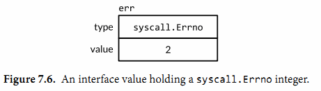
Errno是一个系统调用错误的高效表示方式，它通过一个有限的集合进行描述，并且它满足标准的错误接口。我们会在第7.11节了解到其它满足这个接口的类型。
7.9. 示例: 表达式求值
在本节中，我们会构建一个简单算术表达式的求值器。我们将使用一个接口Expr来表示Go语言中任意的表达式。现在这个接口不需要有方法，但是我们后面会为它增加一些。
// An Expr is an arithmetic expression.
type Expr interface{}
我们的表达式语言包括浮点数符号（小数点）；二元操作符+，-，*， 和/；一元操作符-x和+x；调用pow(x,y)，sin(x)，和sqrt(x)的函数；例如x和pi的变量；当然也有括号和标准的优先级运算符。所有的值都是float64类型。这下面是一些表达式的例子：
sqrt(A / pi)
pow(x, 3) + pow(y, 3)
(F - 32) * 5 / 9
下面的五个具体类型表示了具体的表达式类型。Var类型表示对一个变量的引用。（我们很快会知道为什么它可以被输出。）literal类型表示一个浮点型常量。unary和binary类型表示有一到两个运算对象的运算符表达式，这些操作数可以是任意的Expr类型。call类型表示对一个函数的调用；我们限制它的fn字段只能是pow，sin或者sqrt。
gopl.io/ch7/eval
// A Var identifies a variable, e.g., x.
type Var string
// A literal is a numeric constant, e.g., 3.141.
type literal float64
// A unary represents a unary operator expression, e.g., -x.
type unary struct {
op rune // one of '+', '-'
x Expr
}
// A binary represents a binary operator expression, e.g., x+y.
type binary struct {
op rune // one of '+', '-', '*', '/'
x, y Expr
}
// A call represents a function call expression, e.g., sin(x).
type call struct {
fn string // one of "pow", "sin", "sqrt"
args []Expr
}
为了计算一个包含变量的表达式，我们需要一个environment变量将变量的名字映射成对应的值：
type Env map[Var]float64
我们也需要每个表达式去定义一个Eval方法，这个方法会根据给定的environment变量返回表达式的值。因为每个表达式都必须提供这个方法，我们将它加入到Expr接口中。这个包只会对外公开Expr，Env，和Var类型。调用方不需要获取其它的表达式类型就可以使用这个求值器。
type Expr interface {
// Eval returns the value of this Expr in the environment env.
Eval(env Env) float64
}
下面给大家展示一个具体的Eval方法。Var类型的这个方法对一个environment变量进行查找，如果这个变量没有在environment中定义过这个方法会返回一个零值，literal类型的这个方法简单的返回它真实的值。
func (v Var) Eval(env Env) float64 {
return env[v]
}
func (l literal) Eval(_ Env) float64 {
return float64(l)
}
unary和binary的Eval方法会递归的计算它的运算对象，然后将运算符op作用到它们上。我们不将被零或无穷数除作为一个错误，因为它们都会产生一个固定的结果——无限。最后，call的这个方法会计算对于pow，sin，或者sqrt函数的参数值，然后调用对应在math包中的函数。
func (u unary) Eval(env Env) float64 {
switch u.op {
case '+':
return +u.x.Eval(env)
case '-':
return -u.x.Eval(env)
}
panic(fmt.Sprintf("unsupported unary operator: %q", u.op))
}
func (b binary) Eval(env Env) float64 {
switch b.op {
case '+':
return b.x.Eval(env) + b.y.Eval(env)
case '-':
return b.x.Eval(env) - b.y.Eval(env)
case '*':
return b.x.Eval(env) * b.y.Eval(env)
case '/':
return b.x.Eval(env) / b.y.Eval(env)
}
panic(fmt.Sprintf("unsupported binary operator: %q", b.op))
}
func (c call) Eval(env Env) float64 {
switch c.fn {
case "pow":
return math.Pow(c.args[0].Eval(env), c.args[1].Eval(env))
case "sin":
return math.Sin(c.args[0].Eval(env))
case "sqrt":
return math.Sqrt(c.args[0].Eval(env))
}
panic(fmt.Sprintf("unsupported function call: %s", c.fn))
}
一些方法会失败。例如，一个call表达式可能有未知的函数或者错误的参数个数。用一个无效的运算符如!或者<去构建一个unary或者binary表达式也是可能会发生的（尽管下面提到的Parse函数不会这样做）。这些错误会让Eval方法panic。其它的错误，像计算一个没有在environment变量中出现过的Var，只会让Eval方法返回一个错误的结果。所有的这些错误都可以通过在计算前检查Expr来发现。这是我们接下来要讲的Check方法的工作，但是让我们先测试Eval方法。
下面的TestEval函数是对evaluator的一个测试。它使用了我们会在第11章讲解的testing包，但是现在知道调用t.Errof会报告一个错误就足够了。这个函数循环遍历一个表格中的输入，这个表格中定义了三个表达式和针对每个表达式不同的环境变量。第一个表达式根据给定圆的面积A计算它的半径，第二个表达式通过两个变量x和y计算两个立方体的体积之和，第三个表达式将华氏温度F转换成摄氏度。
func TestEval(t *testing.T) {
tests := []struct {
expr string
env Env
want string
}{
{"sqrt(A / pi)", Env{"A": 87616, "pi": math.Pi}, "167"},
{"pow(x, 3) + pow(y, 3)", Env{"x": 12, "y": 1}, "1729"},
{"pow(x, 3) + pow(y, 3)", Env{"x": 9, "y": 10}, "1729"},
{"5 / 9 * (F - 32)", Env{"F": -40}, "-40"},
{"5 / 9 * (F - 32)", Env{"F": 32}, "0"},
{"5 / 9 * (F - 32)", Env{"F": 212}, "100"},
}
var prevExpr string
for _, test := range tests {
// Print expr only when it changes.
if test.expr != prevExpr {
fmt.Printf("\n%s\n", test.expr)
prevExpr = test.expr
}
expr, err := Parse(test.expr)
if err != nil {
t.Error(err) // parse error
continue
}
got := fmt.Sprintf("%.6g", expr.Eval(test.env))
fmt.Printf("\t%v => %s\n", test.env, got)
if got != test.want {
t.Errorf("%s.Eval() in %v = %q, want %q\n",
test.expr, test.env, got, test.want)
}
}
}
对于表格中的每一条记录，这个测试会解析它的表达式然后在环境变量中计算它，输出结果。这里我们没有空间来展示Parse函数，但是如果你使用go get下载这个包你就可以看到这个函数。
go test(§11.1) 命令会运行一个包的测试用例：
$ go test -v gopl.io/ch7/eval
这个-v标识可以让我们看到测试用例打印的输出；正常情况下像这样一个成功的测试用例会阻止打印结果的输出。这里是测试用例里fmt.Printf语句的输出：
sqrt(A / pi)
map[A:87616 pi:3.141592653589793] => 167
pow(x, 3) + pow(y, 3)
map[x:12 y:1] => 1729
map[x:9 y:10] => 1729
5 / 9 * (F - 32)
map[F:-40] => -40
map[F:32] => 0
map[F:212] => 100
幸运的是目前为止所有的输入都是适合的格式，但是我们的运气不可能一直都有。甚至在解释型语言中，为了静态错误检查语法是非常常见的；静态错误就是不用运行程序就可以检测出来的错误。通过将静态检查和动态的部分分开，我们可以快速的检查错误并且对于多次检查只执行一次而不是每次表达式计算的时候都进行检查。
让我们往Expr接口中增加另一个方法。Check方法对一个表达式语义树检查出静态错误。我们马上会说明它的vars参数。
type Expr interface {
Eval(env Env) float64
// Check reports errors in this Expr and adds its Vars to the set.
Check(vars map[Var]bool) error
}
具体的Check方法展示在下面。literal和Var类型的计算不可能失败，所以这些类型的Check方法会返回一个nil值。对于unary和binary的Check方法会首先检查操作符是否有效，然后递归的检查运算单元。相似地对于call的这个方法首先检查调用的函数是否已知并且有没有正确个数的参数，然后递归的检查每一个参数。
func (v Var) Check(vars map[Var]bool) error {
vars[v] = true
return nil
}
func (literal) Check(vars map[Var]bool) error {
return nil
}
func (u unary) Check(vars map[Var]bool) error {
if !strings.ContainsRune("+-", u.op) {
return fmt.Errorf("unexpected unary op %q", u.op)
}
return u.x.Check(vars)
}
func (b binary) Check(vars map[Var]bool) error {
if !strings.ContainsRune("+-*/", b.op) {
return fmt.Errorf("unexpected binary op %q", b.op)
}
if err := b.x.Check(vars); err != nil {
return err
}
return b.y.Check(vars)
}
func (c call) Check(vars map[Var]bool) error {
arity, ok := numParams[c.fn]
if !ok {
return fmt.Errorf("unknown function %q", c.fn)
}
if len(c.args) != arity {
return fmt.Errorf("call to %s has %d args, want %d",
c.fn, len(c.args), arity)
}
for _, arg := range c.args {
if err := arg.Check(vars); err != nil {
return err
}
}
return nil
}
var numParams = map[string]int{"pow": 2, "sin": 1, "sqrt": 1}
我们在两个组中有选择地列出有问题的输入和它们得出的错误。Parse函数（这里没有出现）会报出一个语法错误和Check函数会报出语义错误。
x % 2 unexpected '%'
math.Pi unexpected '.'
!true unexpected '!'
"hello" unexpected '"'
log(10) unknown function "log"
sqrt(1, 2) call to sqrt has 2 args, want 1
Check方法的参数是一个Var类型的集合，这个集合聚集从表达式中找到的变量名。为了保证成功的计算，这些变量中的每一个都必须出现在环境变量中。从逻辑上讲，这个集合就是调用Check方法返回的结果，但是因为这个方法是递归调用的，所以对于Check方法，填充结果到一个作为参数传入的集合中会更加的方便。调用方在初始调用时必须提供一个空的集合。
在第3.2节中，我们绘制了一个在编译期才确定的函数f(x,y)。现在我们可以解析，检查和计算在字符串中的表达式，我们可以构建一个在运行时从客户端接收表达式的web应用并且它会绘制这个函数的表示的曲面。我们可以使用集合vars来检查表达式是否是一个只有两个变量x和y的函数——实际上是3个，因为我们为了方便会提供半径大小r。并且我们会在计算前使用Check方法拒绝有格式问题的表达式，这样我们就不会在下面函数的40000个计算过程（100x100个栅格，每一个有4个角）重复这些检查。
这个ParseAndCheck函数混合了解析和检查步骤的过程：
gopl.io/ch7/surface
import "gopl.io/ch7/eval"
func parseAndCheck(s string) (eval.Expr, error) {
if s == "" {
return nil, fmt.Errorf("empty expression")
}
expr, err := eval.Parse(s)
if err != nil {
return nil, err
}
vars := make(map[eval.Var]bool)
if err := expr.Check(vars); err != nil {
return nil, err
}
for v := range vars {
if v != "x" && v != "y" && v != "r" {
return nil, fmt.Errorf("undefined variable: %s", v)
}
}
return expr, nil
}
为了编写这个web应用，所有我们需要做的就是下面这个plot函数，这个函数有和http.HandlerFunc相似的签名：
func plot(w http.ResponseWriter, r *http.Request) {
r.ParseForm()
expr, err := parseAndCheck(r.Form.Get("expr"))
if err != nil {
http.Error(w, "bad expr: "+err.Error(), http.StatusBadRequest)
return
}
w.Header().Set("Content-Type", "image/svg+xml")
surface(w, func(x, y float64) float64 {
r := math.Hypot(x, y) // distance from (0,0)
return expr.Eval(eval.Env{"x": x, "y": y, "r": r})
})
}
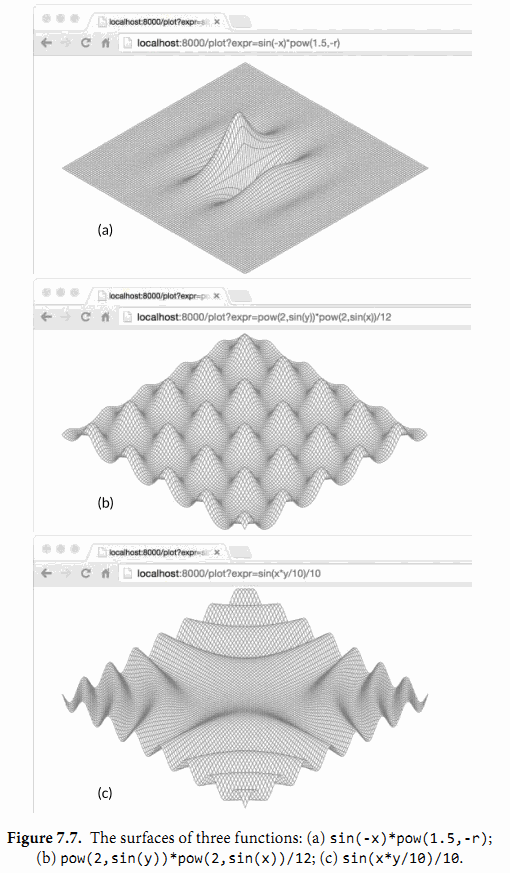
这个plot函数解析和检查在HTTP请求中指定的表达式并且用它来创建一个两个变量的匿名函数。这个匿名函数和来自原来surface-plotting程序中的固定函数f有相同的签名，但是它计算一个用户提供的表达式。环境变量中定义了x，y和半径r。最后plot调用surface函数，它就是gopl.io/ch3/surface中的主要函数，修改后它可以接受plot中的函数和输出io.Writer作为参数，而不是使用固定的函数f和os.Stdout。图7.7中显示了通过程序产生的3个曲面。
练习 7.13： 为Expr增加一个String方法来打印美观的语法树。当再一次解析的时候，检查它的结果是否生成相同的语法树。
练习 7.14： 定义一个新的满足Expr接口的具体类型并且提供一个新的操作例如对它运算单元中的最小值的计算。因为Parse函数不会创建这个新类型的实例，为了使用它你可能需要直接构造一个语法树（或者继承parser接口）。
练习 7.15： 编写一个从标准输入中读取一个单一表达式的程序，用户及时地提供对于任意变量的值，然后在结果环境变量中计算表达式的值。优雅的处理所有遇到的错误。
练习 7.16： 编写一个基于web的计算器程序。
7.10. 类型断言
类型断言是一个使用在接口值上的操作。语法上它看起来像x.(T)被称为断言类型，这里x表示一个接口的类型和T表示一个类型。一个类型断言检查它操作对象的动态类型是否和断言的类型匹配。
这里有两种可能。第一种，如果断言的类型T是一个具体类型，然后类型断言检查x的动态类型是否和T相同。如果这个检查成功了，类型断言的结果是x的动态值，当然它的类型是T。换句话说，具体类型的类型断言从它的操作对象中获得具体的值。如果检查失败，接下来这个操作会抛出panic。例如：
var w io.Writer
w = os.Stdout
f := w.(*os.File) // success: f == os.Stdout
c := w.(*bytes.Buffer) // panic: interface holds *os.File, not *bytes.Buffer
第二种，如果相反地断言的类型T是一个接口类型，然后类型断言检查是否x的动态类型满足T。如果这个检查成功了，动态值没有获取到；这个结果仍然是一个有相同动态类型和值部分的接口值，但是结果为类型T。换句话说，对一个接口类型的类型断言改变了类型的表述方式，改变了可以获取的方法集合（通常更大），但是它保留了接口值内部的动态类型和值的部分。
在下面的第一个类型断言后，w和rw都持有os.Stdout，因此它们都有一个动态类型*os.File，但是变量w是一个io.Writer类型，只对外公开了文件的Write方法，而rw变量还公开了它的Read方法。
var w io.Writer
w = os.Stdout
rw := w.(io.ReadWriter) // success: *os.File has both Read and Write
w = new(ByteCounter)
rw = w.(io.ReadWriter) // panic: *ByteCounter has no Read method
如果断言操作的对象是一个nil接口值，那么不论被断言的类型是什么这个类型断言都会失败。我们几乎不需要对一个更少限制性的接口类型（更少的方法集合）做断言，因为它表现的就像是赋值操作一样，除了对于nil接口值的情况。
w = rw // io.ReadWriter is assignable to io.Writer
w = rw.(io.Writer) // fails only if rw == nil
经常地，对一个接口值的动态类型我们是不确定的，并且我们更愿意去检验它是否是一些特定的类型。如果类型断言出现在一个预期有两个结果的赋值操作中，例如如下的定义，这个操作不会在失败的时候发生panic，但是替代地返回一个额外的第二个结果，这个结果是一个标识成功与否的布尔值：
var w io.Writer = os.Stdout
f, ok := w.(*os.File) // success: ok, f == os.Stdout
b, ok := w.(*bytes.Buffer) // failure: !ok, b == nil
第二个结果通常赋值给一个命名为ok的变量。如果这个操作失败了，那么ok就是false值，第一个结果等于被断言类型的零值，在这个例子中就是一个nil的*bytes.Buffer类型。
这个ok结果经常立即用于决定程序下面做什么。if语句的扩展格式让这个变的很简洁：
if f, ok := w.(*os.File); ok {
// ...use f...
}
当类型断言的操作对象是一个变量，你有时会看见原来的变量名重用而不是声明一个新的本地变量名，这个重用的变量原来的值会被覆盖（理解：其实是声明了一个同名的新的本地变量，外层原来的w不会被改变），如下面这样：
if w, ok := w.(*os.File); ok {
// ...use w...
}
7.11. 基于类型断言区别错误类型
思考在os包中文件操作返回的错误集合。I/O可以因为任何数量的原因失败，但是有三种经常的错误必须进行不同的处理：文件已经存在（对于创建操作），找不到文件（对于读取操作），和权限拒绝。os包中提供了三个帮助函数来对给定的错误值表示的失败进行分类：
package os
func IsExist(err error) bool
func IsNotExist(err error) bool
func IsPermission(err error) bool
对这些判断的一个缺乏经验的实现可能会去检查错误消息是否包含了特定的子字符串，
func IsNotExist(err error) bool {
// NOTE: not robust!
return strings.Contains(err.Error(), "file does not exist")
}
但是处理I/O错误的逻辑可能一个和另一个平台非常的不同，所以这种方案并不健壮，并且对相同的失败可能会报出各种不同的错误消息。在测试的过程中，通过检查错误消息的子字符串来保证特定的函数以期望的方式失败是非常有用的，但对于线上的代码是不够的。
一个更可靠的方式是使用一个专门的类型来描述结构化的错误。os包中定义了一个PathError类型来描述在文件路径操作中涉及到的失败，像Open或者Delete操作；并且定义了一个叫LinkError的变体来描述涉及到两个文件路径的操作，像Symlink和Rename。这下面是os.PathError：
package os
// PathError records an error and the operation and file path that caused it.
type PathError struct {
Op string
Path string
Err error
}
func (e *PathError) Error() string {
return e.Op + " " + e.Path + ": " + e.Err.Error()
}
大多数调用方都不知道PathError并且通过调用错误本身的Error方法来统一处理所有的错误。尽管PathError的Error方法简单地把这些字段连接起来生成错误消息，PathError的结构保护了内部的错误组件。调用方需要使用类型断言来检测错误的具体类型以便将一种失败和另一种区分开；具体的类型可以比字符串提供更多的细节。
_, err := os.Open("/no/such/file")
fmt.Println(err) // "open /no/such/file: No such file or directory"
fmt.Printf("%#v\n", err)
// Output:
// &os.PathError{Op:"open", Path:"/no/such/file", Err:0x2}
这就是三个帮助函数是怎么工作的。例如下面展示的IsNotExist，它会报出是否一个错误和syscall.ENOENT（§7.8）或者和有名的错误os.ErrNotExist相等（可以在§5.4.2中找到io.EOF）；或者是一个*PathError，它内部的错误是syscall.ENOENT和os.ErrNotExist其中之一。
import (
"errors"
"syscall"
)
var ErrNotExist = errors.New("file does not exist")
// IsNotExist returns a boolean indicating whether the error is known to
// report that a file or directory does not exist. It is satisfied by
// ErrNotExist as well as some syscall errors.
func IsNotExist(err error) bool {
if pe, ok := err.(*PathError); ok {
err = pe.Err
}
return err == syscall.ENOENT || err == ErrNotExist
}
下面这里是它的实际使用：
_, err := os.Open("/no/such/file")
fmt.Println(os.IsNotExist(err)) // "true"
如果错误消息结合成一个更大的字符串，当然PathError的结构就不再为人所知，例如通过一个对fmt.Errorf函数的调用。区别错误通常必须在失败操作后，错误传回调用者前进行。
7.12. 通过类型断言询问行为
下面这段逻辑和net/http包中web服务器负责写入HTTP头字段（例如："Content-type:text/html"）的部分相似。io.Writer接口类型的变量w代表HTTP响应；写入它的字节最终被发送到某个人的web浏览器上。
func writeHeader(w io.Writer, contentType string) error {
if _, err := w.Write([]byte("Content-Type: ")); err != nil {
return err
}
if _, err := w.Write([]byte(contentType)); err != nil {
return err
}
// ...
}
因为Write方法需要传入一个byte切片而我们希望写入的值是一个字符串，所以我们需要使用[]byte(...)进行转换。这个转换分配内存并且做一个拷贝，但是这个拷贝在转换后几乎立马就被丢弃掉。让我们假装这是一个web服务器的核心部分并且我们的性能分析表示这个内存分配使服务器的速度变慢。这里我们可以避免掉内存分配么？
这个io.Writer接口告诉我们关于w持有的具体类型的唯一东西：就是可以向它写入字节切片。如果我们回顾net/http包中的内幕，我们知道在这个程序中的w变量持有的动态类型也有一个允许字符串高效写入的WriteString方法；这个方法会避免去分配一个临时的拷贝。（这可能像在黑夜中射击一样，但是许多满足io.Writer接口的重要类型同时也有WriteString方法，包括*bytes.Buffer，*os.File和*bufio.Writer。）
我们不能对任意io.Writer类型的变量w，假设它也拥有WriteString方法。但是我们可以定义一个只有这个方法的新接口并且使用类型断言来检测是否w的动态类型满足这个新接口。
// writeString writes s to w.
// If w has a WriteString method, it is invoked instead of w.Write.
func writeString(w io.Writer, s string) (n int, err error) {
type stringWriter interface {
WriteString(string) (n int, err error)
}
if sw, ok := w.(stringWriter); ok {
return sw.WriteString(s) // avoid a copy
}
return w.Write([]byte(s)) // allocate temporary copy
}
func writeHeader(w io.Writer, contentType string) error {
if _, err := writeString(w, "Content-Type: "); err != nil {
return err
}
if _, err := writeString(w, contentType); err != nil {
return err
}
// ...
}
为了避免重复定义，我们将这个检查移入到一个实用工具函数writeString中，但是它太有用了以致于标准库将它作为io.WriteString函数提供。这是向一个io.Writer接口写入字符串的推荐方法。
这个例子的神奇之处在于，没有定义了WriteString方法的标准接口，也没有指定它是一个所需行为的标准接口。一个具体类型只会通过它的方法决定它是否满足stringWriter接口，而不是任何它和这个接口类型所表达的关系。它的意思就是上面的技术依赖于一个假设，这个假设就是：如果一个类型满足下面的这个接口，然后WriteString(s)方法就必须和Write([]byte(s))有相同的效果。
interface {
io.Writer
WriteString(s string) (n int, err error)
}
尽管io.WriteString实施了这个假设，但是调用它的函数极少可能会去实施类似的假设。定义一个特定类型的方法隐式地获取了对特定行为的协约。对于Go语言的新手，特别是那些来自有强类型语言使用背景的新手，可能会发现它缺乏显式的意图令人感到混乱，但是在实战的过程中这几乎不是一个问题。除了空接口interface{}，接口类型很少意外巧合地被实现。
上面的writeString函数使用一个类型断言来获知一个普遍接口类型的值是否满足一个更加具体的接口类型；并且如果满足，它会使用这个更具体接口的行为。这个技术可以被很好的使用，不论这个被询问的接口是一个标准如io.ReadWriter，或者用户定义的如stringWriter接口。
这也是fmt.Fprintf函数怎么从其它所有值中区分满足error或者fmt.Stringer接口的值。在fmt.Fprintf内部，有一个将单个操作对象转换成一个字符串的步骤，像下面这样：
package fmt
func formatOneValue(x interface{}) string {
if err, ok := x.(error); ok {
return err.Error()
}
if str, ok := x.(Stringer); ok {
return str.String()
}
// ...all other types...
}
如果x满足这两个接口类型中的一个，具体满足的接口决定对值的格式化方式。如果都不满足，默认的case或多或少会统一地使用反射来处理所有的其它类型；我们可以在第12章知道具体是怎么实现的。
再一次的，它假设任何有String方法的类型都满足fmt.Stringer中约定的行为，这个行为会返回一个适合打印的字符串。
7.13. 类型分支
接口被以两种不同的方式使用。在第一个方式中，以io.Reader，io.Writer，fmt.Stringer，sort.Interface，http.Handler和error为典型，一个接口的方法表达了实现这个接口的具体类型间的相似性，但是隐藏了代码的细节和这些具体类型本身的操作。重点在于方法上，而不是具体的类型上。
第二个方式是利用一个接口值可以持有各种具体类型值的能力，将这个接口认为是这些类型的联合。类型断言用来动态地区别这些类型，使得对每一种情况都不一样。在这个方式中，重点在于具体的类型满足这个接口，而不在于接口的方法（如果它确实有一些的话），并且没有任何的信息隐藏。我们将以这种方式使用的接口描述为discriminated unions（可辨识联合）。
如果你熟悉面向对象编程，你可能会将这两种方式当作是subtype polymorphism（子类型多态）和 ad hoc polymorphism（非参数多态），但是你不需要去记住这些术语。对于本章剩下的部分，我们将会呈现一些第二种方式的例子。
和其它那些语言一样，Go语言查询一个SQL数据库的API会干净地将查询中固定的部分和变化的部分分开。一个调用的例子可能看起来像这样：
import "database/sql"
func listTracks(db sql.DB, artist string, minYear, maxYear int) {
result, err := db.Exec(
"SELECT * FROM tracks WHERE artist = ? AND ? <= year AND year <= ?",
artist, minYear, maxYear)
// ...
}
Exec方法使用SQL字面量替换在查询字符串中的每个'?'；SQL字面量表示相应参数的值，它有可能是一个布尔值，一个数字，一个字符串，或者nil空值。用这种方式构造查询可以帮助避免SQL注入攻击；这种攻击就是对手可以通过利用输入内容中不正确的引号来控制查询语句。在Exec函数内部，我们可能会找到像下面这样的一个函数，它会将每一个参数值转换成它的SQL字面量符号。
func sqlQuote(x interface{}) string {
if x == nil {
return "NULL"
} else if _, ok := x.(int); ok {
return fmt.Sprintf("%d", x)
} else if _, ok := x.(uint); ok {
return fmt.Sprintf("%d", x)
} else if b, ok := x.(bool); ok {
if b {
return "TRUE"
}
return "FALSE"
} else if s, ok := x.(string); ok {
return sqlQuoteString(s) // (not shown)
} else {
panic(fmt.Sprintf("unexpected type %T: %v", x, x))
}
}
switch语句可以简化if-else链，如果这个if-else链对一连串值做相等测试。一个相似的type switch（类型分支）可以简化类型断言的if-else链。
在最简单的形式中，一个类型分支像普通的switch语句一样，它的运算对象是x.(type)——它使用了关键词字面量type——并且每个case有一到多个类型。一个类型分支基于这个接口值的动态类型使一个多路分支有效。这个nil的case和if x == nil匹配，并且这个default的case和如果其它case都不匹配的情况匹配。一个对sqlQuote的类型分支可能会有这些case：
switch x.(type) {
case nil: // ...
case int, uint: // ...
case bool: // ...
case string: // ...
default: // ...
}
和（§1.8）中的普通switch语句一样，每一个case会被顺序的进行考虑，并且当一个匹配找到时，这个case中的内容会被执行。当一个或多个case类型是接口时，case的顺序就会变得很重要，因为可能会有两个case同时匹配的情况。default case相对其它case的位置是无所谓的。它不会允许落空发生。
注意到在原来的函数中，对于bool和string情况的逻辑需要通过类型断言访问提取的值。因为这个做法很典型，类型分支语句有一个扩展的形式，它可以将提取的值绑定到一个在每个case范围内都有效的新变量。
switch x := x.(type) { /* ... */ }
这里我们已经将新的变量也命名为x；和类型断言一样，重用变量名是很常见的。和一个switch语句相似地，一个类型分支隐式的创建了一个词法块，因此新变量x的定义不会和外面块中的x变量冲突。每一个case也会隐式的创建一个单独的词法块。
使用类型分支的扩展形式来重写sqlQuote函数会让这个函数更加的清晰：
func sqlQuote(x interface{}) string {
switch x := x.(type) {
case nil:
return "NULL"
case int, uint:
return fmt.Sprintf("%d", x) // x has type interface{} here.
case bool:
if x {
return "TRUE"
}
return "FALSE"
case string:
return sqlQuoteString(x) // (not shown)
default:
panic(fmt.Sprintf("unexpected type %T: %v", x, x))
}
}
在这个版本的函数中，在每个单一类型的case内部，变量x和这个case的类型相同。例如，变量x在bool的case中是bool类型和string的case中是string类型。在所有其它的情况中，变量x是switch运算对象的类型（接口）；在这个例子中运算对象是一个interface{}。当多个case需要相同的操作时，比如int和uint的情况，类型分支可以很容易的合并这些情况。
尽管sqlQuote接受一个任意类型的参数，但是这个函数只会在它的参数匹配类型分支中的一个case时运行到结束；其它情况的它会panic出“unexpected type”消息。虽然x的类型是interface{}，但是我们把它认为是一个int，uint，bool，string，和nil值的discriminated union（可识别联合）
7.14. 示例: 基于标记的XML解码
第4.5章节展示了如何使用encoding/json包中的Marshal和Unmarshal函数来将JSON文档转换成Go语言的数据结构。encoding/xml包提供了一个相似的API。当我们想构造一个文档树的表示时使用encoding/xml包会很方便，但是对于很多程序并不是必须的。encoding/xml包也提供了一个更低层的基于标记的API用于XML解码。在基于标记的样式中，解析器消费输入并产生一个标记流；四个主要的标记类型－StartElement，EndElement，CharData，和Comment－每一个都是encoding/xml包中的具体类型。每一个对(*xml.Decoder).Token的调用都返回一个标记。
这里显示的是和这个API相关的部分：
encoding/xml
package xml
type Name struct {
Local string // e.g., "Title" or "id"
}
type Attr struct { // e.g., name="value"
Name Name
Value string
}
// A Token includes StartElement, EndElement, CharData,
// and Comment, plus a few esoteric types (not shown).
type Token interface{}
type StartElement struct { // e.g., <name>
Name Name
Attr []Attr
}
type EndElement struct { Name Name } // e.g., </name>
type CharData []byte // e.g., <p>CharData</p>
type Comment []byte // e.g., <!-- Comment -->
type Decoder struct{ /* ... */ }
func NewDecoder(io.Reader) *Decoder
func (*Decoder) Token() (Token, error) // returns next Token in sequence
这个没有方法的Token接口也是一个可识别联合的例子。传统的接口如io.Reader的目的是隐藏满足它的具体类型的细节，这样就可以创造出新的实现：在这个实现中每个具体类型都被统一地对待。相反，满足可识别联合的具体类型的集合被设计为确定和暴露，而不是隐藏。可识别联合的类型几乎没有方法，操作它们的函数使用一个类型分支的case集合来进行表述，这个case集合中每一个case都有不同的逻辑。
下面的xmlselect程序获取和打印在一个XML文档树中确定的元素下找到的文本。使用上面的API，它可以在输入上一次完成它的工作而从来不要实例化这个文档树。
gopl.io/ch7/xmlselect
// Xmlselect prints the text of selected elements of an XML document.
package main
import (
"encoding/xml"
"fmt"
"io"
"os"
"strings"
)
func main() {
dec := xml.NewDecoder(os.Stdin)
var stack []string // stack of element names
for {
tok, err := dec.Token()
if err == io.EOF {
break
} else if err != nil {
fmt.Fprintf(os.Stderr, "xmlselect: %v\n", err)
os.Exit(1)
}
switch tok := tok.(type) {
case xml.StartElement:
stack = append(stack, tok.Name.Local) // push
case xml.EndElement:
stack = stack[:len(stack)-1] // pop
case xml.CharData:
if containsAll(stack, os.Args[1:]) {
fmt.Printf("%s: %s\n", strings.Join(stack, " "), tok)
}
}
}
}
// containsAll reports whether x contains the elements of y, in order.
func containsAll(x, y []string) bool {
for len(y) <= len(x) {
if len(y) == 0 {
return true
}
if x[0] == y[0] {
y = y[1:]
}
x = x[1:]
}
return false
}
main函数中的循环每遇到一个StartElement时，它把这个元素的名称压到一个栈里，并且每次遇到EndElement时，它将名称从这个栈中推出。这个API保证了StartElement和EndElement的序列可以被完全的匹配，甚至在一个糟糕的文档格式中。注释会被忽略。当xmlselect遇到一个CharData时，只有当栈中有序地包含所有通过命令行参数传入的元素名称时，它才会输出相应的文本。
下面的命令打印出任意出现在两层div元素下的h2元素的文本。它的输入是XML的说明文档，并且它自己就是XML文档格式的。
$ go build gopl.io/ch1/fetch
$ ./fetch http://www.w3.org/TR/2006/REC-xml11-20060816 |
./xmlselect div div h2
html body div div h2: 1 Introduction
html body div div h2: 2 Documents
html body div div h2: 3 Logical Structures
html body div div h2: 4 Physical Structures
html body div div h2: 5 Conformance
html body div div h2: 6 Notation
html body div div h2: A References
html body div div h2: B Definitions for Character Normalization
...
练习 7.17： 扩展xmlselect程序以便让元素不仅可以通过名称选择，也可以通过它们CSS风格的属性进行选择。例如一个像这样
<div id="page" class="wide">
的元素可以通过匹配id或者class，同时还有它的名称来进行选择。
练习 7.18： 使用基于标记的解码API，编写一个可以读取任意XML文档并构造这个文档所代表的通用节点树的程序。节点有两种类型：CharData节点表示文本字符串，和 Element节点表示被命名的元素和它们的属性。每一个元素节点有一个子节点的切片。
你可能发现下面的定义会对你有帮助。
import "encoding/xml"
type Node interface{} // CharData or *Element
type CharData string
type Element struct {
Type xml.Name
Attr []xml.Attr
Children []Node
}
7.15. 一些建议
当设计一个新的包时，新手Go程序员总是先创建一套接口，然后再定义一些满足它们的具体类型。这种方式的结果就是有很多的接口，它们中的每一个仅只有一个实现。不要再这么做了。这种接口是不必要的抽象；它们也有一个运行时损耗。你可以使用导出机制（§6.6）来限制一个类型的方法或一个结构体的字段是否在包外可见。接口只有当有两个或两个以上的具体类型必须以相同的方式进行处理时才需要。
当一个接口只被一个单一的具体类型实现时有一个例外，就是由于它的依赖，这个具体类型不能和这个接口存在在一个相同的包中。这种情况下，一个接口是解耦这两个包的一个好方式。
因为在Go语言中只有当两个或更多的类型实现一个接口时才使用接口，它们必定会从任意特定的实现细节中抽象出来。结果就是有更少和更简单方法的更小的接口（经常和io.Writer或 fmt.Stringer一样只有一个）。当新的类型出现时，小的接口更容易满足。对于接口设计的一个好的标准就是 ask only for what you need（只考虑你需要的东西）
我们完成了对方法和接口的学习过程。Go语言对面向对象风格的编程支持良好，但这并不意味着你只能使用这一风格。不是任何事物都需要被当做一个对象；独立的函数有它们自己的用处，未封装的数据类型也是这样。观察一下，在本书前五章的例子中像input.Scan这样的方法被调用不超过二十次，与之相反的是普遍调用的函数如fmt.Printf。
第8章 Goroutines和Channels
并发程序指同时进行多个任务的程序，随着硬件的发展，并发程序变得越来越重要。Web服务器会一次处理成千上万的请求。平板电脑和手机app在渲染用户画面同时还会后台执行各种计算任务和网络请求。即使是传统的批处理问题——读取数据、计算、写输出，现在也会用并发来隐藏掉I/O的操作延迟以充分利用现代计算机设备的多个核心。计算机的性能每年都在以非线性的速度增长。
Go语言中的并发程序可以用两种手段来实现。本章讲解goroutine和channel，其支持“顺序通信进程”（communicating sequential processes）或被简称为CSP。CSP是一种现代的并发编程模型，在这种编程模型中值会在不同的运行实例（goroutine）中传递，尽管大多数情况下仍然是被限制在单一实例中。第9章覆盖更为传统的并发模型：多线程共享内存，如果你在其它的主流语言中写过并发程序的话可能会更熟悉一些。第9章也会深入介绍一些并发程序带来的风险和陷阱。
尽管Go对并发的支持是众多强力特性之一，但跟踪调试并发程序还是很困难，在线性程序中形成的直觉往往还会使我们误入歧途。如果这是读者第一次接触并发，推荐稍微多花一些时间来思考这两个章节中的样例。
8.1. Goroutines
在Go语言中，每一个并发的执行单元叫作一个goroutine。设想这里的一个程序有两个函数，一个函数做计算，另一个输出结果，假设两个函数没有相互之间的调用关系。一个线性的程序会先调用其中的一个函数，然后再调用另一个。如果程序中包含多个goroutine，对两个函数的调用则可能发生在同一时刻。马上就会看到这样的一个程序。
如果你使用过操作系统或者其它语言提供的线程，那么你可以简单地把goroutine类比作一个线程，这样你就可以写出一些正确的程序了。goroutine和线程的本质区别会在9.8节中讲。
当一个程序启动时，其主函数即在一个单独的goroutine中运行，我们叫它main goroutine。新的goroutine会用go语句来创建。在语法上，go语句是一个普通的函数或方法调用前加上关键字go。go语句会使其语句中的函数在一个新创建的goroutine中运行。而go语句本身会迅速地完成。
f() // call f(); wait for it to return
go f() // create a new goroutine that calls f(); don't wait
下面的例子，main goroutine将计算菲波那契数列的第45个元素值。由于计算函数使用低效的递归，所以会运行相当长时间，在此期间我们想让用户看到一个可见的标识来表明程序依然在正常运行，所以来做一个动画的小图标：
gopl.io/ch8/spinner
func main() {
go spinner(100 * time.Millisecond)
const n = 45
fibN := fib(n) // slow
fmt.Printf("\rFibonacci(%d) = %d\n", n, fibN)
}
func spinner(delay time.Duration) {
for {
for _, r := range `-\|/` {
fmt.Printf("\r%c", r)
time.Sleep(delay)
}
}
}
func fib(x int) int {
if x < 2 {
return x
}
return fib(x-1) + fib(x-2)
}
动画显示了几秒之后，fib(45)的调用成功地返回，并且打印结果：
Fibonacci(45) = 1134903170
然后主函数返回。主函数返回时，所有的goroutine都会被直接打断，程序退出。除了从主函数退出或者直接终止程序之外，没有其它的编程方法能够让一个goroutine来打断另一个的执行，但是之后可以看到一种方式来实现这个目的，通过goroutine之间的通信来让一个goroutine请求其它的goroutine，并让被请求的goroutine自行结束执行。
留意一下这里的两个独立的单元是如何进行组合的，spinning和菲波那契的计算。分别在独立的函数中，但两个函数会同时执行。
8.2. 示例: 并发的Clock服务
网络编程是并发大显身手的一个领域，由于服务器是最典型的需要同时处理很多连接的程序，这些连接一般来自于彼此独立的客户端。在本小节中，我们会讲解go语言的net包，这个包提供编写一个网络客户端或者服务器程序的基本组件，无论两者间通信是使用TCP、UDP或者Unix domain sockets。在第一章中我们使用过的net/http包里的方法，也算是net包的一部分。
我们的第一个例子是一个顺序执行的时钟服务器，它会每隔一秒钟将当前时间写到客户端：
gopl.io/ch8/clock1
// Clock1 is a TCP server that periodically writes the time.
package main
import (
"io"
"log"
"net"
"time"
)
func main() {
listener, err := net.Listen("tcp", "localhost:8000")
if err != nil {
log.Fatal(err)
}
for {
conn, err := listener.Accept()
if err != nil {
log.Print(err) // e.g., connection aborted
continue
}
handleConn(conn) // handle one connection at a time
}
}
func handleConn(c net.Conn) {
defer c.Close()
for {
_, err := io.WriteString(c, time.Now().Format("15:04:05\n"))
if err != nil {
return // e.g., client disconnected
}
time.Sleep(1 * time.Second)
}
}
Listen函数创建了一个net.Listener的对象，这个对象会监听一个网络端口上到来的连接，在这个例子里我们用的是TCP的localhost:8000端口。listener对象的Accept方法会直接阻塞，直到一个新的连接被创建，然后会返回一个net.Conn对象来表示这个连接。
handleConn函数会处理一个完整的客户端连接。在一个for死循环中，用time.Now()获取当前时刻，然后写到客户端。由于net.Conn实现了io.Writer接口，我们可以直接向其写入内容。这个死循环会一直执行，直到写入失败。最可能的原因是客户端主动断开连接。这种情况下handleConn函数会用defer调用关闭服务器侧的连接，然后返回到主函数，继续等待下一个连接请求。
time.Time.Format方法提供了一种格式化日期和时间信息的方式。它的参数是一个格式化模板，标识如何来格式化时间，而这个格式化模板限定为Mon Jan 2 03:04:05PM 2006 UTC-0700。有8个部分（周几、月份、一个月的第几天……）。可以以任意的形式来组合前面这个模板；出现在模板中的部分会作为参考来对时间格式进行输出。在上面的例子中我们只用到了小时、分钟和秒。time包里定义了很多标准时间格式，比如time.RFC1123。在进行格式化的逆向操作time.Parse时，也会用到同样的策略。（译注：这是go语言和其它语言相比比较奇葩的一个地方。你需要记住格式化字符串是1月2日下午3点4分5秒零六年UTC-0700，而不像其它语言那样Y-m-d H:i:s一样，当然了这里可以用1234567的方式来记忆，倒是也不麻烦。）
为了连接例子里的服务器，我们需要一个客户端程序，比如netcat这个工具（nc命令），这个工具可以用来执行网络连接操作。
$ go build gopl.io/ch8/clock1
$ ./clock1 &
$ nc localhost 8000
13:58:54
13:58:55
13:58:56
13:58:57
^C
客户端将服务器发来的时间显示了出来，我们用Control+C来中断客户端的执行，在Unix系统上，你会看到^C这样的响应。如果你的系统没有装nc这个工具，你可以用telnet来实现同样的效果，或者也可以用我们下面的这个用go写的简单的telnet程序，用net.Dial就可以简单地创建一个TCP连接：
gopl.io/ch8/netcat1
// Netcat1 is a read-only TCP client.
package main
import (
"io"
"log"
"net"
"os"
)
func main() {
conn, err := net.Dial("tcp", "localhost:8000")
if err != nil {
log.Fatal(err)
}
defer conn.Close()
mustCopy(os.Stdout, conn)
}
func mustCopy(dst io.Writer, src io.Reader) {
if _, err := io.Copy(dst, src); err != nil {
log.Fatal(err)
}
}
这个程序会从连接中读取数据，并将读到的内容写到标准输出中，直到遇到end of file的条件或者发生错误。mustCopy这个函数我们在本节的几个例子中都会用到。让我们同时运行两个客户端来进行一个测试，这里可以开两个终端窗口，下面左边的是其中的一个的输出，右边的是另一个的输出：
$ go build gopl.io/ch8/netcat1
$ ./netcat1
13:58:54 $ ./netcat1
13:58:55
13:58:56
^C
13:58:57
13:58:58
13:58:59
^C
$ killall clock1
killall命令是一个Unix命令行工具，可以用给定的进程名来杀掉所有名字匹配的进程。
第二个客户端必须等待第一个客户端完成工作，这样服务端才能继续向后执行；因为我们这里的服务器程序同一时间只能处理一个客户端连接。我们这里对服务端程序做一点小改动，使其支持并发：在handleConn函数调用的地方增加go关键字，让每一次handleConn的调用都进入一个独立的goroutine。
gopl.io/ch8/clock2
for {
conn, err := listener.Accept()
if err != nil {
log.Print(err) // e.g., connection aborted
continue
}
go handleConn(conn) // handle connections concurrently
}
现在多个客户端可以同时接收到时间了：
$ go build gopl.io/ch8/clock2
$ ./clock2 &
$ go build gopl.io/ch8/netcat1
$ ./netcat1
14:02:54 $ ./netcat1
14:02:55 14:02:55
14:02:56 14:02:56
14:02:57 ^C
14:02:58
14:02:59 $ ./netcat1
14:03:00 14:03:00
14:03:01 14:03:01
^C 14:03:02
^C
$ killall clock2
练习 8.1： 修改clock2来支持传入参数作为端口号，然后写一个clockwall的程序，这个程序可以同时与多个clock服务器通信，从多个服务器中读取时间，并且在一个表格中一次显示所有服务器传回的结果，类似于你在某些办公室里看到的时钟墙。如果你有地理学上分布式的服务器可以用的话，让这些服务器跑在不同的机器上面；或者在同一台机器上跑多个不同的实例，这些实例监听不同的端口，假装自己在不同的时区。像下面这样：
$ TZ=US/Eastern ./clock2 -port 8010 &
$ TZ=Asia/Tokyo ./clock2 -port 8020 &
$ TZ=Europe/London ./clock2 -port 8030 &
$ clockwall NewYork=localhost:8010 Tokyo=localhost:8020 London=localhost:8030
练习 8.2： 实现一个并发FTP服务器。服务器应该解析客户端发来的一些命令，比如cd命令来切换目录，ls来列出目录内文件，get和send来传输文件，close来关闭连接。你可以用标准的ftp命令来作为客户端，或者也可以自己实现一个。
8.3. 示例: 并发的Echo服务
clock服务器每一个连接都会起一个goroutine。在本节中我们会创建一个echo服务器，这个服务在每个连接中会有多个goroutine。大多数echo服务仅仅会返回他们读取到的内容，就像下面这个简单的handleConn函数所做的一样：
func handleConn(c net.Conn) {
io.Copy(c, c) // NOTE: ignoring errors
c.Close()
}
一个更有意思的echo服务应该模拟一个实际的echo的“回响”，并且一开始要用大写HELLO来表示“声音很大”，之后经过一小段延迟返回一个有所缓和的Hello，然后一个全小写字母的hello表示声音渐渐变小直至消失，像下面这个版本的handleConn(译注：笑看作者脑洞大开)：
gopl.io/ch8/reverb1
func echo(c net.Conn, shout string, delay time.Duration) {
fmt.Fprintln(c, "\t", strings.ToUpper(shout))
time.Sleep(delay)
fmt.Fprintln(c, "\t", shout)
time.Sleep(delay)
fmt.Fprintln(c, "\t", strings.ToLower(shout))
}
func handleConn(c net.Conn) {
input := bufio.NewScanner(c)
for input.Scan() {
echo(c, input.Text(), 1*time.Second)
}
// NOTE: ignoring potential errors from input.Err()
c.Close()
}
我们需要升级我们的客户端程序，这样它就可以发送终端的输入到服务器，并把服务端的返回输出到终端上，这使我们有了使用并发的另一个好机会：
gopl.io/ch8/netcat2
func main() {
conn, err := net.Dial("tcp", "localhost:8000")
if err != nil {
log.Fatal(err)
}
defer conn.Close()
go mustCopy(os.Stdout, conn)
mustCopy(conn, os.Stdin)
}
当main goroutine从标准输入流中读取内容并将其发送给服务器时，另一个goroutine会读取并打印服务端的响应。当main goroutine碰到输入终止时，例如，用户在终端中按了Control-D(^D)，在windows上是Control-Z，这时程序就会被终止，尽管其它goroutine中还有进行中的任务。（在8.4.1中引入了channels后我们会明白如何让程序等待两边都结束。）
下面这个会话中，客户端的输入是左对齐的，服务端的响应会用缩进来区别显示。 客户端会向服务器“喊三次话”：
$ go build gopl.io/ch8/reverb1
$ ./reverb1 &
$ go build gopl.io/ch8/netcat2
$ ./netcat2
Hello?
HELLO?
Hello?
hello?
Is there anybody there?
IS THERE ANYBODY THERE?
Yooo-hooo!
Is there anybody there?
is there anybody there?
YOOO-HOOO!
Yooo-hooo!
yooo-hooo!
^D
$ killall reverb1
注意客户端的第三次shout在前一个shout处理完成之前一直没有被处理，这貌似看起来不是特别“现实”。真实世界里的回响应该是会由三次shout的回声组合而成的。为了模拟真实世界的回响，我们需要更多的goroutine来做这件事情。这样我们就再一次地需要go这个关键词了，这次我们用它来调用echo：
gopl.io/ch8/reverb2
func handleConn(c net.Conn) {
input := bufio.NewScanner(c)
for input.Scan() {
go echo(c, input.Text(), 1*time.Second)
}
// NOTE: ignoring potential errors from input.Err()
c.Close()
}
go后跟的函数的参数会在go语句自身执行时被求值；因此input.Text()会在main goroutine中被求值。 现在回响是并发并且会按时间来覆盖掉其它响应了：
$ go build gopl.io/ch8/reverb2
$ ./reverb2 &
$ ./netcat2
Is there anybody there?
IS THERE ANYBODY THERE?
Yooo-hooo!
Is there anybody there?
YOOO-HOOO!
is there anybody there?
Yooo-hooo!
yooo-hooo!
^D
$ killall reverb2
让服务使用并发不只是处理多个客户端的请求，甚至在处理单个连接时也可能会用到，就像我们上面的两个go关键词的用法。然而在我们使用go关键词的同时，需要慎重地考虑net.Conn中的方法在并发地调用时是否安全，事实上对于大多数类型来说也确实不安全。我们会在下一章中详细地探讨并发安全性。
8.4. Channels
如果说goroutine是Go语言程序的并发体的话，那么channels则是它们之间的通信机制。一个channel是一个通信机制，它可以让一个goroutine通过它给另一个goroutine发送值信息。每个channel都有一个特殊的类型，也就是channels可发送数据的类型。一个可以发送int类型数据的channel一般写为chan int。
使用内置的make函数，我们可以创建一个channel：
ch := make(chan int) // ch has type 'chan int'
和map类似，channel也对应一个make创建的底层数据结构的引用。当我们复制一个channel或用于函数参数传递时，我们只是拷贝了一个channel引用，因此调用者和被调用者将引用同一个channel对象。和其它的引用类型一样，channel的零值也是nil。
两个相同类型的channel可以使用==运算符比较。如果两个channel引用的是相同的对象，那么比较的结果为真。一个channel也可以和nil进行比较。
一个channel有发送和接受两个主要操作，都是通信行为。一个发送语句将一个值从一个goroutine通过channel发送到另一个执行接收操作的goroutine。发送和接收两个操作都使用<-运算符。在发送语句中，<-运算符分割channel和要发送的值。在接收语句中，<-运算符写在channel对象之前。一个不使用接收结果的接收操作也是合法的。
ch <- x // a send statement
x = <-ch // a receive expression in an assignment statement
<-ch // a receive statement; result is discarded
Channel还支持close操作，用于关闭channel，随后对基于该channel的任何发送操作都将导致panic异常。对一个已经被close过的channel进行接收操作依然可以接受到之前已经成功发送的数据；如果channel中已经没有数据的话将产生一个零值的数据。
使用内置的close函数就可以关闭一个channel：
close(ch)
以最简单方式调用make函数创建的是一个无缓存的channel，但是我们也可以指定第二个整型参数，对应channel的容量。如果channel的容量大于零，那么该channel就是带缓存的channel。
ch = make(chan int) // unbuffered channel
ch = make(chan int, 0) // unbuffered channel
ch = make(chan int, 3) // buffered channel with capacity 3
我们将先讨论无缓存的channel，然后在8.4.4节讨论带缓存的channel。
8.4.1. 不带缓存的Channels
一个基于无缓存Channels的发送操作将导致发送者goroutine阻塞，直到另一个goroutine在相同的Channels上执行接收操作，当发送的值通过Channels成功传输之后，两个goroutine可以继续执行后面的语句。反之，如果接收操作先发生，那么接收者goroutine也将阻塞，直到有另一个goroutine在相同的Channels上执行发送操作。
基于无缓存Channels的发送和接收操作将导致两个goroutine做一次同步操作。因为这个原因，无缓存Channels有时候也被称为同步Channels。当通过一个无缓存Channels发送数据时，接收者收到数据发生在再次唤醒发送者goroutine之前（译注：happens before，这是Go语言并发内存模型的一个关键术语！）。
在讨论并发编程时，当我们说x事件在y事件之前发生（happens before），我们并不是说x事件在时间上比y时间更早；我们要表达的意思是要保证在此之前的事件都已经完成了，例如在此之前的更新某些变量的操作已经完成，你可以放心依赖这些已完成的事件了。
当我们说x事件既不是在y事件之前发生也不是在y事件之后发生，我们就说x事件和y事件是并发的。这并不是意味着x事件和y事件就一定是同时发生的，我们只是不能确定这两个事件发生的先后顺序。在下一章中我们将看到，当两个goroutine并发访问了相同的变量时，我们有必要保证某些事件的执行顺序，以避免出现某些并发问题。
在8.3节的客户端程序，它在主goroutine中（译注：就是执行main函数的goroutine）将标准输入复制到server，因此当客户端程序关闭标准输入时，后台goroutine可能依然在工作。我们需要让主goroutine等待后台goroutine完成工作后再退出，我们使用了一个channel来同步两个goroutine：
gopl.io/ch8/netcat3
func main() {
conn, err := net.Dial("tcp", "localhost:8000")
if err != nil {
log.Fatal(err)
}
done := make(chan struct{})
go func() {
io.Copy(os.Stdout, conn) // NOTE: ignoring errors
log.Println("done")
done <- struct{}{} // signal the main goroutine
}()
mustCopy(conn, os.Stdin)
conn.Close()
<-done // wait for background goroutine to finish
}
当用户关闭了标准输入，主goroutine中的mustCopy函数调用将返回，然后调用conn.Close()关闭读和写方向的网络连接。关闭网络连接中的写方向的连接将导致server程序收到一个文件（end-of-file）结束的信号。关闭网络连接中读方向的连接将导致后台goroutine的io.Copy函数调用返回一个“read from closed connection”（“从关闭的连接读”）类似的错误，因此我们临时移除了错误日志语句；在练习8.3将会提供一个更好的解决方案。（需要注意的是go语句调用了一个函数字面量，这是Go语言中启动goroutine常用的形式。）
在后台goroutine返回之前，它先打印一个日志信息，然后向done对应的channel发送一个值。主goroutine在退出前先等待从done对应的channel接收一个值。因此，总是可以在程序退出前正确输出“done”消息。
基于channels发送消息有两个重要方面。首先每个消息都有一个值，但是有时候通讯的事实和发生的时刻也同样重要。当我们更希望强调通讯发生的时刻时，我们将它称为消息事件。有些消息事件并不携带额外的信息，它仅仅是用作两个goroutine之间的同步，这时候我们可以用struct{}空结构体作为channels元素的类型，虽然也可以使用bool或int类型实现同样的功能，done <- 1语句也比done <- struct{}{}更短。
练习 8.3： 在netcat3例子中，conn虽然是一个interface类型的值，但是其底层真实类型是*net.TCPConn，代表一个TCP连接。一个TCP连接有读和写两个部分，可以使用CloseRead和CloseWrite方法分别关闭它们。修改netcat3的主goroutine代码，只关闭网络连接中写的部分，这样的话后台goroutine可以在标准输入被关闭后继续打印从reverb1服务器传回的数据。（要在reverb2服务器也完成同样的功能是比较困难的；参考练习 8.4。）
8.4.2. 串联的Channels（Pipeline）
Channels也可以用于将多个goroutine连接在一起，一个Channel的输出作为下一个Channel的输入。这种串联的Channels就是所谓的管道（pipeline）。下面的程序用两个channels将三个goroutine串联起来，如图8.1所示。
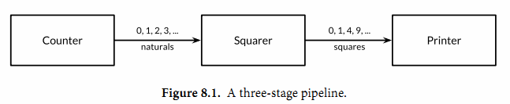
第一个goroutine是一个计数器，用于生成0、1、2、……形式的整数序列，然后通过channel将该整数序列发送给第二个goroutine；第二个goroutine是一个求平方的程序，对收到的每个整数求平方，然后将平方后的结果通过第二个channel发送给第三个goroutine；第三个goroutine是一个打印程序，打印收到的每个整数。为了保持例子清晰，我们有意选择了非常简单的函数，当然三个goroutine的计算很简单，在现实中确实没有必要为如此简单的运算构建三个goroutine。
gopl.io/ch8/pipeline1
func main() {
naturals := make(chan int)
squares := make(chan int)
// Counter
go func() {
for x := 0; ; x++ {
naturals <- x
}
}()
// Squarer
go func() {
for {
x := <-naturals
squares <- x * x
}
}()
// Printer (in main goroutine)
for {
fmt.Println(<-squares)
}
}
如您所料，上面的程序将生成0、1、4、9、……形式的无穷数列。像这样的串联Channels的管道（Pipelines）可以用在需要长时间运行的服务中，每个长时间运行的goroutine可能会包含一个死循环，在不同goroutine的死循环内部使用串联的Channels来通信。但是，如果我们希望通过Channels只发送有限的数列该如何处理呢？
如果发送者知道，没有更多的值需要发送到channel的话，那么让接收者也能及时知道没有多余的值可接收将是有用的，因为接收者可以停止不必要的接收等待。这可以通过内置的close函数来关闭channel实现：
close(naturals)
当一个channel被关闭后，再向该channel发送数据将导致panic异常。当一个被关闭的channel中已经发送的数据都被成功接收后，后续的接收操作将不再阻塞，它们会立即返回一个零值。关闭上面例子中的naturals变量对应的channel并不能终止循环，它依然会收到一个永无休止的零值序列，然后将它们发送给打印者goroutine。
没有办法直接测试一个channel是否被关闭，但是接收操作有一个变体形式：它多接收一个结果，多接收的第二个结果是一个布尔值ok，ture表示成功从channels接收到值，false表示channels已经被关闭并且里面没有值可接收。使用这个特性，我们可以修改squarer函数中的循环代码，当naturals对应的channel被关闭并没有值可接收时跳出循环，并且也关闭squares对应的channel.
// Squarer
go func() {
for {
x, ok := <-naturals
if !ok {
break // channel was closed and drained
}
squares <- x * x
}
close(squares)
}()
因为上面的语法是笨拙的，而且这种处理模式很常见，因此Go语言的range循环可直接在channels上面迭代。使用range循环是上面处理模式的简洁语法，它依次从channel接收数据，当channel被关闭并且没有值可接收时跳出循环。
在下面的改进中，我们的计数器goroutine只生成100个含数字的序列，然后关闭naturals对应的channel，这将导致计算平方数的squarer对应的goroutine可以正常终止循环并关闭squares对应的channel。（在一个更复杂的程序中，可以通过defer语句关闭对应的channel。）最后，主goroutine也可以正常终止循环并退出程序。
gopl.io/ch8/pipeline2
func main() {
naturals := make(chan int)
squares := make(chan int)
// Counter
go func() {
for x := 0; x < 100; x++ {
naturals <- x
}
close(naturals)
}()
// Squarer
go func() {
for x := range naturals {
squares <- x * x
}
close(squares)
}()
// Printer (in main goroutine)
for x := range squares {
fmt.Println(x)
}
}
其实你并不需要关闭每一个channel。只有当需要告诉接收者goroutine，所有的数据已经全部发送时才需要关闭channel。不管一个channel是否被关闭，当它没有被引用时将会被Go语言的垃圾自动回收器回收。（不要将关闭一个打开文件的操作和关闭一个channel操作混淆。对于每个打开的文件，都需要在不使用的时候调用对应的Close方法来关闭文件。）
试图重复关闭一个channel将导致panic异常，试图关闭一个nil值的channel也将导致panic异常。关闭一个channels还会触发一个广播机制，我们将在8.9节讨论。
8.4.3. 单方向的Channel
随着程序的增长，人们习惯于将大的函数拆分为小的函数。我们前面的例子中使用了三个goroutine，然后用两个channels来连接它们，它们都是main函数的局部变量。将三个goroutine拆分为以下三个函数是自然的想法：
func counter(out chan int)
func squarer(out, in chan int)
func printer(in chan int)
其中计算平方的squarer函数在两个串联Channels的中间，因此拥有两个channel类型的参数，一个用于输入一个用于输出。两个channel都拥有相同的类型，但是它们的使用方式相反：一个只用于接收，另一个只用于发送。参数的名字in和out已经明确表示了这个意图，但是并无法保证squarer函数向一个in参数对应的channel发送数据或者从一个out参数对应的channel接收数据。
这种场景是典型的。当一个channel作为一个函数参数时，它一般总是被专门用于只发送或者只接收。
为了表明这种意图并防止被滥用，Go语言的类型系统提供了单方向的channel类型，分别用于只发送或只接收的channel。类型chan<- int表示一个只发送int的channel，只能发送不能接收。相反，类型<-chan int表示一个只接收int的channel，只能接收不能发送。（箭头<-和关键字chan的相对位置表明了channel的方向。）这种限制将在编译期检测。
因为关闭操作只用于断言不再向channel发送新的数据，所以只有在发送者所在的goroutine才会调用close函数，因此对一个只接收的channel调用close将是一个编译错误。
这是改进的版本，这一次参数使用了单方向channel类型：
gopl.io/ch8/pipeline3
func counter(out chan<- int) {
for x := 0; x < 100; x++ {
out <- x
}
close(out)
}
func squarer(out chan<- int, in <-chan int) {
for v := range in {
out <- v * v
}
close(out)
}
func printer(in <-chan int) {
for v := range in {
fmt.Println(v)
}
}
func main() {
naturals := make(chan int)
squares := make(chan int)
go counter(naturals)
go squarer(squares, naturals)
printer(squares)
}
调用counter（naturals）时，naturals的类型将隐式地从chan int转换成chan<- int。调用printer(squares)也会导致相似的隐式转换，这一次是转换为<-chan int类型只接收型的channel。任何双向channel向单向channel变量的赋值操作都将导致该隐式转换。这里并没有反向转换的语法：也就是不能将一个类似chan<- int类型的单向型的channel转换为chan int类型的双向型的channel。
8.4.4. 带缓存的Channels
带缓存的Channel内部持有一个元素队列。队列的最大容量是在调用make函数创建channel时通过第二个参数指定的。下面的语句创建了一个可以持有三个字符串元素的带缓存Channel。图8.2是ch变量对应的channel的图形表示形式。
ch = make(chan string, 3)
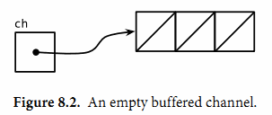
向缓存Channel的发送操作就是向内部缓存队列的尾部插入元素，接收操作则是从队列的头部删除元素。如果内部缓存队列是满的，那么发送操作将阻塞直到因另一个goroutine执行接收操作而释放了新的队列空间。相反，如果channel是空的，接收操作将阻塞直到有另一个goroutine执行发送操作而向队列插入元素。
我们可以在无阻塞的情况下连续向新创建的channel发送三个值：
ch <- "A"
ch <- "B"
ch <- "C"
此刻，channel的内部缓存队列将是满的（图8.3），如果有第四个发送操作将发生阻塞。
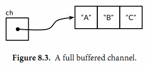
如果我们接收一个值，
fmt.Println(<-ch) // "A"
那么channel的缓存队列将不是满的也不是空的（图8.4），因此对该channel执行的发送或接收操作都不会发生阻塞。通过这种方式，channel的缓存队列解耦了接收和发送的goroutine。
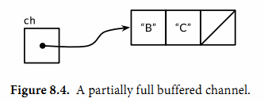
在某些特殊情况下，程序可能需要知道channel内部缓存的容量，可以用内置的cap函数获取：
fmt.Println(cap(ch)) // "3"
同样，对于内置的len函数，如果传入的是channel，那么将返回channel内部缓存队列中有效元素的个数。因为在并发程序中该信息会随着接收操作而失效，但是它对某些故障诊断和性能优化会有帮助。
fmt.Println(len(ch)) // "2"
在继续执行两次接收操作后channel内部的缓存队列将又成为空的，如果有第四个接收操作将发生阻塞：
fmt.Println(<-ch) // "B"
fmt.Println(<-ch) // "C"
在这个例子中，发送和接收操作都发生在同一个goroutine中，但是在真实的程序中它们一般由不同的goroutine执行。Go语言新手有时候会将一个带缓存的channel当作同一个goroutine中的队列使用，虽然语法看似简单，但实际上这是一个错误。Channel和goroutine的调度器机制是紧密相连的，如果没有其他goroutine从channel接收，发送者——或许是整个程序——将会面临永远阻塞的风险。如果你只是需要一个简单的队列，使用slice就可以了。
下面的例子展示了一个使用了带缓存channel的应用。它并发地向三个镜像站点发出请求，三个镜像站点分散在不同的地理位置。它们分别将收到的响应发送到带缓存channel，最后接收者只接收第一个收到的响应，也就是最快的那个响应。因此mirroredQuery函数可能在另外两个响应慢的镜像站点响应之前就返回了结果。（顺便说一下，多个goroutines并发地向同一个channel发送数据，或从同一个channel接收数据都是常见的用法。）
func mirroredQuery() string {
responses := make(chan string, 3)
go func() { responses <- request("asia.gopl.io") }()
go func() { responses <- request("europe.gopl.io") }()
go func() { responses <- request("americas.gopl.io") }()
return <-responses // return the quickest response
}
func request(hostname string) (response string) { /* ... */ }
如果我们使用了无缓存的channel，那么两个慢的goroutines将会因为没有人接收而被永远卡住。这种情况，称为goroutines泄漏，这将是一个BUG。和垃圾变量不同，泄漏的goroutines并不会被自动回收，因此确保每个不再需要的goroutine能正常退出是重要的。
关于无缓存或带缓存channels之间的选择，或者是带缓存channels的容量大小的选择，都可能影响程序的正确性。无缓存channel更强地保证了每个发送操作与相应的同步接收操作；但是对于带缓存channel，这些操作是解耦的。同样，即使我们知道将要发送到一个channel的信息的数量上限，创建一个对应容量大小的带缓存channel也是不现实的，因为这要求在执行任何接收操作之前缓存所有已经发送的值。如果未能分配足够的缓存将导致程序死锁。
Channel的缓存也可能影响程序的性能。想象一家蛋糕店有三个厨师，一个烘焙，一个上糖衣，还有一个将每个蛋糕传递到它下一个厨师的生产线。在狭小的厨房空间环境，每个厨师在完成蛋糕后必须等待下一个厨师已经准备好接受它；这类似于在一个无缓存的channel上进行沟通。
如果在每个厨师之间有一个放置一个蛋糕的额外空间，那么每个厨师就可以将一个完成的蛋糕临时放在那里而马上进入下一个蛋糕的制作中；这类似于将channel的缓存队列的容量设置为1。只要每个厨师的平均工作效率相近，那么其中大部分的传输工作将是迅速的，个体之间细小的效率差异将在交接过程中弥补。如果厨师之间有更大的额外空间——也是就更大容量的缓存队列——将可以在不停止生产线的前提下消除更大的效率波动，例如一个厨师可以短暂地休息，然后再加快赶上进度而不影响其他人。
另一方面，如果生产线的前期阶段一直快于后续阶段，那么它们之间的缓存在大部分时间都将是满的。相反，如果后续阶段比前期阶段更快，那么它们之间的缓存在大部分时间都将是空的。对于这类场景，额外的缓存并没有带来任何好处。
生产线的隐喻对于理解channels和goroutines的工作机制是很有帮助的。例如，如果第二阶段是需要精心制作的复杂操作，一个厨师可能无法跟上第一个厨师的进度，或者是无法满足第三阶段厨师的需求。要解决这个问题，我们可以再雇佣另一个厨师来帮助完成第二阶段的工作，他执行相同的任务但是独立工作。这类似于基于相同的channels创建另一个独立的goroutine。
我们没有太多的空间展示全部细节，但是gopl.io/ch8/cake包模拟了这个蛋糕店，可以通过不同的参数调整。它还对上面提到的几种场景提供对应的基准测试（§11.4） 。
8.5. 并发的循环
本节中，我们会探索一些用来在并行时循环迭代的常见并发模型。我们会探究从全尺寸图片生成一些缩略图的问题。gopl.io/ch8/thumbnail包提供了ImageFile函数来帮我们拉伸图片。我们不会说明这个函数的实现，只需要从gopl.io下载它。
gopl.io/ch8/thumbnail
package thumbnail
// ImageFile reads an image from infile and writes
// a thumbnail-size version of it in the same directory.
// It returns the generated file name, e.g., "foo.thumb.jpg".
func ImageFile(infile string) (string, error)
下面的程序会循环迭代一些图片文件名，并为每一张图片生成一个缩略图：
gopl.io/ch8/thumbnail
// makeThumbnails makes thumbnails of the specified files.
func makeThumbnails(filenames []string) {
for _, f := range filenames {
if _, err := thumbnail.ImageFile(f); err != nil {
log.Println(err)
}
}
}
显然我们处理文件的顺序无关紧要，因为每一个图片的拉伸操作和其它图片的处理操作都是彼此独立的。像这种子问题都是完全彼此独立的问题被叫做易并行问题（译注：embarrassingly parallel，直译的话更像是尴尬并行）。易并行问题是最容易被实现成并行的一类问题（废话），并且最能够享受到并发带来的好处，能够随着并行的规模线性地扩展。
下面让我们并行地执行这些操作，从而将文件IO的延迟隐藏掉，并用上多核cpu的计算能力来拉伸图像。我们的第一个并发程序只是使用了一个go关键字。这里我们先忽略掉错误，之后再进行处理。
// NOTE: incorrect!
func makeThumbnails2(filenames []string) {
for _, f := range filenames {
go thumbnail.ImageFile(f) // NOTE: ignoring errors
}
}
这个版本运行的实在有点太快，实际上，由于它比最早的版本使用的时间要短得多，即使当文件名的slice中只包含有一个元素。这就有点奇怪了，如果程序没有并发执行的话，那为什么一个并发的版本还是要快呢？答案其实是makeThumbnails在它还没有完成工作之前就已经返回了。它启动了所有的goroutine，每一个文件名对应一个，但没有等待它们一直到执行完毕。
没有什么直接的办法能够等待goroutine完成，但是我们可以改变goroutine里的代码让其能够将完成情况报告给外部的goroutine知晓，使用的方式是向一个共享的channel中发送事件。因为我们已经确切地知道有len(filenames)个内部goroutine，所以外部的goroutine只需要在返回之前对这些事件计数。
// makeThumbnails3 makes thumbnails of the specified files in parallel.
func makeThumbnails3(filenames []string) {
ch := make(chan struct{})
for _, f := range filenames {
go func(f string) {
thumbnail.ImageFile(f) // NOTE: ignoring errors
ch <- struct{}{}
}(f)
}
// Wait for goroutines to complete.
for range filenames {
<-ch
}
}
注意我们将f的值作为一个显式的变量传给了函数，而不是在循环的闭包中声明：
for _, f := range filenames {
go func() {
thumbnail.ImageFile(f) // NOTE: incorrect!
// ...
}()
}
回忆一下之前在5.6.1节中，匿名函数中的循环变量快照问题。上面这个单独的变量f是被所有的匿名函数值所共享，且会被连续的循环迭代所更新的。当新的goroutine开始执行字面函数时，for循环可能已经更新了f并且开始了另一轮的迭代或者（更有可能的）已经结束了整个循环，所以当这些goroutine开始读取f的值时，它们所看到的值已经是slice的最后一个元素了。显式地添加这个参数，我们能够确保使用的f是当go语句执行时的“当前”那个f。
如果我们想要从每一个worker goroutine往主goroutine中返回值时该怎么办呢？当我们调用thumbnail.ImageFile创建文件失败的时候，它会返回一个错误。下一个版本的makeThumbnails会返回其在做拉伸操作时接收到的第一个错误：
// makeThumbnails4 makes thumbnails for the specified files in parallel.
// It returns an error if any step failed.
func makeThumbnails4(filenames []string) error {
errors := make(chan error)
for _, f := range filenames {
go func(f string) {
_, err := thumbnail.ImageFile(f)
errors <- err
}(f)
}
for range filenames {
if err := <-errors; err != nil {
return err // NOTE: incorrect: goroutine leak!
}
}
return nil
}
这个程序有一个微妙的bug。当它遇到第一个非nil的error时会直接将error返回到调用方，使得没有一个goroutine去排空errors channel。这样剩下的worker goroutine在向这个channel中发送值时，都会永远地阻塞下去，并且永远都不会退出。这种情况叫做goroutine泄露（§8.4.4），可能会导致整个程序卡住或者跑出out of memory的错误。
最简单的解决办法就是用一个具有合适大小的buffered channel，这样这些worker goroutine向channel中发送错误时就不会被阻塞。（一个可选的解决办法是创建一个另外的goroutine，当main goroutine返回第一个错误的同时去排空channel。）
下一个版本的makeThumbnails使用了一个buffered channel来返回生成的图片文件的名字，附带生成时的错误。
// makeThumbnails5 makes thumbnails for the specified files in parallel.
// It returns the generated file names in an arbitrary order,
// or an error if any step failed.
func makeThumbnails5(filenames []string) (thumbfiles []string, err error) {
type item struct {
thumbfile string
err error
}
ch := make(chan item, len(filenames))
for _, f := range filenames {
go func(f string) {
var it item
it.thumbfile, it.err = thumbnail.ImageFile(f)
ch <- it
}(f)
}
for range filenames {
it := <-ch
if it.err != nil {
return nil, it.err
}
thumbfiles = append(thumbfiles, it.thumbfile)
}
return thumbfiles, nil
}
我们最后一个版本的makeThumbnails返回了新文件们的大小总计数（bytes）。和前面的版本都不一样的一点是我们在这个版本里没有把文件名放在slice里，而是通过一个string的channel传过来，所以我们无法对循环的次数进行预测。
为了知道最后一个goroutine什么时候结束（最后一个结束并不一定是最后一个开始），我们需要一个递增的计数器，在每一个goroutine启动时加一，在goroutine退出时减一。这需要一种特殊的计数器，这个计数器需要在多个goroutine操作时做到安全并且提供在其减为零之前一直等待的一种方法。这种计数类型被称为sync.WaitGroup，下面的代码就用到了这种方法：
// makeThumbnails6 makes thumbnails for each file received from the channel.
// It returns the number of bytes occupied by the files it creates.
func makeThumbnails6(filenames <-chan string) int64 {
sizes := make(chan int64)
var wg sync.WaitGroup // number of working goroutines
for f := range filenames {
wg.Add(1)
// worker
go func(f string) {
defer wg.Done()
thumb, err := thumbnail.ImageFile(f)
if err != nil {
log.Println(err)
return
}
info, _ := os.Stat(thumb) // OK to ignore error
sizes <- info.Size()
}(f)
}
// closer
go func() {
wg.Wait()
close(sizes)
}()
var total int64
for size := range sizes {
total += size
}
return total
}
注意Add和Done方法的不对称。Add是为计数器加一，必须在worker goroutine开始之前调用，而不是在goroutine中；否则的话我们没办法确定Add是在"closer" goroutine调用Wait之前被调用。并且Add还有一个参数，但Done却没有任何参数；其实它和Add(-1)是等价的。我们使用defer来确保计数器即使是在出错的情况下依然能够正确地被减掉。上面的程序代码结构是当我们使用并发循环，但又不知道迭代次数时很通常而且很地道的写法。
sizes channel携带了每一个文件的大小到main goroutine，在main goroutine中使用了range loop来计算总和。观察一下我们是怎样创建一个closer goroutine，并让其在所有worker goroutine们结束之后再关闭sizes channel的。两步操作：wait和close，必须是基于sizes的循环的并发。考虑一下另一种方案：如果等待操作被放在了main goroutine中，在循环之前，这样的话就永远都不会结束了，如果在循环之后，那么又变成了不可达的部分，因为没有任何东西去关闭这个channel，这个循环就永远都不会终止。
图8.5 表明了makethumbnails6函数中事件的序列。纵列表示goroutine。窄线段代表sleep，粗线段代表活动。斜线箭头代表用来同步两个goroutine的事件。时间向下流动。注意main goroutine是如何大部分的时间被唤醒执行其range循环，等待worker发送值或者closer来关闭channel的。
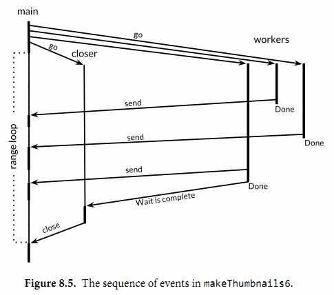
练习 8.4： 修改reverb2服务器，在每一个连接中使用sync.WaitGroup来计数活跃的echo goroutine。当计数减为零时，关闭TCP连接的写入，像练习8.3中一样。验证一下你的修改版netcat3客户端会一直等待所有的并发“喊叫”完成，即使是在标准输入流已经关闭的情况下。
练习 8.5： 使用一个已有的CPU绑定的顺序程序，比如在3.3节中我们写的Mandelbrot程序或者3.2节中的3-D surface计算程序，并将他们的主循环改为并发形式，使用channel来进行通信。在多核计算机上这个程序得到了多少速度上的改进？使用多少个goroutine是最合适的呢？
8.6. 示例: 并发的Web爬虫
在5.6节中，我们做了一个简单的web爬虫，用bfs(广度优先)算法来抓取整个网站。在本节中，我们会让这个爬虫并行化，这样每一个彼此独立的抓取命令可以并行进行IO，最大化利用网络资源。crawl函数和gopl.io/ch5/findlinks3中的是一样的。
gopl.io/ch8/crawl1
func crawl(url string) []string {
fmt.Println(url)
list, err := links.Extract(url)
if err != nil {
log.Print(err)
}
return list
}
主函数和5.6节中的breadthFirst(广度优先)类似。像之前一样，一个worklist是一个记录了需要处理的元素的队列，每一个元素都是一个需要抓取的URL列表，不过这一次我们用channel代替slice来做这个队列。每一个对crawl的调用都会在他们自己的goroutine中进行并且会把他们抓到的链接发送回worklist。
func main() {
worklist := make(chan []string)
// Start with the command-line arguments.
go func() { worklist <- os.Args[1:] }()
// Crawl the web concurrently.
seen := make(map[string]bool)
for list := range worklist {
for _, link := range list {
if !seen[link] {
seen[link] = true
go func(link string) {
worklist <- crawl(link)
}(link)
}
}
}
}
注意这里的crawl所在的goroutine会将link作为一个显式的参数传入，来避免“循环变量快照”的问题（在5.6.1中有讲解）。另外注意这里将命令行参数传入worklist也是在一个另外的goroutine中进行的，这是为了避免channel两端的main goroutine与crawler goroutine都尝试向对方发送内容，却没有一端接收内容时发生死锁。当然，这里我们也可以用buffered channel来解决问题，这里不再赘述。
现在爬虫可以高并发地运行起来，并且可以产生一大坨的URL了，不过还是会有俩问题。一个问题是在运行一段时间后可能会出现在log的错误信息里的：
$ go build gopl.io/ch8/crawl1
$ ./crawl1 http://gopl.io/
http://gopl.io/
https://golang.org/help/
https://golang.org/doc/
https://golang.org/blog/
...
2015/07/15 18:22:12 Get ...: dial tcp: lookup blog.golang.org: no such host
2015/07/15 18:22:12 Get ...: dial tcp 23.21.222.120:443: socket: too many open files
...
最初的错误信息是一个让人莫名的DNS查找失败，即使这个域名是完全可靠的。而随后的错误信息揭示了原因：这个程序一次性创建了太多网络连接，超过了每一个进程的打开文件数限制，既而导致了在调用net.Dial像DNS查找失败这样的问题。
这个程序实在是太他妈并行了。无穷无尽地并行化并不是什么好事情，因为不管怎么说，你的系统总是会有一些个限制因素，比如CPU核心数会限制你的计算负载，比如你的硬盘转轴和磁头数限制了你的本地磁盘IO操作频率，比如你的网络带宽限制了你的下载速度上限，或者是你的一个web服务的服务容量上限等等。为了解决这个问题，我们可以限制并发程序所使用的资源来使之适应自己的运行环境。对于我们的例子来说，最简单的方法就是限制对links.Extract在同一时间最多不会有超过n次调用，这里的n一般小于文件描述符的上限值，比如20。这和一个夜店里限制客人数目是一个道理，只有当有客人离开时，才会允许新的客人进入店内。
我们可以用一个有容量限制的buffered channel来控制并发，这类似于操作系统里的计数信号量概念。从概念上讲，channel里的n个空槽代表n个可以处理内容的token（通行证），从channel里接收一个值会释放其中的一个token，并且生成一个新的空槽位。这样保证了在没有接收介入时最多有n个发送操作。（这里可能我们拿channel里填充的槽来做token更直观一些，不过还是这样吧。）由于channel里的元素类型并不重要，我们用一个零值的struct{}来作为其元素。
让我们重写crawl函数，将对links.Extract的调用操作用获取、释放token的操作包裹起来，来确保同一时间对其只有20个调用。信号量数量和其能操作的IO资源数量应保持接近。
gopl.io/ch8/crawl2
// tokens is a counting semaphore used to
// enforce a limit of 20 concurrent requests.
var tokens = make(chan struct{}, 20)
func crawl(url string) []string {
fmt.Println(url)
tokens <- struct{}{} // acquire a token
list, err := links.Extract(url)
<-tokens // release the token
if err != nil {
log.Print(err)
}
return list
}
第二个问题是这个程序永远都不会终止，即使它已经爬到了所有初始链接衍生出的链接。（当然，除非你慎重地选择了合适的初始化URL或者已经实现了练习8.6中的深度限制，你应该还没有意识到这个问题。）为了使这个程序能够终止，我们需要在worklist为空或者没有crawl的goroutine在运行时退出主循环。
func main() {
worklist := make(chan []string)
var n int // number of pending sends to worklist
// Start with the command-line arguments.
n++
go func() { worklist <- os.Args[1:] }()
// Crawl the web concurrently.
seen := make(map[string]bool)
for ; n > 0; n-- {
list := <-worklist
for _, link := range list {
if !seen[link] {
seen[link] = true
n++
go func(link string) {
worklist <- crawl(link)
}(link)
}
}
}
}
这个版本中，计数器n对worklist的发送操作数量进行了限制。每一次我们发现有元素需要被发送到worklist时，我们都会对n进行++操作，在向worklist中发送初始的命令行参数之前，我们也进行过一次++操作。这里的操作++是在每启动一个crawler的goroutine之前。主循环会在n减为0时终止，这时候说明没活可干了。
现在这个并发爬虫会比5.6节中的深度优先搜索版快上20倍，而且不会出什么错，并且在其完成任务时也会正确地终止。
下面的程序是避免过度并发的另一种思路。这个版本使用了原来的crawl函数，但没有使用计数信号量，取而代之用了20个常驻的crawler goroutine，这样来保证最多20个HTTP请求在并发。
func main() {
worklist := make(chan []string) // lists of URLs, may have duplicates
unseenLinks := make(chan string) // de-duplicated URLs
// Add command-line arguments to worklist.
go func() { worklist <- os.Args[1:] }()
// Create 20 crawler goroutines to fetch each unseen link.
for i := 0; i < 20; i++ {
go func() {
for link := range unseenLinks {
foundLinks := crawl(link)
go func() { worklist <- foundLinks }()
}
}()
}
// The main goroutine de-duplicates worklist items
// and sends the unseen ones to the crawlers.
seen := make(map[string]bool)
for list := range worklist {
for _, link := range list {
if !seen[link] {
seen[link] = true
unseenLinks <- link
}
}
}
}
所有的爬虫goroutine现在都是被同一个channel - unseenLinks喂饱的了。主goroutine负责拆分它从worklist里拿到的元素，然后把没有抓过的经由unseenLinks channel发送给一个爬虫的goroutine。
seen这个map被限定在main goroutine中；也就是说这个map只能在main goroutine中进行访问。类似于其它的信息隐藏方式，这样的约束可以让我们从一定程度上保证程序的正确性。例如，内部变量不能够在函数外部被访问到；变量（§2.3.4）在没有发生变量逃逸（译注：局部变量被全局变量引用地址导致变量被分配在堆上）的情况下是无法在函数外部访问的；一个对象的封装字段无法被该对象的方法以外的方法访问到。在所有的情况下，信息隐藏都可以帮助我们约束我们的程序，使其不发生意料之外的情况。
crawl函数爬到的链接在一个专有的goroutine中被发送到worklist中来避免死锁。为了节省篇幅，这个例子的终止问题我们先不进行详细阐述了。
练习 8.6： 为并发爬虫增加深度限制。也就是说，如果用户设置了depth=3，那么只有从首页跳转三次以内能够跳到的页面才能被抓取到。
练习 8.7： 完成一个并发程序来创建一个线上网站的本地镜像，把该站点的所有可达的页面都抓取到本地硬盘。为了省事，我们这里可以只取出现在该域下的所有页面（比如golang.org开头，译注：外链的应该就不算了。）当然了，出现在页面里的链接你也需要进行一些处理，使其能够在你的镜像站点上进行跳转，而不是指向原始的链接。
译注： 拓展阅读 Handling 1 Million Requests per Minute with Go。
8.7. 基于select的多路复用
下面的程序会进行火箭发射的倒计时。time.Tick函数返回一个channel，程序会周期性地像一个节拍器一样向这个channel发送事件。每一个事件的值是一个时间戳，不过更有意思的是其传送方式。
gopl.io/ch8/countdown1
func main() {
fmt.Println("Commencing countdown.")
tick := time.Tick(1 * time.Second)
for countdown := 10; countdown > 0; countdown-- {
fmt.Println(countdown)
<-tick
}
launch()
}
现在我们让这个程序支持在倒计时中，用户按下return键时直接中断发射流程。首先，我们启动一个goroutine，这个goroutine会尝试从标准输入中读入一个单独的byte并且，如果成功了，会向名为abort的channel发送一个值。
gopl.io/ch8/countdown2
abort := make(chan struct{})
go func() {
os.Stdin.Read(make([]byte, 1)) // read a single byte
abort <- struct{}{}
}()
现在每一次计数循环的迭代都需要等待两个channel中的其中一个返回事件了：当一切正常时的ticker channel（就像NASA jorgon的"nominal"，译注：这梗估计我们是不懂了）或者异常时返回的abort事件。我们无法做到从每一个channel中接收信息，如果我们这么做的话，如果第一个channel中没有事件发过来那么程序就会立刻被阻塞，这样我们就无法收到第二个channel中发过来的事件。这时候我们需要多路复用（multiplex）这些操作了，为了能够多路复用，我们使用了select语句。
select {
case <-ch1:
// ...
case x := <-ch2:
// ...use x...
case ch3 <- y:
// ...
default:
// ...
}
上面是select语句的一般形式。和switch语句稍微有点相似，也会有几个case和最后的default选择分支。每一个case代表一个通信操作（在某个channel上进行发送或者接收），并且会包含一些语句组成的一个语句块。一个接收表达式可能只包含接收表达式自身（译注：不把接收到的值赋值给变量什么的），就像上面的第一个case，或者包含在一个简短的变量声明中，像第二个case里一样；第二种形式让你能够引用接收到的值。
select会等待case中有能够执行的case时去执行。当条件满足时，select才会去通信并执行case之后的语句；这时候其它通信是不会执行的。一个没有任何case的select语句写作select{}，会永远地等待下去。
让我们回到我们的火箭发射程序。time.After函数会立即返回一个channel，并起一个新的goroutine在经过特定的时间后向该channel发送一个独立的值。下面的select语句会一直等待直到两个事件中的一个到达，无论是abort事件或者一个10秒经过的事件。如果10秒经过了还没有abort事件进入，那么火箭就会发射。
func main() {
// ...create abort channel...
fmt.Println("Commencing countdown. Press return to abort.")
select {
case <-time.After(10 * time.Second):
// Do nothing.
case <-abort:
fmt.Println("Launch aborted!")
return
}
launch()
}
下面这个例子更微妙。ch这个channel的buffer大小是1，所以会交替的为空或为满，所以只有一个case可以进行下去，无论i是奇数或者偶数，它都会打印0 2 4 6 8。
ch := make(chan int, 1)
for i := 0; i < 10; i++ {
select {
case x := <-ch:
fmt.Println(x) // "0" "2" "4" "6" "8"
case ch <- i:
}
}
如果多个case同时就绪时，select会随机地选择一个执行，这样来保证每一个channel都有平等的被select的机会。增加前一个例子的buffer大小会使其输出变得不确定，因为当buffer既不为满也不为空时，select语句的执行情况就像是抛硬币的行为一样是随机的。
下面让我们的发射程序打印倒计时。这里的select语句会使每次循环迭代等待一秒来执行退出操作。
gopl.io/ch8/countdown3
func main() {
// ...create abort channel...
fmt.Println("Commencing countdown. Press return to abort.")
tick := time.Tick(1 * time.Second)
for countdown := 10; countdown > 0; countdown-- {
fmt.Println(countdown)
select {
case <-tick:
// Do nothing.
case <-abort:
fmt.Println("Launch aborted!")
return
}
}
launch()
}
time.Tick函数表现得好像它创建了一个在循环中调用time.Sleep的goroutine，每次被唤醒时发送一个事件。当countdown函数返回时，它会停止从tick中接收事件，但是ticker这个goroutine还依然存活，继续徒劳地尝试向channel中发送值，然而这时候已经没有其它的goroutine会从该channel中接收值了——这被称为goroutine泄露（§8.4.4）。
Tick函数挺方便，但是只有当程序整个生命周期都需要这个时间时我们使用它才比较合适。否则的话，我们应该使用下面的这种模式：
ticker := time.NewTicker(1 * time.Second)
<-ticker.C // receive from the ticker's channel
ticker.Stop() // cause the ticker's goroutine to terminate
有时候我们希望能够从channel中发送或者接收值，并避免因为发送或者接收导致的阻塞，尤其是当channel没有准备好写或者读时。select语句就可以实现这样的功能。select会有一个default来设置当其它的操作都不能够马上被处理时程序需要执行哪些逻辑。
下面的select语句会在abort channel中有值时，从其中接收值；无值时什么都不做。这是一个非阻塞的接收操作；反复地做这样的操作叫做“轮询channel”。
select {
case <-abort:
fmt.Printf("Launch aborted!\n")
return
default:
// do nothing
}
channel的零值是nil。也许会让你觉得比较奇怪，nil的channel有时候也是有一些用处的。因为对一个nil的channel发送和接收操作会永远阻塞，在select语句中操作nil的channel永远都不会被select到。
这使得我们可以用nil来激活或者禁用case，来达成处理其它输入或输出事件时超时和取消的逻辑。我们会在下一节中看到一个例子。
练习 8.8： 使用select来改造8.3节中的echo服务器，为其增加超时，这样服务器可以在客户端10秒中没有任何喊话时自动断开连接。
8.9. 并发的退出
有时候我们需要通知goroutine停止它正在干的事情，比如一个正在执行计算的web服务，然而它的客户端已经断开了和服务端的连接。
Go语言并没有提供在一个goroutine中终止另一个goroutine的方法，由于这样会导致goroutine之间的共享变量落在未定义的状态上。在8.7节中的rocket launch程序中，我们往名字叫abort的channel里发送了一个简单的值，在countdown的goroutine中会把这个值理解为自己的退出信号。但是如果我们想要退出两个或者任意多个goroutine怎么办呢？
一种可能的手段是向abort的channel里发送和goroutine数目一样多的事件来退出它们。如果这些goroutine中已经有一些自己退出了，那么会导致我们的channel里的事件数比goroutine还多，这样导致我们的发送直接被阻塞。另一方面，如果这些goroutine又生成了其它的goroutine，我们的channel里的数目又太少了，所以有些goroutine可能会无法接收到退出消息。一般情况下我们是很难知道在某一个时刻具体有多少个goroutine在运行着的。另外，当一个goroutine从abort channel中接收到一个值的时候，他会消费掉这个值，这样其它的goroutine就没法看到这条信息。为了能够达到我们退出goroutine的目的，我们需要更靠谱的策略，来通过一个channel把消息广播出去，这样goroutine们能够看到这条事件消息，并且在事件完成之后，可以知道这件事已经发生过了。
回忆一下我们关闭了一个channel并且被消费掉了所有已发送的值，操作channel之后的代码可以立即被执行，并且会产生零值。我们可以将这个机制扩展一下，来作为我们的广播机制：不要向channel发送值，而是用关闭一个channel来进行广播。
只要一些小修改，我们就可以把退出逻辑加入到前一节的du程序。首先，我们创建一个退出的channel，不需要向这个channel发送任何值，但其所在的闭包内要写明程序需要退出。我们同时还定义了一个工具函数，cancelled，这个函数在被调用的时候会轮询退出状态。
gopl.io/ch8/du4
var done = make(chan struct{})
func cancelled() bool {
select {
case <-done:
return true
default:
return false
}
}
下面我们创建一个从标准输入流中读取内容的goroutine，这是一个比较典型的连接到终端的程序。每当有输入被读到（比如用户按了回车键），这个goroutine就会把取消消息通过关闭done的channel广播出去。
// Cancel traversal when input is detected.
go func() {
os.Stdin.Read(make([]byte, 1)) // read a single byte
close(done)
}()
现在我们需要使我们的goroutine来对取消进行响应。在main goroutine中，我们添加了select的第三个case语句，尝试从done channel中接收内容。如果这个case被满足的话，在select到的时候即会返回，但在结束之前我们需要把fileSizes channel中的内容“排”空，在channel被关闭之前，舍弃掉所有值。这样可以保证对walkDir的调用不要被向fileSizes发送信息阻塞住，可以正确地完成。
for {
select {
case <-done:
// Drain fileSizes to allow existing goroutines to finish.
for range fileSizes {
// Do nothing.
}
return
case size, ok := <-fileSizes:
// ...
}
}
walkDir这个goroutine一启动就会轮询取消状态，如果取消状态被设置的话会直接返回，并且不做额外的事情。这样我们将所有在取消事件之后创建的goroutine改变为无操作。
func walkDir(dir string, n *sync.WaitGroup, fileSizes chan<- int64) {
defer n.Done()
if cancelled() {
return
}
for _, entry := range dirents(dir) {
// ...
}
}
在walkDir函数的循环中我们对取消状态进行轮询可以带来明显的益处，可以避免在取消事件发生时还去创建goroutine。取消本身是有一些代价的；想要快速的响应需要对程序逻辑进行侵入式的修改。确保在取消发生之后不要有代价太大的操作可能会需要修改你代码里的很多地方，但是在一些重要的地方去检查取消事件也确实能带来很大的好处。
对这个程序的一个简单的性能分析可以揭示瓶颈在dirents函数中获取一个信号量。下面的select可以让这种操作可以被取消，并且可以将取消时的延迟从几百毫秒降低到几十毫秒。
func dirents(dir string) []os.FileInfo {
select {
case sema <- struct{}{}: // acquire token
case <-done:
return nil // cancelled
}
defer func() { <-sema }() // release token
// ...read directory...
}
现在当取消发生时，所有后台的goroutine都会迅速停止并且主函数会返回。当然，当主函数返回时，一个程序会退出，而我们又无法在主函数退出的时候确认其已经释放了所有的资源（译注：因为程序都退出了，你的代码都没法执行了）。这里有一个方便的窍门我们可以一用：取代掉直接从主函数返回，我们调用一个panic，然后runtime会把每一个goroutine的栈dump下来。如果main goroutine是唯一一个剩下的goroutine的话，他会清理掉自己的一切资源。但是如果还有其它的goroutine没有退出，他们可能没办法被正确地取消掉，也有可能被取消但是取消操作会很花时间；所以这里的一个调研还是很有必要的。我们用panic来获取到足够的信息来验证我们上面的判断，看看最终到底是什么样的情况。
练习 8.10： HTTP请求可能会因http.Request结构体中Cancel channel的关闭而取消。修改8.6节中的web crawler来支持取消http请求。（提示：http.Get并没有提供方便地定制一个请求的方法。你可以用http.NewRequest来取而代之，设置它的Cancel字段，然后用http.DefaultClient.Do(req)来进行这个http请求。）
练习 8.11： 紧接着8.4.4中的mirroredQuery流程，实现一个并发请求url的fetch的变种。当第一个请求返回时，直接取消其它的请求。
8.10. 示例: 聊天服务
我们用一个聊天服务器来终结本章节的内容，这个程序可以让一些用户通过服务器向其它所有用户广播文本消息。这个程序中有四种goroutine。main和broadcaster各自是一个goroutine实例，每一个客户端的连接都会有一个handleConn和clientWriter的goroutine。broadcaster是select用法的不错的样例，因为它需要处理三种不同类型的消息。
下面演示的main goroutine的工作，是listen和accept(译注：网络编程里的概念)从客户端过来的连接。对每一个连接，程序都会建立一个新的handleConn的goroutine，就像我们在本章开头的并发的echo服务器里所做的那样。
gopl.io/ch8/chat
func main() {
listener, err := net.Listen("tcp", "localhost:8000")
if err != nil {
log.Fatal(err)
}
go broadcaster()
for {
conn, err := listener.Accept()
if err != nil {
log.Print(err)
continue
}
go handleConn(conn)
}
}
然后是broadcaster的goroutine。他的内部变量clients会记录当前建立连接的客户端集合。其记录的内容是每一个客户端的消息发出channel的“资格”信息。
type client chan<- string // an outgoing message channel
var (
entering = make(chan client)
leaving = make(chan client)
messages = make(chan string) // all incoming client messages
)
func broadcaster() {
clients := make(map[client]bool) // all connected clients
for {
select {
case msg := <-messages:
// Broadcast incoming message to all
// clients' outgoing message channels.
for cli := range clients {
cli <- msg
}
case cli := <-entering:
clients[cli] = true
case cli := <-leaving:
delete(clients, cli)
close(cli)
}
}
}
broadcaster监听来自全局的entering和leaving的channel来获知客户端的到来和离开事件。当其接收到其中的一个事件时，会更新clients集合，当该事件是离开行为时，它会关闭客户端的消息发送channel。broadcaster也会监听全局的消息channel，所有的客户端都会向这个channel中发送消息。当broadcaster接收到什么消息时，就会将其广播至所有连接到服务端的客户端。
现在让我们看看每一个客户端的goroutine。handleConn函数会为它的客户端创建一个消息发送channel并通过entering channel来通知客户端的到来。然后它会读取客户端发来的每一行文本，并通过全局的消息channel来将这些文本发送出去，并为每条消息带上发送者的前缀来标明消息身份。当客户端发送完毕后，handleConn会通过leaving这个channel来通知客户端的离开并关闭连接。
func handleConn(conn net.Conn) {
ch := make(chan string) // outgoing client messages
go clientWriter(conn, ch)
who := conn.RemoteAddr().String()
ch <- "You are " + who
messages <- who + " has arrived"
entering <- ch
input := bufio.NewScanner(conn)
for input.Scan() {
messages <- who + ": " + input.Text()
}
// NOTE: ignoring potential errors from input.Err()
leaving <- ch
messages <- who + " has left"
conn.Close()
}
func clientWriter(conn net.Conn, ch <-chan string) {
for msg := range ch {
fmt.Fprintln(conn, msg) // NOTE: ignoring network errors
}
}
另外，handleConn为每一个客户端创建了一个clientWriter的goroutine，用来接收向客户端发送消息的channel中的广播消息，并将它们写入到客户端的网络连接。客户端的读取循环会在broadcaster接收到leaving通知并关闭了channel后终止。
下面演示的是当服务器有两个活动的客户端连接，并且在两个窗口中运行的情况，使用netcat来聊天：
$ go build gopl.io/ch8/chat
$ go build gopl.io/ch8/netcat3
$ ./chat &
$ ./netcat3
You are 127.0.0.1:64208 $ ./netcat3
127.0.0.1:64211 has arrived You are 127.0.0.1:64211
Hi!
127.0.0.1:64208: Hi! 127.0.0.1:64208: Hi!
Hi yourself.
127.0.0.1:64211: Hi yourself. 127.0.0.1:64211: Hi yourself.
^C
127.0.0.1:64208 has left
$ ./netcat3
You are 127.0.0.1:64216 127.0.0.1:64216 has arrived
Welcome.
127.0.0.1:64211: Welcome. 127.0.0.1:64211: Welcome.
^C
127.0.0.1:64211 has left”
当与n个客户端保持聊天session时，这个程序会有2n+2个并发的goroutine，然而这个程序却并不需要显式的锁（§9.2）。clients这个map被限制在了一个独立的goroutine中，broadcaster，所以它不能被并发地访问。多个goroutine共享的变量只有这些channel和net.Conn的实例，两个东西都是并发安全的。我们会在下一章中更多地讲解约束，并发安全以及goroutine中共享变量的含义。
练习 8.12： 使broadcaster能够在每个新的客户端到来时通知它当前的客户端集合。这需要你在clients集合中，以及entering和leaving的channel中记录客户端的名字。
练习 8.13： 使聊天服务器能够断开空闲的客户端连接，比如最近五分钟之后没有发送任何消息的那些客户端。提示：可以在其它goroutine中调用conn.Close()来解除Read调用，就像input.Scanner()所做的那样。
练习 8.14： 修改聊天服务器的网络协议，这样每一个客户端就可以在entering时提供他们的名字。将消息前缀由之前的网络地址改为这个名字。
练习 8.15： 如果一个客户端没有及时地读取数据可能会导致所有的客户端被阻塞。修改broadcaster来跳过一条消息，而不是等待这个客户端一直到其准备好读写。或者为每一个客户端的消息发送channel建立缓冲区，这样大部分的消息便不会被丢掉；broadcaster应该用一个非阻塞的send向这个channel中发消息。
第9章 基于共享变量的并发
前一章我们介绍了一些使用goroutine和channel这样直接而自然的方式来实现并发的方法。然而这样做我们实际上回避了在写并发代码时必须处理的一些重要而且细微的问题。
在本章中，我们会细致地了解并发机制。尤其是在多goroutine之间的共享变量，并发问题的分析手段，以及解决这些问题的基本模式。最后我们会解释goroutine和操作系统线程之间的技术上的一些区别。
9.1. 竞争条件
在一个线性（就是说只有一个goroutine的）的程序中，程序的执行顺序只由程序的逻辑来决定。例如，我们有一段语句序列，第一个在第二个之前（废话），以此类推。在有两个或更多goroutine的程序中，每一个goroutine内的语句也是按照既定的顺序去执行的，但是一般情况下我们没法去知道分别位于两个goroutine的事件x和y的执行顺序，x是在y之前还是之后还是同时发生是没法判断的。当我们没有办法自信地确认一个事件是在另一个事件的前面或者后面发生的话，就说明x和y这两个事件是并发的。
考虑一下，一个函数在线性程序中可以正确地工作。如果在并发的情况下，这个函数依然可以正确地工作的话，那么我们就说这个函数是并发安全的，并发安全的函数不需要额外的同步工作。我们可以把这个概念概括为一个特定类型的一些方法和操作函数，对于某个类型来说，如果其所有可访问的方法和操作都是并发安全的话，那么该类型便是并发安全的。
在一个程序中有非并发安全的类型的情况下，我们依然可以使这个程序并发安全。确实，并发安全的类型是例外，而不是规则，所以只有当文档中明确地说明了其是并发安全的情况下，你才可以并发地去访问它。我们会避免并发访问大多数的类型，无论是将变量局限在单一的一个goroutine内，还是用互斥条件维持更高级别的不变性，都是为了这个目的。我们会在本章中说明这些术语。
相反，包级别的导出函数一般情况下都是并发安全的。由于package级的变量没法被限制在单一的gorouine，所以修改这些变量“必须”使用互斥条件。
一个函数在并发调用时没法工作的原因太多了，比如死锁（deadlock）、活锁（livelock）和饿死（resource starvation）。我们没有空去讨论所有的问题，这里我们只聚焦在竞争条件上。
竞争条件指的是程序在多个goroutine交叉执行操作时，没有给出正确的结果。竞争条件是很恶劣的一种场景，因为这种问题会一直潜伏在你的程序里，然后在非常少见的时候蹦出来，或许只是会在很大的负载时才会发生，又或许是会在使用了某一个编译器、某一种平台或者某一种架构的时候才会出现。这些使得竞争条件带来的问题非常难以复现而且难以分析诊断。
传统上经常用经济损失来为竞争条件做比喻，所以我们来看一个简单的银行账户程序。
// Package bank implements a bank with only one account.
package bank
var balance int
func Deposit(amount int) { balance = balance + amount }
func Balance() int { return balance }
(当然我们也可以把Deposit存款函数写成balance += amount，这种形式也是等价的，不过长一些的形式解释起来更方便一些。)
对于这个简单的程序而言，我们一眼就能看出，以任意顺序调用函数Deposit和Balance都会得到正确的结果。也就是说，Balance函数会给出之前的所有存入的额度之和。然而，当我们并发地而不是顺序地调用这些函数的话，Balance就再也没办法保证结果正确了。考虑一下下面的两个goroutine，其代表了一个银行联合账户的两笔交易：
// Alice:
go func() {
bank.Deposit(200) // A1
fmt.Println("=", bank.Balance()) // A2
}()
// Bob:
go bank.Deposit(100) // B
Alice存了$200，然后检查她的余额，同时Bob存了$100。因为A1和A2是和B并发执行的，我们没法预测他们发生的先后顺序。直观地来看的话，我们会认为其执行顺序只有三种可能性：“Alice先”，“Bob先”以及“Alice/Bob/Alice”交错执行。下面的表格会展示经过每一步骤后balance变量的值。引号里的字符串表示余额单。
Alice first Bob first Alice/Bob/Alice
0 0 0
A1 200 B 100 A1 200
A2 "= 200" A1 300 B 300
B 300 A2 "= 300" A2 "= 300"
所有情况下最终的余额都是$300。唯一的变数是Alice的余额单是否包含了Bob交易，不过无论怎么着客户都不会在意。
但是事实是上面的直觉推断是错误的。第四种可能的结果是事实存在的，这种情况下Bob的存款会在Alice存款操作中间，在余额被读到（balance + amount）之后，在余额被更新之前（balance = ...），这样会导致Bob的交易丢失。而这是因为Alice的存款操作A1实际上是两个操作的一个序列，读取然后写；可以称之为A1r和A1w。下面是交叉时产生的问题：
Data race
0
A1r 0 ... = balance + amount
B 100
A1w 200 balance = ...
A2 "= 200"
在A1r之后，balance + amount会被计算为200，所以这是A1w会写入的值，并不受其它存款操作的干预。最终的余额是$200。银行的账户上的资产比Bob实际的资产多了$100。（译注：因为丢失了Bob的存款操作，所以其实是说Bob的钱丢了。）
这个程序包含了一个特定的竞争条件，叫作数据竞争。无论任何时候，只要有两个goroutine并发访问同一变量，且至少其中的一个是写操作的时候就会发生数据竞争。
如果数据竞争的对象是一个比一个机器字（译注：32位机器上一个字=4个字节）更大的类型时，事情就变得更麻烦了，比如interface，string或者slice类型都是如此。下面的代码会并发地更新两个不同长度的slice：
var x []int
go func() { x = make([]int, 10) }()
go func() { x = make([]int, 1000000) }()
x[999999] = 1 // NOTE: undefined behavior; memory corruption possible!
最后一个语句中的x的值是未定义的；其可能是nil，或者也可能是一个长度为10的slice，也可能是一个长度为1,000,000的slice。但是回忆一下slice的三个组成部分：指针（pointer）、长度（length）和容量（capacity）。如果指针是从第一个make调用来，而长度从第二个make来，x就变成了一个混合体，一个自称长度为1,000,000但实际上内部只有10个元素的slice。这样导致的结果是存储999,999元素的位置会碰撞一个遥远的内存位置，这种情况下难以对值进行预测，而且debug也会变成噩梦。这种语义雷区被称为未定义行为，对C程序员来说应该很熟悉；幸运的是在Go语言里造成的麻烦要比C里小得多。
尽管并发程序的概念让我们知道并发并不是简单的语句交叉执行。我们将会在9.4节中看到，数据竞争可能会有奇怪的结果。许多程序员，甚至一些非常聪明的人也还是会偶尔提出一些理由来允许数据竞争，比如：“互斥条件代价太高”，“这个逻辑只是用来做logging”，“我不介意丢失一些消息”等等。因为在他们的编译器或者平台上很少遇到问题，可能给了他们错误的信心。一个好的经验法则是根本就没有什么所谓的良性数据竞争。所以我们一定要避免数据竞争，那么在我们的程序中要如何做到呢？
我们来重复一下数据竞争的定义，因为实在太重要了：数据竞争会在两个以上的goroutine并发访问相同的变量且至少其中一个为写操作时发生。根据上述定义，有三种方式可以避免数据竞争：
第一种方法是不要去写变量。考虑一下下面的map，会被“懒”填充，也就是说在每个key被第一次请求到的时候才会去填值。如果Icon是被顺序调用的话，这个程序会工作很正常，但如果Icon被并发调用，那么对于这个map来说就会存在数据竞争。
var icons = make(map[string]image.Image)
func loadIcon(name string) image.Image
// NOTE: not concurrency-safe!
func Icon(name string) image.Image {
icon, ok := icons[name]
if !ok {
icon = loadIcon(name)
icons[name] = icon
}
return icon
}
反之，如果我们在创建goroutine之前的初始化阶段，就初始化了map中的所有条目并且再也不去修改它们，那么任意数量的goroutine并发访问Icon都是安全的，因为每一个goroutine都只是去读取而已。
var icons = map[string]image.Image{
"spades.png": loadIcon("spades.png"),
"hearts.png": loadIcon("hearts.png"),
"diamonds.png": loadIcon("diamonds.png"),
"clubs.png": loadIcon("clubs.png"),
}
// Concurrency-safe.
func Icon(name string) image.Image { return icons[name] }
上面的例子里icons变量在包初始化阶段就已经被赋值了，包的初始化是在程序main函数开始执行之前就完成了的。只要初始化完成了，icons就再也不会被修改。数据结构如果从不被修改或是不变量则是并发安全的，无需进行同步。不过显然，如果update操作是必要的，我们就没法用这种方法，比如说银行账户。
第二种避免数据竞争的方法是，避免从多个goroutine访问变量。这也是前一章中大多数程序所采用的方法。例如前面的并发web爬虫（§8.6）的main goroutine是唯一一个能够访问seen map的goroutine，而聊天服务器（§8.10）中的broadcaster goroutine是唯一一个能够访问clients map的goroutine。这些变量都被限定在了一个单独的goroutine中。
由于其它的goroutine不能够直接访问变量，它们只能使用一个channel来发送请求给指定的goroutine来查询更新变量。这也就是Go的口头禅“不要使用共享数据来通信；使用通信来共享数据”。一个提供对一个指定的变量通过channel来请求的goroutine叫做这个变量的monitor（监控）goroutine。例如broadcaster goroutine会监控clients map的全部访问。
下面是一个重写了的银行的例子，这个例子中balance变量被限制在了monitor goroutine中，名为teller：
gopl.io/ch9/bank1
// Package bank provides a concurrency-safe bank with one account.
package bank
var deposits = make(chan int) // send amount to deposit
var balances = make(chan int) // receive balance
func Deposit(amount int) { deposits <- amount }
func Balance() int { return <-balances }
func teller() {
var balance int // balance is confined to teller goroutine
for {
select {
case amount := <-deposits:
balance += amount
case balances <- balance:
}
}
}
func init() {
go teller() // start the monitor goroutine
}
即使当一个变量无法在其整个生命周期内被绑定到一个独立的goroutine，绑定依然是并发问题的一个解决方案。例如在一条流水线上的goroutine之间共享变量是很普遍的行为，在这两者间会通过channel来传输地址信息。如果流水线的每一个阶段都能够避免在将变量传送到下一阶段后再去访问它，那么对这个变量的所有访问就是线性的。其效果是变量会被绑定到流水线的一个阶段，传送完之后被绑定到下一个，以此类推。这种规则有时被称为串行绑定。
下面的例子中，Cakes会被严格地顺序访问，先是baker gorouine，然后是icer gorouine：
type Cake struct{ state string }
func baker(cooked chan<- *Cake) {
for {
cake := new(Cake)
cake.state = "cooked"
cooked <- cake // baker never touches this cake again
}
}
func icer(iced chan<- *Cake, cooked <-chan *Cake) {
for cake := range cooked {
cake.state = "iced"
iced <- cake // icer never touches this cake again
}
}
第三种避免数据竞争的方法是允许很多goroutine去访问变量，但是在同一个时刻最多只有一个goroutine在访问。这种方式被称为“互斥”，在下一节来讨论这个主题。
练习 9.1： 给gopl.io/ch9/bank1程序添加一个Withdraw(amount int)取款函数。其返回结果应该要表明事务是成功了还是因为没有足够资金失败了。这条消息会被发送给monitor的goroutine，且消息需要包含取款的额度和一个新的channel，这个新channel会被monitor goroutine来把boolean结果发回给Withdraw。
9.2. sync.Mutex互斥锁
在8.6节中，我们使用了一个buffered channel作为一个计数信号量，来保证最多只有20个goroutine会同时执行HTTP请求。同理，我们可以用一个容量只有1的channel来保证最多只有一个goroutine在同一时刻访问一个共享变量。一个只能为1和0的信号量叫做二元信号量（binary semaphore）。
gopl.io/ch9/bank2
var (
sema = make(chan struct{}, 1) // a binary semaphore guarding balance
balance int
)
func Deposit(amount int) {
sema <- struct{}{} // acquire token
balance = balance + amount
<-sema // release token
}
func Balance() int {
sema <- struct{}{} // acquire token
b := balance
<-sema // release token
return b
}
这种互斥很实用，而且被sync包里的Mutex类型直接支持。它的Lock方法能够获取到token(这里叫锁)，并且Unlock方法会释放这个token：
gopl.io/ch9/bank3
import "sync"
var (
mu sync.Mutex // guards balance
balance int
)
func Deposit(amount int) {
mu.Lock()
balance = balance + amount
mu.Unlock()
}
func Balance() int {
mu.Lock()
b := balance
mu.Unlock()
return b
}
每次一个goroutine访问bank变量时（这里只有balance余额变量），它都会调用mutex的Lock方法来获取一个互斥锁。如果其它的goroutine已经获得了这个锁的话，这个操作会被阻塞直到其它goroutine调用了Unlock使该锁变回可用状态。mutex会保护共享变量。惯例来说，被mutex所保护的变量是在mutex变量声明之后立刻声明的。如果你的做法和惯例不符，确保在文档里对你的做法进行说明。
在Lock和Unlock之间的代码段中的内容goroutine可以随便读取或者修改，这个代码段叫做临界区。锁的持有者在其他goroutine获取该锁之前需要调用Unlock。goroutine在结束后释放锁是必要的，无论以哪条路径通过函数都需要释放，即使是在错误路径中，也要记得释放。
上面的bank程序例证了一种通用的并发模式。一系列的导出函数封装了一个或多个变量，那么访问这些变量唯一的方式就是通过这些函数来做（或者方法，对于一个对象的变量来说）。每一个函数在一开始就获取互斥锁并在最后释放锁，从而保证共享变量不会被并发访问。这种函数、互斥锁和变量的编排叫作监控monitor（这种老式单词的monitor是受“monitor goroutine”的术语启发而来的。两种用法都是一个代理人保证变量被顺序访问）。
由于在存款和查询余额函数中的临界区代码这么短——只有一行，没有分支调用——在代码最后去调用Unlock就显得更为直截了当。在更复杂的临界区的应用中，尤其是必须要尽早处理错误并返回的情况下，就很难去（靠人）判断对Lock和Unlock的调用是在所有路径中都能够严格配对的了。Go语言里的defer简直就是这种情况下的救星：我们用defer来调用Unlock，临界区会隐式地延伸到函数作用域的最后，这样我们就从“总要记得在函数返回之后或者发生错误返回时要记得调用一次Unlock”这种状态中获得了解放。Go会自动帮我们完成这些事情。
func Balance() int {
mu.Lock()
defer mu.Unlock()
return balance
}
上面的例子里Unlock会在return语句读取完balance的值之后执行，所以Balance函数是并发安全的。这带来的另一点好处是，我们再也不需要一个本地变量b了。
此外，一个deferred Unlock即使在临界区发生panic时依然会执行，这对于用recover（§5.10）来恢复的程序来说是很重要的。defer调用只会比显式地调用Unlock成本高那么一点点，不过却在很大程度上保证了代码的整洁性。大多数情况下对于并发程序来说，代码的整洁性比过度的优化更重要。如果可能的话尽量使用defer来将临界区扩展到函数的结束。
考虑一下下面的Withdraw函数。成功的时候，它会正确地减掉余额并返回true。但如果银行记录资金对交易来说不足，那么取款就会恢复余额，并返回false。
// NOTE: not atomic!
func Withdraw(amount int) bool {
Deposit(-amount)
if Balance() < 0 {
Deposit(amount)
return false // insufficient funds
}
return true
}
函数终于给出了正确的结果，但是还有一点讨厌的副作用。当过多的取款操作同时执行时，balance可能会瞬时被减到0以下。这可能会引起一个并发的取款被不合逻辑地拒绝。所以如果Bob尝试买一辆sports car时，Alice可能就没办法为她的早咖啡付款了。这里的问题是取款不是一个原子操作：它包含了三个步骤，每一步都需要去获取并释放互斥锁，但任何一次锁都不会锁上整个取款流程。
理想情况下，取款应该只在整个操作中获得一次互斥锁。下面这样的尝试是错误的：
// NOTE: incorrect!
func Withdraw(amount int) bool {
mu.Lock()
defer mu.Unlock()
Deposit(-amount)
if Balance() < 0 {
Deposit(amount)
return false // insufficient funds
}
return true
}
上面这个例子中，Deposit会调用mu.Lock()第二次去获取互斥锁，但因为mutex已经锁上了，而无法被重入（译注：go里没有重入锁，关于重入锁的概念，请参考java）——也就是说没法对一个已经锁上的mutex来再次上锁——这会导致程序死锁，没法继续执行下去，Withdraw会永远阻塞下去。
关于Go的mutex不能重入这一点我们有很充分的理由。mutex的目的是确保共享变量在程序执行时的关键点上能够保证不变性。不变性的一层含义是“没有goroutine访问共享变量”，但实际上这里对于mutex保护的变量来说，不变性还包含更深层含义：当一个goroutine获得了一个互斥锁时，它能断定被互斥锁保护的变量正处于不变状态（译注：即没有其他代码块正在读写共享变量），在其获取并保持锁期间，可能会去更新共享变量，这样不变性只是短暂地被破坏，然而当其释放锁之后，锁必须保证共享变量重获不变性并且多个goroutine按顺序访问共享变量。尽管一个可以重入的mutex也可以保证没有其它的goroutine在访问共享变量，但它不具备不变性更深层含义。（译注：更详细的解释，Russ Cox认为可重入锁是bug的温床，是一个失败的设计）
一个通用的解决方案是将一个函数分离为多个函数，比如我们把Deposit分离成两个：一个不导出的函数deposit，这个函数假设锁总是会被保持并去做实际的操作，另一个是导出的函数Deposit，这个函数会调用deposit，但在调用前会先去获取锁。同理我们可以将Withdraw也表示成这种形式：
func Withdraw(amount int) bool {
mu.Lock()
defer mu.Unlock()
deposit(-amount)
if balance < 0 {
deposit(amount)
return false // insufficient funds
}
return true
}
func Deposit(amount int) {
mu.Lock()
defer mu.Unlock()
deposit(amount)
}
func Balance() int {
mu.Lock()
defer mu.Unlock()
return balance
}
// This function requires that the lock be held.
func deposit(amount int) { balance += amount }
当然，这里的存款deposit函数很小，实际上取款Withdraw函数不需要理会对它的调用，尽管如此，这里的表达还是表明了规则。
封装（§6.6），用限制一个程序中的意外交互的方式，可以使我们获得数据结构的不变性。因为某种原因，封装还帮我们获得了并发的不变性。当你使用mutex时，确保mutex和其保护的变量没有被导出（在go里也就是小写，且不要被大写字母开头的函数访问啦），无论这些变量是包级的变量还是一个struct的字段。
9.3. sync.RWMutex读写锁
在100刀的存款消失时不做记录多少还是会让我们有一些恐慌，Bob写了一个程序，每秒运行几百次来检查他的银行余额。他会在家，在工作中，甚至会在他的手机上来运行这个程序。银行注意到这些陡增的流量使得存款和取款有了延时，因为所有的余额查询请求是顺序执行的，这样会互斥地获得锁，并且会暂时阻止其它的goroutine运行。
由于Balance函数只需要读取变量的状态，所以我们同时让多个Balance调用并发运行事实上是安全的，只要在运行的时候没有存款或者取款操作就行。在这种场景下我们需要一种特殊类型的锁，其允许多个只读操作并行执行，但写操作会完全互斥。这种锁叫作“多读单写”锁（multiple readers, single writer lock），Go语言提供的这样的锁是sync.RWMutex：
var mu sync.RWMutex
var balance int
func Balance() int {
mu.RLock() // readers lock
defer mu.RUnlock()
return balance
}
Balance函数现在调用了RLock和RUnlock方法来获取和释放一个读取或者共享锁。Deposit函数没有变化，会调用mu.Lock和mu.Unlock方法来获取和释放一个写或互斥锁。
在这次修改后，Bob的余额查询请求就可以彼此并行地执行并且会很快地完成了。锁在更多的时间范围可用，并且存款请求也能够及时地被响应了。
RLock只能在临界区共享变量没有任何写入操作时可用。一般来说，我们不应该假设逻辑上的只读函数/方法也不会去更新某一些变量。比如一个方法功能是访问一个变量，但它也有可能会同时去给一个内部的计数器+1（译注：可能是记录这个方法的访问次数啥的），或者去更新缓存——使即时的调用能够更快。如果有疑惑的话，请使用互斥锁。
RWMutex只有当获得锁的大部分goroutine都是读操作，而锁在竞争条件下，也就是说，goroutine们必须等待才能获取到锁的时候，RWMutex才是最能带来好处的。RWMutex需要更复杂的内部记录，所以会让它比一般的无竞争锁的mutex慢一些。
9.4. 内存同步
你可能比较纠结为什么Balance方法需要用到互斥条件，无论是基于channel还是基于互斥量。毕竟和存款不一样，它只由一个简单的操作组成，所以不会碰到其它goroutine在其执行“期间”执行其它逻辑的风险。这里使用mutex有两方面考虑。第一Balance不会在其它操作比如Withdraw“中间”执行。第二（更重要的）是“同步”不仅仅是一堆goroutine执行顺序的问题，同样也会涉及到内存的问题。
在现代计算机中可能会有一堆处理器，每一个都会有其本地缓存（local cache）。为了效率，对内存的写入一般会在每一个处理器中缓冲，并在必要时一起flush到主存。这种情况下这些数据可能会以与当初goroutine写入顺序不同的顺序被提交到主存。像channel通信或者互斥量操作这样的原语会使处理器将其聚集的写入flush并commit，这样goroutine在某个时间点上的执行结果才能被其它处理器上运行的goroutine得到。
考虑一下下面代码片段的可能输出：
var x, y int
go func() {
x = 1 // A1
fmt.Print("y:", y, " ") // A2
}()
go func() {
y = 1 // B1
fmt.Print("x:", x, " ") // B2
}()
因为两个goroutine是并发执行，并且访问共享变量时也没有互斥，会有数据竞争，所以程序的运行结果没法预测的话也请不要惊讶。我们可能希望它能够打印出下面这四种结果中的一种，相当于几种不同的交错执行时的情况：
y:0 x:1
x:0 y:1
x:1 y:1
y:1 x:1
第四行可以被解释为执行顺序A1,B1,A2,B2或者B1,A1,A2,B2的执行结果。然而实际运行时还是有些情况让我们有点惊讶：
x:0 y:0
y:0 x:0
根据所使用的编译器，CPU，或者其它很多影响因子，这两种情况也是有可能发生的。那么这两种情况要怎么解释呢？
在一个独立的goroutine中，每一个语句的执行顺序是可以被保证的，也就是说goroutine内顺序是连贯的。但是在不使用channel且不使用mutex这样的显式同步操作时，我们就没法保证事件在不同的goroutine中看到的执行顺序是一致的了。尽管goroutine A中一定需要观察到x=1执行成功之后才会去读取y，但它没法确保自己观察得到goroutine B中对y的写入，所以A还可能会打印出y的一个旧版的值。
尽管去理解并发的一种尝试是去将其运行理解为不同goroutine语句的交错执行，但看看上面的例子，这已经不是现代的编译器和cpu的工作方式了。因为赋值和打印指向不同的变量，编译器可能会断定两条语句的顺序不会影响执行结果，并且会交换两个语句的执行顺序。如果两个goroutine在不同的CPU上执行，每一个核心有自己的缓存，这样一个goroutine的写入对于其它goroutine的Print，在主存同步之前就是不可见的了。
所有并发的问题都可以用一致的、简单的既定的模式来规避。所以可能的话，将变量限定在goroutine内部；如果是多个goroutine都需要访问的变量，使用互斥条件来访问。
9.6. 竞争条件检测
即使我们小心到不能再小心，但在并发程序中犯错还是太容易了。幸运的是，Go的runtime和工具链为我们装备了一个复杂但好用的动态分析工具，竞争检查器（the race detector）。
只要在go build，go run或者go test命令后面加上-race的flag，就会使编译器创建一个你的应用的“修改”版或者一个附带了能够记录所有运行期对共享变量访问工具的test，并且会记录下每一个读或者写共享变量的goroutine的身份信息。另外，修改版的程序会记录下所有的同步事件，比如go语句，channel操作，以及对(*sync.Mutex).Lock，(*sync.WaitGroup).Wait等等的调用。（完整的同步事件集合是在The Go Memory Model文档中有说明，该文档是和语言文档放在一起的。译注：https://golang.org/ref/mem ）
竞争检查器会检查这些事件，会寻找在哪一个goroutine中出现了这样的case，例如其读或者写了一个共享变量，这个共享变量是被另一个goroutine在没有进行干预同步操作便直接写入的。这种情况也就表明了是对一个共享变量的并发访问，即数据竞争。这个工具会打印一份报告，内容包含变量身份，读取和写入的goroutine中活跃的函数的调用栈。这些信息在定位问题时通常很有用。9.7节中会有一个竞争检查器的实战样例。
竞争检查器会报告所有的已经发生的数据竞争。然而，它只能检测到运行时的竞争条件；并不能证明之后不会发生数据竞争。所以为了使结果尽量正确，请保证你的测试并发地覆盖到了你的包。
由于需要额外的记录，因此构建时加了竞争检测的程序跑起来会慢一些，且需要更大的内存，即使是这样，这些代价对于很多生产环境的程序（工作）来说还是可以接受的。对于一些偶发的竞争条件来说，让竞争检查器来干活可以节省无数日夜的debugging。（译注：多少服务端C和C++程序员为此竞折腰。）
9.7. 示例: 并发的非阻塞缓存
本节中我们会做一个无阻塞的缓存，这种工具可以帮助我们来解决现实世界中并发程序出现但没有现成的库可以解决的问题。这个问题叫作缓存（memoizing）函数（译注：Memoization的定义： memoization 一词是Donald Michie 根据拉丁语memorandum杜撰的一个词。相应的动词、过去分词、ing形式有memoiz、memoized、memoizing），也就是说，我们需要缓存函数的返回结果，这样在对函数进行调用的时候，我们就只需要一次计算，之后只要返回计算的结果就可以了。我们的解决方案会是并发安全且会避免对整个缓存加锁而导致所有操作都去争一个锁的设计。
我们将使用下面的httpGetBody函数作为我们需要缓存的函数的一个样例。这个函数会去进行HTTP GET请求并且获取http响应body。对这个函数的调用本身开销是比较大的，所以我们尽量避免在不必要的时候反复调用。
func httpGetBody(url string) (interface{}, error) {
resp, err := http.Get(url)
if err != nil {
return nil, err
}
defer resp.Body.Close()
return ioutil.ReadAll(resp.Body)
}
最后一行稍微隐藏了一些细节。ReadAll会返回两个结果，一个[]byte数组和一个错误，不过这两个对象可以被赋值给httpGetBody的返回声明里的interface{}和error类型，所以我们也就可以这样返回结果并且不需要额外的工作了。我们在httpGetBody中选用这种返回类型是为了使其可以与缓存匹配。
下面是我们要设计的cache的第一个“草稿”：
gopl.io/ch9/memo1
// Package memo provides a concurrency-unsafe
// memoization of a function of type Func.
package memo
// A Memo caches the results of calling a Func.
type Memo struct {
f Func
cache map[string]result
}
// Func is the type of the function to memoize.
type Func func(key string) (interface{}, error)
type result struct {
value interface{}
err error
}
func New(f Func) *Memo {
return &Memo{f: f, cache: make(map[string]result)}
}
// NOTE: not concurrency-safe!
func (memo *Memo) Get(key string) (interface{}, error) {
res, ok := memo.cache[key]
if !ok {
res.value, res.err = memo.f(key)
memo.cache[key] = res
}
return res.value, res.err
}
Memo实例会记录需要缓存的函数f（类型为Func），以及缓存内容（里面是一个string到result映射的map）。每一个result都是简单的函数返回的值对儿——一个值和一个错误值。继续下去我们会展示一些Memo的变种，不过所有的例子都会遵循上面的这些方面。
下面是一个使用Memo的例子。对于流入的URL的每一个元素我们都会调用Get，并打印调用延时以及其返回的数据大小的log：
m := memo.New(httpGetBody)
for url := range incomingURLs() {
start := time.Now()
value, err := m.Get(url)
if err != nil {
log.Print(err)
}
fmt.Printf("%s, %s, %d bytes\n",
url, time.Since(start), len(value.([]byte)))
}
我们可以使用测试包（第11章的主题）来系统地鉴定缓存的效果。从下面的测试输出，我们可以看到URL流包含了一些重复的情况，尽管我们第一次对每一个URL的(*Memo).Get的调用都会花上几百毫秒，但第二次就只需要花1毫秒就可以返回完整的数据了。
$ go test -v gopl.io/ch9/memo1
=== RUN Test
https://golang.org, 175.026418ms, 7537 bytes
https://godoc.org, 172.686825ms, 6878 bytes
https://play.golang.org, 115.762377ms, 5767 bytes
http://gopl.io, 749.887242ms, 2856 bytes
https://golang.org, 721ns, 7537 bytes
https://godoc.org, 152ns, 6878 bytes
https://play.golang.org, 205ns, 5767 bytes
http://gopl.io, 326ns, 2856 bytes
--- PASS: Test (1.21s)
PASS
ok gopl.io/ch9/memo1 1.257s
这个测试是顺序地去做所有的调用的。
由于这种彼此独立的HTTP请求可以很好地并发，我们可以把这个测试改成并发形式。可以使用sync.WaitGroup来等待所有的请求都完成之后再返回。
m := memo.New(httpGetBody)
var n sync.WaitGroup
for url := range incomingURLs() {
n.Add(1)
go func(url string) {
start := time.Now()
value, err := m.Get(url)
if err != nil {
log.Print(err)
}
fmt.Printf("%s, %s, %d bytes\n",
url, time.Since(start), len(value.([]byte)))
n.Done()
}(url)
}
n.Wait()
这次测试跑起来更快了，然而不幸的是貌似这个测试不是每次都能够正常工作。我们注意到有一些意料之外的cache miss（缓存未命中），或者命中了缓存但却返回了错误的值，或者甚至会直接崩溃。
但更糟糕的是，有时候这个程序还是能正确的运行（译：也就是最让人崩溃的偶发bug），所以我们甚至可能都不会意识到这个程序有bug。但是我们可以使用-race这个flag来运行程序，竞争检测器（§9.6）会打印像下面这样的报告：
$ go test -run=TestConcurrent -race -v gopl.io/ch9/memo1
=== RUN TestConcurrent
...
WARNING: DATA RACE
Write by goroutine 36:
runtime.mapassign1()
~/go/src/runtime/hashmap.go:411 +0x0
gopl.io/ch9/memo1.(*Memo).Get()
~/gobook2/src/gopl.io/ch9/memo1/memo.go:32 +0x205
...
Previous write by goroutine 35:
runtime.mapassign1()
~/go/src/runtime/hashmap.go:411 +0x0
gopl.io/ch9/memo1.(*Memo).Get()
~/gobook2/src/gopl.io/ch9/memo1/memo.go:32 +0x205
...
Found 1 data race(s)
FAIL gopl.io/ch9/memo1 2.393s
memo.go的32行出现了两次，说明有两个goroutine在没有同步干预的情况下更新了cache map。这表明Get不是并发安全的，存在数据竞争。
28 func (memo *Memo) Get(key string) (interface{}, error) {
29 res, ok := memo.cache(key)
30 if !ok {
31 res.value, res.err = memo.f(key)
32 memo.cache[key] = res
33 }
34 return res.value, res.err
35 }
最简单的使cache并发安全的方式是使用基于监控的同步。只要给Memo加上一个mutex，在Get的一开始获取互斥锁，return的时候释放锁，就可以让cache的操作发生在临界区内了：
gopl.io/ch9/memo2
type Memo struct {
f Func
mu sync.Mutex // guards cache
cache map[string]result
}
// Get is concurrency-safe.
func (memo *Memo) Get(key string) (value interface{}, err error) {
memo.mu.Lock()
res, ok := memo.cache[key]
if !ok {
res.value, res.err = memo.f(key)
memo.cache[key] = res
}
memo.mu.Unlock()
return res.value, res.err
}
测试依然并发进行，但这回竞争检查器“沉默”了。不幸的是对于Memo的这一点改变使我们完全丧失了并发的性能优点。每次对f的调用期间都会持有锁，Get将本来可以并行运行的I/O操作串行化了。我们本章的目的是完成一个无锁缓存，而不是现在这样的将所有请求串行化的函数的缓存。
下一个Get的实现，调用Get的goroutine会两次获取锁：查找阶段获取一次，如果查找没有返回任何内容，那么进入更新阶段会再次获取。在这两次获取锁的中间阶段，其它goroutine可以随意使用cache。
gopl.io/ch9/memo3
func (memo *Memo) Get(key string) (value interface{}, err error) {
memo.mu.Lock()
res, ok := memo.cache[key]
memo.mu.Unlock()
if !ok {
res.value, res.err = memo.f(key)
// Between the two critical sections, several goroutines
// may race to compute f(key) and update the map.
memo.mu.Lock()
memo.cache[key] = res
memo.mu.Unlock()
}
return res.value, res.err
}
这些修改使性能再次得到了提升，但有一些URL被获取了两次。这种情况在两个以上的goroutine同一时刻调用Get来请求同样的URL时会发生。多个goroutine一起查询cache，发现没有值，然后一起调用f这个慢不拉叽的函数。在得到结果后，也都会去更新map。其中一个获得的结果会覆盖掉另一个的结果。
理想情况下是应该避免掉多余的工作的。而这种“避免”工作一般被称为duplicate suppression（重复抑制/避免）。下面版本的Memo每一个map元素都是指向一个条目的指针。每一个条目包含对函数f调用结果的内容缓存。与之前不同的是这次entry还包含了一个叫ready的channel。在条目的结果被设置之后，这个channel就会被关闭，以向其它goroutine广播（§8.9）去读取该条目内的结果是安全的了。
gopl.io/ch9/memo4
type entry struct {
res result
ready chan struct{} // closed when res is ready
}
func New(f Func) *Memo {
return &Memo{f: f, cache: make(map[string]*entry)}
}
type Memo struct {
f Func
mu sync.Mutex // guards cache
cache map[string]*entry
}
func (memo *Memo) Get(key string) (value interface{}, err error) {
memo.mu.Lock()
e := memo.cache[key]
if e == nil {
// This is the first request for this key.
// This goroutine becomes responsible for computing
// the value and broadcasting the ready condition.
e = &entry{ready: make(chan struct{})}
memo.cache[key] = e
memo.mu.Unlock()
e.res.value, e.res.err = memo.f(key)
close(e.ready) // broadcast ready condition
} else {
// This is a repeat request for this key.
memo.mu.Unlock()
<-e.ready // wait for ready condition
}
return e.res.value, e.res.err
}
现在Get函数包括下面这些步骤了：获取互斥锁来保护共享变量cache map，查询map中是否存在指定条目，如果没有找到那么分配空间插入一个新条目，释放互斥锁。如果存在条目的话且其值没有写入完成（也就是有其它的goroutine在调用f这个慢函数）时，goroutine必须等待值ready之后才能读到条目的结果。而想知道是否ready的话，可以直接从ready channel中读取，由于这个读取操作在channel关闭之前一直是阻塞。
如果没有条目的话，需要向map中插入一个没有准备好的条目，当前正在调用的goroutine就需要负责调用慢函数、更新条目以及向其它所有goroutine广播条目已经ready可读的消息了。
条目中的e.res.value和e.res.err变量是在多个goroutine之间共享的。创建条目的goroutine同时也会设置条目的值，其它goroutine在收到"ready"的广播消息之后立刻会去读取条目的值。尽管会被多个goroutine同时访问，但却并不需要互斥锁。ready channel的关闭一定会发生在其它goroutine接收到广播事件之前，因此第一个goroutine对这些变量的写操作是一定发生在这些读操作之前的。不会发生数据竞争。
这样并发、不重复、无阻塞的cache就完成了。
上面这样Memo的实现使用了一个互斥量来保护多个goroutine调用Get时的共享map变量。不妨把这种设计和前面提到的把map变量限制在一个单独的monitor goroutine的方案做一些对比，后者在调用Get时需要发消息。
Func、result和entry的声明和之前保持一致：
// Func is the type of the function to memoize.
type Func func(key string) (interface{}, error)
// A result is the result of calling a Func.
type result struct {
value interface{}
err error
}
type entry struct {
res result
ready chan struct{} // closed when res is ready
}
然而Memo类型现在包含了一个叫做requests的channel，Get的调用方用这个channel来和monitor goroutine来通信。requests channel中的元素类型是request。Get的调用方会把这个结构中的两组key都填充好，实际上用这两个变量来对函数进行缓存的。另一个叫response的channel会被拿来发送响应结果。这个channel只会传回一个单独的值。
gopl.io/ch9/memo5
// A request is a message requesting that the Func be applied to key.
type request struct {
key string
response chan<- result // the client wants a single result
}
type Memo struct{ requests chan request }
// New returns a memoization of f. Clients must subsequently call Close.
func New(f Func) *Memo {
memo := &Memo{requests: make(chan request)}
go memo.server(f)
return memo
}
func (memo *Memo) Get(key string) (interface{}, error) {
response := make(chan result)
memo.requests <- request{key, response}
res := <-response
return res.value, res.err
}
func (memo *Memo) Close() { close(memo.requests) }
上面的Get方法，会创建一个response channel，把它放进request结构中，然后发送给monitor goroutine，然后马上又会接收它。
cache变量被限制在了monitor goroutine ``(*Memo).server`中，下面会看到。monitor会在循环中一直读取请求，直到request channel被Close方法关闭。每一个请求都会去查询cache，如果没有找到条目的话，那么就会创建/插入一个新的条目。
func (memo *Memo) server(f Func) {
cache := make(map[string]*entry)
for req := range memo.requests {
e := cache[req.key]
if e == nil {
// This is the first request for this key.
e = &entry{ready: make(chan struct{})}
cache[req.key] = e
go e.call(f, req.key) // call f(key)
}
go e.deliver(req.response)
}
}
func (e *entry) call(f Func, key string) {
// Evaluate the function.
e.res.value, e.res.err = f(key)
// Broadcast the ready condition.
close(e.ready)
}
func (e *entry) deliver(response chan<- result) {
// Wait for the ready condition.
<-e.ready
// Send the result to the client.
response <- e.res
}
和基于互斥量的版本类似，第一个对某个key的请求需要负责去调用函数f并传入这个key，将结果存在条目里，并关闭ready channel来广播条目的ready消息。使用(*entry).call来完成上述工作。
紧接着对同一个key的请求会发现map中已经有了存在的条目，然后会等待结果变为ready，并将结果从response发送给客户端的goroutien。上述工作是用(*entry).deliver来完成的。对call和deliver方法的调用必须让它们在自己的goroutine中进行以确保monitor goroutines不会因此而被阻塞住而没法处理新的请求。
这个例子说明我们无论用上锁，还是通信来建立并发程序都是可行的。
上面的两种方案并不好说特定情境下哪种更好，不过了解他们还是有价值的。有时候从一种方式切换到另一种可以使你的代码更为简洁。（译注：不是说好的golang推崇通信并发么。）
练习 9.3： 扩展Func类型和(*Memo).Get方法，支持调用方提供一个可选的done channel，使其具备通过该channel来取消整个操作的能力（§8.9）。一个被取消了的Func的调用结果不应该被缓存。
9.8. Goroutines和线程
在上一章中我们说goroutine和操作系统的线程区别可以先忽略。尽管两者的区别实际上只是一个量的区别，但量变会引起质变的道理同样适用于goroutine和线程。现在正是我们来区分开两者的最佳时机。
9.8.1. 动态栈
每一个OS线程都有一个固定大小的内存块（一般会是2MB）来做栈，这个栈会用来存储当前正在被调用或挂起（指在调用其它函数时）的函数的内部变量。这个固定大小的栈同时很大又很小。因为2MB的栈对于一个小小的goroutine来说是很大的内存浪费，比如对于我们用到的，一个只是用来WaitGroup之后关闭channel的goroutine来说。而对于go程序来说，同时创建成百上千个goroutine是非常普遍的，如果每一个goroutine都需要这么大的栈的话，那这么多的goroutine就不太可能了。除去大小的问题之外，固定大小的栈对于更复杂或者更深层次的递归函数调用来说显然是不够的。修改固定的大小可以提升空间的利用率，允许创建更多的线程，并且可以允许更深的递归调用，不过这两者是没法同时兼备的。
相反，一个goroutine会以一个很小的栈开始其生命周期，一般只需要2KB。一个goroutine的栈，和操作系统线程一样，会保存其活跃或挂起的函数调用的本地变量，但是和OS线程不太一样的是，一个goroutine的栈大小并不是固定的；栈的大小会根据需要动态地伸缩。而goroutine的栈的最大值有1GB，比传统的固定大小的线程栈要大得多，尽管一般情况下，大多goroutine都不需要这么大的栈。
** 练习 9.4:** 创建一个流水线程序，支持用channel连接任意数量的goroutine，在跑爆内存之前，可以创建多少流水线阶段？一个变量通过整个流水线需要用多久？（这个练习题翻译不是很确定）
9.8.2. Goroutine调度
OS线程会被操作系统内核调度。每几毫秒，一个硬件计时器会中断处理器，这会调用一个叫作scheduler的内核函数。这个函数会挂起当前执行的线程并将它的寄存器内容保存到内存中，检查线程列表并决定下一次哪个线程可以被运行，并从内存中恢复该线程的寄存器信息，然后恢复执行该线程的现场并开始执行线程。因为操作系统线程是被内核所调度，所以从一个线程向另一个“移动”需要完整的上下文切换，也就是说，保存一个用户线程的状态到内存，恢复另一个线程的到寄存器，然后更新调度器的数据结构。这几步操作很慢，因为其局部性很差需要几次内存访问，并且会增加运行的cpu周期。
Go的运行时包含了其自己的调度器，这个调度器使用了一些技术手段，比如m:n调度，因为其会在n个操作系统线程上多工（调度）m个goroutine。Go调度器的工作和内核的调度是相似的，但是这个调度器只关注单独的Go程序中的goroutine（译注：按程序独立）。
和操作系统的线程调度不同的是，Go调度器并不是用一个硬件定时器，而是被Go语言“建筑”本身进行调度的。例如当一个goroutine调用了time.Sleep，或者被channel调用或者mutex操作阻塞时，调度器会使其进入休眠并开始执行另一个goroutine，直到时机到了再去唤醒第一个goroutine。因为这种调度方式不需要进入内核的上下文，所以重新调度一个goroutine比调度一个线程代价要低得多。
** 练习 9.5: ** 写一个有两个goroutine的程序，两个goroutine会向两个无buffer channel反复地发送ping-pong消息。这样的程序每秒可以支持多少次通信？
9.8.3. GOMAXPROCS
Go的调度器使用了一个叫做GOMAXPROCS的变量来决定会有多少个操作系统的线程同时执行Go的代码。其默认的值是运行机器上的CPU的核心数，所以在一个有8个核心的机器上时，调度器一次会在8个OS线程上去调度GO代码。（GOMAXPROCS是前面说的m:n调度中的n）。在休眠中的或者在通信中被阻塞的goroutine是不需要一个对应的线程来做调度的。在I/O中或系统调用中或调用非Go语言函数时，是需要一个对应的操作系统线程的，但是GOMAXPROCS并不需要将这几种情况计算在内。
你可以用GOMAXPROCS的环境变量来显式地控制这个参数，或者也可以在运行时用runtime.GOMAXPROCS函数来修改它。我们在下面的小程序中会看到GOMAXPROCS的效果，这个程序会无限打印0和1。
for {
go fmt.Print(0)
fmt.Print(1)
}
$ GOMAXPROCS=1 go run hacker-cliché.go
111111111111111111110000000000000000000011111...
$ GOMAXPROCS=2 go run hacker-cliché.go
010101010101010101011001100101011010010100110...
在第一次执行时，最多同时只能有一个goroutine被执行。初始情况下只有main goroutine被执行，所以会打印很多1。过了一段时间后，GO调度器会将其置为休眠，并唤醒另一个goroutine，这时候就开始打印很多0了，在打印的时候，goroutine是被调度到操作系统线程上的。在第二次执行时，我们使用了两个操作系统线程，所以两个goroutine可以一起被执行，以同样的频率交替打印0和1。我们必须强调的是goroutine的调度是受很多因子影响的，而runtime也是在不断地发展演进的，所以这里的你实际得到的结果可能会因为版本的不同而与我们运行的结果有所不同。
** 练习9.6:** 测试一下计算密集型的并发程序（练习8.5那样的）会被GOMAXPROCS怎样影响到。在你的电脑上最佳的值是多少？你的电脑CPU有多少个核心？
9.8.4. Goroutine没有ID号
在大多数支持多线程的操作系统和程序语言中，当前的线程都有一个独特的身份（id），并且这个身份信息可以以一个普通值的形式被很容易地获取到，典型的可以是一个integer或者指针值。这种情况下我们做一个抽象化的thread-local storage（线程本地存储，多线程编程中不希望其它线程访问的内容）就很容易，只需要以线程的id作为key的一个map就可以解决问题，每一个线程以其id就能从中获取到值，且和其它线程互不冲突。
goroutine没有可以被程序员获取到的身份（id）的概念。这一点是设计上故意而为之，由于thread-local storage总是会被滥用。比如说，一个web server是用一种支持tls的语言实现的，而非常普遍的是很多函数会去寻找HTTP请求的信息，这代表它们就是去其存储层（这个存储层有可能是tls）查找的。这就像是那些过分依赖全局变量的程序一样，会导致一种非健康的“距离外行为”，在这种行为下，一个函数的行为可能并不仅由自己的参数所决定，而是由其所运行在的线程所决定。因此，如果线程本身的身份会改变——比如一些worker线程之类的——那么函数的行为就会变得神秘莫测。
Go鼓励更为简单的模式，这种模式下参数（译注：外部显式参数和内部显式参数。tls 中的内容算是"外部"隐式参数）对函数的影响都是显式的。这样不仅使程序变得更易读，而且会让我们自由地向一些给定的函数分配子任务时不用担心其身份信息影响行为。
你现在应该已经明白了写一个Go程序所需要的所有语言特性信息。在后面两章节中，我们会回顾一些之前的实例和工具，支持我们写出更大规模的程序：如何将一个工程组织成一系列的包，如何获取，构建，测试，性能测试，剖析，写文档，并且将这些包分享出去。
第10章 包和工具
现在随便一个小程序的实现都可能包含超过10000个函数。然而作者一般只需要考虑其中很小的一部分和做很少的设计，因为绝大部分代码都是由他人编写的，它们通过类似包或模块的方式被重用。
Go语言有超过100个的标准包（译注：可以用go list std | wc -l命令查看标准包的具体数目），标准库为大多数的程序提供了必要的基础构件。在Go的社区，有很多成熟的包被设计、共享、重用和改进，目前互联网上已经发布了非常多的Go语言开源包，它们可以通过 http://godoc.org 检索。在本章，我们将演示如何使用已有的包和创建新的包。
Go还自带了工具箱，里面有很多用来简化工作区和包管理的小工具。在本书开始的时候，我们已经见识过如何使用工具箱自带的工具来下载、构建和运行我们的演示程序了。在本章，我们将看看这些工具的基本设计理论和尝试更多的功能，例如打印工作区中包的文档和查询相关的元数据等。在下一章，我们将探讨testing包的单元测试用法。
10.1. 包简介
任何包系统设计的目的都是为了简化大型程序的设计和维护工作，通过将一组相关的特性放进一个独立的单元以便于理解和更新，在每个单元更新的同时保持和程序中其它单元的相对独立性。这种模块化的特性允许每个包可以被其它的不同项目共享和重用，在项目范围内、甚至全球范围统一的分发和复用。
每个包一般都定义了一个不同的名字空间用于它内部的每个标识符的访问。每个名字空间关联到一个特定的包，让我们给类型、函数等选择简短明了的名字，这样可以在使用它们的时候减少和其它部分名字的冲突。
每个包还通过控制包内名字的可见性和是否导出来实现封装特性。通过限制包成员的可见性并隐藏包API的具体实现，将允许包的维护者在不影响外部包用户的前提下调整包的内部实现。通过限制包内变量的可见性，还可以强制用户通过某些特定函数来访问和更新内部变量，这样可以保证内部变量的一致性和并发时的互斥约束。
当我们修改了一个源文件，我们必须重新编译该源文件对应的包和所有依赖该包的其他包。即使是从头构建，Go语言编译器的编译速度也明显快于其它编译语言。Go语言的闪电般的编译速度主要得益于三个语言特性。第一点，所有导入的包必须在每个文件的开头显式声明，这样的话编译器就没有必要读取和分析整个源文件来判断包的依赖关系。第二点，禁止包的环状依赖，因为没有循环依赖，包的依赖关系形成一个有向无环图，每个包可以被独立编译，而且很可能是被并发编译。第三点，编译后包的目标文件不仅仅记录包本身的导出信息，目标文件同时还记录了包的依赖关系。因此，在编译一个包的时候，编译器只需要读取每个直接导入包的目标文件，而不需要遍历所有依赖的的文件（译注：很多都是重复的间接依赖）。
10.2. 导入路径
每个包是由一个全局唯一的字符串所标识的导入路径定位。出现在import语句中的导入路径也是字符串。
import (
"fmt"
"math/rand"
"encoding/json"
"golang.org/x/net/html"
"github.com/go-sql-driver/mysql"
)
就像我们在2.6.1节提到过的，Go语言的规范并没有指明包的导入路径字符串的具体含义，导入路径的具体含义是由构建工具来解释的。在本章，我们将深入讨论Go语言工具箱的功能，包括大家经常使用的构建测试等功能。当然，也有第三方扩展的工具箱存在。例如，Google公司内部的Go语言码农，他们就使用内部的多语言构建系统（译注：Google公司使用的是类似Bazel的构建系统，支持多种编程语言，目前该构件系统还不能完整支持Windows环境），用不同的规则来处理包名字和定位包，用不同的规则来处理单元测试等等，因为这样可以更紧密适配他们内部环境。
如果你计划分享或发布包，那么导入路径最好是全球唯一的。为了避免冲突，所有非标准库包的导入路径建议以所在组织的互联网域名为前缀；而且这样也有利于包的检索。例如，上面的import语句导入了Go团队维护的HTML解析器和一个流行的第三方维护的MySQL驱动。
10.3. 包声明
在每个Go语言源文件的开头都必须有包声明语句。包声明语句的主要目的是确定当前包被其它包导入时默认的标识符（也称为包名）。
例如，math/rand包的每个源文件的开头都包含package rand包声明语句，所以当你导入这个包，你就可以用rand.Int、rand.Float64类似的方式访问包的成员。
package main
import (
"fmt"
"math/rand"
)
func main() {
fmt.Println(rand.Int())
}
通常来说，默认的包名就是包导入路径名的最后一段，因此即使两个包的导入路径不同，它们依然可能有一个相同的包名。例如，math/rand包和crypto/rand包的包名都是rand。稍后我们将看到如何同时导入两个有相同包名的包。
关于默认包名一般采用导入路径名的最后一段的约定也有三种例外情况。第一个例外，包对应一个可执行程序，也就是main包，这时候main包本身的导入路径是无关紧要的。名字为main的包是给go build（§10.7.3）构建命令一个信息，这个包编译完之后必须调用连接器生成一个可执行程序。
第二个例外，包所在的目录中可能有一些文件名是以_test.go为后缀的Go源文件（译注：前面必须有其它的字符，因为以_或.开头的源文件会被构建工具忽略），并且这些源文件声明的包名也是以_test为后缀名的。这种目录可以包含两种包：一种是普通包，另一种则是测试的外部扩展包。所有以_test为后缀包名的测试外部扩展包都由go test命令独立编译，普通包和测试的外部扩展包是相互独立的。测试的外部扩展包一般用来避免测试代码中的循环导入依赖，具体细节我们将在11.2.4节中介绍。
第三个例外，一些依赖版本号的管理工具会在导入路径后追加版本号信息，例如“gopkg.in/yaml.v2”。这种情况下包的名字并不包含版本号后缀，而是yaml。
10.4. 导入声明
可以在一个Go语言源文件包声明语句之后，其它非导入声明语句之前，包含零到多个导入包声明语句。每个导入声明可以单独指定一个导入路径，也可以通过圆括号同时导入多个导入路径。下面两个导入形式是等价的，但是第二种形式更为常见。
import "fmt"
import "os"
import (
"fmt"
"os"
)
导入的包之间可以通过添加空行来分组；通常将来自不同组织的包独自分组。包的导入顺序无关紧要，但是在每个分组中一般会根据字符串顺序排列。（gofmt和goimports工具都可以将不同分组导入的包独立排序。）
import (
"fmt"
"html/template"
"os"
"golang.org/x/net/html"
"golang.org/x/net/ipv4"
)
如果我们想同时导入两个有着名字相同的包，例如math/rand包和crypto/rand包，那么导入声明必须至少为一个同名包指定一个新的包名以避免冲突。这叫做导入包的重命名。
import (
"crypto/rand"
mrand "math/rand" // alternative name mrand avoids conflict
)
导入包的重命名只影响当前的源文件。其它的源文件如果导入了相同的包，可以用导入包原本默认的名字或重命名为另一个完全不同的名字。
导入包重命名是一个有用的特性，它不仅仅只是为了解决名字冲突。如果导入的一个包名很笨重，特别是在一些自动生成的代码中，这时候用一个简短名称会更方便。选择用简短名称重命名导入包时候最好统一，以避免包名混乱。选择另一个包名称还可以帮助避免和本地普通变量名产生冲突。例如，如果文件中已经有了一个名为path的变量，那么我们可以将“path”标准包重命名为pathpkg。
每个导入声明语句都明确指定了当前包和被导入包之间的依赖关系。如果遇到包循环导入的情况，Go语言的构建工具将报告错误。
10.5. 包的匿名导入
如果只是导入一个包而并不使用导入的包将会导致一个编译错误。但是有时候我们只是想利用导入包而产生的副作用：它会计算包级变量的初始化表达式和执行导入包的init初始化函数（§2.6.2）。这时候我们需要抑制“unused import”编译错误，我们可以用下划线_来重命名导入的包。像往常一样，下划线_为空白标识符，并不能被访问。
import _ "image/png" // register PNG decoder
这个被称为包的匿名导入。它通常是用来实现一个编译时机制，然后通过在main主程序入口选择性地导入附加的包。首先，让我们看看如何使用该特性，然后再看看它是如何工作的。
标准库的image图像包包含了一个Decode函数，用于从io.Reader接口读取数据并解码图像，它调用底层注册的图像解码器来完成任务，然后返回image.Image类型的图像。使用image.Decode很容易编写一个图像格式的转换工具，读取一种格式的图像，然后编码为另一种图像格式：
gopl.io/ch10/jpeg
// The jpeg command reads a PNG image from the standard input
// and writes it as a JPEG image to the standard output.
package main
import (
"fmt"
"image"
"image/jpeg"
_ "image/png" // register PNG decoder
"io"
"os"
)
func main() {
if err := toJPEG(os.Stdin, os.Stdout); err != nil {
fmt.Fprintf(os.Stderr, "jpeg: %v\n", err)
os.Exit(1)
}
}
func toJPEG(in io.Reader, out io.Writer) error {
img, kind, err := image.Decode(in)
if err != nil {
return err
}
fmt.Fprintln(os.Stderr, "Input format =", kind)
return jpeg.Encode(out, img, &jpeg.Options{Quality: 95})
}
如果我们将gopl.io/ch3/mandelbrot（§3.3）的输出导入到这个程序的标准输入，它将解码输入的PNG格式图像，然后转换为JPEG格式的图像输出（图3.3）。
$ go build gopl.io/ch3/mandelbrot
$ go build gopl.io/ch10/jpeg
$ ./mandelbrot | ./jpeg >mandelbrot.jpg
Input format = png
要注意image/png包的匿名导入语句。如果没有这一行语句，程序依然可以编译和运行，但是它将不能正确识别和解码PNG格式的图像：
$ go build gopl.io/ch10/jpeg
$ ./mandelbrot | ./jpeg >mandelbrot.jpg
jpeg: image: unknown format
下面的代码演示了它的工作机制。标准库还提供了GIF、PNG和JPEG等格式图像的解码器，用户也可以提供自己的解码器，但是为了保持程序体积较小，很多解码器并没有被全部包含，除非是明确需要支持的格式。image.Decode函数在解码时会依次查询支持的格式列表。每个格式驱动列表的每个入口指定了四件事情：格式的名称；一个用于描述这种图像数据开头部分模式的字符串，用于解码器检测识别；一个Decode函数用于完成解码图像工作；一个DecodeConfig函数用于解码图像的大小和颜色空间的信息。每个驱动入口是通过调用image.RegisterFormat函数注册，一般是在每个格式包的init初始化函数中调用，例如image/png包是这样注册的：
package png // image/png
func Decode(r io.Reader) (image.Image, error)
func DecodeConfig(r io.Reader) (image.Config, error)
func init() {
const pngHeader = "\x89PNG\r\n\x1a\n"
image.RegisterFormat("png", pngHeader, Decode, DecodeConfig)
}
最终的效果是，主程序只需要匿名导入特定图像驱动包就可以用image.Decode解码对应格式的图像了。
数据库包database/sql也是采用了类似的技术，让用户可以根据自己需要选择导入必要的数据库驱动。例如：
import (
"database/sql"
_ "github.com/lib/pq" // enable support for Postgres
_ "github.com/go-sql-driver/mysql" // enable support for MySQL
)
db, err = sql.Open("postgres", dbname) // OK
db, err = sql.Open("mysql", dbname) // OK
db, err = sql.Open("sqlite3", dbname) // returns error: unknown driver "sqlite3"
练习 10.1： 扩展jpeg程序，以支持任意图像格式之间的相互转换，使用image.Decode检测支持的格式类型，然后通过flag命令行标志参数选择输出的格式。
练习 10.2： 设计一个通用的压缩文件读取框架，用来读取ZIP（archive/zip）和POSIX tar（archive/tar）格式压缩的文档。使用类似上面的注册技术来扩展支持不同的压缩格式，然后根据需要通过匿名导入选择导入要支持的压缩格式的驱动包。
10.6. 包和命名
在本节中，我们将提供一些关于Go语言独特的包和成员命名的约定。
当创建一个包，一般要用短小的包名，但也不能太短导致难以理解。标准库中最常用的包有bufio、bytes、flag、fmt、http、io、json、os、sort、sync和time等包。
尽可能让命名有描述性且无歧义。例如，类似imageutil或ioutilis的工具包命名已经足够简洁了，就无须再命名为util了。要尽量避免包名使用可能被经常用于局部变量的名字，这样可能导致用户重命名导入包，例如前面看到的path包。
包名一般采用单数的形式。标准库的bytes、errors和strings使用了复数形式，这是为了避免和预定义的类型冲突，同样还有go/types是为了避免和type关键字冲突。
要避免包名有其它的含义。例如，2.5节中我们的温度转换包最初使用了temp包名，虽然并没有持续多久。但这是一个糟糕的尝试，因为temp几乎是临时变量的同义词。然后我们有一段时间使用了temperature作为包名，显然名字并没有表达包的真实用途。最后我们改成了和strconv标准包类似的tempconv包名，这个名字比之前的就好多了。
现在让我们看看如何命名包的成员。由于是通过包的导入名字引入包里面的成员，例如fmt.Println，同时包含了包名和成员名信息。因此，我们一般并不需要关注Println的具体内容，因为fmt包名已经包含了这个信息。当设计一个包的时候，需要考虑包名和成员名两个部分如何很好地配合。下面有一些例子：
bytes.Equal flag.Int http.Get json.Marshal
我们可以看到一些常用的命名模式。strings包提供了和字符串相关的诸多操作：
package strings
func Index(needle, haystack string) int
type Replacer struct{ /* ... */ }
func NewReplacer(oldnew ...string) *Replacer
type Reader struct{ /* ... */ }
func NewReader(s string) *Reader
包名strings并没有出现在任何成员名字中。因为用户会这样引用这些成员strings.Index、strings.Replacer等。
其它一些包，可能只描述了单一的数据类型，例如html/template和math/rand等，只暴露一个主要的数据结构和与它相关的方法，还有一个以New命名的函数用于创建实例。
package rand // "math/rand"
type Rand struct{ /* ... */ }
func New(source Source) *Rand
这可能导致一些名字重复，例如template.Template或rand.Rand，这就是这些种类的包名往往特别短的原因之一。
在另一个极端，还有像net/http包那样含有非常多的名字和种类不多的数据类型，因为它们都是要执行一个复杂的复合任务。尽管有将近二十种类型和更多的函数，但是包中最重要的成员名字却是简单明了的：Get、Post、Handle、Error、Client、Server等。
10.7. 工具
本章剩下的部分将讨论Go语言工具箱的具体功能，包括如何下载、格式化、构建、测试和安装Go语言编写的程序。
Go语言的工具箱集合了一系列功能的命令集。它可以看作是一个包管理器（类似于Linux中的apt和rpm工具），用于包的查询、计算包的依赖关系、从远程版本控制系统下载它们等任务。它也是一个构建系统，计算文件的依赖关系，然后调用编译器、汇编器和链接器构建程序，虽然它故意被设计成没有标准的make命令那么复杂。它也是一个单元测试和基准测试的驱动程序，我们将在第11章讨论测试话题。
Go语言工具箱的命令有着类似“瑞士军刀”的风格，带着一打的子命令，有一些我们经常用到，例如get、run、build和fmt等。你可以运行go或go help命令查看内置的帮助文档，为了查询方便，我们列出了最常用的命令：
$ go
...
build compile packages and dependencies
clean remove object files
doc show documentation for package or symbol
env print Go environment information
fmt run gofmt on package sources
get download and install packages and dependencies
install compile and install packages and dependencies
list list packages
run compile and run Go program
test test packages
version print Go version
vet run go tool vet on packages
Use "go help [command]" for more information about a command.
...
为了达到零配置的设计目标，Go语言的工具箱很多地方都依赖各种约定。例如，根据给定的源文件的名称，Go语言的工具可以找到源文件对应的包，因为每个目录只包含了单一的包，并且包的导入路径和工作区的目录结构是对应的。给定一个包的导入路径，Go语言的工具可以找到与之对应的存储着实体文件的目录。它还可以根据导入路径找到存储代码的仓库的远程服务器URL。
10.7.1. 工作区结构
对于大多数的Go语言用户，只需要配置一个名叫GOPATH的环境变量，用来指定当前工作目录即可。当需要切换到不同工作区的时候，只要更新GOPATH就可以了。例如，我们在编写本书时将GOPATH设置为$HOME/gobook：
$ export GOPATH=$HOME/gobook
$ go get gopl.io/...
当你用前面介绍的命令下载本书全部的例子源码之后，你的当前工作区的目录结构应该是这样的：
GOPATH/
src/
gopl.io/
.git/
ch1/
helloworld/
main.go
dup/
main.go
...
golang.org/x/net/
.git/
html/
parse.go
node.go
...
bin/
helloworld
dup
pkg/
darwin_amd64/
...
GOPATH对应的工作区目录有三个子目录。其中src子目录用于存储源代码。每个包被保存在与$GOPATH/src的相对路径为包导入路径的子目录中，例如gopl.io/ch1/helloworld相对应的路径目录。我们看到，一个GOPATH工作区的src目录中可能有多个独立的版本控制系统，例如gopl.io和golang.org分别对应不同的Git仓库。其中pkg子目录用于保存编译后的包的目标文件，bin子目录用于保存编译后的可执行程序，例如helloworld可执行程序。
第二个环境变量GOROOT用来指定Go的安装目录，还有它自带的标准库包的位置。GOROOT的目录结构和GOPATH类似，因此存放fmt包的源代码对应目录应该为$GOROOT/src/fmt。用户一般不需要设置GOROOT，默认情况下Go语言安装工具会将其设置为安装的目录路径。
其中go env命令用于查看Go语言工具涉及的所有环境变量的值，包括未设置环境变量的默认值。GOOS环境变量用于指定目标操作系统（例如android、linux、darwin或windows），GOARCH环境变量用于指定处理器的类型，例如amd64、386或arm等。虽然GOPATH环境变量是唯一必须要设置的，但是其它环境变量也会偶尔用到。
$ go env
GOPATH="/home/gopher/gobook"
GOROOT="/usr/local/go"
GOARCH="amd64"
GOOS="darwin"
...
10.7.2. 下载包
使用Go语言工具箱的go命令，不仅可以根据包导入路径找到本地工作区的包，甚至可以从互联网上找到和更新包。
使用命令go get可以下载一个单一的包或者用...下载整个子目录里面的每个包。Go语言工具箱的go命令同时计算并下载所依赖的每个包，这也是前一个例子中golang.org/x/net/html自动出现在本地工作区目录的原因。
一旦go get命令下载了包，然后就是安装包或包对应的可执行的程序。我们将在下一节再关注它的细节，现在只是展示整个下载过程是如何的简单。第一个命令是获取golint工具，它用于检测Go源代码的编程风格是否有问题。第二个命令是用golint命令对2.6.2节的gopl.io/ch2/popcount包代码进行编码风格检查。它友好地报告了忘记了包的文档：
$ go get github.com/golang/lint/golint
$ $GOPATH/bin/golint gopl.io/ch2/popcount
src/gopl.io/ch2/popcount/main.go:1:1:
package comment should be of the form "Package popcount ..."
go get命令支持当前流行的托管网站GitHub、Bitbucket和Launchpad，可以直接向它们的版本控制系统请求代码。对于其它的网站，你可能需要指定版本控制系统的具体路径和协议，例如 Git或Mercurial。运行go help importpath获取相关的信息。
go get命令获取的代码是真实的本地存储仓库，而不仅仅只是复制源文件，因此你依然可以使用版本管理工具比较本地代码的变更或者切换到其它的版本。例如golang.org/x/net包目录对应一个Git仓库：
$ cd $GOPATH/src/golang.org/x/net
$ git remote -v
origin https://go.googlesource.com/net (fetch)
origin https://go.googlesource.com/net (push)
需要注意的是导入路径含有的网站域名和本地Git仓库对应远程服务地址并不相同，真实的Git地址是go.googlesource.com。这其实是Go语言工具的一个特性，可以让包用一个自定义的导入路径，但是真实的代码却是由更通用的服务提供，例如googlesource.com或github.com。因为页面 https://golang.org/x/net/html 包含了如下的元数据，它告诉Go语言的工具当前包真实的Git仓库托管地址：
$ go build gopl.io/ch1/fetch
$ ./fetch https://golang.org/x/net/html | grep go-import
<meta name="go-import"
content="golang.org/x/net git https://go.googlesource.com/net">
如果指定-u命令行标志参数，go get命令将确保所有的包和依赖的包的版本都是最新的，然后重新编译和安装它们。如果不包含该标志参数的话，而且如果包已经在本地存在，那么代码将不会被自动更新。
go get -u命令只是简单地保证每个包是最新版本，如果是第一次下载包则是比较方便的；但是对于发布程序则可能是不合适的，因为本地程序可能需要对依赖的包做精确的版本依赖管理。通常的解决方案是使用vendor的目录用于存储依赖包的固定版本的源代码，对本地依赖的包的版本更新也是谨慎和持续可控的。在Go1.5之前，一般需要修改包的导入路径，所以复制后golang.org/x/net/html导入路径可能会变为gopl.io/vendor/golang.org/x/net/html。最新的Go语言命令已经支持vendor特性，但限于篇幅这里并不讨论vendor的具体细节。不过可以通过go help gopath命令查看Vendor的帮助文档。
(译注：墙内用户在上面这些命令的基础上，还需要学习用翻墙来go get。)
练习 10.3: 从 http://gopl.io/ch1/helloworld?go-get=1 获取内容，查看本书的代码的真实托管的网址（go get请求HTML页面时包含了go-get参数，以区别普通的浏览器请求）。
10.7.3. 构建包
go build命令编译命令行参数指定的每个包。如果包是一个库，则忽略输出结果；这可以用于检测包是可以正确编译的。如果包的名字是main，go build将调用链接器在当前目录创建一个可执行程序；以导入路径的最后一段作为可执行程序的名字。
由于每个目录只包含一个包，因此每个对应可执行程序或者叫Unix术语中的命令的包，会要求放到一个独立的目录中。这些目录有时候会放在名叫cmd目录的子目录下面，例如用于提供Go文档服务的golang.org/x/tools/cmd/godoc命令就是放在cmd子目录（§10.7.4）。
每个包可以由它们的导入路径指定，就像前面看到的那样，或者用一个相对目录的路径名指定，相对路径必须以.或..开头。如果没有指定参数，那么默认指定为当前目录对应的包。下面的命令用于构建同一个包，虽然它们的写法各不相同：
$ cd $GOPATH/src/gopl.io/ch1/helloworld
$ go build
或者：
$ cd anywhere
$ go build gopl.io/ch1/helloworld
或者：
$ cd $GOPATH
$ go build ./src/gopl.io/ch1/helloworld
但不能这样：
$ cd $GOPATH
$ go build src/gopl.io/ch1/helloworld
Error: cannot find package "src/gopl.io/ch1/helloworld".
也可以指定包的源文件列表，这一般只用于构建一些小程序或做一些临时性的实验。如果是main包，将会以第一个Go源文件的基础文件名作为最终的可执行程序的名字。
$ cat quoteargs.go
package main
import (
"fmt"
"os"
)
func main() {
fmt.Printf("%q\n", os.Args[1:])
}
$ go build quoteargs.go
$ ./quoteargs one "two three" four\ five
["one" "two three" "four five"]
特别是对于这类一次性运行的程序，我们希望尽快的构建并运行它。go run命令实际上是结合了构建和运行的两个步骤：
$ go run quoteargs.go one "two three" four\ five
["one" "two three" "four five"]
(译注：其实也可以偷懒，直接go run *.go)
第一行的参数列表中，第一个不是以.go结尾的将作为可执行程序的参数运行。
默认情况下，go build命令构建指定的包和它依赖的包，然后丢弃除了最后的可执行文件之外所有的中间编译结果。依赖分析和编译过程虽然都是很快的，但是随着项目增加到几十个包和成千上万行代码，依赖关系分析和编译时间的消耗将变的可观，有时候可能需要几秒种，即使这些依赖项没有改变。
go install命令和go build命令很相似，但是它会保存每个包的编译成果，而不是将它们都丢弃。被编译的包会被保存到$GOPATH/pkg目录下，目录路径和 src目录路径对应，可执行程序被保存到$GOPATH/bin目录。（很多用户会将$GOPATH/bin添加到可执行程序的搜索列表中。）还有，go install命令和go build命令都不会重新编译没有发生变化的包，这可以使后续构建更快捷。为了方便编译依赖的包，go build -i命令将安装每个目标所依赖的包。
因为编译对应不同的操作系统平台和CPU架构，go install命令会将编译结果安装到GOOS和GOARCH对应的目录。例如，在Mac系统，golang.org/x/net/html包将被安装到$GOPATH/pkg/darwin_amd64目录下的golang.org/x/net/html.a文件。
针对不同操作系统或CPU的交叉构建也是很简单的。只需要设置好目标对应的GOOS和GOARCH，然后运行构建命令即可。下面交叉编译的程序将输出它在编译时的操作系统和CPU类型：
gopl.io/ch10/cross
func main() {
fmt.Println(runtime.GOOS, runtime.GOARCH)
}
下面以64位和32位环境分别编译和执行：
$ go build gopl.io/ch10/cross
$ ./cross
darwin amd64
$ GOARCH=386 go build gopl.io/ch10/cross
$ ./cross
darwin 386
有些包可能需要针对不同平台和处理器类型使用不同版本的代码文件，以便于处理底层的可移植性问题或为一些特定代码提供优化。如果一个文件名包含了一个操作系统或处理器类型名字，例如net_linux.go或asm_amd64.s，Go语言的构建工具将只在对应的平台编译这些文件。还有一个特别的构建注释参数可以提供更多的构建过程控制。例如，文件中可能包含下面的注释：
// +build linux darwin
在包声明和包注释的前面，该构建注释参数告诉go build只在编译程序对应的目标操作系统是Linux或Mac OS X时才编译这个文件。下面的构建注释则表示不编译这个文件：
// +build ignore
更多细节，可以参考go/build包的构建约束部分的文档。
$ go doc go/build
10.7.4. 包文档
Go语言的编码风格鼓励为每个包提供良好的文档。包中每个导出的成员和包声明前都应该包含目的和用法说明的注释。
Go语言中的文档注释一般是完整的句子，第一行通常是摘要说明，以被注释者的名字开头。注释中函数的参数或其它的标识符并不需要额外的引号或其它标记注明。例如，下面是fmt.Fprintf的文档注释。
// Fprintf formats according to a format specifier and writes to w.
// It returns the number of bytes written and any write error encountered.
func Fprintf(w io.Writer, format string, a ...interface{}) (int, error)
Fprintf函数格式化的细节在fmt包文档中描述。如果注释后紧跟着包声明语句，那注释对应整个包的文档。包文档对应的注释只能有一个（译注：其实可以有多个，它们会组合成一个包文档注释），包注释可以出现在任何一个源文件中。如果包的注释内容比较长，一般会放到一个独立的源文件中；fmt包注释就有300行之多。这个专门用于保存包文档的源文件通常叫doc.go。
好的文档并不需要面面俱到，文档本身应该是简洁但不可忽略的。事实上，Go语言的风格更喜欢简洁的文档，并且文档也是需要像代码一样维护的。对于一组声明语句，可以用一个精炼的句子描述，如果是显而易见的功能则并不需要注释。
在本书中，只要空间允许，我们之前很多包声明都包含了注释文档，但你可以从标准库中发现很多更好的例子。有两个工具可以帮到你。
首先是go doc命令，该命令打印其后所指定的实体的声明与文档注释，该实体可能是一个包：
$ go doc time
package time // import "time"
Package time provides functionality for measuring and displaying time.
const Nanosecond Duration = 1 ...
func After(d Duration) <-chan Time
func Sleep(d Duration)
func Since(t Time) Duration
func Now() Time
type Duration int64
type Time struct { ... }
...many more...
或者是某个具体的包成员：
$ go doc time.Since
func Since(t Time) Duration
Since returns the time elapsed since t.
It is shorthand for time.Now().Sub(t).
或者是一个方法：
$ go doc time.Duration.Seconds
func (d Duration) Seconds() float64
Seconds returns the duration as a floating-point number of seconds.
该命令并不需要输入完整的包导入路径或正确的大小写。下面的命令将打印encoding/json包的(*json.Decoder).Decode方法的文档：
$ go doc json.decode
func (dec *Decoder) Decode(v interface{}) error
Decode reads the next JSON-encoded value from its input and stores
it in the value pointed to by v.
第二个工具，名字也叫godoc，它提供可以相互交叉引用的HTML页面，但是包含和go doc命令相同以及更多的信息。图10.1演示了time包的文档，11.6节将看到godoc演示可以交互的示例程序。godoc的在线服务 https://godoc.org ，包含了成千上万的开源包的检索工具。
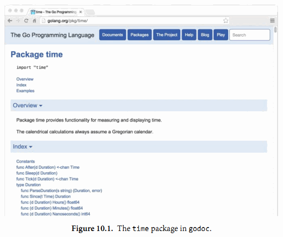
你也可以在自己的工作区目录运行godoc服务。运行下面的命令，然后在浏览器查看 http://localhost:8000/pkg 页面：
$ godoc -http :8000
其中-analysis=type和-analysis=pointer命令行标志参数用于打开文档和代码中关于静态分析的结果。
10.7.5. 内部包
在Go语言程序中，包是最重要的封装机制。没有导出的标识符只在同一个包内部可以访问，而导出的标识符则是面向全宇宙都是可见的。
有时候，一个中间的状态可能也是有用的，标识符对于一小部分信任的包是可见的，但并不是对所有调用者都可见。例如，当我们计划将一个大的包拆分为很多小的更容易维护的子包，但是我们并不想将内部的子包结构也完全暴露出去。同时，我们可能还希望在内部子包之间共享一些通用的处理包，或者我们只是想实验一个新包的还并不稳定的接口，暂时只暴露给一些受限制的用户使用。
为了满足这些需求，Go语言的构建工具对包含internal名字的路径段的包导入路径做了特殊处理。这种包叫internal包，一个internal包只能被和internal目录有同一个父目录的包所导入。例如，net/http/internal/chunked内部包只能被net/http/httputil或net/http包导入，但是不能被net/url包导入。不过net/url包却可以导入net/http/httputil包。
net/http
net/http/internal/chunked
net/http/httputil
net/url
10.7.6. 查询包
go list命令可以查询可用包的信息。其最简单的形式，可以测试包是否在工作区并打印它的导入路径：
$ go list github.com/go-sql-driver/mysql
github.com/go-sql-driver/mysql
go list命令的参数还可以用"..."表示匹配任意的包的导入路径。我们可以用它来列出工作区中的所有包：
$ go list ...
archive/tar
archive/zip
bufio
bytes
cmd/addr2line
cmd/api
...many more...
或者是特定子目录下的所有包：
$ go list gopl.io/ch3/...
gopl.io/ch3/basename1
gopl.io/ch3/basename2
gopl.io/ch3/comma
gopl.io/ch3/mandelbrot
gopl.io/ch3/netflag
gopl.io/ch3/printints
gopl.io/ch3/surface
或者是和某个主题相关的所有包:
$ go list ...xml...
encoding/xml
gopl.io/ch7/xmlselect
go list命令还可以获取每个包完整的元信息，而不仅仅只是导入路径，这些元信息可以以不同格式提供给用户。其中-json命令行参数表示用JSON格式打印每个包的元信息。
$ go list -json hash
{
"Dir": "/home/gopher/go/src/hash",
"ImportPath": "hash",
"Name": "hash",
"Doc": "Package hash provides interfaces for hash functions.",
"Target": "/home/gopher/go/pkg/darwin_amd64/hash.a",
"Goroot": true,
"Standard": true,
"Root": "/home/gopher/go",
"GoFiles": [
"hash.go"
],
"Imports": [
"io"
],
"Deps": [
"errors",
"io",
"runtime",
"sync",
"sync/atomic",
"unsafe"
]
}
命令行参数-f则允许用户使用text/template包（§4.6）的模板语言定义输出文本的格式。下面的命令将打印strconv包的依赖的包，然后用join模板函数将结果链接为一行，连接时每个结果之间用一个空格分隔：
$ go list -f '{{join .Deps " "}}' strconv
errors math runtime unicode/utf8 unsafe
译注：上面的命令在Windows的命令行运行会遇到template: main:1: unclosed action的错误。产生这个错误的原因是因为命令行对命令中的" "参数进行了转义处理。可以按照下面的方法解决转义字符串的问题：
$ go list -f "{{join .Deps \" \"}}" strconv
下面的命令打印compress子目录下所有包的导入包列表：
$ go list -f '{{.ImportPath}} -> {{join .Imports " "}}' compress/...
compress/bzip2 -> bufio io sort
compress/flate -> bufio fmt io math sort strconv
compress/gzip -> bufio compress/flate errors fmt hash hash/crc32 io time
compress/lzw -> bufio errors fmt io
compress/zlib -> bufio compress/flate errors fmt hash hash/adler32 io
译注：Windows下有同样有问题，要避免转义字符串的干扰：
$ go list -f "{{.ImportPath}} -> {{join .Imports \" \"}}" compress/...
go list命令对于一次性的交互式查询或自动化构建或测试脚本都很有帮助。我们将在11.2.4节中再次使用它。每个子命令的更多信息，包括可设置的字段和意义，可以用go help list命令查看。
在本章，我们解释了Go语言工具中除了测试命令之外的所有重要的子命令。在下一章，我们将看到如何用go test命令去运行Go语言程序中的测试代码。
练习 10.4： 创建一个工具，根据命令行指定的参数，报告工作区所有依赖包指定的其它包集合。提示：你需要运行go list命令两次，一次用于初始化包，一次用于所有包。你可能需要用encoding/json（§4.5）包来分析输出的JSON格式的信息。
第11章 测试
Maurice Wilkes，第一个存储程序计算机EDSAC的设计者，1949年他在实验室爬楼梯时有一个顿悟。在《计算机先驱回忆录》（Memoirs of a Computer Pioneer）里，他回忆到：“忽然间有一种醍醐灌顶的感觉，我整个后半生的美好时光都将在寻找程序BUG中度过了”。肯定从那之后的大部分正常的码农都会同情Wilkes过分悲观的想法，虽然也许会有人困惑于他对软件开发的难度的天真看法。
现在的程序已经远比Wilkes时代的更大也更复杂，也有许多技术可以让软件的复杂性可得到控制。其中有两种技术在实践中证明是比较有效的。第一种是代码在被正式部署前需要进行代码评审。第二种则是测试，也就是本章的讨论主题。
我们说测试的时候一般是指自动化测试，也就是写一些小的程序用来检测被测试代码（产品代码）的行为和预期的一样，这些通常都是精心设计的执行某些特定的功能或者是通过随机性的输入待验证边界的处理。
软件测试是一个巨大的领域。测试的任务可能已经占据了一些程序员的部分时间和另一些程序员的全部时间。和软件测试技术相关的图书或博客文章有成千上万之多。对于每一种主流的编程语言，都会有一打的用于测试的软件包，同时也有大量的测试相关的理论，而且每种都吸引了大量技术先驱和追随者。这些都足以说服那些想要编写有效测试的程序员重新学习一套全新的技能。
Go语言的测试技术是相对低级的。它依赖一个go test测试命令和一组按照约定方式编写的测试函数，测试命令可以运行这些测试函数。编写相对轻量级的纯测试代码是有效的，而且它很容易延伸到基准测试和示例文档。
在实践中，编写测试代码和编写程序本身并没有多大区别。我们编写的每一个函数也是针对每个具体的任务。我们必须小心处理边界条件，思考合适的数据结构，推断合适的输入应该产生什么样的结果输出。编写测试代码和编写普通的Go代码过程是类似的；它并不需要学习新的符号、规则和工具。
11.1. go test
go test命令是一个按照一定的约定和组织来测试代码的程序。在包目录内，所有以_test.go为后缀名的源文件在执行go build时不会被构建成包的一部分，它们是go test测试的一部分。
在*_test.go文件中，有三种类型的函数：测试函数、基准测试（benchmark）函数、示例函数。一个测试函数是以Test为函数名前缀的函数，用于测试程序的一些逻辑行为是否正确；go test命令会调用这些测试函数并报告测试结果是PASS或FAIL。基准测试函数是以Benchmark为函数名前缀的函数，它们用于衡量一些函数的性能；go test命令会多次运行基准测试函数以计算一个平均的执行时间。示例函数是以Example为函数名前缀的函数，提供一个由编译器保证正确性的示例文档。我们将在11.2节讨论测试函数的所有细节，并在11.4节讨论基准测试函数的细节，然后在11.6节讨论示例函数的细节。
go test命令会遍历所有的*_test.go文件中符合上述命名规则的函数，生成一个临时的main包用于调用相应的测试函数，接着构建并运行、报告测试结果，最后清理测试中生成的临时文件。
11.2. 测试函数
每个测试函数必须导入testing包。测试函数有如下的签名：
func TestName(t *testing.T) {
// ...
}
测试函数的名字必须以Test开头，可选的后缀名必须以大写字母开头：
func TestSin(t *testing.T) { /* ... */ }
func TestCos(t *testing.T) { /* ... */ }
func TestLog(t *testing.T) { /* ... */ }
其中t参数用于报告测试失败和附加的日志信息。让我们定义一个实例包gopl.io/ch11/word1，其中只有一个函数IsPalindrome用于检查一个字符串是否从前向后和从后向前读都是一样的。（下面这个实现对于一个字符串是否是回文字符串前后重复测试了两次；我们稍后会再讨论这个问题。）
gopl.io/ch11/word1
// Package word provides utilities for word games.
package word
// IsPalindrome reports whether s reads the same forward and backward.
// (Our first attempt.)
func IsPalindrome(s string) bool {
for i := range s {
if s[i] != s[len(s)-1-i] {
return false
}
}
return true
}
在相同的目录下，word_test.go测试文件中包含了TestPalindrome和TestNonPalindrome两个测试函数。每一个都是测试IsPalindrome是否给出正确的结果，并使用t.Error报告失败信息：
package word
import "testing"
func TestPalindrome(t *testing.T) {
if !IsPalindrome("detartrated") {
t.Error(`IsPalindrome("detartrated") = false`)
}
if !IsPalindrome("kayak") {
t.Error(`IsPalindrome("kayak") = false`)
}
}
func TestNonPalindrome(t *testing.T) {
if IsPalindrome("palindrome") {
t.Error(`IsPalindrome("palindrome") = true`)
}
}
go test命令如果没有参数指定包那么将默认采用当前目录对应的包（和go build命令一样）。我们可以用下面的命令构建和运行测试。
$ cd $GOPATH/src/gopl.io/ch11/word1
$ go test
ok gopl.io/ch11/word1 0.008s
结果还比较满意，我们运行了这个程序， 不过没有提前退出是因为还没有遇到BUG报告。不过一个法国名为“Noelle Eve Elleon”的用户会抱怨IsPalindrome函数不能识别“été”。另外一个来自美国中部用户的抱怨则是不能识别“A man, a plan, a canal: Panama.”。执行特殊和小的BUG报告为我们提供了新的更自然的测试用例。
func TestFrenchPalindrome(t *testing.T) {
if !IsPalindrome("été") {
t.Error(`IsPalindrome("été") = false`)
}
}
func TestCanalPalindrome(t *testing.T) {
input := "A man, a plan, a canal: Panama"
if !IsPalindrome(input) {
t.Errorf(`IsPalindrome(%q) = false`, input)
}
}
为了避免两次输入较长的字符串，我们使用了提供了有类似Printf格式化功能的 Errorf函数来汇报错误结果。
当添加了这两个测试用例之后，go test返回了测试失败的信息。
$ go test
--- FAIL: TestFrenchPalindrome (0.00s)
word_test.go:28: IsPalindrome("été") = false
--- FAIL: TestCanalPalindrome (0.00s)
word_test.go:35: IsPalindrome("A man, a plan, a canal: Panama") = false
FAIL
FAIL gopl.io/ch11/word1 0.014s
先编写测试用例并观察到测试用例触发了和用户报告的错误相同的描述是一个好的测试习惯。只有这样，我们才能定位我们要真正解决的问题。
先写测试用例的另外的好处是，运行测试通常会比手工描述报告的处理更快，这让我们可以进行快速地迭代。如果测试集有很多运行缓慢的测试，我们可以通过只选择运行某些特定的测试来加快测试速度。
参数-v可用于打印每个测试函数的名字和运行时间：
$ go test -v
=== RUN TestPalindrome
--- PASS: TestPalindrome (0.00s)
=== RUN TestNonPalindrome
--- PASS: TestNonPalindrome (0.00s)
=== RUN TestFrenchPalindrome
--- FAIL: TestFrenchPalindrome (0.00s)
word_test.go:28: IsPalindrome("été") = false
=== RUN TestCanalPalindrome
--- FAIL: TestCanalPalindrome (0.00s)
word_test.go:35: IsPalindrome("A man, a plan, a canal: Panama") = false
FAIL
exit status 1
FAIL gopl.io/ch11/word1 0.017s
参数-run对应一个正则表达式，只有测试函数名被它正确匹配的测试函数才会被go test测试命令运行：
$ go test -v -run="French|Canal"
=== RUN TestFrenchPalindrome
--- FAIL: TestFrenchPalindrome (0.00s)
word_test.go:28: IsPalindrome("été") = false
=== RUN TestCanalPalindrome
--- FAIL: TestCanalPalindrome (0.00s)
word_test.go:35: IsPalindrome("A man, a plan, a canal: Panama") = false
FAIL
exit status 1
FAIL gopl.io/ch11/word1 0.014s
当然，一旦我们已经修复了失败的测试用例，在我们提交代码更新之前，我们应该以不带参数的go test命令运行全部的测试用例，以确保修复失败测试的同时没有引入新的问题。
我们现在的任务就是修复这些错误。简要分析后发现第一个BUG的原因是我们采用了 byte而不是rune序列，所以像“été”中的é等非ASCII字符不能正确处理。第二个BUG是因为没有忽略空格和字母的大小写导致的。
针对上述两个BUG，我们仔细重写了函数：
gopl.io/ch11/word2
// Package word provides utilities for word games.
package word
import "unicode"
// IsPalindrome reports whether s reads the same forward and backward.
// Letter case is ignored, as are non-letters.
func IsPalindrome(s string) bool {
var letters []rune
for _, r := range s {
if unicode.IsLetter(r) {
letters = append(letters, unicode.ToLower(r))
}
}
for i := range letters {
if letters[i] != letters[len(letters)-1-i] {
return false
}
}
return true
}
同时我们也将之前的所有测试数据合并到了一个测试中的表格中。
func TestIsPalindrome(t *testing.T) {
var tests = []struct {
input string
want bool
}{
{"", true},
{"a", true},
{"aa", true},
{"ab", false},
{"kayak", true},
{"detartrated", true},
{"A man, a plan, a canal: Panama", true},
{"Evil I did dwell; lewd did I live.", true},
{"Able was I ere I saw Elba", true},
{"été", true},
{"Et se resservir, ivresse reste.", true},
{"palindrome", false}, // non-palindrome
{"desserts", false}, // semi-palindrome
}
for _, test := range tests {
if got := IsPalindrome(test.input); got != test.want {
t.Errorf("IsPalindrome(%q) = %v", test.input, got)
}
}
}
现在我们的新测试都通过了：
$ go test gopl.io/ch11/word2
ok gopl.io/ch11/word2 0.015s
这种表格驱动的测试在Go语言中很常见。我们可以很容易地向表格添加新的测试数据，并且后面的测试逻辑也没有冗余，这样我们可以有更多的精力去完善错误信息。
失败测试的输出并不包括调用t.Errorf时刻的堆栈调用信息。和其他编程语言或测试框架的assert断言不同，t.Errorf调用也没有引起panic异常或停止测试的执行。即使表格中前面的数据导致了测试的失败，表格后面的测试数据依然会运行测试，因此在一个测试中我们可能了解多个失败的信息。
如果我们真的需要停止测试，或许是因为初始化失败或可能是早先的错误导致了后续错误等原因，我们可以使用t.Fatal或t.Fatalf停止当前测试函数。它们必须在和测试函数同一个goroutine内调用。
测试失败的信息一般的形式是“f(x) = y, want z”，其中f(x)解释了失败的操作和对应的输入，y是实际的运行结果，z是期望的正确的结果。就像前面检查回文字符串的例子，实际的函数用于f(x)部分。显示x是表格驱动型测试中比较重要的部分，因为同一个断言可能对应不同的表格项执行多次。要避免无用和冗余的信息。在测试类似IsPalindrome返回布尔类型的函数时，可以忽略并没有额外信息的z部分。如果x、y或z是y的长度，输出一个相关部分的简明总结即可。测试的作者应该要努力帮助程序员诊断测试失败的原因。
练习 11.1: 为4.3节中的charcount程序编写测试。
练习 11.2: 为（§6.5）的IntSet编写一组测试，用于检查每个操作后的行为和基于内置map的集合等价，后面练习11.7将会用到。
11.2.1. 随机测试
表格驱动的测试便于构造基于精心挑选的测试数据的测试用例。另一种测试思路是随机测试，也就是通过构造更广泛的随机输入来测试探索函数的行为。
那么对于一个随机的输入，我们如何能知道希望的输出结果呢？这里有两种处理策略。第一个是编写另一个对照函数，使用简单和清晰的算法，虽然效率较低但是行为和要测试的函数是一致的，然后针对相同的随机输入检查两者的输出结果。第二种是生成的随机输入的数据遵循特定的模式，这样我们就可以知道期望的输出的模式。
下面的例子使用的是第二种方法：randomPalindrome函数用于随机生成回文字符串。
import "math/rand"
// randomPalindrome returns a palindrome whose length and contents
// are derived from the pseudo-random number generator rng.
func randomPalindrome(rng *rand.Rand) string {
n := rng.Intn(25) // random length up to 24
runes := make([]rune, n)
for i := 0; i < (n+1)/2; i++ {
r := rune(rng.Intn(0x1000)) // random rune up to '\u0999'
runes[i] = r
runes[n-1-i] = r
}
return string(runes)
}
func TestRandomPalindromes(t *testing.T) {
// Initialize a pseudo-random number generator.
seed := time.Now().UTC().UnixNano()
t.Logf("Random seed: %d", seed)
rng := rand.New(rand.NewSource(seed))
for i := 0; i < 1000; i++ {
p := randomPalindrome(rng)
if !IsPalindrome(p) {
t.Errorf("IsPalindrome(%q) = false", p)
}
}
}
虽然随机测试会有不确定因素，但是它也是至关重要的，我们可以从失败测试的日志获取足够的信息。在我们的例子中，输入IsPalindrome的p参数将告诉我们真实的数据，但是对于函数将接受更复杂的输入，不需要保存所有的输入，只要日志中简单地记录随机数种子即可（像上面的方式）。有了这些随机数初始化种子，我们可以很容易修改测试代码以重现失败的随机测试。
通过使用当前时间作为随机种子，在整个过程中的每次运行测试命令时都将探索新的随机数据。如果你使用的是定期运行的自动化测试集成系统，随机测试将特别有价值。
练习 11.3: TestRandomPalindromes测试函数只测试了回文字符串。编写新的随机测试生成器，用于测试随机生成的非回文字符串。
练习 11.4: 修改randomPalindrome函数，以探索IsPalindrome是否对标点和空格做了正确处理。
译者注：拓展阅读感兴趣的读者可以再了解一下go-fuzz
11.2.2. 测试一个命令
对于测试包go test是一个有用的工具，但是稍加努力我们也可以用它来测试可执行程序。如果一个包的名字是 main，那么在构建时会生成一个可执行程序，不过main包可以作为一个包被测试器代码导入。
让我们为2.3.2节的echo程序编写一个测试。我们先将程序拆分为两个函数：echo函数完成真正的工作，main函数用于处理命令行输入参数和echo可能返回的错误。
gopl.io/ch11/echo
// Echo prints its command-line arguments.
package main
import (
"flag"
"fmt"
"io"
"os"
"strings"
)
var (
n = flag.Bool("n", false, "omit trailing newline")
s = flag.String("s", " ", "separator")
)
var out io.Writer = os.Stdout // modified during testing
func main() {
flag.Parse()
if err := echo(!*n, *s, flag.Args()); err != nil {
fmt.Fprintf(os.Stderr, "echo: %v\n", err)
os.Exit(1)
}
}
func echo(newline bool, sep string, args []string) error {
fmt.Fprint(out, strings.Join(args, sep))
if newline {
fmt.Fprintln(out)
}
return nil
}
在测试中我们可以用各种参数和标志调用echo函数，然后检测它的输出是否正确，我们通过增加参数来减少echo函数对全局变量的依赖。我们还增加了一个全局名为out的变量来替代直接使用os.Stdout，这样测试代码可以根据需要将out修改为不同的对象以便于检查。下面就是echo_test.go文件中的测试代码：
package main
import (
"bytes"
"fmt"
"testing"
)
func TestEcho(t *testing.T) {
var tests = []struct {
newline bool
sep string
args []string
want string
}{
{true, "", []string{}, "\n"},
{false, "", []string{}, ""},
{true, "\t", []string{"one", "two", "three"}, "one\ttwo\tthree\n"},
{true, ",", []string{"a", "b", "c"}, "a,b,c\n"},
{false, ":", []string{"1", "2", "3"}, "1:2:3"},
}
for _, test := range tests {
descr := fmt.Sprintf("echo(%v, %q, %q)",
test.newline, test.sep, test.args)
out = new(bytes.Buffer) // captured output
if err := echo(test.newline, test.sep, test.args); err != nil {
t.Errorf("%s failed: %v", descr, err)
continue
}
got := out.(*bytes.Buffer).String()
if got != test.want {
t.Errorf("%s = %q, want %q", descr, got, test.want)
}
}
}
要注意的是测试代码和产品代码在同一个包。虽然是main包，也有对应的main入口函数，但是在测试的时候main包只是TestEcho测试函数导入的一个普通包，里面main函数并没有被导出，而是被忽略的。
通过将测试放到表格中，我们很容易添加新的测试用例。让我通过增加下面的测试用例来看看失败的情况是怎么样的：
{true, ",", []string{"a", "b", "c"}, "a b c\n"}, // NOTE: wrong expectation!
go test输出如下：
$ go test gopl.io/ch11/echo
--- FAIL: TestEcho (0.00s)
echo_test.go:31: echo(true, ",", ["a" "b" "c"]) = "a,b,c", want "a b c\n"
FAIL
FAIL gopl.io/ch11/echo 0.006s
错误信息描述了尝试的操作（使用Go类似语法），实际的结果和期望的结果。通过这样的错误信息，你可以在检视代码之前就很容易定位错误的原因。
要注意的是在测试代码中并没有调用log.Fatal或os.Exit，因为调用这类函数会导致程序提前退出；调用这些函数的特权应该放在main函数中。如果真的有意外的事情导致函数发生panic异常，测试驱动应该尝试用recover捕获异常，然后将当前测试当作失败处理。如果是可预期的错误，例如非法的用户输入、找不到文件或配置文件不当等应该通过返回一个非空的error的方式处理。幸运的是（上面的意外只是一个插曲），我们的echo示例是比较简单的也没有需要返回非空error的情况。
11.2.3. 白盒测试
一种测试分类的方法是基于测试者是否需要了解被测试对象的内部工作原理。黑盒测试只需要测试包公开的文档和API行为，内部实现对测试代码是透明的。相反，白盒测试有访问包内部函数和数据结构的权限，因此可以做到一些普通客户端无法实现的测试。例如，一个白盒测试可以在每个操作之后检测不变量的数据类型。（白盒测试只是一个传统的名称，其实称为clear box测试会更准确。）
黑盒和白盒这两种测试方法是互补的。黑盒测试一般更健壮，随着软件实现的完善测试代码很少需要更新。它们可以帮助测试者了解真实客户的需求，也可以帮助发现API设计的一些不足之处。相反，白盒测试则可以对内部一些棘手的实现提供更多的测试覆盖。
我们已经看到两种测试的例子。TestIsPalindrome测试仅仅使用导出的IsPalindrome函数，因此这是一个黑盒测试。TestEcho测试则调用了内部的echo函数，并且更新了内部的out包级变量，这两个都是未导出的，因此这是白盒测试。
当我们准备TestEcho测试的时候，我们修改了echo函数使用包级的out变量作为输出对象，因此测试代码可以用另一个实现代替标准输出，这样可以方便对比echo输出的数据。使用类似的技术，我们可以将产品代码的其他部分也替换为一个容易测试的伪对象。使用伪对象的好处是我们可以方便配置，容易预测，更可靠，也更容易观察。同时也可以避免一些不良的副作用，例如更新生产数据库或信用卡消费行为。
下面的代码演示了为用户提供网络存储的web服务中的配额检测逻辑。当用户使用了超过90%的存储配额之后将发送提醒邮件。（译注：一般在实现业务机器监控，包括磁盘、cpu、网络等的时候，需要类似的到达阈值=>触发报警的逻辑，所以是很实用的案例。）
gopl.io/ch11/storage1
package storage
import (
"fmt"
"log"
"net/smtp"
)
func bytesInUse(username string) int64 { return 0 /* ... */ }
// Email sender configuration.
// NOTE: never put passwords in source code!
const sender = "notifications@example.com"
const password = "correcthorsebatterystaple"
const hostname = "smtp.example.com"
const template = `Warning: you are using %d bytes of storage,
%d%% of your quota.`
func CheckQuota(username string) {
used := bytesInUse(username)
const quota = 1000000000 // 1GB
percent := 100 * used / quota
if percent < 90 {
return // OK
}
msg := fmt.Sprintf(template, used, percent)
auth := smtp.PlainAuth("", sender, password, hostname)
err := smtp.SendMail(hostname+":587", auth, sender,
[]string{username}, []byte(msg))
if err != nil {
log.Printf("smtp.SendMail(%s) failed: %s", username, err)
}
}
我们想测试这段代码，但是我们并不希望发送真实的邮件。因此我们将邮件处理逻辑放到一个私有的notifyUser函数中。
gopl.io/ch11/storage2
var notifyUser = func(username, msg string) {
auth := smtp.PlainAuth("", sender, password, hostname)
err := smtp.SendMail(hostname+":587", auth, sender,
[]string{username}, []byte(msg))
if err != nil {
log.Printf("smtp.SendEmail(%s) failed: %s", username, err)
}
}
func CheckQuota(username string) {
used := bytesInUse(username)
const quota = 1000000000 // 1GB
percent := 100 * used / quota
if percent < 90 {
return // OK
}
msg := fmt.Sprintf(template, used, percent)
notifyUser(username, msg)
}
现在我们可以在测试中用伪邮件发送函数替代真实的邮件发送函数。它只是简单记录要通知的用户和邮件的内容。
package storage
import (
"strings"
"testing"
)
func TestCheckQuotaNotifiesUser(t *testing.T) {
var notifiedUser, notifiedMsg string
notifyUser = func(user, msg string) {
notifiedUser, notifiedMsg = user, msg
}
// ...simulate a 980MB-used condition...
const user = "joe@example.org"
CheckQuota(user)
if notifiedUser == "" && notifiedMsg == "" {
t.Fatalf("notifyUser not called")
}
if notifiedUser != user {
t.Errorf("wrong user (%s) notified, want %s",
notifiedUser, user)
}
const wantSubstring = "98% of your quota"
if !strings.Contains(notifiedMsg, wantSubstring) {
t.Errorf("unexpected notification message <<%s>>, "+
"want substring %q", notifiedMsg, wantSubstring)
}
}
这里有一个问题：当测试函数返回后，CheckQuota将不能正常工作，因为notifyUsers依然使用的是测试函数的伪发送邮件函数（当更新全局对象的时候总会有这种风险）。 我们必须修改测试代码恢复notifyUsers原先的状态以便后续其他的测试没有影响，要确保所有的执行路径后都能恢复，包括测试失败或panic异常的情形。在这种情况下，我们建议使用defer语句来延后执行处理恢复的代码。
func TestCheckQuotaNotifiesUser(t *testing.T) {
// Save and restore original notifyUser.
saved := notifyUser
defer func() { notifyUser = saved }()
// Install the test's fake notifyUser.
var notifiedUser, notifiedMsg string
notifyUser = func(user, msg string) {
notifiedUser, notifiedMsg = user, msg
}
// ...rest of test...
}
这种处理模式可以用来暂时保存和恢复所有的全局变量，包括命令行标志参数、调试选项和优化参数；安装和移除导致生产代码产生一些调试信息的钩子函数；还有有些诱导生产代码进入某些重要状态的改变，比如超时、错误，甚至是一些刻意制造的并发行为等因素。
以这种方式使用全局变量是安全的，因为go test命令并不会同时并发地执行多个测试。
11.2.4. 外部测试包
考虑下这两个包：net/url包，提供了URL解析的功能；net/http包，提供了web服务和HTTP客户端的功能。如我们所料，上层的net/http包依赖下层的net/url包。然后，net/url包中的一个测试是演示不同URL和HTTP客户端的交互行为。也就是说，一个下层包的测试代码导入了上层的包。

这样的行为在net/url包的测试代码中会导致包的循环依赖，正如图11.1中向上箭头所示，同时正如我们在10.1节所讲的，Go语言规范是禁止包的循环依赖的。
不过我们可以通过外部测试包的方式解决循环依赖的问题，也就是在net/url包所在的目录声明一个独立的url_test测试包。其中包名的_test后缀告诉go test工具它应该建立一个额外的包来运行测试。我们将这个外部测试包的导入路径视作是net/url_test会更容易理解，但实际上它并不能被其他任何包导入。
因为外部测试包是一个独立的包，所以能够导入那些依赖待测代码本身的其他辅助包；包内的测试代码就无法做到这点。在设计层面，外部测试包是在所有它依赖的包的上层，正如图11.2所示。

通过避免循环的导入依赖，外部测试包可以更灵活地编写测试，特别是集成测试（需要测试多个组件之间的交互），可以像普通应用程序那样自由地导入其他包。
我们可以用go list命令查看包对应目录中哪些Go源文件是产品代码，哪些是包内测试，还有哪些是外部测试包。我们以fmt包作为一个例子：GoFiles表示产品代码对应的Go源文件列表；也就是go build命令要编译的部分。
$ go list -f={{.GoFiles}} fmt
[doc.go format.go print.go scan.go]
TestGoFiles表示的是fmt包内部测试代码，以_test.go为后缀文件名，不过只在测试时被构建：
$ go list -f={{.TestGoFiles}} fmt
[export_test.go]
包的测试代码通常都在这些文件中，不过fmt包并非如此；稍后我们再解释export_test.go文件的作用。
XTestGoFiles表示的是属于外部测试包的测试代码，也就是fmt_test包，因此它们必须先导入fmt包。同样，这些文件也只是在测试时被构建运行：
$ go list -f={{.XTestGoFiles}} fmt
[fmt_test.go scan_test.go stringer_test.go]
有时候外部测试包也需要访问被测试包内部的代码，例如在一个为了避免循环导入而被独立到外部测试包的白盒测试。在这种情况下，我们可以通过一些技巧解决：我们在包内的一个_test.go文件中导出一个内部的实现给外部测试包。因为这些代码只有在测试时才需要，因此一般会放在export_test.go文件中。
例如，fmt包的fmt.Scanf函数需要unicode.IsSpace函数提供的功能。但是为了避免太多的依赖，fmt包并没有导入包含巨大表格数据的unicode包；相反fmt包有一个叫isSpace内部的简易实现。
为了确保fmt.isSpace和unicode.IsSpace函数的行为保持一致，fmt包谨慎地包含了一个测试。一个在外部测试包内的白盒测试，是无法直接访问到isSpace内部函数的，因此fmt通过一个后门导出了isSpace函数。export_test.go文件就是专门用于外部测试包的后门。
package fmt
var IsSpace = isSpace
这个测试文件并没有定义测试代码；它只是通过fmt.IsSpace简单导出了内部的isSpace函数，提供给外部测试包使用。这个技巧可以广泛用于位于外部测试包的白盒测试。
11.2.5. 编写有效的测试
许多Go语言新人会惊异于Go语言极简的测试框架。很多其它语言的测试框架都提供了识别测试函数的机制（通常使用反射或元数据），通过设置一些“setup”和“teardown”的钩子函数来执行测试用例运行的初始化和之后的清理操作，同时测试工具箱还提供了很多类似assert断言、值比较函数、格式化输出错误信息和停止一个失败的测试等辅助函数（通常使用异常机制）。虽然这些机制可以使得测试非常简洁，但是测试输出的日志却会像火星文一般难以理解。此外，虽然测试最终也会输出PASS或FAIL的报告，但是它们提供的信息格式却非常不利于代码维护者快速定位问题，因为失败信息的具体含义非常隐晦，比如“assert: 0 == 1”或成页的海量跟踪日志。
Go语言的测试风格则形成鲜明对比。它期望测试者自己完成大部分的工作，定义函数避免重复，就像普通编程那样。编写测试并不是一个机械的填空过程；一个测试也有自己的接口，尽管它的维护者也是测试仅有的一个用户。一个好的测试不应该引发其他无关的错误信息，它只要清晰简洁地描述问题的症状即可，有时候可能还需要一些上下文信息。在理想情况下，维护者可以在不看代码的情况下就能根据错误信息定位错误产生的原因。一个好的测试不应该在遇到一点小错误时就立刻退出测试，它应该尝试报告更多的相关的错误信息，因为我们可能从多个失败测试的模式中发现错误产生的规律。
下面的断言函数比较两个值，然后生成一个通用的错误信息，并停止程序。它很好用也确实有效，但是当测试失败的时候，打印的错误信息却几乎是没有价值的。它并没有为快速解决问题提供一个很好的入口。
import (
"fmt"
"strings"
"testing"
)
// A poor assertion function.
func assertEqual(x, y int) {
if x != y {
panic(fmt.Sprintf("%d != %d", x, y))
}
}
func TestSplit(t *testing.T) {
words := strings.Split("a:b:c", ":")
assertEqual(len(words), 3)
// ...
}
从这个意义上说，断言函数犯了过早抽象的错误：仅仅测试两个整数是否相同，而没能根据上下文提供更有意义的错误信息。我们可以根据具体的错误打印一个更有价值的错误信息，就像下面例子那样。只有在测试中出现重复模式时才采用抽象。
func TestSplit(t *testing.T) {
s, sep := "a:b:c", ":"
words := strings.Split(s, sep)
if got, want := len(words), 3; got != want {
t.Errorf("Split(%q, %q) returned %d words, want %d",
s, sep, got, want)
}
// ...
}
现在的测试不仅报告了调用的具体函数、它的输入和结果的意义；并且打印的真实返回的值和期望返回的值；并且即使断言失败依然会继续尝试运行更多的测试。一旦我们写了这样结构的测试，下一步自然不是用更多的if语句来扩展测试用例，我们可以用像IsPalindrome的表驱动测试那样来准备更多的s和sep测试用例。
前面的例子并不需要额外的辅助函数，如果有可以使测试代码更简单的方法我们也乐意接受。（我们将在13.3节看到一个类似reflect.DeepEqual辅助函数。）一个好的测试的关键是首先实现你期望的具体行为，然后才是考虑简化测试代码、避免重复。如果直接从抽象、通用的测试库着手，很难取得良好结果。
练习11.5: 用表格驱动的技术扩展TestSplit测试，并打印期望的输出结果。
11.2.6. 避免脆弱的测试
如果一个应用程序对于新出现的但有效的输入经常失败说明程序容易出bug（不够稳健）；同样，如果一个测试仅仅对程序做了微小变化就失败则称为脆弱。就像一个不够稳健的程序会挫败它的用户一样，一个脆弱的测试同样会激怒它的维护者。最脆弱的测试代码会在程序没有任何变化的时候产生不同的结果，时好时坏，处理它们会耗费大量的时间但是并不会得到任何好处。
当一个测试函数会产生一个复杂的输出如一个很长的字符串、一个精心设计的数据结构或一个文件时，人们很容易想预先写下一系列固定的用于对比的标杆数据。但是随着项目的发展，有些输出可能会发生变化，尽管很可能是一个改进的实现导致的。而且不仅仅是输出部分，函数复杂的输入部分可能也跟着变化了，因此测试使用的输入也就不再有效了。
避免脆弱测试代码的方法是只检测你真正关心的属性。保持测试代码的简洁和内部结构的稳定。特别是对断言部分要有所选择。不要对字符串进行全字匹配，而是针对那些在项目的发展中是比较稳定不变的子串。很多时候值得花力气来编写一个从复杂输出中提取用于断言的必要信息的函数，虽然这可能会带来很多前期的工作，但是它可以帮助迅速及时修复因为项目演化而导致的不合逻辑的失败测试。
11.3. 测试覆盖率
就其性质而言，测试不可能是完整的。计算机科学家Edsger Dijkstra曾说过：“测试能证明缺陷存在，而无法证明没有缺陷。”再多的测试也不能证明一个程序没有BUG。在最好的情况下，测试可以增强我们的信心：代码在很多重要场景下是可以正常工作的。
对待测程序执行的测试的程度称为测试的覆盖率。测试覆盖率并不能量化——即使最简单的程序的动态也是难以精确测量的——但是有启发式方法来帮助我们编写有效的测试代码。
这些启发式方法中，语句的覆盖率是最简单和最广泛使用的。语句的覆盖率是指在测试中至少被运行一次的代码占总代码数的比例。在本节中，我们使用go test命令中集成的测试覆盖率工具，来度量下面代码的测试覆盖率，帮助我们识别测试和我们期望间的差距。
下面的代码是一个表格驱动的测试，用于测试第七章的表达式求值程序：
gopl.io/ch7/eval
func TestCoverage(t *testing.T) {
var tests = []struct {
input string
env Env
want string // expected error from Parse/Check or result from Eval
}{
{"x % 2", nil, "unexpected '%'"},
{"!true", nil, "unexpected '!'"},
{"log(10)", nil, `unknown function "log"`},
{"sqrt(1, 2)", nil, "call to sqrt has 2 args, want 1"},
{"sqrt(A / pi)", Env{"A": 87616, "pi": math.Pi}, "167"},
{"pow(x, 3) + pow(y, 3)", Env{"x": 9, "y": 10}, "1729"},
{"5 / 9 * (F - 32)", Env{"F": -40}, "-40"},
}
for _, test := range tests {
expr, err := Parse(test.input)
if err == nil {
err = expr.Check(map[Var]bool{})
}
if err != nil {
if err.Error() != test.want {
t.Errorf("%s: got %q, want %q", test.input, err, test.want)
}
continue
}
got := fmt.Sprintf("%.6g", expr.Eval(test.env))
if got != test.want {
t.Errorf("%s: %v => %s, want %s",
test.input, test.env, got, test.want)
}
}
}
首先，我们要确保所有的测试都正常通过：
$ go test -v -run=Coverage gopl.io/ch7/eval
=== RUN TestCoverage
--- PASS: TestCoverage (0.00s)
PASS
ok gopl.io/ch7/eval 0.011s
下面这个命令可以显示测试覆盖率工具的使用用法：
$ go tool cover
Usage of 'go tool cover':
Given a coverage profile produced by 'go test':
go test -coverprofile=c.out
Open a web browser displaying annotated source code:
go tool cover -html=c.out
...
go tool命令运行Go工具链的底层可执行程序。这些底层可执行程序放在$GOROOT/pkg/tool/${GOOS}_${GOARCH}目录。因为有go build命令的原因，我们很少直接调用这些底层工具。
现在我们可以用-coverprofile标志参数重新运行测试：
$ go test -run=Coverage -coverprofile=c.out gopl.io/ch7/eval
ok gopl.io/ch7/eval 0.032s coverage: 68.5% of statements
这个标志参数通过在测试代码中插入生成钩子来统计覆盖率数据。也就是说，在运行每个测试前，它将待测代码拷贝一份并做修改，在每个词法块都会设置一个布尔标志变量。当被修改后的被测试代码运行退出时，将统计日志数据写入c.out文件，并打印一部分执行的语句的一个总结。（如果你需要的是摘要，使用go test -cover。）
如果使用了-covermode=count标志参数，那么将在每个代码块插入一个计数器而不是布尔标志量。在统计结果中记录了每个块的执行次数，这可以用于衡量哪些是被频繁执行的热点代码。
为了收集数据，我们运行了测试覆盖率工具，打印了测试日志，生成一个HTML报告，然后在浏览器中打开（图11.3）。
$ go tool cover -html=c.out
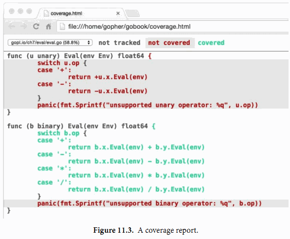
绿色的代码块被测试覆盖到了，红色的则表示没有被覆盖到。为了清晰起见，我们将背景红色文本的背景设置成了阴影效果。我们可以马上发现unary操作的Eval方法并没有被执行到。如果我们针对这部分未被覆盖的代码添加下面的测试用例，然后重新运行上面的命令，那么我们将会看到那个红色部分的代码也变成绿色了：
{"-x * -x", eval.Env{"x": 2}, "4"}
不过两个panic语句依然是红色的。这是没有问题的，因为这两个语句并不会被执行到。
实现100%的测试覆盖率听起来很美，但是在具体实践中通常是不可行的，也不是值得推荐的做法。因为那只能说明代码被执行过而已，并不意味着代码就是没有BUG的；因为对于逻辑复杂的语句需要针对不同的输入执行多次。有一些语句，例如上面的panic语句则永远都不会被执行到。另外，还有一些隐晦的错误在现实中很少遇到也很难编写对应的测试代码。测试从本质上来说是一个比较务实的工作，编写测试代码和编写应用代码的成本对比是需要考虑的。测试覆盖率工具可以帮助我们快速识别测试薄弱的地方，但是设计好的测试用例和编写应用代码一样需要严密的思考。
11.4. 基准测试
基准测试是测量一个程序在固定工作负载下的性能。在Go语言中，基准测试函数和普通测试函数写法类似，但是以Benchmark为前缀名，并且带有一个*testing.B类型的参数；*testing.B参数除了提供和*testing.T类似的方法，还有额外一些和性能测量相关的方法。它还提供了一个整数N，用于指定操作执行的循环次数。
下面是IsPalindrome函数的基准测试，其中循环将执行N次。
import "testing"
func BenchmarkIsPalindrome(b *testing.B) {
for i := 0; i < b.N; i++ {
IsPalindrome("A man, a plan, a canal: Panama")
}
}
我们用下面的命令运行基准测试。和普通测试不同的是，默认情况下不运行任何基准测试。我们需要通过-bench命令行标志参数手工指定要运行的基准测试函数。该参数是一个正则表达式，用于匹配要执行的基准测试函数的名字，默认值是空的。其中“.”模式将可以匹配所有基准测试函数，但因为这里只有一个基准测试函数，因此和-bench=IsPalindrome参数是等价的效果。
$ cd $GOPATH/src/gopl.io/ch11/word2
$ go test -bench=.
PASS
BenchmarkIsPalindrome-8 1000000 1035 ns/op
ok gopl.io/ch11/word2 2.179s
结果中基准测试名的数字后缀部分，这里是8，表示运行时对应的GOMAXPROCS的值，这对于一些与并发相关的基准测试是重要的信息。
报告显示每次调用IsPalindrome函数花费1.035微秒，是执行1,000,000次的平均时间。因为基准测试驱动器开始时并不知道每个基准测试函数运行所花的时间，它会尝试在真正运行基准测试前先尝试用较小的N运行测试来估算基准测试函数所需要的时间，然后推断一个较大的时间保证稳定的测量结果。
循环在基准测试函数内实现，而不是放在基准测试框架内实现，这样可以让每个基准测试函数有机会在循环启动前执行初始化代码，这样并不会显著影响每次迭代的平均运行时间。如果还是担心初始化代码部分对测量时间带来干扰，那么可以通过testing.B参数提供的方法来临时关闭或重置计时器，不过这些一般很少会用到。
现在我们有了一个基准测试和普通测试，我们可以很容易测试改进程序运行速度的想法。也许最明显的优化是在IsPalindrome函数中第二个循环的停止检查，这样可以避免每个比较都做两次：
n := len(letters)/2
for i := 0; i < n; i++ {
if letters[i] != letters[len(letters)-1-i] {
return false
}
}
return true
不过很多情况下，一个显而易见的优化未必能带来预期的效果。这个改进在基准测试中只带来了4%的性能提升。
$ go test -bench=.
PASS
BenchmarkIsPalindrome-8 1000000 992 ns/op
ok gopl.io/ch11/word2 2.093s
另一个改进想法是在开始为每个字符预先分配一个足够大的数组，这样就可以避免在append调用时可能会导致内存的多次重新分配。声明一个letters数组变量，并指定合适的大小，像下面这样，
letters := make([]rune, 0, len(s))
for _, r := range s {
if unicode.IsLetter(r) {
letters = append(letters, unicode.ToLower(r))
}
}
这个改进提升性能约35%，报告结果是基于2,000,000次迭代的平均运行时间统计。
$ go test -bench=.
PASS
BenchmarkIsPalindrome-8 2000000 697 ns/op
ok gopl.io/ch11/word2 1.468s
如这个例子所示，快的程序往往是伴随着较少的内存分配。-benchmem命令行标志参数将在报告中包含内存的分配数据统计。我们可以比较优化前后内存的分配情况：
$ go test -bench=. -benchmem
PASS
BenchmarkIsPalindrome 1000000 1026 ns/op 304 B/op 4 allocs/op
这是优化之后的结果：
$ go test -bench=. -benchmem
PASS
BenchmarkIsPalindrome 2000000 807 ns/op 128 B/op 1 allocs/op
用一次内存分配代替多次的内存分配节省了75%的分配调用次数和减少近一半的内存需求。
这个基准测试告诉了我们某个具体操作所需的绝对时间，但我们往往想知道的是两个不同的操作的时间对比。例如，如果一个函数需要1ms处理1,000个元素，那么处理10000或1百万将需要多少时间呢？这样的比较揭示了渐近增长函数的运行时间。另一个例子：I/O缓存该设置为多大呢？基准测试可以帮助我们选择在性能达标情况下所需的最小内存。第三个例子：对于一个确定的工作哪种算法更好？基准测试可以评估两种不同算法对于相同的输入在不同的场景和负载下的优缺点。
比较型的基准测试就是普通程序代码。它们通常是单参数的函数，由几个不同数量级的基准测试函数调用，就像这样：
func benchmark(b *testing.B, size int) { /* ... */ }
func Benchmark10(b *testing.B) { benchmark(b, 10) }
func Benchmark100(b *testing.B) { benchmark(b, 100) }
func Benchmark1000(b *testing.B) { benchmark(b, 1000) }
通过函数参数来指定输入的大小，但是参数变量对于每个具体的基准测试都是固定的。要避免直接修改b.N来控制输入的大小。除非你将它作为一个固定大小的迭代计算输入，否则基准测试的结果将毫无意义。
比较型的基准测试反映出的模式在程序设计阶段是很有帮助的，但是即使程序完工了也应当保留基准测试代码。因为随着项目的发展，或者是输入的增加，或者是部署到新的操作系统或不同的处理器，我们可以再次用基准测试来帮助我们改进设计。
练习 11.6: 为2.6.2节的练习2.4和练习2.5的PopCount函数编写基准测试。看看基于表格算法在不同情况下对提升性能会有多大帮助。
练习 11.7: 为*IntSet（§6.5）的Add、UnionWith和其他方法编写基准测试，使用大量随机输入。你可以让这些方法跑多快？选择字的大小对于性能的影响如何？IntSet和基于内建map的实现相比有多快？
11.5. 剖析
基准测试（Benchmark）对于衡量特定操作的性能是有帮助的，但是当我们试图让程序跑的更快的时候，我们通常并不知道从哪里开始优化。每个码农都应该知道Donald Knuth在1974年的“Structured Programming with go to Statements”上所说的格言。虽然经常被解读为不重视性能的意思，但是从原文我们可以看到不同的含义：
毫无疑问，对效率的片面追求会导致各种滥用。程序员会浪费大量的时间在非关键程序的速度上，实际上这些尝试提升效率的行为反倒可能产生很大的负面影响，特别是当调试和维护的时候。我们不应该过度纠结于细节的优化，应该说约97%的场景：过早的优化是万恶之源。
当然我们也不应该放弃对那关键3%的优化。一个好的程序员不会因为这个比例小就裹足不前，他们会明智地观察和识别哪些是关键的代码；但是仅当关键代码已经被确认的前提下才会进行优化。对于很多程序员来说，判断哪部分是关键的性能瓶颈，是很容易犯经验上的错误的，因此一般应该借助测量工具来证明。
当我们想仔细观察我们程序的运行速度的时候，最好的方法是性能剖析。剖析技术是基于程序执行期间一些自动抽样，然后在收尾时进行推断；最后产生的统计结果就称为剖析数据。
Go语言支持多种类型的剖析性能分析，每一种关注不同的方面，但它们都涉及到每个采样记录的感兴趣的一系列事件消息，每个事件都包含函数调用时函数调用堆栈的信息。内建的go test工具对几种分析方式都提供了支持。
CPU剖析数据标识了最耗CPU时间的函数。在每个CPU上运行的线程在每隔几毫秒都会遇到操作系统的中断事件，每次中断时都会记录一个剖析数据然后恢复正常的运行。
堆剖析则标识了最耗内存的语句。剖析库会记录调用内部内存分配的操作，平均每512KB的内存申请会触发一个剖析数据。
阻塞剖析则记录阻塞goroutine最久的操作，例如系统调用、管道发送和接收，还有获取锁等。每当goroutine被这些操作阻塞时，剖析库都会记录相应的事件。
只需要开启下面其中一个标志参数就可以生成各种分析文件。当同时使用多个标志参数时需要当心，因为一项分析操作可能会影响其他项的分析结果。
$ go test -cpuprofile=cpu.out
$ go test -blockprofile=block.out
$ go test -memprofile=mem.out
对于一些非测试程序也很容易进行剖析，具体的实现方式，与程序是短时间运行的小工具还是长时间运行的服务会有很大不同。剖析对于长期运行的程序尤其有用，因此可以通过调用Go的runtime API来启用运行时剖析。
一旦我们已经收集到了用于分析的采样数据，我们就可以使用pprof来分析这些数据。这是Go工具箱自带的一个工具，但并不是一个日常工具，它对应go tool pprof命令。该命令有许多特性和选项，但是最基本的是两个参数：生成这个概要文件的可执行程序和对应的剖析数据。
为了提高分析效率和减少空间，分析日志本身并不包含函数的名字；它只包含函数对应的地址。也就是说pprof需要对应的可执行程序来解读剖析数据。虽然go test通常在测试完成后就丢弃临时用的测试程序，但是在启用分析的时候会将测试程序保存为foo.test文件，其中foo部分对应待测包的名字。
下面的命令演示了如何收集并展示一个CPU分析文件。我们选择net/http包的一个基准测试为例。通常最好是对业务关键代码的部分设计专门的基准测试。因为简单的基准测试几乎没法代表业务场景，因此我们用-run=NONE参数禁止那些简单测试。
$ go test -run=NONE -bench=ClientServerParallelTLS64 \
-cpuprofile=cpu.log net/http
PASS
BenchmarkClientServerParallelTLS64-8 1000
3141325 ns/op 143010 B/op 1747 allocs/op
ok net/http 3.395s
$ go tool pprof -text -nodecount=10 ./http.test cpu.log
2570ms of 3590ms total (71.59%)
Dropped 129 nodes (cum <= 17.95ms)
Showing top 10 nodes out of 166 (cum >= 60ms)
flat flat% sum% cum cum%
1730ms 48.19% 48.19% 1750ms 48.75% crypto/elliptic.p256ReduceDegree
230ms 6.41% 54.60% 250ms 6.96% crypto/elliptic.p256Diff
120ms 3.34% 57.94% 120ms 3.34% math/big.addMulVVW
110ms 3.06% 61.00% 110ms 3.06% syscall.Syscall
90ms 2.51% 63.51% 1130ms 31.48% crypto/elliptic.p256Square
70ms 1.95% 65.46% 120ms 3.34% runtime.scanobject
60ms 1.67% 67.13% 830ms 23.12% crypto/elliptic.p256Mul
60ms 1.67% 68.80% 190ms 5.29% math/big.nat.montgomery
50ms 1.39% 70.19% 50ms 1.39% crypto/elliptic.p256ReduceCarry
50ms 1.39% 71.59% 60ms 1.67% crypto/elliptic.p256Sum
参数-text用于指定输出格式，在这里每行是一个函数，根据使用CPU的时间长短来排序。其中-nodecount=10参数限制了只输出前10行的结果。对于严重的性能问题，这个文本格式基本可以帮助查明原因了。
这个概要文件告诉我们，HTTPS基准测试中crypto/elliptic.p256ReduceDegree函数占用了将近一半的CPU资源，对性能占很大比重。相比之下，如果一个概要文件中主要是runtime包的内存分配的函数，那么减少内存消耗可能是一个值得尝试的优化策略。
对于一些更微妙的问题，你可能需要使用pprof的图形显示功能。这个需要安装GraphViz工具，可以从 http://www.graphviz.org 下载。参数-web用于生成函数的有向图，标注有CPU的使用和最热点的函数等信息。
这一节我们只是简单看了下Go语言的数据分析工具。如果想了解更多，可以阅读Go官方博客的“Profiling Go Programs”一文。
11.6. 示例函数
第三种被go test特别对待的函数是示例函数，以Example为函数名开头。示例函数没有函数参数和返回值。下面是IsPalindrome函数对应的示例函数：
func ExampleIsPalindrome() {
fmt.Println(IsPalindrome("A man, a plan, a canal: Panama"))
fmt.Println(IsPalindrome("palindrome"))
// Output:
// true
// false
}
示例函数有三个用处。最主要的一个是作为文档：一个包的例子可以更简洁直观的方式来演示函数的用法，比文字描述更直接易懂，特别是作为一个提醒或快速参考时。一个示例函数也可以方便展示属于同一个接口的几种类型或函数之间的关系，所有的文档都必须关联到一个地方，就像一个类型或函数声明都统一到包一样。同时，示例函数和注释并不一样，示例函数是真实的Go代码，需要接受编译器的编译时检查，这样可以保证源代码更新时，示例代码不会脱节。
根据示例函数的后缀名部分，godoc这个web文档服务器会将示例函数关联到某个具体函数或包本身，因此ExampleIsPalindrome示例函数将是IsPalindrome函数文档的一部分，Example示例函数将是包文档的一部分。
示例函数的第二个用处是，在go test执行测试的时候也会运行示例函数测试。如果示例函数内含有类似上面例子中的// Output:格式的注释，那么测试工具会执行这个示例函数，然后检查示例函数的标准输出与注释是否匹配。
示例函数的第三个目的提供一个真实的演练场。 http://golang.org 就是由godoc提供的文档服务，它使用了Go Playground让用户可以在浏览器中在线编辑和运行每个示例函数，就像图11.4所示的那样。这通常是学习函数使用或Go语言特性最快捷的方式。
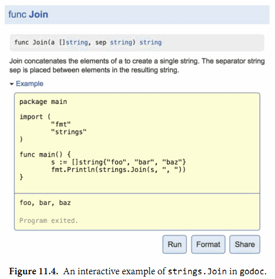
本书最后的两章是讨论reflect和unsafe包，一般的Go程序员很少使用它们，事实上也很少需要用到。因此，如果你还没有写过任何真实的Go程序的话，现在可以先去写些代码了。
第12章 反射
Go语言提供了一种机制，能够在运行时更新变量和检查它们的值、调用它们的方法和它们支持的内在操作，而不需要在编译时就知道这些变量的具体类型。这种机制被称为反射。反射也可以让我们将类型本身作为第一类的值类型处理。
在本章，我们将探讨Go语言的反射特性，看看它可以给语言增加哪些表达力，以及在两个至关重要的API是如何使用反射机制的：一个是fmt包提供的字符串格式化功能，另一个是类似encoding/json和encoding/xml提供的针对特定协议的编解码功能。对于我们在4.6节中看到过的text/template和html/template包，它们的实现也是依赖反射技术的。然后，反射是一个复杂的内省技术，不应该随意使用，因此，尽管上面这些包内部都是用反射技术实现的，但是它们自己的API都没有公开反射相关的接口。
12.1. 为何需要反射?
有时候我们需要编写一个函数能够处理一类并不满足普通公共接口的类型的值，也可能是因为它们并没有确定的表示方式，或者是在我们设计该函数的时候这些类型可能还不存在。
一个大家熟悉的例子是fmt.Fprintf函数提供的字符串格式化处理逻辑，它可以用来对任意类型的值格式化并打印，甚至支持用户自定义的类型。让我们也来尝试实现一个类似功能的函数。为了简单起见，我们的函数只接收一个参数，然后返回和fmt.Sprint类似的格式化后的字符串。我们实现的函数名也叫Sprint。
我们首先用switch类型分支来测试输入参数是否实现了String方法，如果是的话就调用该方法。然后继续增加类型测试分支，检查这个值的动态类型是否是string、int、bool等基础类型，并在每种情况下执行相应的格式化操作。
func Sprint(x interface{}) string {
type stringer interface {
String() string
}
switch x := x.(type) {
case stringer:
return x.String()
case string:
return x
case int:
return strconv.Itoa(x)
// ...similar cases for int16, uint32, and so on...
case bool:
if x {
return "true"
}
return "false"
default:
// array, chan, func, map, pointer, slice, struct
return "???"
}
}
但是我们如何处理其它类似[]float64、map[string][]string等类型呢？我们当然可以添加更多的测试分支，但是这些组合类型的数目基本是无穷的。还有如何处理类似url.Values这样的具名类型呢？即使类型分支可以识别出底层的基础类型是map[string][]string，但是它并不匹配url.Values类型，因为它们是两种不同的类型，而且switch类型分支也不可能包含每个类似url.Values的类型，这会导致对这些库的依赖。
没有办法来检查未知类型的表示方式，我们被卡住了。这就是我们需要反射的原因。
12.2. reflect.Type 和 reflect.Value
反射是由 reflect 包提供的。它定义了两个重要的类型，Type 和 Value。一个 Type 表示一个Go类型。它是一个接口，有许多方法来区分类型以及检查它们的组成部分，例如一个结构体的成员或一个函数的参数等。唯一能反映 reflect.Type 实现的是接口的类型描述信息（§7.5），也正是这个实体标识了接口值的动态类型。
函数 reflect.TypeOf 接受任意的 interface{} 类型，并以 reflect.Type 形式返回其动态类型：
t := reflect.TypeOf(3) // a reflect.Type
fmt.Println(t.String()) // "int"
fmt.Println(t) // "int"
其中 TypeOf(3) 调用将值 3 传给 interface{} 参数。回到 7.5节 的将一个具体的值转为接口类型会有一个隐式的接口转换操作，它会创建一个包含两个信息的接口值：操作数的动态类型（这里是 int）和它的动态的值（这里是 3）。
因为 reflect.TypeOf 返回的是一个动态类型的接口值，它总是返回具体的类型。因此，下面的代码将打印 "*os.File" 而不是 "io.Writer"。稍后，我们将看到能够表达接口类型的 reflect.Type。
var w io.Writer = os.Stdout
fmt.Println(reflect.TypeOf(w)) // "*os.File"
要注意的是 reflect.Type 接口是满足 fmt.Stringer 接口的。因为打印一个接口的动态类型对于调试和日志是有帮助的， fmt.Printf 提供了一个缩写 %T 参数，内部使用 reflect.TypeOf 来输出：
fmt.Printf("%T\n", 3) // "int"
reflect 包中另一个重要的类型是 Value。一个 reflect.Value 可以装载任意类型的值。函数 reflect.ValueOf 接受任意的 interface{} 类型，并返回一个装载着其动态值的 reflect.Value。和 reflect.TypeOf 类似，reflect.ValueOf 返回的结果也是具体的类型，但是 reflect.Value 也可以持有一个接口值。
v := reflect.ValueOf(3) // a reflect.Value
fmt.Println(v) // "3"
fmt.Printf("%v\n", v) // "3"
fmt.Println(v.String()) // NOTE: "<int Value>"
和 reflect.Type 类似，reflect.Value 也满足 fmt.Stringer 接口，但是除非 Value 持有的是字符串，否则 String 方法只返回其类型。而使用 fmt 包的 %v 标志参数会对 reflect.Values 特殊处理。
对 Value 调用 Type 方法将返回具体类型所对应的 reflect.Type：
t := v.Type() // a reflect.Type
fmt.Println(t.String()) // "int"
reflect.ValueOf 的逆操作是 reflect.Value.Interface 方法。它返回一个 interface{} 类型，装载着与 reflect.Value 相同的具体值：
v := reflect.ValueOf(3) // a reflect.Value
x := v.Interface() // an interface{}
i := x.(int) // an int
fmt.Printf("%d\n", i) // "3"
reflect.Value 和 interface{} 都能装载任意的值。所不同的是，一个空的接口隐藏了值内部的表示方式和所有方法，因此只有我们知道具体的动态类型才能使用类型断言来访问内部的值（就像上面那样），内部值我们没法访问。相比之下，一个 Value 则有很多方法来检查其内容，无论它的具体类型是什么。让我们再次尝试实现我们的格式化函数 format.Any。
我们使用 reflect.Value 的 Kind 方法来替代之前的类型 switch。虽然还是有无穷多的类型，但是它们的 kinds 类型却是有限的：Bool、String 和 所有数字类型的基础类型；Array 和 Struct 对应的聚合类型；Chan、Func、Ptr、Slice 和 Map 对应的引用类型；interface 类型；还有表示空值的 Invalid 类型。（空的 reflect.Value 的 kind 即为 Invalid。）
gopl.io/ch12/format
package format
import (
"reflect"
"strconv"
)
// Any formats any value as a string.
func Any(value interface{}) string {
return formatAtom(reflect.ValueOf(value))
}
// formatAtom formats a value without inspecting its internal structure.
func formatAtom(v reflect.Value) string {
switch v.Kind() {
case reflect.Invalid:
return "invalid"
case reflect.Int, reflect.Int8, reflect.Int16,
reflect.Int32, reflect.Int64:
return strconv.FormatInt(v.Int(), 10)
case reflect.Uint, reflect.Uint8, reflect.Uint16,
reflect.Uint32, reflect.Uint64, reflect.Uintptr:
return strconv.FormatUint(v.Uint(), 10)
// ...floating-point and complex cases omitted for brevity...
case reflect.Bool:
return strconv.FormatBool(v.Bool())
case reflect.String:
return strconv.Quote(v.String())
case reflect.Chan, reflect.Func, reflect.Ptr, reflect.Slice, reflect.Map:
return v.Type().String() + " 0x" +
strconv.FormatUint(uint64(v.Pointer()), 16)
default: // reflect.Array, reflect.Struct, reflect.Interface
return v.Type().String() + " value"
}
}
到目前为止，我们的函数将每个值视作一个不可分割没有内部结构的物品，因此它叫 formatAtom。对于聚合类型（结构体和数组）和接口，只是打印值的类型，对于引用类型（channels、functions、pointers、slices 和 maps），打印类型和十六进制的引用地址。虽然还不够理想，但是依然是一个重大的进步，并且 Kind 只关心底层表示，format.Any 也支持具名类型。例如：
var x int64 = 1
var d time.Duration = 1 * time.Nanosecond
fmt.Println(format.Any(x)) // "1"
fmt.Println(format.Any(d)) // "1"
fmt.Println(format.Any([]int64{x})) // "[]int64 0x8202b87b0"
fmt.Println(format.Any([]time.Duration{d})) // "[]time.Duration 0x8202b87e0"
12.3. Display，一个递归的值打印器
接下来，让我们看看如何改善聚合数据类型的显示。我们并不想完全克隆一个fmt.Sprint函数，我们只是构建一个用于调试用的Display函数：给定任意一个复杂类型 x，打印这个值对应的完整结构，同时标记每个元素的发现路径。让我们从一个例子开始。
e, _ := eval.Parse("sqrt(A / pi)")
Display("e", e)
在上面的调用中，传入Display函数的参数是在7.9节一个表达式求值函数返回的语法树。Display函数的输出如下：
Display e (eval.call):
e.fn = "sqrt"
e.args[0].type = eval.binary
e.args[0].value.op = 47
e.args[0].value.x.type = eval.Var
e.args[0].value.x.value = "A"
e.args[0].value.y.type = eval.Var
e.args[0].value.y.value = "pi"
你应该尽量避免在一个包的API中暴露涉及反射的接口。我们将定义一个未导出的display函数用于递归处理工作，导出的是Display函数，它只是display函数简单的包装以接受interface{}类型的参数：
gopl.io/ch12/display
func Display(name string, x interface{}) {
fmt.Printf("Display %s (%T):\n", name, x)
display(name, reflect.ValueOf(x))
}
在display函数中，我们使用了前面定义的打印基础类型——基本类型、函数和chan等——元素值的formatAtom函数，但是我们会使用reflect.Value的方法来递归显示复杂类型的每一个成员。在递归下降过程中，path字符串，从最开始传入的起始值（这里是“e”），将逐步增长来表示是如何达到当前值（例如“e.args[0].value”）的。
因为我们不再模拟fmt.Sprint函数，我们将直接使用fmt包来简化我们的例子实现。
func display(path string, v reflect.Value) {
switch v.Kind() {
case reflect.Invalid:
fmt.Printf("%s = invalid\n", path)
case reflect.Slice, reflect.Array:
for i := 0; i < v.Len(); i++ {
display(fmt.Sprintf("%s[%d]", path, i), v.Index(i))
}
case reflect.Struct:
for i := 0; i < v.NumField(); i++ {
fieldPath := fmt.Sprintf("%s.%s", path, v.Type().Field(i).Name)
display(fieldPath, v.Field(i))
}
case reflect.Map:
for _, key := range v.MapKeys() {
display(fmt.Sprintf("%s[%s]", path,
formatAtom(key)), v.MapIndex(key))
}
case reflect.Ptr:
if v.IsNil() {
fmt.Printf("%s = nil\n", path)
} else {
display(fmt.Sprintf("(*%s)", path), v.Elem())
}
case reflect.Interface:
if v.IsNil() {
fmt.Printf("%s = nil\n", path)
} else {
fmt.Printf("%s.type = %s\n", path, v.Elem().Type())
display(path+".value", v.Elem())
}
default: // basic types, channels, funcs
fmt.Printf("%s = %s\n", path, formatAtom(v))
}
}
让我们针对不同类型分别讨论。
Slice和数组： 两种的处理逻辑是一样的。Len方法返回slice或数组值中的元素个数，Index(i)获得索引i对应的元素，返回的也是一个reflect.Value；如果索引i超出范围的话将导致panic异常，这与数组或slice类型内建的len(a)和a[i]操作类似。display针对序列中的每个元素递归调用自身处理，我们通过在递归处理时向path附加“[i]”来表示访问路径。
虽然reflect.Value类型带有很多方法，但是只有少数的方法能对任意值都安全调用。例如，Index方法只能对Slice、数组或字符串类型的值调用，如果对其它类型调用则会导致panic异常。
结构体： NumField方法报告结构体中成员的数量，Field(i)以reflect.Value类型返回第i个成员的值。成员列表也包括通过匿名字段提升上来的成员。为了在path添加“.f”来表示成员路径，我们必须获得结构体对应的reflect.Type类型信息，然后访问结构体第i个成员的名字。
Maps: MapKeys方法返回一个reflect.Value类型的slice，每一个元素对应map的一个key。和往常一样，遍历map时顺序是随机的。MapIndex(key)返回map中key对应的value。我们向path添加“[key]”来表示访问路径。（我们这里有一个未完成的工作。其实map的key的类型并不局限于formatAtom能完美处理的类型；数组、结构体和接口都可以作为map的key。针对这种类型，完善key的显示信息是练习12.1的任务。）
指针： Elem方法返回指针指向的变量，依然是reflect.Value类型。即使指针是nil，这个操作也是安全的，在这种情况下指针是Invalid类型，但是我们可以用IsNil方法来显式地测试一个空指针，这样我们可以打印更合适的信息。我们在path前面添加“*”，并用括弧包含以避免歧义。
接口： 再一次，我们使用IsNil方法来测试接口是否是nil，如果不是，我们可以调用v.Elem()来获取接口对应的动态值，并且打印对应的类型和值。
现在我们的Display函数总算完工了，让我们看看它的表现吧。下面的Movie类型是在4.5节的电影类型上演变来的：
type Movie struct {
Title, Subtitle string
Year int
Color bool
Actor map[string]string
Oscars []string
Sequel *string
}
让我们声明一个该类型的变量，然后看看Display函数如何显示它：
strangelove := Movie{
Title: "Dr. Strangelove",
Subtitle: "How I Learned to Stop Worrying and Love the Bomb",
Year: 1964,
Color: false,
Actor: map[string]string{
"Dr. Strangelove": "Peter Sellers",
"Grp. Capt. Lionel Mandrake": "Peter Sellers",
"Pres. Merkin Muffley": "Peter Sellers",
"Gen. Buck Turgidson": "George C. Scott",
"Brig. Gen. Jack D. Ripper": "Sterling Hayden",
`Maj. T.J. "King" Kong`: "Slim Pickens",
},
Oscars: []string{
"Best Actor (Nomin.)",
"Best Adapted Screenplay (Nomin.)",
"Best Director (Nomin.)",
"Best Picture (Nomin.)",
},
}
Display("strangelove", strangelove)调用将显示（strangelove电影对应的中文名是《奇爱博士》）：
Display strangelove (display.Movie):
strangelove.Title = "Dr. Strangelove"
strangelove.Subtitle = "How I Learned to Stop Worrying and Love the Bomb"
strangelove.Year = 1964
strangelove.Color = false
strangelove.Actor["Gen. Buck Turgidson"] = "George C. Scott"
strangelove.Actor["Brig. Gen. Jack D. Ripper"] = "Sterling Hayden"
strangelove.Actor["Maj. T.J. \"King\" Kong"] = "Slim Pickens"
strangelove.Actor["Dr. Strangelove"] = "Peter Sellers"
strangelove.Actor["Grp. Capt. Lionel Mandrake"] = "Peter Sellers"
strangelove.Actor["Pres. Merkin Muffley"] = "Peter Sellers"
strangelove.Oscars[0] = "Best Actor (Nomin.)"
strangelove.Oscars[1] = "Best Adapted Screenplay (Nomin.)"
strangelove.Oscars[2] = "Best Director (Nomin.)"
strangelove.Oscars[3] = "Best Picture (Nomin.)"
strangelove.Sequel = nil
我们也可以使用Display函数来显示标准库中类型的内部结构，例如*os.File类型：
Display("os.Stderr", os.Stderr)
// Output:
// Display os.Stderr (*os.File):
// (*(*os.Stderr).file).fd = 2
// (*(*os.Stderr).file).name = "/dev/stderr"
// (*(*os.Stderr).file).nepipe = 0
可以看出，反射能够访问到结构体中未导出的成员。需要当心的是这个例子的输出在不同操作系统上可能是不同的，并且随着标准库的发展也可能导致结果不同。（这也是将这些成员定义为私有成员的原因之一！）我们甚至可以用Display函数来显示reflect.Value 的内部构造（在这里设置为*os.File的类型描述体）。Display("rV", reflect.ValueOf(os.Stderr))调用的输出如下，当然不同环境得到的结果可能有差异：
Display rV (reflect.Value):
(*rV.typ).size = 8
(*rV.typ).hash = 871609668
(*rV.typ).align = 8
(*rV.typ).fieldAlign = 8
(*rV.typ).kind = 22
(*(*rV.typ).string) = "*os.File"
(*(*(*rV.typ).uncommonType).methods[0].name) = "Chdir"
(*(*(*(*rV.typ).uncommonType).methods[0].mtyp).string) = "func() error"
(*(*(*(*rV.typ).uncommonType).methods[0].typ).string) = "func(*os.File) error"
...
观察下面两个例子的区别：
var i interface{} = 3
Display("i", i)
// Output:
// Display i (int):
// i = 3
Display("&i", &i)
// Output:
// Display &i (*interface {}):
// (*&i).type = int
// (*&i).value = 3
在第一个例子中，Display函数调用reflect.ValueOf(i)，它返回一个Int类型的值。正如我们在12.2节中提到的，reflect.ValueOf总是返回一个具体类型的 Value，因为它是从一个接口值提取的内容。
在第二个例子中，Display函数调用的是reflect.ValueOf(&i)，它返回一个指向i的指针，对应Ptr类型。在switch的Ptr分支中，对这个值调用 Elem 方法，返回一个Value来表示变量 i 本身，对应Interface类型。像这样一个间接获得的Value，可能代表任意类型的值，包括接口类型。display函数递归调用自身，这次它分别打印了这个接口的动态类型和值。
对于目前的实现，如果遇到对象图中含有回环，Display将会陷入死循环，例如下面这个首尾相连的链表：
// a struct that points to itself
type Cycle struct{ Value int; Tail *Cycle }
var c Cycle
c = Cycle{42, &c}
Display("c", c)
Display会永远不停地进行深度递归打印：
Display c (display.Cycle):
c.Value = 42
(*c.Tail).Value = 42
(*(*c.Tail).Tail).Value = 42
(*(*(*c.Tail).Tail).Tail).Value = 42
...ad infinitum...
许多Go语言程序都包含了一些循环的数据。让Display支持这类带环的数据结构需要些技巧，需要额外记录迄今访问的路径；相应会带来成本。通用的解决方案是采用 unsafe 的语言特性，我们将在13.3节看到具体的解决方案。
带环的数据结构很少会对fmt.Sprint函数造成问题，因为它很少尝试打印完整的数据结构。例如，当它遇到一个指针的时候，它只是简单地打印指针的数字值。在打印包含自身的slice或map时可能卡住，但是这种情况很罕见，不值得付出为了处理回环所需的开销。
练习 12.1： 扩展Display函数，使它可以显示包含以结构体或数组作为map的key类型的值。
练习 12.2： 增强display函数的稳健性，通过记录边界的步数来确保在超出一定限制后放弃递归。（在13.3节，我们会看到另一种探测数据结构是否存在环的技术。）
12.4. 示例: 编码为S表达式
Display是一个用于显示结构化数据的调试工具，但是它并不能将任意的Go语言对象编码为通用消息然后用于进程间通信。
正如我们在4.5节中中看到的，Go语言的标准库支持了包括JSON、XML和ASN.1等多种编码格式。还有另一种依然被广泛使用的格式是S表达式格式，采用Lisp语言的语法。但是和其他编码格式不同的是，Go语言自带的标准库并不支持S表达式，主要是因为它没有一个公认的标准规范。
在本节中，我们将定义一个包用于将任意的Go语言对象编码为S表达式格式，它支持以下结构：
42 integer
"hello" string（带有Go风格的引号）
foo symbol（未用引号括起来的名字）
(1 2 3) list （括号包起来的0个或多个元素）
布尔型习惯上使用t符号表示true，空列表或nil符号表示false，但是为了简单起见，我们暂时忽略布尔类型。同时忽略的还有chan管道和函数，因为通过反射并无法知道它们的确切状态。我们忽略的还有浮点数、复数和interface。支持它们是练习12.3的任务。
我们将Go语言的类型编码为S表达式的方法如下。整数和字符串以显而易见的方式编码。空值编码为nil符号。数组和slice被编码为列表。
结构体被编码为成员对象的列表，每个成员对象对应一个有两个元素的子列表，子列表的第一个元素是成员的名字，第二个元素是成员的值。Map被编码为键值对的列表。传统上，S表达式使用点状符号列表(key . value)结构来表示key/value对，而不是用一个含双元素的列表，不过为了简单我们忽略了点状符号列表。
编码是由一个encode递归函数完成，如下所示。它的结构本质上和前面的Display函数类似：
gopl.io/ch12/sexpr
func encode(buf *bytes.Buffer, v reflect.Value) error {
switch v.Kind() {
case reflect.Invalid:
buf.WriteString("nil")
case reflect.Int, reflect.Int8, reflect.Int16,
reflect.Int32, reflect.Int64:
fmt.Fprintf(buf, "%d", v.Int())
case reflect.Uint, reflect.Uint8, reflect.Uint16,
reflect.Uint32, reflect.Uint64, reflect.Uintptr:
fmt.Fprintf(buf, "%d", v.Uint())
case reflect.String:
fmt.Fprintf(buf, "%q", v.String())
case reflect.Ptr:
return encode(buf, v.Elem())
case reflect.Array, reflect.Slice: // (value ...)
buf.WriteByte('(')
for i := 0; i < v.Len(); i++ {
if i > 0 {
buf.WriteByte(' ')
}
if err := encode(buf, v.Index(i)); err != nil {
return err
}
}
buf.WriteByte(')')
case reflect.Struct: // ((name value) ...)
buf.WriteByte('(')
for i := 0; i < v.NumField(); i++ {
if i > 0 {
buf.WriteByte(' ')
}
fmt.Fprintf(buf, "(%s ", v.Type().Field(i).Name)
if err := encode(buf, v.Field(i)); err != nil {
return err
}
buf.WriteByte(')')
}
buf.WriteByte(')')
case reflect.Map: // ((key value) ...)
buf.WriteByte('(')
for i, key := range v.MapKeys() {
if i > 0 {
buf.WriteByte(' ')
}
buf.WriteByte('(')
if err := encode(buf, key); err != nil {
return err
}
buf.WriteByte(' ')
if err := encode(buf, v.MapIndex(key)); err != nil {
return err
}
buf.WriteByte(')')
}
buf.WriteByte(')')
default: // float, complex, bool, chan, func, interface
return fmt.Errorf("unsupported type: %s", v.Type())
}
return nil
}
Marshal函数是对encode的包装，以保持和encoding/...下其它包有着相似的API：
// Marshal encodes a Go value in S-expression form.
func Marshal(v interface{}) ([]byte, error) {
var buf bytes.Buffer
if err := encode(&buf, reflect.ValueOf(v)); err != nil {
return nil, err
}
return buf.Bytes(), nil
}
下面是Marshal对12.3节的strangelove变量编码后的结果：
((Title "Dr. Strangelove") (Subtitle "How I Learned to Stop Worrying and Lo
ve the Bomb") (Year 1964) (Actor (("Grp. Capt. Lionel Mandrake" "Peter Sell
ers") ("Pres. Merkin Muffley" "Peter Sellers") ("Gen. Buck Turgidson" "Geor
ge C. Scott") ("Brig. Gen. Jack D. Ripper" "Sterling Hayden") ("Maj. T.J. \
"King\" Kong" "Slim Pickens") ("Dr. Strangelove" "Peter Sellers"))) (Oscars
("Best Actor (Nomin.)" "Best Adapted Screenplay (Nomin.)" "Best Director (N
omin.)" "Best Picture (Nomin.)")) (Sequel nil))
整个输出编码为一行中以减少输出的大小，但是也很难阅读。下面是对S表达式手动格式化的结果。编写一个S表达式的美化格式化函数将作为一个具有挑战性的练习任务；不过 http://gopl.io 也提供了一个简单的版本。
((Title "Dr. Strangelove")
(Subtitle "How I Learned to Stop Worrying and Love the Bomb")
(Year 1964)
(Actor (("Grp. Capt. Lionel Mandrake" "Peter Sellers")
("Pres. Merkin Muffley" "Peter Sellers")
("Gen. Buck Turgidson" "George C. Scott")
("Brig. Gen. Jack D. Ripper" "Sterling Hayden")
("Maj. T.J. \"King\" Kong" "Slim Pickens")
("Dr. Strangelove" "Peter Sellers")))
(Oscars ("Best Actor (Nomin.)"
"Best Adapted Screenplay (Nomin.)"
"Best Director (Nomin.)"
"Best Picture (Nomin.)"))
(Sequel nil))
和fmt.Print、json.Marshal、Display函数类似，sexpr.Marshal函数处理带环的数据结构也会陷入死循环。
在12.6节中，我们将给出S表达式解码器的实现步骤，但是在那之前，我们还需要先了解如何通过反射技术来更新程序的变量。
练习 12.3： 实现encode函数缺少的分支。将布尔类型编码为t和nil，浮点数编码为Go语言的格式，复数1+2i编码为#C(1.0 2.0)格式。接口编码为类型名和值对，例如（"[]int" (1 2 3)），但是这个形式可能会造成歧义：reflect.Type.String方法对于不同的类型可能返回相同的结果。
练习 12.4： 修改encode函数，以上面的格式化形式输出S表达式。
练习 12.5： 修改encode函数，用JSON格式代替S表达式格式。然后使用标准库提供的json.Unmarshal解码器来验证函数是正确的。
练习 12.6： 修改encode，作为一个优化，忽略对是零值对象的编码。
练习 12.7： 创建一个基于流式的API，用于S表达式的解码，和json.Decoder(§4.5)函数功能类似。
12.5. 通过reflect.Value修改值
到目前为止，反射还只是程序中变量的另一种读取方式。然而，在本节中我们将重点讨论如何通过反射机制来修改变量。
回想一下，Go语言中类似x、x.f[1]和*p形式的表达式都可以表示变量，但是其它如x + 1和f(2)则不是变量。一个变量就是一个可寻址的内存空间，里面存储了一个值，并且存储的值可以通过内存地址来更新。
对于reflect.Values也有类似的区别。有一些reflect.Values是可取地址的；其它一些则不可以。考虑以下的声明语句：
x := 2 // value type variable?
a := reflect.ValueOf(2) // 2 int no
b := reflect.ValueOf(x) // 2 int no
c := reflect.ValueOf(&x) // &x *int no
d := c.Elem() // 2 int yes (x)
其中a对应的变量不可取地址。因为a中的值仅仅是整数2的拷贝副本。b中的值也同样不可取地址。c中的值还是不可取地址，它只是一个指针&x的拷贝。实际上，所有通过reflect.ValueOf(x)返回的reflect.Value都是不可取地址的。但是对于d，它是c的解引用方式生成的，指向另一个变量，因此是可取地址的。我们可以通过调用reflect.ValueOf(&x).Elem()，来获取任意变量x对应的可取地址的Value。
我们可以通过调用reflect.Value的CanAddr方法来判断其是否可以被取地址：
fmt.Println(a.CanAddr()) // "false"
fmt.Println(b.CanAddr()) // "false"
fmt.Println(c.CanAddr()) // "false"
fmt.Println(d.CanAddr()) // "true"
每当我们通过指针间接地获取的reflect.Value都是可取地址的，即使开始的是一个不可取地址的Value。在反射机制中，所有关于是否支持取地址的规则都是类似的。例如，slice的索引表达式e[i]将隐式地包含一个指针，它就是可取地址的，即使开始的e表达式不支持也没有关系。以此类推，reflect.ValueOf(e).Index(i)对应的值也是可取地址的，即使原始的reflect.ValueOf(e)不支持也没有关系。
要从变量对应的可取地址的reflect.Value来访问变量需要三个步骤。第一步是调用Addr()方法，它返回一个Value，里面保存了指向变量的指针。然后是在Value上调用Interface()方法，也就是返回一个interface{}，里面包含指向变量的指针。最后，如果我们知道变量的类型，我们可以使用类型的断言机制将得到的interface{}类型的接口强制转为普通的类型指针。这样我们就可以通过这个普通指针来更新变量了：
x := 2
d := reflect.ValueOf(&x).Elem() // d refers to the variable x
px := d.Addr().Interface().(*int) // px := &x
*px = 3 // x = 3
fmt.Println(x) // "3"
或者，不使用指针，而是通过调用可取地址的reflect.Value的reflect.Value.Set方法来更新对应的值：
d.Set(reflect.ValueOf(4))
fmt.Println(x) // "4"
Set方法将在运行时执行和编译时进行类似的可赋值性约束的检查。以上代码，变量和值都是int类型，但是如果变量是int64类型，那么程序将抛出一个panic异常，所以关键问题是要确保改类型的变量可以接受对应的值：
d.Set(reflect.ValueOf(int64(5))) // panic: int64 is not assignable to int
同样，对一个不可取地址的reflect.Value调用Set方法也会导致panic异常：
x := 2
b := reflect.ValueOf(x)
b.Set(reflect.ValueOf(3)) // panic: Set using unaddressable value
这里有很多用于基本数据类型的Set方法：SetInt、SetUint、SetString和SetFloat等。
d := reflect.ValueOf(&x).Elem()
d.SetInt(3)
fmt.Println(x) // "3"
从某种程度上说，这些Set方法总是尽可能地完成任务。以SetInt为例，只要变量是某种类型的有符号整数就可以工作，即使是一些命名的类型、甚至只要底层数据类型是有符号整数就可以，而且如果对于变量类型值太大的话会被自动截断。但需要谨慎的是：对于一个引用interface{}类型的reflect.Value调用SetInt会导致panic异常，即使那个interface{}变量对于整数类型也不行。
x := 1
rx := reflect.ValueOf(&x).Elem()
rx.SetInt(2) // OK, x = 2
rx.Set(reflect.ValueOf(3)) // OK, x = 3
rx.SetString("hello") // panic: string is not assignable to int
rx.Set(reflect.ValueOf("hello")) // panic: string is not assignable to int
var y interface{}
ry := reflect.ValueOf(&y).Elem()
ry.SetInt(2) // panic: SetInt called on interface Value
ry.Set(reflect.ValueOf(3)) // OK, y = int(3)
ry.SetString("hello") // panic: SetString called on interface Value
ry.Set(reflect.ValueOf("hello")) // OK, y = "hello"
当我们用Display显示os.Stdout结构时，我们发现反射可以越过Go语言的导出规则的限制读取结构体中未导出的成员，比如在类Unix系统上os.File结构体中的fd int成员。然而，利用反射机制并不能修改这些未导出的成员：
stdout := reflect.ValueOf(os.Stdout).Elem() // *os.Stdout, an os.File var
fmt.Println(stdout.Type()) // "os.File"
fd := stdout.FieldByName("fd")
fmt.Println(fd.Int()) // "1"
fd.SetInt(2) // panic: unexported field
一个可取地址的reflect.Value会记录一个结构体成员是否是未导出成员，如果是的话则拒绝修改操作。因此，CanAddr方法并不能正确反映一个变量是否是可以被修改的。另一个相关的方法CanSet是用于检查对应的reflect.Value是否是可取地址并可被修改的：
fmt.Println(fd.CanAddr(), fd.CanSet()) // "true false"
12.6. 示例: 解码S表达式
标准库中encoding/...下每个包中提供的Marshal编码函数都有一个对应的Unmarshal函数用于解码。例如，我们在4.5节中看到的，要将包含JSON编码格式的字节slice数据解码为我们自己的Movie类型（§12.3），我们可以这样做：
data := []byte{/* ... */}
var movie Movie
err := json.Unmarshal(data, &movie)
Unmarshal函数使用了反射机制类修改movie变量的每个成员，根据输入的内容为Movie成员创建对应的map、结构体和slice。
现在让我们为S表达式编码实现一个简易的Unmarshal，类似于前面的json.Unmarshal标准库函数，对应我们之前实现的sexpr.Marshal函数的逆操作。我们必须提醒一下，一个健壮的和通用的实现通常需要比例子更多的代码，为了便于演示我们采用了精简的实现。我们只支持S表达式有限的子集，同时处理错误的方式也比较粗暴，代码的目的是为了演示反射的用法，而不是构造一个实用的S表达式的解码器。
词法分析器lexer使用了标准库中的text/scanner包将输入流的字节数据解析为一个个类似注释、标识符、字符串面值和数字面值之类的标记。输入扫描器scanner的Scan方法将提前扫描和返回下一个记号，对于rune类型。大多数记号，比如“(”，对应一个单一rune可表示的Unicode字符，但是text/scanner也可以用小的负数表示记号标识符、字符串等由多个字符组成的记号。调用Scan方法将返回这些记号的类型，接着调用TokenText方法将返回记号对应的文本内容。
因为每个解析器可能需要多次使用当前的记号，但是Scan会一直向前扫描，所以我们包装了一个lexer扫描器辅助类型，用于跟踪最近由Scan方法返回的记号。
gopl.io/ch12/sexpr
type lexer struct {
scan scanner.Scanner
token rune // the current token
}
func (lex *lexer) next() { lex.token = lex.scan.Scan() }
func (lex *lexer) text() string { return lex.scan.TokenText() }
func (lex *lexer) consume(want rune) {
if lex.token != want { // NOTE: Not an example of good error handling.
panic(fmt.Sprintf("got %q, want %q", lex.text(), want))
}
lex.next()
}
现在让我们转到语法解析器。它主要包含两个功能。第一个是read函数，用于读取S表达式的当前标记，然后根据S表达式的当前标记更新可取地址的reflect.Value对应的变量v。
func read(lex *lexer, v reflect.Value) {
switch lex.token {
case scanner.Ident:
// The only valid identifiers are
// "nil" and struct field names.
if lex.text() == "nil" {
v.Set(reflect.Zero(v.Type()))
lex.next()
return
}
case scanner.String:
s, _ := strconv.Unquote(lex.text()) // NOTE: ignoring errors
v.SetString(s)
lex.next()
return
case scanner.Int:
i, _ := strconv.Atoi(lex.text()) // NOTE: ignoring errors
v.SetInt(int64(i))
lex.next()
return
case '(':
lex.next()
readList(lex, v)
lex.next() // consume ')'
return
}
panic(fmt.Sprintf("unexpected token %q", lex.text()))
}
我们的S表达式使用标识符区分两个不同类型，结构体成员名和nil值的指针。read函数值处理nil类型的标识符。当遇到scanner.Ident为“nil”时，使用reflect.Zero函数将变量v设置为零值。而其它任何类型的标识符，我们都作为错误处理。后面的readList函数将处理结构体的成员名。
一个“(”标记对应一个列表的开始。第二个函数readList，将一个列表解码到一个聚合类型中（map、结构体、slice或数组），具体类型依赖于传入待填充变量的类型。每次遇到这种情况，循环继续解析每个元素直到遇到于开始标记匹配的结束标记“)”，endList函数用于检测结束标记。
最有趣的部分是递归。最简单的是对数组类型的处理。直到遇到“)”结束标记，我们使用Index函数来获取数组每个元素的地址，然后递归调用read函数处理。和其它错误类似，如果输入数据导致解码器的引用超出了数组的范围，解码器将抛出panic异常。slice也采用类似方法解析，不同的是我们将为每个元素创建新的变量，然后将元素添加到slice的末尾。
在循环处理结构体和map每个元素时必须解码一个(key value)格式的对应子列表。对于结构体，key部分对于成员的名字。和数组类似，我们使用FieldByName找到结构体对应成员的变量，然后递归调用read函数处理。对于map，key可能是任意类型，对元素的处理方式和slice类似，我们创建一个新的变量，然后递归填充它，最后将新解析到的key/value对添加到map。
func readList(lex *lexer, v reflect.Value) {
switch v.Kind() {
case reflect.Array: // (item ...)
for i := 0; !endList(lex); i++ {
read(lex, v.Index(i))
}
case reflect.Slice: // (item ...)
for !endList(lex) {
item := reflect.New(v.Type().Elem()).Elem()
read(lex, item)
v.Set(reflect.Append(v, item))
}
case reflect.Struct: // ((name value) ...)
for !endList(lex) {
lex.consume('(')
if lex.token != scanner.Ident {
panic(fmt.Sprintf("got token %q, want field name", lex.text()))
}
name := lex.text()
lex.next()
read(lex, v.FieldByName(name))
lex.consume(')')
}
case reflect.Map: // ((key value) ...)
v.Set(reflect.MakeMap(v.Type()))
for !endList(lex) {
lex.consume('(')
key := reflect.New(v.Type().Key()).Elem()
read(lex, key)
value := reflect.New(v.Type().Elem()).Elem()
read(lex, value)
v.SetMapIndex(key, value)
lex.consume(')')
}
default:
panic(fmt.Sprintf("cannot decode list into %v", v.Type()))
}
}
func endList(lex *lexer) bool {
switch lex.token {
case scanner.EOF:
panic("end of file")
case ')':
return true
}
return false
}
最后，我们将解析器包装为导出的Unmarshal解码函数，隐藏了一些初始化和清理等边缘处理。内部解析器以panic的方式抛出错误，但是Unmarshal函数通过在defer语句调用recover函数来捕获内部panic（§5.10），然后返回一个对panic对应的错误信息。
// Unmarshal parses S-expression data and populates the variable
// whose address is in the non-nil pointer out.
func Unmarshal(data []byte, out interface{}) (err error) {
lex := &lexer{scan: scanner.Scanner{Mode: scanner.GoTokens}}
lex.scan.Init(bytes.NewReader(data))
lex.next() // get the first token
defer func() {
// NOTE: this is not an example of ideal error handling.
if x := recover(); x != nil {
err = fmt.Errorf("error at %s: %v", lex.scan.Position, x)
}
}()
read(lex, reflect.ValueOf(out).Elem())
return nil
}
生产实现不应该对任何输入问题都用panic形式报告，而且应该报告一些错误相关的信息，例如出现错误输入的行号和位置等。尽管如此，我们希望通过这个例子来展示类似encoding/json等包底层代码的实现思路，以及如何使用反射机制来填充数据结构。
练习 12.8： sexpr.Unmarshal函数和json.Unmarshal一样，都要求在解码前输入完整的字节slice。定义一个和json.Decoder类似的sexpr.Decoder类型，支持从一个io.Reader流解码。修改sexpr.Unmarshal函数，使用这个新的类型实现。
练习 12.9： 编写一个基于标记的API用于解码S表达式，参考xml.Decoder（7.14）的风格。你将需要五种类型的标记：Symbol、String、Int、StartList和EndList。
练习 12.10： 扩展sexpr.Unmarshal函数，支持布尔型、浮点数和interface类型的解码，使用 练习 12.3： 的方案。（提示：要解码接口，你需要将name映射到每个支持类型的reflect.Type。）
12.8. 显示一个类型的方法集
我们的最后一个例子是使用reflect.Type来打印任意值的类型和枚举它的方法：
gopl.io/ch12/methods
// Print prints the method set of the value x.
func Print(x interface{}) {
v := reflect.ValueOf(x)
t := v.Type()
fmt.Printf("type %s\n", t)
for i := 0; i < v.NumMethod(); i++ {
methType := v.Method(i).Type()
fmt.Printf("func (%s) %s%s\n", t, t.Method(i).Name,
strings.TrimPrefix(methType.String(), "func"))
}
}
reflect.Type和reflect.Value都提供了一个Method方法。每次t.Method(i)调用将一个reflect.Method的实例，对应一个用于描述一个方法的名称和类型的结构体。每次v.Method(i)方法调用都返回一个reflect.Value以表示对应的值（§6.4），也就是一个方法是绑到它的接收者的。使用reflect.Value.Call方法（我们这里没有演示），将可以调用一个Func类型的Value，但是这个例子中只用到了它的类型。
这是属于time.Duration和*strings.Replacer两个类型的方法：
methods.Print(time.Hour)
// Output:
// type time.Duration
// func (time.Duration) Hours() float64
// func (time.Duration) Minutes() float64
// func (time.Duration) Nanoseconds() int64
// func (time.Duration) Seconds() float64
// func (time.Duration) String() string
methods.Print(new(strings.Replacer))
// Output:
// type *strings.Replacer
// func (*strings.Replacer) Replace(string) string
// func (*strings.Replacer) WriteString(io.Writer, string) (int, error)
12.9. 几点忠告
虽然反射提供的API远多于我们讲到的，我们前面的例子主要是给出了一个方向，通过反射可以实现哪些功能。反射是一个强大并富有表达力的工具，但是它应该被小心地使用，原因有三。
第一个原因是，基于反射的代码是比较脆弱的。对于每一个会导致编译器报告类型错误的问题，在反射中都有与之相对应的误用问题，不同的是编译器会在构建时马上报告错误，而反射则是在真正运行到的时候才会抛出panic异常，可能是写完代码很久之后了，而且程序也可能运行了很长的时间。
以前面的readList函数（§12.6）为例，为了从输入读取字符串并填充int类型的变量而调用的reflect.Value.SetString方法可能导致panic异常。绝大多数使用反射的程序都有类似的风险，需要非常小心地检查每个reflect.Value的对应值的类型、是否可取地址，还有是否可以被修改等。
避免这种因反射而导致的脆弱性的问题的最好方法，是将所有的反射相关的使用控制在包的内部，如果可能的话避免在包的API中直接暴露reflect.Value类型，这样可以限制一些非法输入。如果无法做到这一点，在每个有风险的操作前指向额外的类型检查。以标准库中的代码为例，当fmt.Printf收到一个非法的操作数时，它并不会抛出panic异常，而是打印相关的错误信息。程序虽然还有BUG，但是会更加容易诊断。
fmt.Printf("%d %s\n", "hello", 42) // "%!d(string=hello) %!s(int=42)"
反射同样降低了程序的安全性，还影响了自动化重构和分析工具的准确性，因为它们无法识别运行时才能确认的类型信息。
避免使用反射的第二个原因是，即使对应类型提供了相同文档，但是反射的操作不能做静态类型检查，而且大量反射的代码通常难以理解。总是需要小心翼翼地为每个导出的类型和其它接受interface{}或reflect.Value类型参数的函数维护说明文档。
第三个原因，基于反射的代码通常比正常的代码运行速度慢一到两个数量级。对于一个典型的项目，大部分函数的性能和程序的整体性能关系不大，所以当反射能使程序更加清晰的时候可以考虑使用。测试是一个特别适合使用反射的场景，因为每个测试的数据集都很小。但是对于性能关键路径的函数，最好避免使用反射。
第13章 底层编程
Go语言的设计包含了诸多安全策略，限制了可能导致程序运行出错的用法。编译时类型检查可以发现大多数类型不匹配的操作，例如两个字符串做减法的错误。字符串、map、slice和chan等所有的内置类型，都有严格的类型转换规则。
对于无法静态检测到的错误，例如数组访问越界或使用空指针，运行时动态检测可以保证程序在遇到问题的时候立即终止并打印相关的错误信息。自动内存管理（垃圾内存自动回收）可以消除大部分野指针和内存泄漏相关的问题。
Go语言的实现刻意隐藏了很多底层细节。我们无法知道一个结构体真实的内存布局，也无法获取一个运行时函数对应的机器码，也无法知道当前的goroutine是运行在哪个操作系统线程之上。事实上，Go语言的调度器会自己决定是否需要将某个goroutine从一个操作系统线程转移到另一个操作系统线程。一个指向变量的指针也并没有展示变量真实的地址。因为垃圾回收器可能会根据需要移动变量的内存位置，当然变量对应的地址也会被自动更新。
总的来说，Go语言的这些特性使得Go程序相比较低级的C语言来说更容易预测和理解，程序也不容易崩溃。通过隐藏底层的实现细节，也使得Go语言编写的程序具有高度的可移植性，因为语言的语义在很大程度上是独立于任何编译器实现、操作系统和CPU系统结构的（当然也不是完全绝对独立：例如int等类型就依赖于CPU机器字的大小，某些表达式求值的具体顺序，还有编译器实现的一些额外的限制等）。
有时候我们可能会放弃使用部分语言特性而优先选择具有更好性能的方法，例如需要与其他语言编写的库进行互操作，或者用纯Go语言无法实现的某些函数。
在本章，我们将展示如何使用unsafe包来摆脱Go语言规则带来的限制，讲述如何创建C语言函数库的绑定，以及如何进行系统调用。
本章提供的方法不应该轻易使用（译注：属于黑魔法，虽然功能很强大，但是也容易误伤到自己）。如果没有处理好细节，它们可能导致各种不可预测的并且隐晦的错误，甚至连有经验的C语言程序员也无法理解这些错误。使用unsafe包的同时也放弃了Go语言保证与未来版本的兼容性的承诺，因为它必然会有意无意中使用很多非公开的实现细节，而这些实现的细节在未来的Go语言中很可能会被改变。
要注意的是，unsafe包是一个采用特殊方式实现的包。虽然它可以和普通包一样的导入和使用，但它实际上是由编译器实现的。它提供了一些访问语言内部特性的方法，特别是内存布局相关的细节。将这些特性封装到一个独立的包中，是为在极少数情况下需要使用的时候，同时引起人们的注意（译注：因为看包的名字就知道使用unsafe包是不安全的）。此外，有一些环境因为安全的因素可能限制这个包的使用。
不过unsafe包被广泛地用于比较低级的包，例如runtime、os、syscall还有net包等，因为它们需要和操作系统密切配合，但是对于普通的程序一般是不需要使用unsafe包的。
13.1. unsafe.Sizeof, Alignof 和 Offsetof
unsafe.Sizeof函数返回操作数在内存中的字节大小，参数可以是任意类型的表达式，但是它并不会对表达式进行求值。一个Sizeof函数调用是一个对应uintptr类型的常量表达式，因此返回的结果可以用作数组类型的长度大小，或者用作计算其他的常量。
import "unsafe"
fmt.Println(unsafe.Sizeof(float64(0))) // "8"
Sizeof函数返回的大小只包括数据结构中固定的部分，例如字符串对应结构体中的指针和字符串长度部分，但是并不包含指针指向的字符串的内容。Go语言中非聚合类型通常有一个固定的大小，尽管在不同工具链下生成的实际大小可能会有所不同。考虑到可移植性，引用类型或包含引用类型的大小在32位平台上是4个字节，在64位平台上是8个字节。
计算机在加载和保存数据时，如果内存地址合理地对齐的将会更有效率。例如2字节大小的int16类型的变量地址应该是偶数，一个4字节大小的rune类型变量的地址应该是4的倍数，一个8字节大小的float64、uint64或64-bit指针类型变量的地址应该是8字节对齐的。但是对于再大的地址对齐倍数则是不需要的，即使是complex128等较大的数据类型最多也只是8字节对齐。
由于地址对齐这个因素，一个聚合类型（结构体或数组）的大小至少是所有字段或元素大小的总和，或者更大因为可能存在内存空洞。内存空洞是编译器自动添加的没有被使用的内存空间，用于保证后面每个字段或元素的地址相对于结构或数组的开始地址能够合理地对齐（译注：内存空洞可能会存在一些随机数据，可能会对用unsafe包直接操作内存的处理产生影响）。
| 类型 | 大小 |
|---|---|
bool | 1个字节 |
intN, uintN, floatN, complexN | N/8个字节（例如float64是8个字节） |
int, uint, uintptr | 1个机器字 |
*T | 1个机器字 |
string | 2个机器字（data、len） |
[]T | 3个机器字（data、len、cap） |
map | 1个机器字 |
func | 1个机器字 |
chan | 1个机器字 |
interface | 2个机器字（type、value） |
Go语言的规范并没有要求一个字段的声明顺序和内存中的顺序是一致的，所以理论上一个编译器可以随意地重新排列每个字段的内存位置，虽然在写作本书的时候编译器还没有这么做。下面的三个结构体虽然有着相同的字段，但是第一种写法比另外的两个需要多50%的内存。
// 64-bit 32-bit
struct{ bool; float64; int16 } // 3 words 4words
struct{ float64; int16; bool } // 2 words 3words
struct{ bool; int16; float64 } // 2 words 3words
关于内存地址对齐算法的细节超出了本书的范围，也不是每一个结构体都需要担心这个问题，不过有效的包装可以使数据结构更加紧凑（译注：未来的Go语言编译器应该会默认优化结构体的顺序，当然应该也能够指定具体的内存布局，相同讨论请参考 Issue10014 ），内存使用率和性能都可能会受益。
unsafe.Alignof 函数返回对应参数的类型需要对齐的倍数。和 Sizeof 类似， Alignof 也是返回一个常量表达式，对应一个常量。通常情况下布尔和数字类型需要对齐到它们本身的大小（最多8个字节），其它的类型对齐到机器字大小。
unsafe.Offsetof 函数的参数必须是一个字段 x.f，然后返回 f 字段相对于 x 起始地址的偏移量，包括可能的空洞。
图 13.1 显示了一个结构体变量 x 以及其在32位和64位机器上的典型的内存。灰色区域是空洞。
var x struct {
a bool
b int16
c []int
}
下面显示了对x和它的三个字段调用unsafe包相关函数的计算结果：
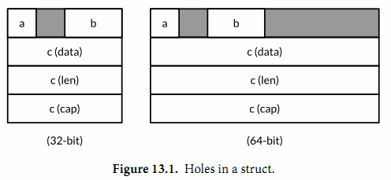
32位系统：
Sizeof(x) = 16 Alignof(x) = 4
Sizeof(x.a) = 1 Alignof(x.a) = 1 Offsetof(x.a) = 0
Sizeof(x.b) = 2 Alignof(x.b) = 2 Offsetof(x.b) = 2
Sizeof(x.c) = 12 Alignof(x.c) = 4 Offsetof(x.c) = 4
64位系统：
Sizeof(x) = 32 Alignof(x) = 8
Sizeof(x.a) = 1 Alignof(x.a) = 1 Offsetof(x.a) = 0
Sizeof(x.b) = 2 Alignof(x.b) = 2 Offsetof(x.b) = 2
Sizeof(x.c) = 24 Alignof(x.c) = 8 Offsetof(x.c) = 8
虽然这几个函数在不安全的unsafe包，但是这几个函数调用并不是真的不安全，特别在需要优化内存空间时它们返回的结果对于理解原生的内存布局很有帮助。
13.2. unsafe.Pointer
大多数指针类型会写成*T，表示是“一个指向T类型变量的指针”。unsafe.Pointer是特别定义的一种指针类型（译注：类似C语言中的void*类型的指针），它可以包含任意类型变量的地址。当然，我们不可以直接通过*p来获取unsafe.Pointer指针指向的真实变量的值，因为我们并不知道变量的具体类型。和普通指针一样，unsafe.Pointer指针也是可以比较的，并且支持和nil常量比较判断是否为空指针。
一个普通的*T类型指针可以被转化为unsafe.Pointer类型指针，并且一个unsafe.Pointer类型指针也可以被转回普通的指针，被转回普通的指针类型并不需要和原始的*T类型相同。通过将*float64类型指针转化为*uint64类型指针，我们可以查看一个浮点数变量的位模式。
package math
func Float64bits(f float64) uint64 { return *(*uint64)(unsafe.Pointer(&f)) }
fmt.Printf("%#016x\n", Float64bits(1.0)) // "0x3ff0000000000000"
通过转为新类型指针，我们可以更新浮点数的位模式。通过位模式操作浮点数是可以的，但是更重要的意义是指针转换语法让我们可以在不破坏类型系统的前提下向内存写入任意的值。
一个unsafe.Pointer指针也可以被转化为uintptr类型，然后保存到指针型数值变量中（译注：这只是和当前指针相同的一个数字值，并不是一个指针），然后用以做必要的指针数值运算。（第三章内容，uintptr是一个无符号的整型数，足以保存一个地址）这种转换虽然也是可逆的，但是将uintptr转为unsafe.Pointer指针可能会破坏类型系统，因为并不是所有的数字都是有效的内存地址。
许多将unsafe.Pointer指针转为原生数字，然后再转回为unsafe.Pointer类型指针的操作也是不安全的。比如下面的例子需要将变量x的地址加上b字段地址偏移量转化为*int16类型指针，然后通过该指针更新x.b：
gopl.io/ch13/unsafeptr
var x struct {
a bool
b int16
c []int
}
// 和 pb := &x.b 等价
pb := (*int16)(unsafe.Pointer(
uintptr(unsafe.Pointer(&x)) + unsafe.Offsetof(x.b)))
*pb = 42
fmt.Println(x.b) // "42"
上面的写法尽管很繁琐，但在这里并不是一件坏事，因为这些功能应该很谨慎地使用。不要试图引入一个uintptr类型的临时变量，因为它可能会破坏代码的安全性（译注：这是真正可以体会unsafe包为何不安全的例子）。下面段代码是错误的：
// NOTE: subtly incorrect!
tmp := uintptr(unsafe.Pointer(&x)) + unsafe.Offsetof(x.b)
pb := (*int16)(unsafe.Pointer(tmp))
*pb = 42
产生错误的原因很微妙。有时候垃圾回收器会移动一些变量以降低内存碎片等问题。这类垃圾回收器被称为移动GC。当一个变量被移动，所有的保存该变量旧地址的指针必须同时被更新为变量移动后的新地址。从垃圾收集器的视角来看，一个unsafe.Pointer是一个指向变量的指针，因此当变量被移动时对应的指针也必须被更新；但是uintptr类型的临时变量只是一个普通的数字，所以其值不应该被改变。上面错误的代码因为引入一个非指针的临时变量tmp，导致垃圾收集器无法正确识别这个是一个指向变量x的指针。当第二个语句执行时，变量x可能已经被转移，这时候临时变量tmp也就不再是现在的&x.b地址。第三个向之前无效地址空间的赋值语句将彻底摧毁整个程序！
还有很多类似原因导致的错误。例如这条语句：
pT := uintptr(unsafe.Pointer(new(T))) // 提示: 错误!
这里并没有指针引用new新创建的变量，因此该语句执行完成之后，垃圾收集器有权马上回收其内存空间，所以返回的pT将是无效的地址。
虽然目前的Go语言实现还没有使用移动GC（译注：未来可能实现），但这不该是编写错误代码侥幸的理由：当前的Go语言实现已经有移动变量的场景。在5.2节我们提到goroutine的栈是根据需要动态增长的。当发生栈动态增长的时候，原来栈中的所有变量可能需要被移动到新的更大的栈中，所以我们并不能确保变量的地址在整个使用周期内是不变的。
在编写本文时，还没有清晰的原则来指引Go程序员，什么样的unsafe.Pointer和uintptr的转换是不安全的（参考 Issue7192 ）. 译注: 该问题已经关闭），因此我们强烈建议按照最坏的方式处理。将所有包含变量地址的uintptr类型变量当作BUG处理，同时减少不必要的unsafe.Pointer类型到uintptr类型的转换。在第一个例子中，有三个转换——字段偏移量到uintptr的转换和转回unsafe.Pointer类型的操作——所有的转换全在一个表达式完成。
当调用一个库函数，并且返回的是uintptr类型地址时（译注：普通方法实现的函数尽量不要返回该类型。下面例子是reflect包的函数，reflect包和unsafe包一样都是采用特殊技术实现的，编译器可能给它们开了后门），比如下面反射包中的相关函数，返回的结果应该立即转换为unsafe.Pointer以确保指针指向的是相同的变量。
package reflect
func (Value) Pointer() uintptr
func (Value) UnsafeAddr() uintptr
func (Value) InterfaceData() [2]uintptr // (index 1)
13.3. 示例: 深度相等判断
来自reflect包的DeepEqual函数可以对两个值进行深度相等判断。DeepEqual函数使用内建的==比较操作符对基础类型进行相等判断，对于复合类型则递归该变量的每个基础类型然后做类似的比较判断。因为它可以工作在任意的类型上，甚至对于一些不支持==操作运算符的类型也可以工作，因此在一些测试代码中广泛地使用该函数。比如下面的代码是用DeepEqual函数比较两个字符串slice是否相等。
func TestSplit(t *testing.T) {
got := strings.Split("a:b:c", ":")
want := []string{"a", "b", "c"};
if !reflect.DeepEqual(got, want) { /* ... */ }
}
尽管DeepEqual函数很方便，而且可以支持任意的数据类型，但是它也有不足之处。例如，它将一个nil值的map和非nil值但是空的map视作不相等，同样nil值的slice 和非nil但是空的slice也视作不相等。
var a, b []string = nil, []string{}
fmt.Println(reflect.DeepEqual(a, b)) // "false"
var c, d map[string]int = nil, make(map[string]int)
fmt.Println(reflect.DeepEqual(c, d)) // "false"
我们希望在这里实现一个自己的Equal函数，用于比较类型的值。和DeepEqual函数类似的地方是它也是基于slice和map的每个元素进行递归比较，不同之处是它将nil值的slice（map类似）和非nil值但是空的slice视作相等的值。基础部分的比较可以基于reflect包完成，和12.3章的Display函数的实现方法类似。同样，我们也定义了一个内部函数equal，用于内部的递归比较。读者目前不用关心seen参数的具体含义。对于每一对需要比较的x和y，equal函数首先检测它们是否都有效（或都无效），然后检测它们是否是相同的类型。剩下的部分是一个巨大的switch分支，用于相同基础类型的元素比较。因为页面空间的限制，我们省略了一些相似的分支。
gopl.io/ch13/equal
func equal(x, y reflect.Value, seen map[comparison]bool) bool {
if !x.IsValid() || !y.IsValid() {
return x.IsValid() == y.IsValid()
}
if x.Type() != y.Type() {
return false
}
// ...cycle check omitted (shown later)...
switch x.Kind() {
case reflect.Bool:
return x.Bool() == y.Bool()
case reflect.String:
return x.String() == y.String()
// ...numeric cases omitted for brevity...
case reflect.Chan, reflect.UnsafePointer, reflect.Func:
return x.Pointer() == y.Pointer()
case reflect.Ptr, reflect.Interface:
return equal(x.Elem(), y.Elem(), seen)
case reflect.Array, reflect.Slice:
if x.Len() != y.Len() {
return false
}
for i := 0; i < x.Len(); i++ {
if !equal(x.Index(i), y.Index(i), seen) {
return false
}
}
return true
// ...struct and map cases omitted for brevity...
}
panic("unreachable")
}
和前面的建议一样，我们并不公开reflect包相关的接口，所以导出的函数需要在内部自己将变量转为reflect.Value类型。
// Equal reports whether x and y are deeply equal.
func Equal(x, y interface{}) bool {
seen := make(map[comparison]bool)
return equal(reflect.ValueOf(x), reflect.ValueOf(y), seen)
}
type comparison struct {
x, y unsafe.Pointer
t reflect.Type
}
为了确保算法对于有环的数据结构也能正常退出，我们必须记录每次已经比较的变量，从而避免进入第二次的比较。Equal函数分配了一组用于比较的结构体，包含每对比较对象的地址（unsafe.Pointer形式保存）和类型。我们要记录类型的原因是，有些不同的变量可能对应相同的地址。例如，如果x和y都是数组类型，那么x和x[0]将对应相同的地址，y和y[0]也是对应相同的地址，这可以用于区分x与y之间的比较或x[0]与y[0]之间的比较是否进行过了。
// cycle check
if x.CanAddr() && y.CanAddr() {
xptr := unsafe.Pointer(x.UnsafeAddr())
yptr := unsafe.Pointer(y.UnsafeAddr())
if xptr == yptr {
return true // identical references
}
c := comparison{xptr, yptr, x.Type()}
if seen[c] {
return true // already seen
}
seen[c] = true
}
这是Equal函数用法的例子:
fmt.Println(Equal([]int{1, 2, 3}, []int{1, 2, 3})) // "true"
fmt.Println(Equal([]string{"foo"}, []string{"bar"})) // "false"
fmt.Println(Equal([]string(nil), []string{})) // "true"
fmt.Println(Equal(map[string]int(nil), map[string]int{})) // "true"
Equal函数甚至可以处理类似12.3章中导致Display陷入死循环的带有环的数据。
// Circular linked lists a -> b -> a and c -> c.
type link struct {
value string
tail *link
}
a, b, c := &link{value: "a"}, &link{value: "b"}, &link{value: "c"}
a.tail, b.tail, c.tail = b, a, c
fmt.Println(Equal(a, a)) // "true"
fmt.Println(Equal(b, b)) // "true"
fmt.Println(Equal(c, c)) // "true"
fmt.Println(Equal(a, b)) // "false"
fmt.Println(Equal(a, c)) // "false"
练习 13.1： 定义一个深比较函数，对于十亿以内的数字比较，忽略类型差异。
练习 13.2： 编写一个函数，报告其参数是否为循环数据结构。
13.4. 通过cgo调用C代码
Go程序可能会遇到要访问C语言的某些硬件驱动函数的场景，或者是从一个C++语言实现的嵌入式数据库查询记录的场景，或者是使用Fortran语言实现的一些线性代数库的场景。C语言作为一个通用语言，很多库会选择提供一个C兼容的API，然后用其他不同的编程语言实现（译者：Go语言需要也应该拥抱这些巨大的代码遗产）。
在本节中，我们将构建一个简易的数据压缩程序，使用了一个Go语言自带的叫cgo的用于支援C语言函数调用的工具。这类工具一般被称为 foreign-function interfaces （简称ffi），并且在类似工具中cgo也不是唯一的。SWIG（http://swig.org）是另一个类似的且被广泛使用的工具，SWIG提供了很多复杂特性以支援C++的特性，但SWIG并不是我们要讨论的主题。
在标准库的compress/...子包有很多流行的压缩算法的编码和解码实现，包括流行的LZW压缩算法（Unix的compress命令用的算法）和DEFLATE压缩算法（GNU gzip命令用的算法）。这些包的API的细节虽然有些差异，但是它们都提供了针对 io.Writer类型输出的压缩接口和提供了针对io.Reader类型输入的解压缩接口。例如：
package gzip // compress/gzip
func NewWriter(w io.Writer) io.WriteCloser
func NewReader(r io.Reader) (io.ReadCloser, error)
bzip2压缩算法，是基于优雅的Burrows-Wheeler变换算法，运行速度比gzip要慢，但是可以提供更高的压缩比。标准库的compress/bzip2包目前还没有提供bzip2压缩算法的实现。完全从头开始实现一个压缩算法是一件繁琐的工作，而且 http://bzip.org 已经有现成的libbzip2的开源实现，不仅文档齐全而且性能又好。
如果是比较小的C语言库，我们完全可以用纯Go语言重新实现一遍。如果我们对性能也没有特殊要求的话，我们还可以用os/exec包的方法将C编写的应用程序作为一个子进程运行。只有当你需要使用复杂而且性能更高的底层C接口时，就是使用cgo的场景了（译注：用os/exec包调用子进程的方法会导致程序运行时依赖那个应用程序）。下面我们将通过一个例子讲述cgo的具体用法。
译注：本章采用的代码都是最新的。因为之前已经出版的书中包含的代码只能在Go1.5之前使用。从Go1.6开始，Go语言已经明确规定了哪些Go语言指针可以直接传入C语言函数。新代码重点是增加了bz2alloc和bz2free的两个函数，用于bz_stream对象空间的申请和释放操作。下面是新代码中增加的注释，说明这个问题：
// The version of this program that appeared in the first and second
// printings did not comply with the proposed rules for passing
// pointers between Go and C, described here:
// https://github.com/golang/proposal/blob/master/design/12416-cgo-pointers.md
//
// The rules forbid a C function like bz2compress from storing 'in'
// and 'out' (pointers to variables allocated by Go) into the Go
// variable 's', even temporarily.
//
// The version below, which appears in the third printing, has been
// corrected. To comply with the rules, the bz_stream variable must
// be allocated by C code. We have introduced two C functions,
// bz2alloc and bz2free, to allocate and free instances of the
// bz_stream type. Also, we have changed bz2compress so that before
// it returns, it clears the fields of the bz_stream that contain
// pointers to Go variables.
要使用libbzip2，我们需要先构建一个bz_stream结构体，用于保持输入和输出缓存。然后有三个函数：BZ2_bzCompressInit用于初始化缓存，BZ2_bzCompress用于将输入缓存的数据压缩到输出缓存，BZ2_bzCompressEnd用于释放不需要的缓存。（目前不要担心包的具体结构，这个例子的目的就是演示各个部分如何组合在一起的。）
我们可以在Go代码中直接调用BZ2_bzCompressInit和BZ2_bzCompressEnd，但是对于BZ2_bzCompress，我们将定义一个C语言的包装函数，用它完成真正的工作。下面是C代码，对应一个独立的文件。
gopl.io/ch13/bzip
/* This file is gopl.io/ch13/bzip/bzip2.c, */
/* a simple wrapper for libbzip2 suitable for cgo. */
#include <bzlib.h>
int bz2compress(bz_stream *s, int action,
char *in, unsigned *inlen, char *out, unsigned *outlen) {
s->next_in = in;
s->avail_in = *inlen;
s->next_out = out;
s->avail_out = *outlen;
int r = BZ2_bzCompress(s, action);
*inlen -= s->avail_in;
*outlen -= s->avail_out;
s->next_in = s->next_out = NULL;
return r;
}
现在让我们转到Go语言部分，第一部分如下所示。其中import "C"的语句是比较特别的。其实并没有一个叫C的包，但是这行语句会让Go编译程序在编译之前先运行cgo工具。
// Package bzip provides a writer that uses bzip2 compression (bzip.org).
package bzip
/*
#cgo CFLAGS: -I/usr/include
#cgo LDFLAGS: -L/usr/lib -lbz2
#include <bzlib.h>
#include <stdlib.h>
bz_stream* bz2alloc() { return calloc(1, sizeof(bz_stream)); }
int bz2compress(bz_stream *s, int action,
char *in, unsigned *inlen, char *out, unsigned *outlen);
void bz2free(bz_stream* s) { free(s); }
*/
import "C"
import (
"io"
"unsafe"
)
type writer struct {
w io.Writer // underlying output stream
stream *C.bz_stream
outbuf [64 * 1024]byte
}
// NewWriter returns a writer for bzip2-compressed streams.
func NewWriter(out io.Writer) io.WriteCloser {
const blockSize = 9
const verbosity = 0
const workFactor = 30
w := &writer{w: out, stream: C.bz2alloc()}
C.BZ2_bzCompressInit(w.stream, blockSize, verbosity, workFactor)
return w
}
在预处理过程中，cgo工具生成一个临时包用于包含所有在Go语言中访问的C语言的函数或类型。例如C.bz_stream和C.BZ2_bzCompressInit。cgo工具通过以某种特殊的方式调用本地的C编译器来发现在Go源文件导入声明前的注释中包含的C头文件中的内容（译注：import "C"语句前紧挨着的注释是对应cgo的特殊语法，对应必要的构建参数选项和C语言代码）。
在cgo注释中还可以包含#cgo指令，用于给C语言工具链指定特殊的参数。例如CFLAGS和LDFLAGS分别对应传给C语言编译器的编译参数和链接器参数，使它们可以从特定目录找到bzlib.h头文件和libbz2.a库文件。这个例子假设你已经在/usr目录成功安装了bzip2库。如果bzip2库是安装在不同的位置，你需要更新这些参数（译注：这里有一个从纯C代码生成的cgo绑定，不依赖bzip2静态库和操作系统的具体环境，具体请访问 https://github.com/chai2010/bzip2 ）。
NewWriter函数通过调用C语言的BZ2_bzCompressInit函数来初始化stream中的缓存。在writer结构中还包括了另一个buffer，用于输出缓存。
下面是Write方法的实现，返回成功压缩数据的大小，主体是一个循环中调用C语言的bz2compress函数实现的。从代码可以看到，Go程序可以访问C语言的bz_stream、char和uint类型，还可以访问bz2compress等函数，甚至可以访问C语言中像BZ_RUN那样的宏定义，全部都是以C.x语法访问。其中C.uint类型和Go语言的uint类型并不相同，即使它们具有相同的大小也是不同的类型。
func (w *writer) Write(data []byte) (int, error) {
if w.stream == nil {
panic("closed")
}
var total int // uncompressed bytes written
for len(data) > 0 {
inlen, outlen := C.uint(len(data)), C.uint(cap(w.outbuf))
C.bz2compress(w.stream, C.BZ_RUN,
(*C.char)(unsafe.Pointer(&data[0])), &inlen,
(*C.char)(unsafe.Pointer(&w.outbuf)), &outlen)
total += int(inlen)
data = data[inlen:]
if _, err := w.w.Write(w.outbuf[:outlen]); err != nil {
return total, err
}
}
return total, nil
}
在循环的每次迭代中，向bz2compress传入数据的地址和剩余部分的长度，还有输出缓存w.outbuf的地址和容量。这两个长度信息通过它们的地址传入而不是值传入，因为bz2compress函数可能会根据已经压缩的数据和压缩后数据的大小来更新这两个值。每个块压缩后的数据被写入到底层的io.Writer。
Close方法和Write方法有着类似的结构，通过一个循环将剩余的压缩数据刷新到输出缓存。
// Close flushes the compressed data and closes the stream.
// It does not close the underlying io.Writer.
func (w *writer) Close() error {
if w.stream == nil {
panic("closed")
}
defer func() {
C.BZ2_bzCompressEnd(w.stream)
C.bz2free(w.stream)
w.stream = nil
}()
for {
inlen, outlen := C.uint(0), C.uint(cap(w.outbuf))
r := C.bz2compress(w.stream, C.BZ_FINISH, nil, &inlen,
(*C.char)(unsafe.Pointer(&w.outbuf)), &outlen)
if _, err := w.w.Write(w.outbuf[:outlen]); err != nil {
return err
}
if r == C.BZ_STREAM_END {
return nil
}
}
}
压缩完成后，Close方法用了defer函数确保函数退出前调用C.BZ2_bzCompressEnd和C.bz2free释放相关的C语言运行时资源。此刻w.stream指针将不再有效，我们将它设置为nil以保证安全，然后在每个方法中增加了nil检测，以防止用户在关闭后依然错误使用相关方法。
上面的实现中，不仅仅写是非并发安全的，甚至并发调用Close和Write方法也可能导致程序的的崩溃。修复这个问题是练习13.3的内容。
下面的bzipper程序，使用我们自己包实现的bzip2压缩命令。它的行为和许多Unix系统的bzip2命令类似。
gopl.io/ch13/bzipper
// Bzipper reads input, bzip2-compresses it, and writes it out.
package main
import (
"io"
"log"
"os"
"gopl.io/ch13/bzip"
)
func main() {
w := bzip.NewWriter(os.Stdout)
if _, err := io.Copy(w, os.Stdin); err != nil {
log.Fatalf("bzipper: %v\n", err)
}
if err := w.Close(); err != nil {
log.Fatalf("bzipper: close: %v\n", err)
}
}
在上面的场景中，我们使用bzipper压缩了/usr/share/dict/words系统自带的词典，从938,848字节压缩到335,405字节。大约是原始数据大小的三分之一。然后使用系统自带的bunzip2命令进行解压。压缩前后文件的SHA256哈希码是相同了，这也说明了我们的压缩工具是正确的。（如果你的系统没有sha256sum命令，那么请先按照练习4.2实现一个类似的工具）
$ go build gopl.io/ch13/bzipper
$ wc -c < /usr/share/dict/words
938848
$ sha256sum < /usr/share/dict/words
126a4ef38493313edc50b86f90dfdaf7c59ec6c948451eac228f2f3a8ab1a6ed -
$ ./bzipper < /usr/share/dict/words | wc -c
335405
$ ./bzipper < /usr/share/dict/words | bunzip2 | sha256sum
126a4ef38493313edc50b86f90dfdaf7c59ec6c948451eac228f2f3a8ab1a6ed -
我们演示了如何将一个C语言库链接到Go语言程序。相反，将Go编译为静态库然后链接到C程序，或者将Go程序编译为动态库然后在C程序中动态加载也都是可行的（译注：在Go1.5中，Windows系统的Go语言实现并不支持生成C语言动态库或静态库的特性。不过好消息是，目前已经有人在尝试解决这个问题，具体请访问 Issue11058 ）。这里我们只展示的cgo很小的一些方面，更多的关于内存管理、指针、回调函数、中断信号处理、字符串、errno处理、终结器，以及goroutines和系统线程的关系等，有很多细节可以讨论。特别是如何将Go语言的指针传入C函数的规则也是异常复杂的（译注：简单来说，要传入C函数的Go指针指向的数据本身不能包含指针或其他引用类型；并且C函数在返回后不能继续持有Go指针；并且在C函数返回之前，Go指针是被锁定的，不能导致对应指针数据被移动或栈的调整），部分的原因在13.2节有讨论到，但是在Go1.5中还没有被明确（译注：Go1.6将会明确cgo中的指针使用规则）。如果要进一步阅读，可以从 https://golang.org/cmd/cgo 开始。
练习 13.3： 使用sync.Mutex以保证bzip2.writer在多个goroutines中被并发调用是安全的。
练习 13.4： 因为C库依赖的限制。 使用os/exec包启动/bin/bzip2命令作为一个子进程，提供一个纯Go的bzip.NewWriter的替代实现（译注：虽然是纯Go实现，但是运行时将依赖/bin/bzip2命令，其他操作系统可能无法运行）。
13.5. 几点忠告
我们在前一章结尾的时候，我们警告要谨慎使用reflect包。那些警告同样适用于本章的unsafe包。
高级语言使得程序员不用再关心真正运行程序的指令细节，同时也不再需要关注许多如内存布局之类的实现细节。因为高级语言这个绝缘的抽象层，我们可以编写安全健壮的，并且可以运行在不同操作系统上的具有高度可移植性的程序。
但是unsafe包，它让程序员可以透过这个绝缘的抽象层直接使用一些必要的功能，虽然可能是为了获得更好的性能。但是代价就是牺牲了可移植性和程序安全，因此使用unsafe包是一个危险的行为。我们对何时以及如何使用unsafe包的建议和我们在11.5节提到的Knuth对过早优化的建议类似。大多数Go程序员可能永远不会需要直接使用unsafe包。当然，也永远都会有一些需要使用unsafe包实现会更简单的场景。如果确实认为使用unsafe包是最理想的方式，那么应该尽可能将它限制在较小的范围，这样其它代码就可以忽略unsafe的影响。
现在，赶紧将最后两章抛入脑后吧。编写一些实实在在的应用是真理。请远离reflect和unsafe包，除非你确实需要它们。
最后，用Go快乐地编程。我们希望你能像我们一样喜欢Go语言。
附录
英文原版并没有包含附录部分，只有一个索引部分。中文版增加附录部分主要用于收录一些和本书相关的内容，比如英文原版的勘误（有些读者可能会对照中文和英文原阅读）、英文作者和中文译者、译文授权等内容。以后还可能会考虑增加一些习题解答相关的内容。
需要特别说明的是，中文版附录并没有包含英文原版的索引信息。因为英文原版的索引信息主要是记录每个索引所在的英文页面位置，而中文版是以GitBook方式组织的html网页形式，将英文页面位置转为章节位置可能会更合理，不过这个会涉及到繁琐的手工操作。如果大家有更好的建议，请告知我们。
附录A：原文勘误
p.9, ¶2: for "can compared", read "can be compared". (Thanks to Antonio Macías Ojeda, 2015-10-22. Corrected in the second printing.)
p.13: As printed, the gopl.io/ch1/lissajous program is deterministic, not random. We've added the statement below to the downloadable program so that it prints a pseudo-random image each time it is run. (Thanks to Randall McPherson, 2015-10-19.)
rand.Seed(time.Now().UTC().UnixNano())
p.15, ¶2: For "inner loop", read "outer loop". (Thanks to Ralph Corderoy, 2015-11-28. Corrected in the third printing.)
p.19, ¶2: For "Go's libraries makes", read "Go's library makes". (Thanks to Victor Farazdagi, 2015-11-30. Corrected in the third printing.)
p.40, ¶4: For "value of the underlying type", read "value of an unnamed type with the same underlying type". (Thanks to Carlos Romero Brox, 2015-12-19.)
p.40, ¶1: The paragraph should end with a period, not a comma. (Thanks to Victor Farazdagi, 2015-11-30. Corrected in the third printing.)
p.43, ¶3: Import declarations are explained in §10.4, not §10.3. (Thanks to Peter Jurgensen, 2015-11-21. Corrected in the third printing.)
p.48: f.ReadByte() serves as an example of a reference to f, but *os.File has no such method. For "ReadByte", read "Stat", four times. (Thanks to Peter Olsen, 2016-01-06. Corrected in the third printing.)
p.52, ¶2: for "an synonym", read "a synonym", twice. (Corrected in the second printing.)
p.52, ¶9: for "The integer arithmetic operators", read "The arithmetic operators". (Thanks to Yoshiki Shibata, 2015-12-20.)
p.68: the table of UTF-8 encodings is missing a bit from each first byte. The corrected table is shown below. (Thanks to Akshay Kumar, 2015-11-02. Corrected in the second printing.)
0xxxxxxx runes 0−127 (ASCII)
110xxxxx 10xxxxxx 128−2047 (values <128 unused)
1110xxxx 10xxxxxx 10xxxxxx 2048−65535 (values <2048 unused)
11110xxx 10xxxxxx 10xxxxxx 10xxxxxx 65536−0x10ffff (other values unused)
p.73, ¶1: For "a exercise", read "an exercise". (Thanks to vrajmohan, 2015-12-28.)
p.74: the comment in gopl.io/ch3/printints should say fmt.Sprint, not fmt.Sprintf. (Corrected in the second printing.)
p.75, ¶4: for "%u", read "%o". (Thanks to William Hannish, 2015-12-21.)
p.76: the comment // "time.Duration 5m0s should have a closing double-quotation mark. (Corrected in the second printing.)
p.79, ¶4: "When an untyped constant is assigned to a variable, as in the first statement below, or appears on the right-hand side of a variable declaration with an explicit type, as in the other three statements, ..." has it backwards: the first statement is a declaration; the other three are assignments. (Thanks to Yoshiki Shibata, 2015-11-09. Corrected in the third printing.)
p.112: Exercise 4.11 calls for a "CRUD" (create, read, update, delete) tool for GitHub Issues. Since GitHub does not currently allow Issues to be deleted, for "delete", read "close". (Thanks to Yoshiki Shibata, 2016-01-18.)
p.115: The anchor element in gopl.io/ch4/issueshtml's template is missing a closing </a> tag. (Thanks to Taj Khattra, 2016-01-19.)
p.132, code display following ¶3: the final comment should read: // compile error: can't assign func(int, int) int to func(int) int (Thanks to Toni Suter, 2015-11-21. Corrected in the third printing.)
p.160, ¶4: For Get("item")), read Get("item"). (Thanks to Yoshiki Shibata, 2016-02-01.)
p.166, ¶2: for "way", read "a way". (Corrected in the third printing.)
p.200, TestEval function: the format string in the final call to t.Errorf should format test.env with %v, not %s. (Thanks to Mitsuteru Sawa, 2015-12-07. Corrected in the third printing.)
p.222, Exercise 8.1: The port numbers for London and Tokyo should be swapped in the final command to match the earlier commands. (Thanks to Kiyoshi Kamishima, 2016-01-08.)
p.272, ¶3: for "the request body", read "the response body". (Thanks to 曹春晖, 2016-01-19.)
p.288, code display following ¶4: In the import declaration, for "database/mysql", read "database/sql". (Thanks to Jose Colon Rodriguez, 2016-01-09.)
p.347, Exercise 12.8: for "like json.Marshal", read "like json.Unmarshal". (Thanks to chai2010, 2016-01-01.)
p.362: the gopl.io/ch13/bzip program does not comply with the proposed rules for passing pointers between Go and C code because the C function bz2compress temporarily stores a Go pointer (in) into the Go heap (the bz_stream variable). The bz_stream variable should be allocated, and explicitly freed after the call to BZ2_bzCompressEnd, by C functions. (Thanks to Joe Tsai, 2015-11-18. Corrected in the third printing.)
附录B：作者/译者
英文作者
- Alan A. A. Donovan is a member of Google’s Go team in New York. He holds computer science degrees from Cambridge and MIT and has been programming in industry since 1996. Since 2005, he has worked at Google on infrastructure projects and was the co-designer of its proprietary build system, Blaze. He has built many libraries and tools for static analysis of Go programs, including oracle,
godoc -analysis, eg, and gorename. - Brian W. Kernighan is a professor in the Computer Science Department at Princeton University. He was a member of technical staff in the Computing Science Research Center at Bell Labs from 1969 until 2000, where he worked on languages and tools for Unix. He is the co-author of several books, including The C Programming Language, Second Edition (Prentice Hall, 1988), and The Practice of Programming (Addison-Wesley, 1999).
中文译者
| 中文译者 | 章节 |
|---|---|
chai2010 <chaishushan@gmail.com> | 前言/第2 ~ 4章/第10 ~ 13章 |
Xargin <cao1988228@163.com> | 第1章/第6章/第8 ~ 9章 |
CrazySssst | 第5章 |
foreversmart <njutree@gmail.com> | 第7章 |
附录C：译文授权
除特别注明外，本站内容均采用知识共享-署名(CC-BY) 3.0协议授权，代码遵循Go项目的BSD协议授权。

附录D：其它语言
下表是 The Go Programming Language 其它语言版本：
| 语言 | 链接 | 时间 | 译者 | ISBN |
|---|---|---|---|---|
| 中文 | 《Go语言圣经》 | 2016/2/1 | chai2010, Xargin, CrazySssst, foreversmart | ? |
| 韩语 | Acorn Publishing (Korea) | 2016 | Seung Lee | 9788960778320 |
| 俄语 | Williams Publishing (Russia) | 2016 | ? | 9785845920515 |
| 波兰语 | Helion (Poland) | 2016 | ? | ? |
| 日语 | Maruzen Publishing (Japan) | 2017 | Yoshiki Shibata | 9784621300251 |
| 葡萄牙语 | Novatec Editora (Brazil) | 2017 | ? | ? |
| 中文简体 | Pearson Education Asia | 2017 | ? | ? |
| 中文繁体 | Gotop Information (Taiwan) | 2017 | ? | ? |

|

|